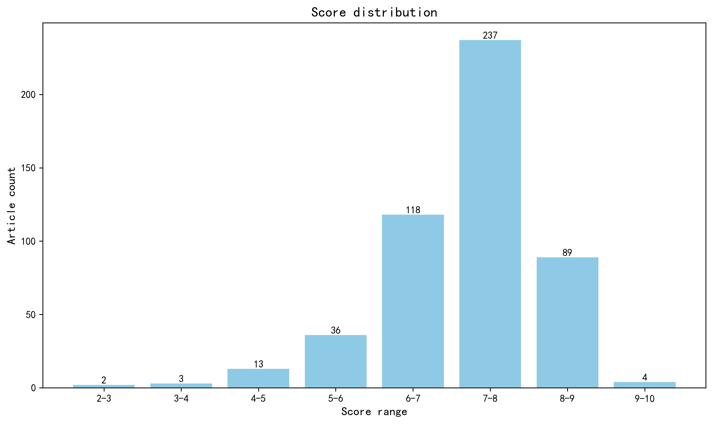

神经科学快讯·第031期 致幻剂与人脑信息结构：皮层群体趋同而非同步 (2026-10-10)
📊 本周概览
第 031 期 · 文献日期：2026-10-05—2026-10-10（含首尾）。共检索并评估 876 篇；作者与机构信息来自原始来源及 ROR 匹配。92 篇未取得足够摘要，相关条目已标注为仅供初筛；687 篇取得地区信息。作者指标未参与本期来源统计。
日期包含预印本版本发布日；主题研究为未经同行评审的预印本。已为原拟发布条目补回16篇正式摘要并重新评估，其中3篇改为不推送；当前拟发布481篇，仍有4篇没有取得正式摘要（均为简要提及）。
- 头条推荐: 4 篇
- 深度解读: 267 篇
- 简要提及: 210 篇
- 跨界启发: 0 篇
- 已过滤: 395 篇
🌏 环球视野

地区与机构按本期原始发表记录、ROR 及城市地址规则分别统计；跨地区合作可重复计入，不作为完整机构排名。评分分布不含“域外局限”文章。
🌍 国家/地区分布 TOP 10
| 排名 | 国家 | 文章数量 |
|---|---|---|
| 1 | United States | 194 |
| 2 | United Kingdom | 51 |
| 3 | China | 45 |
| 4 | Germany | 33 |
| 5 | France | 25 |
| 6 | Canada | 22 |
| 7 | Denmark | 13 |
| 8 | Switzerland | 12 |
| 9 | Italy | 12 |
| 10 | Spain | 11 |
地区计次合计: 544 次；取得地区信息 412/502 篇
🏢 研究机构 TOP 10
| 排名 | 机构 | 文章数量 |
|---|---|---|
| 1 | University of Oxford | 12 |
| 2 | Harvard University | 12 |
| 3 | Yale University | 9 |
| 4 | Columbia University | 8 |
| 5 | University of California, Los Angeles | 8 |
| 6 | Centre National de la Recherche Scientifique | 8 |
| 7 | University of Cambridge | 7 |
| 8 | Inserm | 7 |
| 9 | Dartmouth College | 7 |
| 10 | McGill University | 7 |
📊 评分分布
| 评分区间 | 文章数量 |
|---|---|
| 2-3 | 2 |
| 3-4 | 3 |
| 4-5 | 13 |
| 5-6 | 36 |
| 6-7 | 118 |
| 7-8 | 237 |
| 8-9 | 89 |
| 9-10 | 4 |
总计: 502 篇评分文章
📈 各领域文章分布
| 领域 | 深度解读 | 简要提及 | 总计 |
|---|---|---|---|
| 临床与转化神经科学 | 36 | 41 | 77 |
| 系统与环路神经科学 | 51 | 13 | 64 |
| 认知神经科学 | 42 | 22 | 64 |
| 未知领域 | 0 | 55 | 55 |
| 计算与理论神经科学 | 31 | 22 | 53 |
| 分子与细胞神经科学 | 33 | 16 | 49 |
| 方法学 | 23 | 17 | 40 |
| 感觉与运动神经科学 | 26 | 12 | 38 |
| 发育神经科学 | 23 | 10 | 33 |
| 社会与情感神经科学 | 2 | 2 | 4 |
合计: 深度解读 267 篇，简要提及 210 篇，共 477 篇
🥇 头条推荐（9.0+分）
中文标题: 利用AI驱动的形式化证明搜索推进数学研究
作者: George Tsoukalas, Anton Kovsharov, Sergey Shirobokov et al.
单位: Google DeepMind, London, UK.; Department of Mathematics, Aarhus University, Aarhus, Denmark.; Google, Mountain View, CA.
研究地区: United Kingdom, Denmark
关键词: AI4Science, 自动定理证明, 大语言模型, Lean, 神经符号推理, 形式验证
亮点: LLM加Lean形式验证的自主智能体首次大规模解决开放数学问题，实现了可验证的自主数学发现。
核心优势: 首次证明形式证明搜索智能体可在353个未解决Erdős问题上自主解决9个，在492个OEIS猜想上证明44个，并已跨组合学、优化、图论、代数几何和量子光学等研究领域部署。
研究局限: 自主解决的数学问题仅占约2%-9%，成功率较低；基本智能体在更复杂问题上的可扩展性尚未展示；Lean形式化对神经科学等实验领域的迁移需大量领域适应。
目标读者: AI for Science研究者、形式化方法专家、数学与理论计算机科学家、探索AI驱动科学发现自动化的神经科学计算生物学家。
推荐理由: 该研究虽非神经科学实验，却展示了LLM与形式化验证器（Lean）结合的自主证明智能体，以可验证的方式解决了多个未决数学问题，并已部署于组合学、优化等领域。对神经科学而言，这提供了一种方法论范式：用符号验证约束生成式AI，可能在连接组重建、因果环路推断或高维数据分析中提升结论可靠性。同时，其搜索策略或可启发神经科学中的假设空间探索与自动实验设计。
A Shortcut to Structure in AlphaFold 3
头条推荐 9.1/10中文标题: AlphaFold 3 中结构的捷径：多序列比对作为蛋白质折叠的结构捷径
作者: Jonathan Feldman, Jeffrey Skolnick
关键词: AlphaFold3, 结构预测, 可解释AI, 机器学习, 计算建模, 蛋白质折叠
亮点: AlphaFold 3 将 MSA 解读为可移植的折叠蓝图，而非蛋白自身的进化史，解释了其精度与局限。
核心优势: 通过因果干预和逐块探针，首次系统揭示了 AlphaFold 3 内部全局几何的涌现路径与 MSA 的结构捷径作用，并证明折叠描述可在不同蛋白间转移。
研究局限: 仅基于预印本，未经同行评审；实验限于特定蛋白集，未涵盖跨膜蛋白或复合物等复杂场景，且未开源代码供独立验证。
目标读者: 计算生物学家、蛋白质折叠研究者、AI 可解释性学者及结构基因组学工作者
推荐理由: 该研究通过因果干预和逐块探测，揭示了AlphaFold 3中全局蛋白质几何结构的形成机制，并首次将MSA识别为结构预测的“捷径”。其核心发现——移除MSA仅破坏远程拓扑而不影响局部二级结构——对计算神经科学具有直接方法论启示：当前基于深度学习的脑结构/功能预测模型（如连接组预测、分子结构建模）可能同样依赖数据中的“捷径”特征。研究展示的1/40残基恢复富集表征即可复原全局拓扑的机制，为理解生物神经网络如何从局部信息重构全局表征提供了可迁移的分析框架。
中文标题: 迷幻药物重构人脑中的信息
作者: Blackburne, G., Liardi, A., Mallaroni, P. et al.
单位: University College London
关键词: 致幻剂, 信息分解, LSD, 裸盖菇素, 氯胺酮, DMT
亮点: 多元信息分解揭示致幻剂使皮层群体信息冗余化，并提出最小生成模型统一解释多种化合物效应
核心优势: 将PID框架应用于五种致幻剂，首次系统量化高阶信息结构，并以最小生成模型统一解释，方法与理论整合极为出色。
研究局限: 样本量N=80在细分化合物时可能不足；模型拟合与因果推断的边界需进一步验证；预印本尚未经同行评审。
目标读者: 计算神经科学、系统神经科学、精神药理学及致幻剂研究领域的研究者
推荐理由: 该研究首次将多元信息分解框架系统应用于五种致幻剂（LSD、裸盖菇素、氯胺酮、DMT、5-MeO-DMT）的人类脑成像数据，通过量化信息存储、传递与转化的竞争性过程，揭示了以往方法所掩盖的神经机制。这项工作不仅为致幻剂如何重塑皮层信息流提供了统一的形式化解释，也推动了认知神经科学与信息论、计算建模的深度融合，对理解意识改变的神经基础具有重要价值。
A DNA Typewriter records the cell lineage history of a mouse, from zygote to late organogenesis.
头条推荐 9.0/10中文标题: DNA打字机记录小鼠从受精卵到器官发生晚期的细胞谱系历史
作者: Qi Yu, Haedong Kim, Sophie Seidel et al.
单位: Seattle Hub for Synthetic Biology, Seattle, WA, USA.; Allen Institute, Seattle, WA, USA.; Department of Genome Sciences, University of Washington, Seattle, WA, USA.; Seattle Hub for Synthetic Biology, Seattle, WA, USA.; Howard Hughes Medical Institute, Seattle, WA, USA.; Department of Genome Sciences, University of Washington, Seattle, WA, USA.; Seattle Hub for Synthetic Biology, Seattle, WA, USA. 等
研究地区: United States
关键词: DNA Typewriter, 谱系追踪, 单细胞测序, 小鼠发育, 计算生物学, 分子记录器
亮点: DNA Typewriter实现单胚胎从受精卵到器官发生期的全细胞谱系追踪，开启哺乳动物发育的谱系锚定时代。
核心优势: 首次将DNA Typewriter应用于完整小鼠胚胎，以单胚胎产生128万转录组细胞并构建时间校准的谱系树，实现了单细胞分辨率下谱系与转录组的直接耦合，解决了发育生物学长期缺乏谱系信息的难题。
研究局限: 技术复杂且编辑效率可能有限，谱系重建依赖计算方法，存在推断不确定性；样本量小（单胚胎）的普适性需进一步验证。
目标读者: 发育生物学家、单细胞基因组学研究者、计算生物学家和神经科学家
推荐理由: 该研究开发了DNA Typewriter——一种可在基因组中顺序写入信息的分子记录器，并将其应用于小鼠从受精卵到器官发生的完整谱系追踪。通过重建128万个细胞的系统发育树，作者定量解析了原肠运动期间的克隆优势及细胞类型与谱系的关联。对神经科学而言，这一技术为解析大脑发育中神经元谱系与表型的关系提供了前所未有的工具，有望推动发育神经生物学与单细胞谱系追踪的融合。
📚 精选文献（按领域分类）
临床与转化神经科学
Alzheimer’s disease target and drug discovery by leveraging multiomics and electronic health data
深度解读 8.6/10中文标题: 利用多组学和电子健康数据发现阿尔茨海默病靶点与药物
作者: Hou, Yuan, Li, Yichen, Zhang, Pengyue et al.
单位: Department of Biostatistics and Health Data Science, Indiana University, Indianapolis, USA; Cleveland Clinic Genome Center, Cleveland Clinic Research, Cleveland Clinic, Cleveland, USA; Department of Genomic Sciences and Systems Biology, Cleveland Clinic Research, Cleveland Clinic, Cleveland, USA; Cleveland Clinic Genome Center, Cleveland Clinic Research, Cleveland Clinic, Cleveland, USA; Department of Genomic Sciences and Systems Biology, Cleveland Clinic Research, Cleveland Clinic, Cleveland, USA; Department of Molecular Medicine, Cleveland Clinic Lerner College of Medicine, Case Western Reserve University, Cleveland, USA 等
研究地区: United States, Israel
关键词: 阿尔茨海默病, 多组学, 孟德尔随机化, 药物靶点, 电子健康数据, 类脑器官
亮点: 多组学因果推断、iPSC/类器官功能验证与十万人电子健康记录三线汇流，将EPHX2确立为阿尔茨海默病可成药新靶点。
核心优势: 从人类遗传学因果证据到细胞与类器官机制验证、再到5xFAD小鼠药理学 rescue 及真实世界处方数据关联的完整闭环，EPHX2及其保护性错义变异p.Arg287Gln的证据链尤为扎实。
研究局限: 欧洲血统样本主导，非洲血统靶点仅7个且缺乏功能验证；电子健康数据为观察性关联，存在适应症混杂与反向因果可能；动物模型认知改善能否外推至患者尚待临床试验检验。
目标读者: 神经退行性疾病遗传学、药物基因组学、转化神经科学及计算/系统生物学家
推荐理由: 该研究整合了多个AD GWAS、功能多组学及电子健康数据，通过孟德尔随机化系统性地提名可成药靶点，在欧美和非洲裔人群中分别鉴定出19个和7个靶点，并发现EPHX2的保护性错义变异(p.Arg287Gln)。利用患者iPSC衍生神经元和类脑器官进行功能验证，打通了从遗传关联到实验验证的转化链条。这项工作不仅为AD药物研发提供了新靶点，也展示了多组学与真实世界数据融合在神经退行性疾病靶点发现中的范式价值。
中文标题: SMCHD1是激活基因治疗普拉德-威利综合征的靶点
作者: Megan Iminitoff, Anna Le Fevre, Tamara Cameron et al.
关键词: Prader-Willi综合征, SMCHD1, 基因激活疗法, 表观遗传调控, 印记基因, 小鼠模型
亮点: SMCHD1是PWS印迹基因簇的广泛表观遗传抑制因子，出生后靶向敲除可在小鼠疾病相关组织中安全激活母源沉默基因拷贝并改善表型，为基因激活疗法提供概念验证。
核心优势: 通过小鼠和人类多模型证明SMCHD1调控PWS全基因簇而非部分区域，并在出生后体内敲除实现疾病相关组织（下丘脑）的基因激活和表型改善，同时展现了良好的安全性，为PWS的疾病修饰疗法提供了关键临床前证据。
研究局限: 研究主要基于小鼠模型，缺乏非人灵长类或人类细胞/组织的验证；PWS基因簇中多个基因的协同激活及长期安全性（如基因组不稳定或异常激活）尚未充分评估，向临床转化仍面临递送和剂量控制等挑战。
目标读者: 神经发育障碍、表观遗传学、基因治疗和转化神经科学研究者
推荐理由: 这项研究确立了SMCHD1作为Prader-Willi综合征（PWS）的关键表观遗传抑制因子，并验证了通过靶向SMCHD1激活母源沉默基因的治疗策略。PWS是最常见的肥胖遗传病因，也是自闭症谱系的重要单基因模型。该工作将基础表观遗传机制与基因激活疗法紧密结合，为PWS及其他印记疾病的疾病修正治疗提供了全新思路，转化潜力显著。
中文标题: 自噬体锚定化合物在脊髓小脑共济失调3型临床前模型中选择性降低突变型ataxin-3
作者: Yuan, H., Chen, Z., Shen, X. et al.
单位: Department of Neurology, Xiangya Hospital, Central South University, Changsha, Hunan, China
研究地区: China
关键词: 自噬, 多聚谷氨酰胺病, SCA3, 等位基因选择性, PROTAC, 小分子化合物
亮点: 口服小分子自噬体锚定化合物通过LC3依赖机制等位基因选择性清除突变ataxin-3，在SCA3多模型及患者iPSC神经元中验证并展现转化潜力。
核心优势: 在细胞、患者iPSC来源神经元和MJD84.2转基因小鼠中系统验证了AN2/GW5074对突变ataxin-3的等位基因选择性降解，并在体内外多表型层面获得一致的功能改善证据，同时开展了1303例中国SCA3患者polyQ长度依赖性分析，转化逻辑链条较为完整。
研究局限: 研究基于预印本，尚未经过独立同行评议；化合物为已有报道的再利用分子，机制与靶点特异性仍待更严格的脱靶/长期安全性验证；动物模型仅限MJD84.2一种，行为学与病理学的长期可逆性及跨模型泛化性有限。
目标读者: 神经退行性疾病、多聚谷氨酰胺病、自噬调控与蛋白稳态、药物发现及转化神经科学研究者
推荐理由: 这项研究针对脊髓小脑共济失调3型（SCA3）的核心病理——突变型ataxin-3蛋白累积，开发了基于自噬体锚定化合物（AUTACs）的等位基因选择性降解策略。与传统的基因沉默或非选择性蛋白清除不同，该化合物能够选择性降低突变型ataxin-3，同时保留野生型蛋白的正常功能，在临床前模型中显示出良好的安全性和有效性。这一策略为SCA3及其他多聚谷氨酰胺疾病提供了一种极具转化潜力的疾病修饰疗法，也为选择性蛋白降解技术的神经退行性疾病应用开辟了新方向。
中文标题: 靶向RAPTOR的反义寡核苷酸限制GATOR1依赖性疾病中的病理性mTORC1活性
作者: Hadj-Aissa, I., Muller, M., Desmeules, A. et al.
单位: University Laval
关键词: ASO治疗, mTORC1, GATOR1, 癫痫, 小鼠模型, DEPDC5
亮点: 用靶向RAPTOR的反义寡核苷酸“调低”mTORC1，从机制层面逆转GATOR1缺陷所致癫痫与代谢异常
核心优势: 单次ASO治疗即在多种GATOR1缺陷模型（神经元与星形胶质细胞）中持续抑制病理性mTORC1信号，并同步改善神经元高兴奋性、星形胶质细胞线粒体功能、自发癫痫与寿命，机制与转化结合完整。
研究局限: 目前基于bioRxiv预印本，尚缺同行评议；长期安全性、脱靶效应、在更广泛癫痫模型及非人灵长类中的有效性仍需验证。
目标读者: 癫痫与mTOR通路研究者、反义寡核苷酸/基因治疗开发者、神经药理学与转化神经科学团队
推荐理由: 该研究针对GATOR1复合体功能缺失引起的mTORC1过度激活这一常见癫痫遗传病因，开发了靶向RAPTOR的反义寡核苷酸（ASO）疗法。在多种GATOR1缺陷小鼠模型中，ASO治疗有效降低RAPTOR表达，抑制病理性mTORC1信号，减少神经元过度兴奋和星形胶质细胞代谢重塑，显著改善癫痫发作并延长生存期。这项工作不仅验证了RAPTOR作为可成药靶点的可行性，也展示了ASO技术在中枢神经系统疾病中精准调控信号通路的转化潜力，为mTOR相关癫痫的精准治疗提供了新策略。
中文标题: 盐酸小檗胺作为脑渗透性半乳糖凝集素-3抑制剂在亨廷顿病模型中的作用
作者: Jian Jing Siew, Chia-Wei Lee, Hui-Mei Chen et al.
单位: Institute of Biomedical Sciences, Academia Sinica, Taipei 115, Taiwan.; Institute of Biological Chemistry, Academia Sinica, Taipei 115, Taiwan.; Genomics Research Center, Academia Sinica, Taipei 115, Taiwan. 等
研究地区: Taiwan, United States
关键词: Galectin-3, 亨廷顿病, 小胶质细胞, 高内涵筛选, 血脑屏障穿透, 神经炎症
亮点: 在亨廷顿病中首次实现脑内可及的小分子Gal3泛抑制剂，发现非经典糖识别域别构机制
核心优势: 创新性高内涵Gal3-GFP聚集筛选平台，从2.4万分子中筛选出可入脑的berbamine hydrochloride，并通过多种模型验证其抑制Gal3寡聚及Gal3-TREM2相互作用，改善亨廷顿病小鼠运动功能与病理。
研究局限: 核心别构机制主要依赖计算对接与分子动力学模拟，缺乏高分辨率结构生物学（如冷冻电镜或晶体结构）的直接证据；体内仅使用R6/2单一模型，需在更多模型和灵长类中验证。
目标读者: 神经退行性疾病研究者、小分子药物筛选与神经药理学研究者、亨廷顿病转化医学团队
推荐理由: 该研究针对亨廷顿病中Galectin-3驱动的神经炎症，建立了基于小胶质细胞Gal3-GFP的高内涵筛选平台，从24000个小分子中发现了能穿透血脑屏障的Gal3抑制剂盐酸小檗胺。这不仅为亨廷顿病提供了候选药物，更首次实现了对胞内Gal3活性的药理学调控，为靶向溶酶体损伤-神经炎症轴的治疗策略开辟了新途径。
中文标题: 靶向小胶质细胞P2Y12受体信号减轻实验性帕金森病中的神经退行性变
作者: Iring, A., Kiss, D. J., Baranyi, M. et al.
单位: Molecular Pharmacology Research Group, HUN-REN Institute of Experimental Medicine, 1083 Budapest, Hungary.
研究地区: Hungary
关键词: 帕金森病, 小胶质细胞, P2Y12受体, MPTP模型, 神经炎症, 条件性基因敲除
亮点: 小胶质细胞P2Y12受体是帕金森病神经变性的可成药驱动因子，遗传与药理双重证据支持靶向该受体的治疗潜力。
核心优势: 在急性与亚慢性MPTP模型中，通过诱导性小胶质细胞特异性P2ry12敲除并结合结构虚拟筛选发现的新型拮抗剂，提供了从遗传到药理、从体外到在体的多模态因果证据链。
研究局限: 仅基于MPTP毒素模型，缺乏α-突触核蛋白或遗传性帕金森病模型验证；新型拮抗剂的药代动力学、脑选择性及脱靶效应尚未充分表征；P2Y12R在人类帕金森病中的表达动态及细胞类型特异性仍需确认。
目标读者: 神经免疫学、帕金森病转化研究、小胶质细胞生物学及G蛋白偶联受体药理学研究者
推荐理由: 该研究聚焦小胶质细胞P2Y12受体在帕金森病神经退行性变中的驱动作用，通过可诱导的小胶质细胞特异性P2ry12敲除，在急性和亚慢性MPTP模型中系统评估了受体缺失对多巴胺能神经元存活和神经炎症的影响，并进一步验证了药理学靶向该受体的可行性。研究不仅将P2Y12R从传统的“稳态维持”角色拓展为神经退行性变的关键推动者，还为帕金森病提供了具有转化潜力的新靶点。其严谨的遗传学与药理学双重验证策略，对理解神经免疫互作和开发疾病修饰疗法具有重要参考价值。
中文标题: 绘制生命周期中颈段脊髓的形态学图谱
作者: Schilling, K. G., Kim, M. E., Amandola, M. et al.
单位: Vanderbilt University Institute of Imaging Science
关键词: 人类, 脊髓, MRI, 寿命图表, 规范建模, 神经影像
亮点: 首个基于超2.4万例T1 MRI的宫颈脊髓形态学全生命周期图表，提供年龄和性别特异性百分位评分，将脊髓MRI从定性解读推向定量规范化。
核心优势: 样本量巨大（24,251例，0-100岁，33个数据集）且采用对比度无关的深度学习分割，结合GAMLSS建模，生成覆盖C1-C7的稳健规范轨迹。
研究局限: 仅基于T1加权脑MRI的脊髓覆盖，可能引入选择偏倚；缺乏独立外部验证队列；未充分控制扫描仪和协议差异。
目标读者: 神经影像学、脊髓损伤与疾病、衰老与神经退行性疾病研究者及临床神经科医生
推荐理由: 该研究基于33个数据集、24,251例T1加权MRI，构建了首个覆盖0-100岁的颈段脊髓形态学寿命图表，解决了临床解读中因个体差异和缺乏规范参考而导致的偏差。通过先进的对比度归一化和跨数据集协调，提供了稳健的规范模型，为脊髓相关疾病（如脊髓压迫、神经退行性疾病）的早期诊断和监测提供了量化基准。方法学创新与大规模数据整合对临床转化和神经影像分析具有重要价值。
中文标题: 降低血管相关成纤维细胞中的APOE4可减轻脑淀粉样血管病及相关血管功能障碍
作者: Saadi, F., Cho, Y., Katritch, I. V. et al.
单位: Washington University in St louis, School of Medicine
研究地区: United States
关键词: APOE4, 脑淀粉样血管病, 血管相关成纤维细胞, 阿尔茨海默病, COL6, 血管功能障碍
亮点: 血管相关成纤维细胞来源的APOE4是驱动脑淀粉样血管病和脑血管功能障碍的关键细胞源头，为靶向CAA提供了新方向。
核心优势: 利用floxed人APOE4等位基因结合Col1a2-CreERT+实现VAF特异性APOE4敲低，并在体内多参数光声成像中验证了血管功能和血流改善，因果链条较完整。
研究局限: 主要基于5xFAD小鼠模型和特定Cre驱动，VAF特异性可能存在脱靶；人类尸检证据仅为相关性，且bioRxiv预印本尚未经过同行评审。
目标读者: 神经退行性疾病、脑血管生物学、阿尔茨海默病遗传学与血管周围细胞研究者
推荐理由: 该研究首次明确血管相关成纤维细胞（VAFs）是驱动脑淀粉样血管病（CAA）的关键APOE4来源，揭示了APOE4在脑血管壁沉积中的细胞特异性作用。通过人脑组织与模型验证，不仅将APOE4的致病机制从神经元拓展至血管微环境，还为靶向VAFs降低CAA和血管功能障碍提供了转化方向。对理解阿尔茨海默病血管假说及开发干预策略具有重要意义。
中文标题: 第二代“缺氧药丸”可挽救多种不同小鼠模型的神经退行性表型
作者: Hong Wang, Eizo Marutani, Luca Zazzeron et al.
单位: HHMI and Department of Molecular Biology, Massachusetts General Hospital, Boston, MA 02114.; Department of Systems Biology, Harvard Medical School, Boston, MA 02115.; Broad Institute of Massachusetts Institute of Technology and Harvard, Cambridge, MA 02142.; Anesthesia Center for Critical Care Research of the Department of Anesthesia, Critical Care and Pain Medicine, Massachusetts General Hospital and Harvard Medical School, Boston, MA 02114.; Killion Center for Neurodegeneration and Experimental Therapeutics, Department of Neurology, University of Alabama at Birmingham, Birmingham, AL 35294.
研究地区: United States
关键词: 缺氧疗法, 小分子药物, 线粒体病, 神经退行性, 小鼠模型, 转化医学
亮点: 二代“药丸中的缺氧”通过提升血红蛋白亲和力并抑制HIF-2α，在多种神经退行性小鼠模型中逆转表型并显著延长寿命。
核心优势: 在三种不同神经退行性疾病模型中验证了G B T601/PT2399联合疗法的转化潜力，且从晚期疾病阶段开始治疗仍有效。
研究局限: 机制层面仍主要依赖表型观察，长期安全性与人体转化可行性尚待验证。
目标读者: 神经退行性疾病、线粒体医学、缺氧信号通路及转化神经科学研究者
推荐理由: 该研究将“缺氧”从气体吸入转化为可控的口服小分子方案，通过血红蛋白亲和力增强剂与HIF-2α抑制剂联用，模拟慢性持续缺氧的获益，同时规避红细胞增多等副作用。在Ndufs4 KO等不同神经退行性疾病小鼠模型中验证了疗效，为线粒体病、 Leigh综合征等罕见病及常见神经退行性疾病提供了一种可临床转化的新策略。
PAICS mediates DNA damage and cerebellar neuronal loss in C9orf72 amyotrophic lateral sclerosis.
深度解读 8.1/10中文标题: PAICS介导C9orf72肌萎缩侧索硬化中的DNA损伤与小脑神经元丢失
作者: Jaskaran Singh, Léa Lescouzères, Charlotte Zaouter et al.
单位: Institut National de la Recherche Scientifique (INRS), Centre Armand Frappier Santé Biotechnologie, Laval, QC H7V 1B7, Canada.; Institut National de la Recherche Scientifique (INRS), Centre Armand Frappier Santé Biotechnologie, Laval, QC H7V 1B7, Canada.; Département de Neurosciences, Université de Montréal, Montréal, QC H3C 3J7, Canada.; Early Drug Discovery Unit (EDDU), The Neuro-Montreal Neurological Institute and Hospital, McGill University, Montreal, QC H3A 1A1, Canada.
研究地区: Canada
关键词: C9orf72, 小脑, DNA损伤, GABA能中间神经元, 浦肯野细胞, ALS/FTD
亮点: 通过斑马鱼单细胞转录组学和多模型验证，揭示PAICS介导的DNA损伤修复缺陷是C9orf72相关小脑变性的关键机制，并证明恢复PAICS表达具有治疗潜力。
核心优势: 多模态证据链完整：从斑马鱼在体功能缺失、单细胞转录组、人类死后脑组织与iPSC来源运动神经元验证到基因回补拯救实验，逻辑严密且跨物种一致。
研究局限: 缺乏对PAICS下游DNA损伤修复通路的具体分子机制解析，且斑马鱼模型与人类疾病在遗传背景和病程上的差异可能限制转化相关性。
目标读者: 神经退行性疾病、ALS/FTD、小脑生物学及DNA损伤修复领域的研究者
推荐理由: 该研究首次揭示C9orf72功能缺失通过PAICS介导DNA损伤，导致小脑GABA能中间神经元和浦肯野细胞丢失，从而引发小脑萎缩。这一发现将C9orf72相关ALS/FTD的病理机制从运动系统拓展到小脑环路，为理解疾病中非运动症状（如共济失调、认知障碍）提供了新视角。PAICS作为DNA损伤修复关键酶，其下调可能成为潜在治疗靶点，具有转化价值。
中文标题: 空间和单核转录组学揭示2型糖尿病相关认知功能障碍的分子病理学
作者: Wei Wu, Yumeng Yang, Xixi Zhang et al.
单位: Guangzhou National Laboratory, Guangzhou 510005, China.; Bioland Laboratory (Guangzhou Regenerative Medicine and Health, Guangdong Laboratory), Guangzhou 510005, China.; State Key Laboratory of Oncology in South China, Guangdong Provincial Clinical Research Center for Cancer, Sun Yat-sen University Cancer Center, Guangzhou 510060, China.; The Affiliated Qingyuan Hospital (Qingyuan People's Hospital), Guangzhou Medical University, Guangzhou 511436, China.; Guangzhou National Laboratory, Guangzhou 510005, China.; Bioland Laboratory (Guangzhou Regenerative Medicine and Health, Guangdong Laboratory), Guangzhou 510005, China.; The Fifth Affiliated Hospital of Guangzhou Medical University, Guangzhou 510700, China.; State Key Laboratory of Oncology in South China, Guangdong Provincial Clinical Research Center for Cancer, Sun Yat-sen University Cancer Center, Guangzhou 510060, China.; Guangzhou National Laboratory, Guangzhou 510005, China.; School of Life Sciences, Yunnan University, Kunming 650500, China. 等
研究地区: China, United States
关键词: 空间转录组, 单核RNA测序, 2型糖尿病, 认知功能障碍, 小鼠, 海马
亮点: 整合空间转录组与单核RNA测序绘制2型糖尿病相关认知功能障碍的时空分子图谱，并锁定Ldhb为可干预的治疗靶点。
核心优势: 多模态组学（空间转录组+snRNA-seq）与功能验证（脑内及兴奋性神经元特异性Ldhb过表达）形成闭环，从分子病理到认知行为表型证据链完整，并提供公开数据资源。
研究局限: 机制验证主要依赖过表达策略，缺乏Ldhb敲低/敲除及回补实验，且仅使用年轻（3、6月龄）小鼠模型，未覆盖长期糖尿病病程与衰老交互，人类组织验证缺失。
目标读者: 神经退行与代谢共病研究者、空间/单细胞组学方法学家、糖尿病认知障碍转化医学团队
推荐理由: 该研究创新性地整合空间转录组与单核RNA测序，首次系统绘制了2型糖尿病相关认知功能障碍（DACD）小鼠脑内分子与细胞景观。研究揭示海马和等皮层兴奋性神经元突触功能严重受损，并呈现区域和细胞类型特异性改变，为DACD的机制理解和治疗靶点发现提供了高分辨率资源。方法学上为复杂脑疾病的时空多组学研究树立了典范。
中文标题: 大型猿类成年期脑重变化研究
作者: Branka Hrvoj-Mihic, Cheryl D Stimpson, Mary Ann Cree et al.
单位: Department of Anthropology and Center for the Advanced Study of Human Paleobiology, The George Washington University, Washington, DC 20052.; Nash Family Department of Neuroscience and Friedman Brain Institute, Icahn School of Medicine at Mount Sinai, New York, NY 10019.; Emory National Biomedical Research Center, Emory University, Atlanta, GA 30329. 等
研究地区: United States
关键词: 脑萎缩, 衰老, 大型猿类, 跨物种比较, 脑重量, 进化神经科学
亮点: 跨物种成年寿命脑重轨迹比较表明，显著的脑重量下降并非大型猿类衰老的普遍特征，而可能为人类所特有
核心优势: 样本覆盖四大类人猿物种的完整成年年龄跨度并延伸至与人类脑老化表型出现相当的年龄，直接检验了人类脑老化独特性假说
研究局限: 脑重量为整体宏观指标，无法反映区域特异性萎缩或细胞/分子层面的老化过程；体重的部分控制仅在黑猩猩亚样本中完成，且缺乏纵向重复测量与死前认知/病理数据
目标读者: 比较神经生物学、演化神经科学、脑老化与神经退行性疾病研究及灵长类学研究者
推荐理由: 该研究系统追踪了四种大型猿类成年期脑重量的变化，发现随年龄下降的模式在人类与近缘物种间既有共性也有差异。这一跨物种视角直接挑战了“脑萎缩是 human-specific 衰老特征”的假设，为理解阿尔茨海默病等神经退行性疾病的进化根源提供了关键基线。对临床转化研究者而言，它提示了选择大型猿类作为衰老与神经退行模型的重要潜力，并强调了比较方法在区分病理性与生理性脑老化中的价值。
Spontaneous slow waves index multiple dimensions of recovery in Disorders of Consciousness
深度解读 8.0/10中文标题: 自发慢波可揭示意识障碍患者恢复的多个维度
作者: Ruyant Belabbas, A., Boullet, A., Manasova, D. et al.
单位: Paris Brain Institute
研究地区: France
关键词: EEG, 慢波, 意识障碍, 人类, 皮层动力学, 生物标志物
亮点: 挑战传统观点：意识障碍患者中的高幅慢波并非单纯病理征象，而是残存意识与恢复潜力的正向指标。
核心优势: 236例患者大样本、256通道高密度脑电、多维度慢波特征刻画，并结合CRS-R、Local-Global范式、一年GOS-E随访及MRI结构完整性进行多模态验证，证据链完整且稳健。
研究局限: 单时间点基线脑电的预测AUC仅为0.56-0.58，个体化预后价值有限；研究基于观察性关联，无法确立慢波与恢复之间的因果关系，且随访仅一年。
目标读者: 意识障碍临床神经生理学家、重症监护与康复医学研究者、系统神经科学与计算神经科学家
推荐理由: 该研究将意识障碍（DoC）患者中自发出现的慢波从传统病理慢化标志重新概念化为兼具多重生理维度的恢复指标，提出慢波可映射皮层功能状态的不同侧面。方法上依托静息态EEG，以慢波幅度、时空特征等作为多维度恢复表征，为临床意识评估提供了可转化的电生理框架。其价值在于连接了睡眠神经科学的稳态理论与DoC的临床评估，提示不同慢波特征可区分损伤严重度与瞬时状态，对未来开发基于EEG的预后标志物和闭环干预具有直接推动作用。
中文标题: 区域相似性与性别典型青年脑结构的纵向关联：晚年神经炎症与抑郁的相关性
作者: Petrican, R., Michael, B. D., Mulderig, E.
单位: University of Liverpool
研究地区: United Kingdom
关键词: 神经影像, 抑郁症, 神经炎症, 性别差异, 纵向队列, 老化
亮点: 区域性脑连接模式与性别典型架构的偏离，可纵向预测中年女性未来抑郁和老年男性神经退行性变，并关联微胶质和性类固醇基因表达。
核心优势: 将连续的、区域特异的性别差异脑连接模式与纵向临床结局及炎症相关血液生物标志物相结合，揭示了性别和年龄依赖的互补预测模式。
研究局限: 样本为健康老龄化队列，因果推断有限；仅涉及皮质连接模式，未涵盖皮质下结构；性别典型模型基于二元性别定义构建，可能限制对性别连续谱的全面刻画。
目标读者: 神经影像学、精神疾病与神经退行性变交叉领域、精准医学和计算神经科学研究者。
推荐理由: 该研究创新性地以区域特异性、连续性的方式量化大脑结构与性别典型年轻成人脑架构的相似度，突破了传统二分性别定义的局限。通过纵向设计，作者将这一影像学指标与晚年神经炎症和抑郁症状联系起来，为理解精神疾病与神经退行性风险的性别差异提供了新的视角。该方法有望推动个体化治疗靶点的识别，对临床转化和脑老化研究具有重要启示。
中文标题: 疾病阶段敏感的MFSD2A-小窝轴指示阿尔茨海默病海马血脑屏障破坏
作者: zhu, y., Yang, D., chen, j. et al.
单位: sun yat-sen university
研究地区: China
关键词: 阿尔茨海默病, 血脑屏障, 海马, MFSD2A, 小窝蛋白, 人类
亮点: MFSD2A-caveolae轴是阿尔茨海默病早期海马血脑屏障破坏的关键机制，且早期干预窗口治疗有效
核心优势: 多模态证据（人脑组织、单核转录组、APP/PS1小鼠）结合AAV-BR1血管靶向治疗，证明MFSD2A恢复的疾病阶段敏感性，并关联到认知改善。
研究局限: 预印本未经同行评审；机制细节（如MFSD2A下调的上游调控）未充分阐明；人数据为相关性，因果性依赖小鼠模型。
目标读者: 阿尔茨海默病、血脑屏障、神经血管单元、基因治疗及转化神经科学研究者
推荐理由: 该研究揭示了阿尔茨海默病中海马特异性血脑屏障破坏的新机制：内皮细胞MFSD2A缺失导致小窝介导的转胞吞作用增强，且这一变化出现在疾病早期。在人类AD脑组织和多种小鼠模型中均得到验证，为AD血管病变的早期诊断和靶向治疗提供了潜在靶点。
中文标题: 聚焦超声开放血脑屏障降低非人灵长类模型中的神经黑色素
作者: Noelia Esteban-García, Carolina Martín-Flórez, José A Pineda-Pardo et al.
单位: HM CINAC (Centro Integral de Neurociencias Abarca Campal), Hospital Universitario HM Puerta del Sur, HM Hospitales, Madrid, 28938, Spain.; Instituto de Investigación Sanitaria HM Hospitales, Madrid, 28015, Spain.; Network Center for Biomedical Research on Neurodegenerative Diseases (CIBERNED), Instituto Carlos III, Madrid, 28031, Spain.; PhD Program of Biochemistry, Molecular Biology and Biomedicine, Faculty of Medicine, Complutense University of Madrid, Madrid, 28040, Spain.; HM CINAC (Centro Integral de Neurociencias Abarca Campal), Hospital Universitario HM Puerta del Sur, HM Hospitales, Madrid, 28938, Spain.; Instituto de Investigación Sanitaria HM Hospitales, Madrid, 28015, Spain.; Network Center for Biomedical Research on Neurodegenerative Diseases (CIBERNED), Instituto Carlos III, Madrid, 28031, Spain.; HM CINAC (Centro Integral de Neurociencias Abarca Campal), Hospital Universitario HM Puerta del Sur, HM Hospitales, Madrid, 28938, Spain.; Instituto de Investigación Sanitaria HM Hospitales, Madrid, 28015, Spain.; Network Center for Biomedical Research on Neurodegenerative Diseases (CIBERNED), Instituto Carlos III, Madrid, 28031, Spain.; PhD Program in Neuroscience, Universidad Autónoma de Madrid-Cajal Institute, Madrid, 28029, Spain. 等
研究地区: Spain
关键词: 聚焦超声, 血脑屏障, 非人灵长类, 神经黑色素, 帕金森病, 黑质
亮点: 低强度聚焦超声联合微泡无创开放血脑屏障可显著减少非人灵长类帕金森病模型黑质中的神经黑色素积累，为靶向色素及病理性聚集体的治疗策略提供转化框架。
核心优势: 在自发性积累神经黑色素的非人灵长类模型中，结合多模态组织学、铁定量与炎症标志物，首次证明重复LIFU-MB干预可同时降低细胞内和细胞外神经黑色素，并显示游离铁下降趋势；转化相关性和无创深部脑靶向能力突出。
研究局限: 研究仅基于小样本非人灵长类模型，缺乏对多巴胺能神经元存活或行为学的长期功能终点，也未阐明LIFU-MB减少神经黑色素的直接分子机制（如是否通过胶质淋巴清除、自噬或铁代谢重编程），因此对帕金森病的疾病修饰作用仍属推断。
目标读者: 神经退行性疾病、帕金森病、血脑屏障与神经免疫、超声神经调控及转化神经科学研究者
推荐理由: 该研究在非人灵长类模型中首次证实，低强度聚焦超声联合微泡开放血脑屏障可显著减少黑质致密部的神经黑色素。神经黑色素积累与帕金森病中多巴胺能神经元的易损性密切相关，而现有手段难以直接清除这一病理产物。该工作不仅验证了LIFU-MB在大型动物中的可行性，更提示其作为降低神经黑色素、延缓神经退行性变的潜在干预策略，为帕金森病的转化研究开辟了新路径。
中文标题: 人诱导多能干细胞来源的间充质基质细胞通过激活催产素能神经元改善小鼠自闭症样表型
作者: Yinong Huang, Yixuan Liu, Yilin Liu et al.
关键词: 自闭症谱系障碍, 间充质干细胞, 催产素, Shank3B小鼠, iPSC, 细胞治疗
亮点: iPSC来源间充质干细胞通过PGE2激活下丘脑催产素神经元，改善两种自闭症小鼠模型的社交缺陷与重复行为。
核心优势: 机制链条清晰：从外周静脉输注MSC定位于神经垂体、与OT能轴突接触，到PGE2依赖的PVN OT+神经元激活，并用PTGS1/PTGES敲低实现因果验证，覆盖单基因与特发性两种ASD模型。
研究局限: 人类iPSC-MSC异种移植到免疫健全小鼠的免疫相容性与长期安全性未充分评估；OT+神经元激活如何具体介导行为改善仍缺乏投射环路层面的直接证据。
目标读者: 神经发育障碍、干细胞治疗、神经内分泌与转化神经科学研究者
推荐理由: 该研究揭示了iPSC来源间充质干细胞改善Shank3B自闭症模型小鼠社交缺陷的神经机制：静脉输注的MSC定位于神经垂体，与催产素能神经元相互作用并激活其活动。这不仅阐明了MSC治疗ASD的潜在靶点，也首次将细胞治疗与催产素系统直接联系，为ASD的转化研究提供了新思路。
Rigidity in Parkinson's disease.
深度解读 7.8/10中文标题: 帕金森病中的僵硬
作者: Antonio Suppa, Alessandro Zampogna, Giorgio Vivacqua et al.
单位: Department of Medicine, Laboratory of Microscopic and Ultrastructural Anatomy, Campus Bio-Medico University of Rome, Rome 00128, Italy.; Department of Human Neurosciences, Sapienza University of Rome, Rome 00185, Italy.; Department of Human Neurosciences, Sapienza University of Rome, Rome 00185, Italy.; IRCCS Neuromed Institute, Pozzilli, Isernia 86077, Italy. 等
研究地区: Italy, United States, Spain, United Kingdom
关键词: 帕金森病, 肌强直, 深部脑刺激, 电生理, 运动障碍, 临床评估
亮点: 以统一概念框架重新审视帕金森病僵直的表型异质性、评估方法与病理生理机制。
核心优势: 系统批判性整合了僵直在临床与仪器评估中的不一致性，并跨分子、影像与神经生理层面梳理其病理机制。
研究局限: 作为叙事性综述，缺乏系统检索与量化证据分级，且未提供原创新数据或统一评估标准。
目标读者: 帕金森病与运动障碍临床研究者、神经生理学家及运动控制与脑刺激领域的研究人员
推荐理由: 这篇综述聚焦于帕金森病中常被忽视的核心症状——肌强直，系统梳理了其现象学、神经生理相关物及深部脑刺激等干预的响应。文章批判性地澄清了当前概念上的模糊之处，并整合了评估策略与病理生理机制，为理解这一症状提供了从临床表型到环路机制的多层次框架。对于关注帕金森病运动症状异质性及DBS疗效机制的研究者与临床医生，这是一篇具有重要参考价值的深度总结。
中文标题: 阿尔茨海默病突触病变的阶段特异性蛋白质组特征
作者: Georgiades, T., Griffiths, J., Gibbs, F. et al.
单位: UK Dementia Research Institute at Imperial College, London, W12 0BZ, UK
研究地区: United Kingdom
关键词: 阿尔茨海默病, 蛋白质组学, 突触核, 突触丢失, Braak分期, 人类
亮点: 通过跨Braak分期的突触蛋白质组学与独立血浆蛋白质组验证，系统描绘AD突触病变的阶段特异性分子轨迹并提名可及的候选血浆标志物。
核心优势: 以67例死后脑组织突触小体蛋白质组学为主干，结合WGCNA与通路/细胞类型解析，并在两个独立血浆蛋白质组数据集中验证候选标志物，构建了从脑内突触机制到外周可及标志物的因果导向框架。
研究局限: 仅为bioRxiv预印本，尚未经同行评审；样本量中等且为观察性尸检研究，无法确立因果关系；血浆标志物验证的效应量有限，部分统计显著性可能受多重比较与数据集异质性影响。
目标读者: 阿尔茨海默病及相关痴呆的神经生物学、蛋白质组学、生物标志物与转化研究学者
推荐理由: 该研究对67例死后人类颞中回突触核进行蛋白质组学分析，覆盖所有Braak分期，首次系统描绘了阿尔茨海默病突触病理的阶段特异性分子特征。通过差异丰度与共表达网络分析，揭示了突触脆弱性的动态变化及潜在生物标志物，为理解认知衰退的突触机制和开发早期干预策略提供了重要资源。
Tiered modelling of a CACNA1A D1634N mutation linked to ataxia, epilepsy and cognitive deficits.
深度解读 7.7/10中文标题: 与共济失调、癫痫和认知缺陷相关的CACNA1A D1634N突变的分层建模
作者: Jacqueline Niu, Chi-Kun Tong, Ekniel Francois et al.
单位: Department of Neurology, Centre for Translational Research in Neurodevelopmental Disease, Columbia University Irving Medical Centre, New York, NY 10032, USA.; Department of Genetics & Development, Columbia University Irving Medical Centre, New York, NY 10032, USA.; Department of Physiology and Cellular Biophysics, Columbia University Irving Medical Centre, New York, NY 10032, USA.; Department of Neurology, Centre for Translational Research in Neurodevelopmental Disease, Columbia University Irving Medical Centre, New York, NY 10032, USA. 等
研究地区: United States
关键词: CACNA1A, CaV2.1, 钙通道, 小鼠模型, 电生理, 行为学
亮点: 通过异源表达、患者iPSC神经元和敲入小鼠三层模型，系统揭示CACNA1A D1634N突变导致CaV2.1功能丧失及其与共济失调、癫痫和认知障碍的关联。
核心优势: 多层互补模型（异源表达、人iPSC来源神经元和基因敲入小鼠）从分子到行为一致地揭示D1634N为功能丧失突变，为CACNA1A疾病机制提供了坚实证据。
研究局限: 突变机制与临床表型之间的因果链条尚不完整，层间表型不一致（患者神经元兴奋性升高 vs 通道功能降低）需进一步机制解释，且治疗转化证据缺失。
目标读者: 神经科学、离子通道病、癫痫与共济失调研究、计算与系统生物学及转化医学研究者
推荐理由: 该研究针对CACNA1A基因D1634N错义突变（临床表现为共济失调、癫痫和认知障碍），采用分层建模策略，从异源表达系统到敲入小鼠模型，系统解析了突变对CaV2.1通道生物物理特性的影响及其与行为表型的关联。这项工作不仅弥补了该突变功能后果未知的空白，还建立了从分子到行为的因果链条，为CACNA1A相关疾病的精准治疗和药物筛选提供了宝贵的临床前模型。
White matter hyperintensity burden in amyotrophic lateral sclerosis: motor and survival correlates.
深度解读 7.5/10中文标题: 肌萎缩侧索硬化中的白质高信号负荷：运动与生存相关性
作者: Alberto De Lorenzo, Alessio Maranzano, Alessandro Cocuzza et al.
单位: Neurology Unit, Department of Neurosciences, IRCCS Istituto Auxologico Italiano, 20149 Milan, Italy.; IUSS Cognitive Neuroscience (ICoN) Center, Institute for Advanced Studies, 27100 Pavia, Italy.; IRCCS Ospedale San Raffaele, Division of Genetics and Cell Biology, 20132 Milan, Italy. 等
研究地区: Italy, Sweden, United Kingdom
关键词: ALS, 白质高信号, MRI, 神经退行性变, 小血管疾病, 生物标志物
亮点: 在399例ALS患者中系统刻画白质高信号负荷，并将其与运动（尤其下运动神经元）、认知、疾病分期及生存期直接关联，提示神经血管机制在ALS中的临床相关性。
核心优势: 大样本、多维度临床—影像关联分析，同时覆盖生存、分期、运动与认知结局，并采用视觉分级与半自动容积量化互补，为ALS中微血管病理提供了较全面的临床证据。
研究局限: 为回顾性单中心队列，不能确立因果关系；WMH视觉评级与容积量化缺乏统一的病理金标准；生存分析中部分效应量置信区间较宽，可能存在残余混杂。
目标读者: ALS临床研究者、神经影像与神经血管生物标志物研究者、运动神经元病临床试验设计者
推荐理由: 该研究在399例ALS患者中揭示白质高信号负担与运动、认知损害及生存期的相关性，首次将小血管疾病影像标志物系统性地与ALS疾病分期和预后关联。这项工作不仅支持微血管功能障碍参与ALS发病机制，还为临床提供了一种易获取的MRI预后标志物，对患者分层和临床试验设计具有转化价值。
中文标题: 工程化嵌合蛋白功能性替代ALS致病内源性FUS和TDP-43以改善神经元健康
作者: Hayashi, M., Jensen, B. K., Girdhar, A. et al.
单位: Thomas Jefferson University
研究地区: United States
关键词: ALS, FUS, TDP-43, 蛋白质工程, 神经退行性疾病, 细胞模型
亮点: 通过蛋白质工程给FUS和TDP-43加装抗聚集模块，同时解决ALS/FTD中蛋白错定位与聚集的毒性问题。
核心优势: 提出可替换内源性致病蛋白的嵌合RBP策略，并在iPSC来源神经元和患者成纤维细胞中验证功能恢复。
研究局限: 尚处bioRxiv预印本阶段，长期安全性、体内递送效率及在动物模型中的治疗窗口仍需系统评估。
目标读者: 神经退行性疾病、RNA结合蛋白生物学、蛋白质工程与基因治疗研究者
推荐理由: 该研究通过融合抗聚集基序改造FUS和TDP-43，实现了对ALS/FTD相关突变蛋白的功能替代，显著提升核定位与溶解性，减少异常聚集。这一蛋白工程策略为神经退行性疾病提供了新的治疗思路，并揭示了RBP稳态调控在神经元健康中的核心作用，具有较高的转化潜力。
中文标题: 下丘脑tauP301L病理破坏一夫一妻制草原田鼠的配对关系
作者: Kelberman, M. A., Winther, K. E., Ibrahiem, R. E. et al.
单位: University of Colorado Boulder
研究地区: United States
关键词: tauP301L, 草原田鼠, 配对联结, 下丘脑, 海马皮层, 痴呆
亮点: 单配制草原田鼠模型揭示下丘脑tau病理以直接和间接方式破坏配对联结，并涉及催产素信号改变。
核心优势: 首次在具有选择性长期社会联结的草原田鼠中，将下丘脑tauP301L病理与雄性或年龄依赖的配对联结缺陷联系起来，并发现对健康伴侣的间接影响。
研究局限: 依赖单一物种和特定tau变体，样本量较小且缺乏催产素因果操控，病理表达模式与自然tau病的相关性有限。
目标读者: 社会神经科学、神经退行性疾病、行为内分泌学和转化医学研究者。
推荐理由: 该研究利用一夫一妻制的草原田鼠模型，首次将痴呆相关tauP301L病理与选择性社会联结的破坏直接联系起来。通过在特定脑区（下丘脑室旁核和海马皮层）表达突变tau，发现下丘脑病理足以破坏配对联结，而海马皮层表达则不影响。这一发现揭示了痴呆病理影响社会关系的脑区特异性机制，为理解神经退行性疾病中社会功能衰退提供了新的转化视角，并强调了非传统模式动物在社交行为研究中的价值。
中文标题: TUBA4A错义变异导致肌微管病
作者: Mridul Johari, Chiara Folland, Yoshihiko Saito et al.
单位: Harry Perkins Institute of Medical Research, Centre for Medical Research, University of Western Australia, Nedlands, WA 6009, Australia.; Department of Neuromuscular Research, National Institute of Neuroscience, National Center of Neurology and Psychiatry, Kodaira, Tokyo 187-8551, Japan.; Department of Human Genetics, Donders Institute for Brain, Cognition and Behaviour, Radboud University Medical Center, Nijmegen 6525, The Netherlands. 等
研究地区: Australia, Japan, The Netherlands, United Kingdom, Russia, United States, Italy, France, Serbia, Brazil, Denmark, Finland
关键词: TUBA4A, 微管蛋白病, 错义变异, 神经退行, 肌病, 基因型-表型
亮点: TUBA4A错义变异导致从孤立性肌病到多系统蛋白病的谱系障碍，重新定义肌-微管蛋白病。
核心优势: 大型多中心队列结合遗传学、临床表型、肌肉病理和功能验证，系统扩展了TUBA4A相关疾病的基因型和表型谱，并首次将其与多系统蛋白病关联。
研究局限: 功能实验主要依赖体外过表达和计算机预测，缺乏动物模型或患者来源细胞的在体验证；临床异质性和回顾性设计限制了基因型-表型因果推断。
目标读者: 神经肌肉疾病遗传学家、临床神经病学家、细胞骨架与蛋白质稳态研究者
推荐理由: 该多中心研究系统扩展了TUBA4A错义变异的口径与表型谱，将既往以ALS/FTD为核心的认知运动神经元病框架，拓展到包含孤立先天性肌病的“肌-微管蛋白病”连续谱。研究整合了基因型、临床表型与功能证据，为微管细胞骨架在神经与肌肉系统中的差异易感性提供关键线索，对神经肌肉疾病分子诊断与变异解读具有直接转化价值。
BTK inhibition suppresses neuroinflammation and neurodegeneration in amyotrophic lateral sclerosis.
深度解读 7.4/10中文标题: BTK抑制可减轻肌萎缩侧索硬化中的神经炎症与神经退行性变
作者: Qing Liu, Xinzhe Zhang, Lijing Wang et al.
单位: Department of Neurology, Peking Union Medical College Hospital, Chinese Academy of Medical Sciences (CAMS) & Peking Union Medical College (PUMC), 100050, Beijing, China.; State Key Laboratory of Complex, Severe, and Rare Diseases, PUMCH, 102602, Beijing, China.; McKusick-Zhang Center for Genetic Medicine, State Key Laboratory of Medical Molecular Biology, Institute of Basic Medical Sciences, CAMS & PUMC, 100050, Beijing, China.; Department of Neurology, Peking Union Medical College Hospital, Chinese Academy of Medical Sciences (CAMS) & Peking Union Medical College (PUMC), 100050, Beijing, China. 等
研究地区: China
关键词: ALS, BTK抑制剂, 神经炎症, cGAS-STING, 运动神经元, 小鼠模型
亮点: BTK被确立为ALS中整合cGAS-STING-NF-κB神经炎症通路的上游汇聚节点，zanubrutinib在细胞与小鼠模型中同时缓解运动神经元自主损伤和小胶质细胞非自主毒性并延长生存期。
核心优势: 跨人源iPSC运动神经元-小胶质细胞共培养、患者尸检组织和SOD1-G93A小鼠的多模态验证，将BTK抑制与STING-NF-κB因果通路、微胶质吞噬功能恢复及生存获益直接关联。
研究局限: 机制创新以已知cGAS-STING-NF-κB轴的再定位为主，BTK上游调控的直接分子证据不足；单机构、单一SOD1模型且样本量有限，缺乏BTK基因操作对照和独立队列验证，临床转化距离尚远。
目标读者: 神经退行性疾病、神经免疫学、神经药理学及转化医学研究者
推荐理由: 该研究聚焦肌萎缩侧索硬化（ALS）中神经炎症的上游调控节点，提出Bruton酪氨酸激酶（BTK）作为整合DNA感应与Toll样受体信号的关键分子。通过公共转录组数据与实验验证，发现BTK抑制可显著减轻神经炎症并延缓神经退行，为ALS提供了具有转化潜力的新靶点。工作将分子机制与治疗干预紧密结合，尤其适合关注神经免疫互作与药物开发的读者。
中文标题: 实验性脊髓损伤后康复时间点中主动参与预测恢复
作者: Griffin, J. M., Papaioannou, P., Menon, R. et al.
单位: The University of Auckland
研究地区: New Zealand
关键词: 脊髓损伤, 康复训练, meta分析, 啮齿类模型, 功能恢复, 自主参与
亮点: 大规模荟萃分析揭示自愿参与和低压力康复策略是脊髓损伤后功能恢复的关键预测因素。
核心优势: 整合了150项临床前研究、超过3000只啮齿动物和292个效应量，系统性地量化了康复类型、时长和递送环境对恢复效果的影响。
研究局限: 作为荟萃分析，结论受限于原始研究的异质性和发表偏倚，且动物模型结果向人类临床转化的有效性仍需前瞻性验证。
目标读者: 脊髓损伤康复研究者、神经修复学家、临床前转化医学科学家和神经康复临床医生
推荐理由: 该研究通过对150项临床前研究、3000余只啮齿动物和292个效应量的meta分析，系统解析了影响脊髓损伤康复疗效的关键因素，首次将“自愿参与度”确立为跨时间点预测功能恢复的核心变量。其价值不仅在于为临床康复方案设计提供了循证依据，更揭示了动物模型中动机与参与度对治疗响应的调控作用，这对提升临床前研究的转化效度具有里程碑意义。
中文标题: 肌萎缩侧索硬化中几丁质酶的神经元组成性表达及其疾病相关上调
作者: Nayana Gaur, Christin Angerer, Zeynep I Gunes et al.
单位: Institute of Clinical Neuroimmunology, Klinikum der Universität München, Ludwig-Maximilians University Munich, Martinsried 82152, Germany.; Department of Neurology, Jena University Hospital, Jena 07740, Germany.; Institute of Neuronal Cell Biology, School of Medicine and Health, Technical University of Munich, Munich 80802, Germany. 等
研究地区: Germany, Estonia, Austria
关键词: ALS, 几丁质酶, CHIT1, 神经炎症, 生物标志物, 人类
亮点: 神经元是ALS中几丁质酶的主要来源，其疾病相关上调具有细胞类型特异性和临床分层潜力
核心优势: 整合三种家族性ALS小鼠模型与患者死后组织及脑脊液队列，在转录组和蛋白水平系统绘制了几丁质酶的细胞来源与疾病动态谱
研究局限: 未超越神经丝蛋白的诊断效用，且以描述性关联为主，缺乏对几丁质酶因果驱动疾病机制的实验验证
目标读者: ALS与神经退行性疾病研究者、神经炎症与生物标志物领域科学家、临床神经病学家
推荐理由: 该研究系统阐述了几丁质酶（CHIT1、CHI3L1、CHI3L2）在肌萎缩侧索硬化（ALS）中的神经元组成性表达及其疾病相关上调，揭示了这些免疫调节分子在神经退行性变中的潜在双重角色。工作不仅将几丁质酶从传统的炎症标志物提升为可能参与ALS病理机制的活跃因子，还为开发靶向几丁质酶通路的治疗策略和体液生物标志物提供了新依据。对关注神经免疫交互、ALS转化研究及生物标志物开发的读者具有重要参考价值。
Dementia Language Models: a generalizable and controllable representation of cognitive impairment
深度解读 7.3/10中文标题: 痴呆语言模型：认知障碍的可泛化与可控表征
作者: Peled-Cohen, L., Shmidov, A., Rein, N. et al.
单位: Technion - Israel Institute of Technology
研究地区: Israel
关键词: 大语言模型, 认知障碍, 语言生物标志物, MMSE, 微调, 临床评估
亮点: 用小样本临床语料微调大语言模型，生成患者样叙事并实现从健康到痴呆的可控表征插值。
核心优势: 首次构建可泛化、可控制的痴呆语言模型，在未见任务与队列中验证其内部表征可用于MCI检测，且神经科医生难以区分生成文本与真实转录。
研究局限: 仅基于bioRxiv预印本，样本量小且依赖MMSE等替代标签，缺乏多中心前瞻性验证与真实临床结局；模型偏差、隐私及伦理风险尚未充分评估。
目标读者: 计算神经科学、临床神经心理评估、数字生物标志物与医学AI研究者
推荐理由: 本文提出痴呆语言模型（DeLMs），通过在小型临床语料上微调大语言模型，生成具有患者特征的语言叙事，并预测MMSE评分。生成的叙事被神经科医生识别为真实记录，且内部表征可推广至未见过任务。该工作为认知障碍提供了可泛化、可控的语言表征，有望成为低成本、非侵入性的临床评估工具，尤其适用于资源有限地区。方法学上，其评估框架为AI临床验证设定了标准。
中文标题: 唐氏综合征大脑中的神经生长因子代谢功能障碍
作者: M Florencia Iulita, Sonia Do Carmo, Alison K Ower et al.
单位: Department of Pharmacology and Therapeutics, McGill University, Montreal, H3G1Y6, Canada.; Department of Anatomy and Cell Biology, McGill University, Montreal, H3G1Y6, Canada.; Department of Neurosciences and the Center on Aging, Medical University of South Carolina, Charleston, SC 29425, USA. 等
研究地区: Canada, United States
关键词: 唐氏综合征, 阿尔茨海默病, 神经生长因子, 基底前脑, 胆碱能神经元, proNGF
亮点: 唐氏综合征大脑存在NGF成熟/降解失衡，为胆碱能神经保护提供可干预的时间窗。
核心优势: 在唐氏综合征患者多个脑区及人胎脑培养中一致验证proNGF成熟障碍与MMP9降解增强的代谢失衡，将阿尔茨海默病中的NGF代谢假说扩展到唐氏综合征。
研究局限: 主要基于死后组织与体外培养的相关性证据，缺乏在体因果验证；样本量在部分脑区偏小，且未直接证明该通路改变可逆转胆碱能神经元退化或认知损害。
目标读者: 神经退行性疾病、唐氏综合征与阿尔茨海默病、神经营养因子代谢及胆碱能系统研究者
推荐理由: 该研究揭示了唐氏综合征脑中神经生长因子（NGF）代谢障碍的核心机制：尽管NGF合成正常，但其前体proNGF大量堆积，成熟NGF的胞外加工受阻，导致基底前脑胆碱能神经元失去营养支持而退化。这一发现将唐氏综合征与阿尔茨海默病的病理机制联系起来，为理解认知衰退提供了新的分子靶点。研究强调了NGF代谢通路在神经退行性疾病中的关键作用，提示恢复NGF成熟或阻断proNGF毒性可能成为治疗唐氏综合征相关痴呆的潜在策略。
中文标题: 超越昼夜节律：一项使用皮下植入式脑电图对睡眠进行为期一年的前瞻性队列研究
作者: Avigdor, T., Duun-Henriksen, J., Ahrens, E. et al.
单位: Department of Neurophysiology, Danish Epilepsy Center, Dianalund, Denmark
研究地区: Denmark
关键词: 皮下脑电, 超长程监测, 睡眠生理, 真实世界, 多日节律, 可穿戴技术
亮点: 全球首个皮下脑电长期监测研究，揭示人类睡眠受季节、温度与周末驱动的年度动态规律。
核心优势: 采用新型皮下脑电（sqEEG）技术，对20名健康成人进行全年连续睡眠脑电记录，突破传统实验室短时监测的局限，捕捉到环境因素（光照、温度、季节）对睡眠结构的长程影响。
研究局限: 样本量较小（20人）且缺乏独立验证队列，未发现显著的个体内多日节律，因果推断受限；bioRxiv预印本尚未经同行评审。
目标读者: 睡眠与昼夜节律研究者、可穿戴/植入式神经技术开发者、系统神经科学家及神经精神疾病领域临床研究者。
推荐理由: 该研究利用皮下植入式脑电（sqEEG）技术，对20名健康成人进行了为期一年的连续睡眠监测，突破了传统实验室短时程研究的局限。它首次在真实世界中系统揭示了睡眠架构的多日、多周及数月尺度动态变化，为理解睡眠与神经精神疾病的关系提供了全新的超长程视角。这项工作不仅展示了sqEEG作为临床转化工具的潜力，也为睡眠生理学、昼夜节律及脑健康研究开辟了新的方法学路径。
中文标题: 代谢工程细菌在tau蛋白病小鼠模型中加剧神经退行性变
作者: Self, W. K., Sharma, P., Gent, G. et al.
单位: Washington University School of Medicine
研究地区: United States
关键词: tauopathy, indole, gut-brain axis, 免疫调控, 细菌治疗, 小鼠模型
亮点: 外周给药的工程菌通过菌株特异性微胶质活化加剧tau病理，敲响了细菌免疫调节治疗在神经退行性疾病中的疾病背景警钟。
核心优势: 在人类APOE4敲入tau转基因小鼠中，头对头比较了代谢工程菌与非工程菌，证明只有表达吲哚的工程菌特异性地增加海马微胶质反应性并恶化病理，揭示免疫调节疗法的结局取决于精确的细菌工程化设计。
研究局限: 局限于单一tau模型和短期时间点，缺乏因果机制（如吲哚如何驱动微胶质活化）及细菌产物与宿主免疫互作的具体分子证据，且未评估长期行为学后果。
目标读者: 神经免疫学、微生物组与工程菌治疗、tau蛋白病及转化神经科学研究者
推荐理由: 该研究在tauopathy小鼠模型中测试了工程化减毒布鲁氏菌16M株（含或不含吲哚表达）的重复给药效果，意外发现其加剧了神经退行性变。这一发现对基于细菌的免疫调节疗法提出了重要警示：即使是在癌症和自身免疫疾病中展现治疗潜力的菌株，在神经退行性疾病背景下也可能产生有害后果。研究强调了疾病背景对免疫干预安全性的关键影响，为转化神经科学中微生物疗法的风险评估提供了直接证据。
CRISPR screen reveals FTO-mediated m6A modification of ATF3 as protective in ischaemic stroke.
深度解读 7.2/10中文标题: CRISPR筛选揭示FTO介导的ATF3 m6A修饰在缺血性卒中中具有保护作用
作者: Jiangtao Yu, Xiaolu Zhu, Qianyu Lu et al.
单位: Emergency Center, Zhongnan Hospital of Wuhan University, Wuhan 430071, Hubei, China.; Department of Ophthalmology, Renmin Hospital of Wuhan University, Wuhan 430060, Hubei, China.; Emergency Center, Zhongnan Hospital of Wuhan University, Wuhan 430071, Hubei, China.; Department of Biological Repositories, Zhongnan Hospital of Wuhan University, Wuhan 430071, Hubei, China. 等
研究地区: China
关键词: CRISPR筛选, m6A修饰, FTO, 缺血性卒中, OGD/R, MCAO/R
亮点: CRISPR screen identifies FTO as a neuroprotective m6A eraser and the FTO/m6A/ATF3 axis as a druggable target in ischemic stroke.
核心优势: 整合体内CRISPR筛选、条件性基因敲除、m6A-seq与RNA-seq多组学，系统建立FTO/m6A/ATF3轴在缺血性脑卒中中的因果保护作用，并验证Fto过表达的疗效。
研究局限: m6A调控ATF3的具体分子机制（如reader蛋白、甲基化位点功能）尚不明确；Fto过表达的治疗窗口、长期安全性和性别差异未充分探索；结论基于小鼠模型，转化至人类仍需验证。
目标读者: 神经科学、RNA表观转录组学、脑卒中转化医学及基因编辑筛选领域的研究者
推荐理由: 该研究通过CRISPR-Cas9功能缺失筛选，系统鉴定了118个RNA修饰相关基因在缺血性卒中中的功能，发现FTO是关键的负向选择基因。FTO表达下降导致整体m6A水平升高，进而调控ATF3等靶基因，发挥神经保护作用。这项工作不仅揭示了m6A修饰在卒中病理中的新机制，也为临床转化提供了潜在干预靶点，对理解RNA表观遗传在神经系统疾病中的作用具有重要意义。
中文标题: P2X7受体介导人脑组织释放IL-1β：CNS渗透性潜在治疗药物的影响
作者: Jamie Cowley, Neale Harrison, Ashley Pegg et al.
单位: Neuropharmacology Research Group, School of Health Sciences, College of Medicine and Health, University of Birmingham, Birmingham B15 2TT, UK.; School of Infection, Inflammation and Immunology, College of Medicine and Health, University of Birmingham, Birmingham B15 2TT, UK.; Department of In Vitro Pharmacology, Celentyx Ltd, Birmingham B15 2SQ, UK. 等
研究地区: United Kingdom, Ireland
关键词: P2X7受体, IL-1β, 神经炎症, 创伤性脑损伤, 人类脑组织, 小胶质细胞
亮点: 利用人脑组织切片和诱导小胶质细胞，为P2X7R拮抗剂治疗创伤性脑损伤提供直接转化证据
核心优势: 首次在人脑组织切片中验证P2X7R拮抗剂可抑制神经炎症反应，并证明其药理相关浓度下的有效性
研究局限: 缺乏体内功能恢复数据，样本量有限且仅依赖IL-1β/IL-18释放作为读出，机制探索不足
目标读者: 神经炎症、创伤性脑损伤、嘌呤能信号及药物开发研究人员
推荐理由: 该研究利用人类脑组织直接验证P2X7受体介导IL-1β释放，并评估CNS渗透性候选药物的干预效果。这项工作填补了从动物模型到人类临床转化的关键空白，为创伤性脑损伤的神经炎症治疗提供了坚实的转化证据。其优化的人脑组织实验平台可加速靶向P2X7R的疗法开发，对临床与转化神经科学具有重要价值。
中文标题: 不同疼痛类型具有不同的脑电微状态特征
作者: Rabiei, P., champagne, a., Barrette, L.-E. et al.
单位: Université Laval
研究地区: Canada
关键词: EEG微状态, 疼痛, 生物标志物, 静息态, 辣椒素痛, 慢性背痛
亮点: 统一分析流程揭示疼痛类型特异性EEG微状态特征，挑战疼痛统一神经签名的假设
核心优势: 跨三种疼痛条件采用统一微状态分析流程，直接比较实验性辣椒素疼痛与临床背痛，发现微状态C在实验性疼痛中表达上调而在非慢性背痛中下调，方向相反，有力论证了疼痛类型特异性的脑动力学模式。
研究局限: 样本量有限且各条件被试数量不均衡，静息态5分钟记录可能无法充分捕捉疼痛的动态波动；仅基于EEG微状态，缺乏与fMRI或行为学的多模态交叉验证；临床疼痛组用药和共病情况可能引入混杂。
目标读者: 疼痛神经科学、EEG微状态分析、临床神经生理学及计算精神病学研究者
推荐理由: 该研究通过统一分析流程，在辣椒素诱导痛、非慢性背痛和慢性背痛三种条件下识别出不同的EEG微状态特征，解决了既往疼痛研究结果不一致的问题。其核心价值在于：首次系统比较不同疼痛类型的微状态动态，并强调分析流程标准化对结果可重复性的关键作用。对神经科学家而言，这不仅为疼痛的客观分型提供了潜在电生理标志物，也为跨研究比较微状态数据提供了方法学范本。
中文标题: 功能性神经障碍中预测编码的精度动态
作者: Stanley Lyndon
单位: Harvard Medical School, Boston, MA 02115, USA.; Division of Neuropsychiatry, Mass General Brigham, Boston, MA 02115, USA.; Center for Brain/Mind Medicine, Mass General Brigham, Boston, MA 02115, USA.
研究地区: United States
关键词: 预测编码, 功能神经障碍, 精度控制, 计算建模, 症状波动, 贝叶斯推理
摘要: 将功能性神经疾病重新框架为预测编码中的动态精度控制障碍，为诊断沟通与治疗提供统一机制。
优势: 提出 arousal 驱动的动态 precision 机制并映射到四级层次，统一解释阳性和阴性体征及治疗反应，具有高度临床可操作性。 局限: 作为观点文章缺乏原始实证数据，所提出的可证伪测试尚未实施，具体参数和因果链条需未来研究验证。 受众: 临床神经科学家、神经精神科医生、康复治疗师及计算精神病学研究者
中文标题: 多模态自主神经唤醒追踪DMT急性效应中剂量依赖的情感动力学
作者: D'Amelio, T. A., Gil Garbagnoli, T., Rodriguez Cuello, J. et al.
单位: Centre de Recerca Matematica (CRM), Bellaterra, Spain
研究地区: Spain
摘要: 多模态自主神经唤醒指标可选择性追踪DMT诱发的剂量依赖性情绪强度动态
优势: 将心脏、皮肤电和呼吸信号整合为单一多模态自主神经指数，并在2分钟时间分辨率上将生理唤醒与主观情绪强度直接关联，为迷幻剂情感效应的客观标记提供了新方法。 局限: 样本量仅19人且为非安慰剂对照的半自然盲法设计，无法排除期待效应；呼吸容积测量在吸入给药方式下易受呼吸模式改变混淆，横断面时间分辨现象学报告也存在回忆偏差。 受众: 迷幻剂神经科学、心理生理学、情感神经科学及临床生物标志物研究者
Neuropsychiatry genetics in Africa
简要提及 6.9/10中文标题: 非洲神经精神遗传学
作者: Iyegbe, Conrad O., Chaouch, Melek, Isewon, Itunuoluwa et al.
单位: Laboratory of Bioinformatics, Biomathematics and Biostatistics-LR16IPT09, Institut Pasteur de Tunis, University of Tunis El Manar, Tunis, Tunisia; Department of Computer & Information Sciences, Covenant University, Ota, Nigeria; Covenant University Bioinformatics Research (CUBRe), Covenant University, P.M.B, Ota, Nigeria; Department of Genetics and Genomic Sciences, Icahn School of Medicine at Mount Sinai Hospital, New York, USA 等
研究地区: United States, Tunisia, Nigeria, South Africa, Germany, Sudan, Morocco, Ethiopia, United Kingdom, Ghana, France
摘要: 非洲神经精神遗传学从边缘参与者到全球包容性精准心理健康模型引领者的战略路线图。
优势: 将遗传学发现与生物样本库、数字健康、治理和劳动力发展相联系，提出公平的精准公共卫生转化框架。 局限: 作为观点/综述文章，缺乏原始数据或系统综述方法，全面性依赖于作者选择性叙述，可能遗漏部分区域文献。 受众: 神经精神遗传学、全球心理健康、精准公共卫生及科学政策研究者
Ringer Loss in
简要提及 6.9/10中文标题: 果蝇Ringer缺失揭示与人类帕金森病相关的线粒体复合体I缺陷
作者: Tillmon, H. G., Boyen, S. K., Velazquez, R. et al.
单位: UTHSCSA
研究地区: United States
摘要: 果蝇Ringer作为线粒体Complex I新调控因子，连接TPPP功能缺失与帕金森病线粒体障碍。
优势: 利用果蝇遗传模型结合人类帕金森病死后脑组织验证，发现Ringer在线粒体基质中调控Complex I组装与活性，并证明白藜芦醇可部分挽救缺陷，转化相关性明确。 局限: 仅依赖果蝇模型和相关性人类组织证据，缺乏哺乳动物模型或直接机制解析（如Ringer如何影响CI亚基稳定性），且resveratrol效果的非特异性可能削弱因果推断。 受众: 线粒体生物学、帕金森病机制研究及果蝇遗传学领域的神经科学家与计算系统生物学家
中文标题: 大规模脑脊液蛋白质组学识别额颞叶变性临床-病理连续谱中的诊断生物标志物候选物
作者: Saloner, R., Cornelis, L., Downer, J. et al.
单位: Department of Neurology, Weill Institute for Neurosciences, University of California, San Francisco, San Francisco, CA, USA
研究地区: United States
摘要: 大规模多平台脑脊液蛋白质组学为额颞叶变性亚型诊断提供候选生物标志物，其中MMP10被验证为Pick病的近完美分类指标。
优势: 在566例样本中结合尸体解剖确诊队列与多平台蛋白质组学，发现并独立验证CSF MMP10作为Pick病诊断标志物，并揭示FTLD-TDP与FTLD-tau的蛋白质组通路差异。 局限: 预印本尚未经同行评审；FTLD-tau亚型样本不均衡且缺乏多中心外部验证；MMP10诊断阈值和临床转化实用性仍需前瞻性队列确认。 受众: 神经退行性疾病生物标志物研究者、蛋白质组学与临床神经病学转化研究人员
Study of blood linear RNA nominates CD55 and DLD as early-stage biomarkers for Parkinson's disease.
简要提及 6.9/10中文标题: 血液线性RNA研究提名CD55和DLD作为帕金森病早期生物标志物
作者: Aleksandra Beric, Sarp Sahin, Santiago Sanchez et al.
单位: Department of Pathology & Immunology, Washington University in Saint Louis School of Medicine, St.Louis, MO 63110, USA.; Department of Neurology, Washington University in Saint Louis School of Medicine, St.Louis, MO 63110, USA.; Department of Psychiatry, Washington University in Saint Louis School of Medicine, St.Louis, MO 63110, USA.; NeuroGenomics and Informatics Center, Washington University in Saint Louis School of Medicine, St.Louis, MO 63110, USA. 等
研究地区: United States
摘要: 大规模血液转录组分析提名DLD和CD55作为帕金森病早期微创诊断生物标志物
优势: 整合四个独立数据集共4343名参与者，结合脑转录组、脑脊液/血浆蛋白质组和基因组数据进行多模态验证，并发现近半数差异转录本在症状出现前已失调。 局限: 预测模型AUC仅0.727-0.733，诊断性能有限；血液转录组与脑病理的直接因果关系不明确，尚未在独立前瞻性队列中验证临床实用性。 受众: 帕金森病生物标志物研究者、神经退行性疾病转化医学研究者、临床神经病学家
中文标题: 全基因组测序在儿童进行性运动障碍中的诊断效用
作者: Luca Schierbaum, Enrique Gonzalez Saez-Diez, Amy Tam et al.
单位: Movement Disorders Program, Department of Neurology and F.M. Kirby Neurobiology Center, Boston Children's Hospital, Harvard Medical School, Boston, MA 02215 USA.; Medical Faculty, Heidelberg University, Heidelberg 69120, Germany.; Department of Pathology, Boston Children's Hospital, Harvard Medical School, Boston, MA 02115, USA.; Movement Disorders Program, Department of Neurology and F.M. Kirby Neurobiology Center, Boston Children's Hospital, Harvard Medical School, Boston, MA 02215 USA. 等
研究地区: United States, Germany
摘要: 在既往遗传检测阴性的儿童进行性运动障碍队列中，短读长全基因组测序仅带来约5%的增量诊断，真正瓶颈在于变异再解读而非测序深度。
优势: 真实世界队列设计严谨，对srWGS与lrWGS、外显子级与基因组级数据做了清晰的增量收益拆解，并量化了既往漏诊变异的比例。 局限: 单中心、样本量有限且缺乏系统对照，长读长测序仅用于14个未解家系，未能证明lrWGS的附加价值；基因组级贡献偏低，结论推广需谨慎。 受众: 临床遗传学家、儿童神经科医师、神经遗传学与基因组诊断研究人员、变异解读与临床实验室科学家
中文标题: 为何一些神经元在神经退行性变中得以幸免？细胞亚型身份维持作为候选阈值设定机制
作者: Dong Won Kim
单位: Danish Research Institute of Translational Neuroscience (DANDRITE), Nordic EMBL Partnership for Molecular Medicine, Aarhus University, Aarhus, Denmark.; Department of Biomedicine, Aarhus University, Aarhus, Denmark.
研究地区: Denmark
摘要: 提出神经元亚型身份维持能力决定神经退行性变中选择性易感性的新理论框架
优势: 概念创新性强，以'为何存活'替代'为何死亡'的视角，提出可检验的阈值设定机制假设，逻辑自洽且启发性高。 局限: 作为Essay，缺乏实证数据支持，未系统整合已有实验证据，具体分子机制和可检验预测的阐述不够充分。 受众: 神经退行性疾病、细胞应激与基因调控网络领域的研究者，以及关注神经元选择性易感性的计算与系统生物学家
中文标题: 家族性阿尔茨海默病中突变特异性淀粉样蛋白-β聚集的连接组建模
作者: Mohammad Alamgir Chowdhury, Hina Shaheen
摘要: 将家族性阿尔茨海默病突变特异性Aβ聚集动力学与结构连接组图扩散耦合，在体网络层面预测聚集时序与负荷的空间传播。
优势: 构建了突变感知的粗粒化聚集-碎片化动力学与540节点连接组图扩散的耦合框架，并通过敏感性分析、随机化连接组、合成ABC-SMC参数恢复和随机模拟等多层次稳健性检验系统刻画模型行为。 局限: 概念验证性质，未使用临床或真实患者数据校准；名义背景速率、模型时间单位和合成参数恢复使得结果仅限于机制性比较而非临床可解释预测；聚集动力学与连接组拓扑的耦合方式依赖所选映射，结论对映射选择敏感。 受众: 计算神经科学、网络神经科学、阿尔茨海默病计算建模及系统生物学研究者
中文标题: 线粒体能量转化能力影响感觉、情感和认知任务中的脑激活
作者: Bo, K., Kelly, C., Trumpff, C. et al.
单位: Dartmouth College
研究地区: United States
摘要: 以遗传性线粒体病为天然模型，揭示能量限制对工作记忆相关脑活动的选择性脆弱，支持“能量层级”假说。
优势: 利用遗传定义的线粒体病罕见人群，将循环GDF15水平与工作记忆脑响应及行为表现关联，为脑能量代谢约束提供人源证据。 局限: 样本量小且患者异质性高，患者亚组划分可能受临床严重度混杂影响；感觉与疼痛任务的行为范式细节有限，缺乏对阴性结果的统计效力论证，因果推断受限。 受众: 神经影像、线粒体与代谢神经科学、认知神经科学及罕见病临床研究者
中文标题: 抑郁症青少年基底节多巴胺可用性与免疫激活的交互作用及其与快感缺失严重程度的关系
作者: Chat, I. K.-Y., Murrough, J. W., Russo, S. J. et al.
单位: University of Pittsburgh Medical Center
研究地区: United States
摘要: 在抑郁青少年中揭示基底节多巴胺可用性与外周免疫激活的交互作用及其与快感缺失亚维度的关联
优势: 首次在青少年抑郁样本中结合R2' MRI指标、92种血浆免疫蛋白降维与多维快感缺失量表，检验多巴胺-免疫交互假说并区分期待性与消费性快感缺失 局限: 横断面设计、样本量小（N=55）、免疫蛋白相对定量与PCA解释性受限，无法确立因果方向或排除混杂 受众: 情感障碍神经影像、精神神经免疫学及发育认知神经科学研究者
中文标题: 帕金森病患者运动皮层中涌现的临界振荡
作者: Ly, C., Sooter, J. S., Barreiro, A. et al.
单位: Virginia Commonwealth University
研究地区: United States
摘要: 帕金森病运动皮层出现接近临界态的异常振荡，挑战了临界性等同于健康脑动力学的假设。
优势: 应用基于信息论和时间重整化群的新方法量化临界性，并与传统指标相互验证，发现帕金森病中出现的病理振荡仍接近临界态。 局限: 仅为预印本，基于静息态EEG、样本量较小，缺乏多模态验证和机制因果证据，结论的普适性有限。 受众: 计算与系统神经科学家、临床神经生理学家、帕金森病及脑动力学研究者
中文标题: 回复：内嗅皮层信号是tau起源还是治疗相关的易损性图谱？
输入资料不足：原始摘要未取得，当前评估仅供初筛，推送前需核对原文。
作者: Pavanjit Chaggar, Christoffer G Alexandersen, Dani S Bassett et al.
单位: Clinical Memory Research, Lund University, Lund, 221 00, Sweden.; Mathematical Institute, University of Oxford, Oxford, OX2 6GG, UK.; Wu Tsai Institute, Yale University, New Haven, CT 06511, USA.; Departments of Biomedical Engineering and Psychology, Yale University, New Haven, CT 06511 USA.; Wu Tsai Institute, Yale University, New Haven, CT 06511, USA. 等
研究地区: Sweden, United Kingdom, United States
摘要: 围绕 entorhinal 信号究竟是 tau 起源还是治疗相关脆弱性图谱展开的学术回复，核心在于澄清 tau 扩散模型与脆弱性地图两种解释的边界。
优势: 针对 tau 起源与治疗相关脆弱性图谱的争议给出直接回应，有助于厘清 entorhinal 信号在 tau 传播模型中的解释框架。 局限: 属于 Reply/评论性文章，缺乏新的原始数据或系统综述深度，论证多依赖既有模型与文献，方法学和证据强度有限。 受众: tau 病理、神经退行性疾病建模与神经影像方向的神经科学家和计算生物学家
中文标题: 罕见神经退行性疾病中体积分析的贝叶斯方法
作者: Ho, S. Y. S., Schmidt, T. V., Ghosh, B. et al.
单位: University of Cambridge
研究地区: United Kingdom
摘要: 将贝叶斯分层模型引入罕见神经退行性疾病的区域性脑萎缩分析，以效应量和可信区间替代传统p值，提供更丰富的临床不确定性度量。
优势: 在大样本罕见病队列（428人，涵盖PSP四种亚型及CBS）中系统验证了贝叶斯分层ANOVA与ROPE框架的可行性，并复现了既往文献中的萎缩模式。 局限: 方法学为已有贝叶斯框架在神经影像中的直接应用，缺乏原创性技术突破；横断面设计无法追踪萎缩轨迹；先验选择及其对结果稳健性的影响未充分探讨。 受众: 神经影像统计方法学研究者、罕见神经退行性疾病临床研究者及希望了解贝叶斯替代方法的生物统计学家。
中文标题: 突触密度成像与自闭症中的表现相关但与自我报告无关
作者: Naples, A. J., Cayir, S., Cukar-Capizzi, C. et al.
单位: Center for Brain and Mind Health, Yale University, New Haven, CT; Child Study Center, Yale University, New Haven, CT
研究地区: United States
摘要: 突触密度PET成像与自闭症表现型测量强相关，但与自评量表脱钩，提示两类测量不可互换。
优势: 首次在自闭症成人中建立突触密度与多维度表现测量的强关联，并揭示与自评指标的解离，为生物标志物研究提供了测量选择依据。 局限: 样本量极小（n=12），且为bioRxiv预印本，未经同行评审；横断面设计无法推断因果关系，结果泛化性有限。 受众: 自闭症神经影像研究者、临床生物标志物开发人员及系统神经科学家
Multimodal Glymphatic Imaging in Multiple Sclerosis: Associations with Sleep and Disability
简要提及 6.3/10中文标题: 多发性硬化症中的多模态类淋巴成像：与睡眠和残疾的关联
作者: Sharifpour, R., Elands, S., Hrabovecky, J. et al.
单位: Universite Libre de Bruxelles
研究地区: Belgium
摘要: 在多发性硬化中直接检验DTI-ALPS作为类淋巴功能标志物的可靠性，发现其受白质微结构损伤混杂，而gBOLD-CSF耦合更能反映睡眠、残疾与结构改变的相关性。
优势: 多模态MRI（DTI-ALPS与gBOLD-CSF耦合）同步评估，并系统整合睡眠微/宏观结构、临床残疾及结构影像指标，形成对类淋巴标志物的交叉验证与批判性检验。 局限: 样本量小（22例患者/26例对照），组间DTI-ALPS差异在控制平均弥散率后仅呈趋势，且为横断面设计，无法确立因果关系或动态变化。 受众: 神经影像方法学、多发性硬化临床研究、类淋巴/脑清除系统及睡眠神经科学研究者
中文标题: 慢性间歇性乙醇暴露在雌性小鼠戒断期间产生生理耐受和不同的行为改变
作者: Eberle-Redding, M. R., Walker, A. M., Vaidya, S. P. et al.
单位: University of North Carolina at Chapel Hill
研究地区: United States
摘要: 慢性间歇性乙醇暴露在雌鼠中产生持久耐受并沿戒断时间轴呈现独特的行为变化轨迹
优势: 聚焦雌性小鼠这一被忽视的群体，结合乙醇反应性测试与多时间点行为学评估，系统刻画了从早期戒断到长期戒断的焦虑、探索和记忆变化。 局限: 缺乏机制性探索（如神经环路、分子或电生理层面），行为任务间时间点不统一可能混淆结论，且仅限雌鼠与C57BL/6J品系，向雄性及人类转化的外推有限。 受众: 成瘾神经科学、行为药理学、酒精使用障碍及临床前精神疾病模型研究者
A comprehensive physiological dataset of pain and aversive modalities for pain biomarkers research
简要提及 6.3/10中文标题: 用于疼痛生物标志物研究的疼痛与厌恶模态综合生理数据集
作者: Champagne, A., Barrette, L.-E., Cyr-Bouchard, A. et al.
单位: Universite Laval, Cirris
研究地区: Canada
摘要: 多模态疼痛与厌恶刺激生理数据集为疼痛生物标志物研究提供标准化资源
优势: 大规模（125人）多模态生理数据（EEG、GSR、ECG）与疼痛/厌恶刺激同步采集，并采用BIDS格式开放共享，促进生物标志物验证。 局限: 作为数据集论文，缺乏突破性科学发现，方法学为常规生理记录，贡献限于资源提供，未深入机制探索。 受众: 疼痛神经科学家、生物标志物研究者、计算神经科学家及生理信号处理专家
中文标题: 面向NALCN通道病的AI赋能转化药物发现框架：从高通量筛选到治疗候选药物
作者: Thongsepee, N., Tanner, J. A., Polusani, S. et al.
单位: IGF, Univ Montpellier, CNRS, Inserm, France; Department of Physiology, Faculty of Medicine Siriraj Hospital, Mahidol University, Thailand
研究地区: France, Thailand
摘要: AI引导的结构预测联合表型筛选，将已上市药物阿瑞匹坦快速定位为超罕见NALCN通道病CLIFAHDD的候选疗法。
优势: 提出了一套低成本、可扩展的AI辅助转化药物发现框架，并在HEK293细胞、原代小鼠海马神经元和C. elegans疾病模型三个层面进行了验证，实现了从高通量筛选到先导化合物的完整闭环。 局限: 核心功能证据为bioRxiv预印本且未经同行评审；关键电生理数据仅显示部分抑制且对Cav3.1通道选择性不足，存在脱靶风险；化合物在CLIFAHDD患者相关神经元或体内哺乳动物模型中的疗效尚未评估，临床转化距离明确。 受众: 罕见神经发育疾病研究者、离子通道病与神经药理学专家、AI辅助药物发现与转化医学研究者
中文标题: 精神分裂症听觉言语幻觉的多尺度听觉-语言网络连接中断
作者: Murphy, A. C., Martinez, A., Chen, Y. et al.
单位: Columbia University; New York State Psychiatric Institute
研究地区: United States
摘要: belt皮层连接下降与听觉网络过度分离随幻听严重度变化并在独立样本中重复，提示其为潜在神经调控靶点。
优势: 使用HCP-MMP高分辨率分区、顶点级区域生长及in silico扰动，在独立HCP-EP样本中重复关键发现，多尺度分析思路较完整。 局限: 样本量有限（主要队列78人、独立重复93人），横断面设计无法确立因果关系；in silico扰动结果依赖于模型假设，且缺少任务态fMRI、EEG/MEG或神经调控的直接验证。 受众: 精神疾病神经影像、听觉-语言网络与计算精神病学研究者
Cross-Tissue Inflammatory Convergence Supports a Putative Muscle-Brain Axis in Alzheimer's Disease
简要提及 6.1/10中文标题: 跨组织炎症趋同支持阿尔茨海默病中推定的肌肉-脑轴
作者: Zhang, A., Shen, W., Yan, S. et al.
单位: Zhejiang University School of Medicine First Affiliated Hospital
研究地区: China
摘要: 跨组织转录组比较提示骨骼肌与AD脑存在共享的内皮/髓系炎症程序，并在外周血中检出通路水平信号
优势: 整合独立队列的肌肉、SEA-AD脑图谱及外周血数据，发现内皮与髓系炎症/基质通路的跨组织收敛，并在ADNI等外部队列中验证了通路水平的富集信号。 局限: 基于相关性与转录组模拟分析，缺乏功能验证和因果实验；外周血信号仅在通路水平显著，个体基因关联不稳健，且肌肉与脑为独立非配对数据集，无法直接证明肌-脑轴。 受众: 神经退行性疾病、肌肉衰老、免疫与系统生物学研究者，以及关注AD外周标志物的转化医学研究者
中文标题: 多发性硬化模型中再生小胶质细胞的调控及其神经保护意义
作者: Heitmann, N., Fiene, S., Rambuscheck, L. et al.
单位: Ruhr-University Bochum
研究地区: Germany
摘要: 在EAE模型中揭示小胶质细胞再增殖的短暂反应性状态，并证明西尼莫德可将其重编程为CD163+/CX3CR1+保护表型并减轻神经元损伤。
优势: 多模态证据链完整，结合体外培养、EAE模型、蛋白质组学和脊髓RNA测序，系统刻画了小胶质细胞耗竭-再增殖动态及药物调控作用。 局限: 创新性有限，siponimod作为已上市MS药物其小胶质细胞调控并非全新发现；缺乏人类MS样本验证，且蛋白质组与转录组仅显示关联、未建立因果机制。 受众: 神经免疫学、多发性硬化症及小胶质细胞生物学研究者
中文标题: 利舒脲在GAERS中对失神发作的双相调节：剖析5-HT2A受体的作用
作者: Venzi, M., Crunelli, V., Di Giovanni, G.
单位: University of Magana Graecia, Catanzaro, Italy
研究地区: Italy
摘要: 麦角酰脲在GAERS大鼠中双向调控失神发作，揭示5-HT2A受体仅参与延迟期促发作效应而早期抗发作效应不依赖该受体。
优势: 通过选择性5-HT2A受体拮抗剂MDL11,939的前处理实验，清晰分离了利舒脲早期抗失神发作效应（非5-HT2A依赖）与延迟期促发作效应（5-HT2A依赖），在药理学上将其与TCB-2明确区分。 局限: 仅使用单一品系GAERS和全身给药，缺乏脑区特异性操作或电生理记录，未能直接揭示多巴胺能等替代机制的具体贡献，且样本量未明确。 受众: 失神癫痫与血清素能药理学研究者、癫痫转化医学与神经药理学人员
中文标题: 精神分裂症谱系障碍中的丘脑失连接与阴性症状
作者: Kunitoki, K., Adhikari, B. M., Ankeeta, A. et al.
单位: University of Texas Health Science Center at Houston
摘要: 丘脑作为精神分裂症谱系阴性症状的结构-功能汇聚枢纽，其多网络失连接模式与特定症状维度精准对应。
优势: 采用严格的两步设密策略锁定丘脑，并在功能定义的丘脑亚区层面系统解析阴性症状各亚域的特异性失连接模式，样本量在同类研究中较大。 局限: 核心结论限于横断面关联，无法确立因果关系；丘脑亚区功能定义依赖标准脑图谱，缺乏个体化精度；功能连接分析仅纳入患者且样本量进一步缩减至143例；未系统控制抗精神病药物、代谢状态等潜在混杂因素。 受众: 精神分裂症神经影像研究者、系统神经科学中网络与环路方向的研究者、以及关注精神疾病计算精神病学与脑刺激干预的临床转化科学家。
中文标题: MovieSTAGE：用于电影fMRI ADHD分类的场景、转换和全局编码
作者: Boseong Kim, Haejun Chung, Ikbeom Jang
摘要: 用叙事事件对齐的多尺度fMRI编码（场景超图+场景转换差异+全片FC）在ADHD分类上取得小幅但统计严格的增量预测价值。
优势: 事件对齐的场景/转换表征设计新颖，且实验控制极为严格（配对bootstrap、置换检验、两种随机分区控制、多种编码器消融）。 局限: 绝对性能偏低（三分类平衡准确率58.3%），单队列（CMI-HBN Despicable Me）、样本仅260人，任务定义依赖人类标注，未见独立外部队列验证，临床转化价值有限。 受众: 神经影像方法学、自然范式fMRI、脑网络与精神疾病计算精神病学研究者
Neurological disease progression in adults with ataxia-telangiectasia: a longitudinal study.
简要提及 6.0/10中文标题: 成人共济失调性毛细血管扩张症的神经疾病进展：一项纵向研究
作者: Anke Hensiek, Leonardo Bottolo, May Yung Tiet et al.
单位: Department of Genomic Medicine, Cambridge Biomedical Campus, University of Cambridge, Cambridge CB2 0QQ, UK.; MRC Biostatistics Unit, Cambridge Biomedical Campus, University of Cambridge, Cambridge CB2 0SR, UK.; Department of Clinical Neurosciences, University of Cambridge, Cambridge CB2 0SR, UK.; Department of Clinical Neurosciences, University of Cambridge, Cambridge CB2 0SR, UK.; National Clinic for Adults with Ataxia Telangiectasia, Papworth Hospital, Cambridge CB2 0AY, UK. 等
研究地区: United Kingdom
摘要: 成人共济失调毛细血管扩张症的长期随访显示，经典型与变异型神经退行速度在成年期趋同（约0.33–0.41 SARA分/年），为预后咨询和突变特异性试验设计提供了首个大样本纵向证据。
优势: 基于迄今最大成人AT队列（n=82）的纵向SARA数据，采用线性混合效应模型量化了成年期疾病进展速率并检验了临床与遗传修饰因素，填补了成人期纵向数据空白。 局限: 单中心回顾性设计、仅依赖SARA量表且随访时间与评估间隔异质性较大，未系统纳入非小脑域生物标志物或多模态影像/分子指标，因果推断与机制外推受限。 受众: 神经遗传学、神经退行性疾病临床研究者、罕见病自然史与临床试验设计方法学家
中文标题: 不同的海马细胞病理影响不同诊断分类的认知并区分精神分裂症与情感性精神病
作者: Ruby, E., Gonen, O., Walsh-Messinger, J. et al.
单位: Icahn School of Medicine at Mount Sinai
研究地区: United States
摘要: 海马1H-MRSI代谢物标志物揭示精神分裂症与情感性精神病在细胞病理与认知关联上的差异，支持异质性而非跨诊断概念化。
优势: 利用海马质子磁共振波谱成像在体探测神经元完整性、髓鞘/膜和胶质等细胞病理标志物，并在精神分裂症与情感性精神病之间发现社会认知缺陷的不同代谢关联。 局限: 样本量小（总计80人，精神分裂症仅20例），认知与代谢物的相关性较弱且未校正多重比较，bioRxiv预印本未经同行评审，结果需独立大样本验证。 受众: 精神病学、神经影像、神经代谢和认知神经科学研究者
中文标题: 1型神经纤维瘤病青少年非周期性EEG活动的改变
作者: Litwinczuk, M. C., Donoghue, T., Taylor, J. et al.
单位: University of Manchester
研究地区: United Kingdom
摘要: 首次在NF1青少年中揭示非周期性EEG活性改变，符合抑制性张力增高的E/I失衡机制。
优势: 首次将非周期性EEG指数应用于NF1青少年，发现其升高且独立于认知表现，为E/I失衡提供了无创电生理证据。 局限: 样本量极小（每组仅16人），缺乏独立验证队列，且非周期性指数作为E/I平衡替代指标本身存在争议。 受众: 神经发育障碍、EEG/电生理方法学和转化神经科学研究者
中文标题: 闭合性颅脑损伤导致APP/PS1敲入小鼠丙酮酸分支点葡萄糖碳路由的延迟性区域特异性缺陷
作者: Moallem, E. Z., Bruntz, R. C., Cox, M. F. et al.
单位: University of Kentucky
研究地区: United States
摘要: 闭合性颅脑损伤在APP/PS1敲入小鼠中引起迟发性、区域特异性的葡萄糖碳流在丙酮酸分支点的重定向
优势: 结合口服[U-13C]-葡萄糖示踪与GC-MS同位素异构体分析，首次在AD模型小鼠中刻画闭合性颅脑损伤后首轮葡萄糖碳命运的时间与脑区特异性变化。 局限: bioRxiv预印本未经同行评审；样本量和统计效力有限，仅提供代谢流相关性证据，未直接检验因果关系或与AD病理的机制联系。 受众: 神经代谢、创伤性脑损伤与阿尔茨海默病动物模型研究及转化神经科学领域研究者
中文标题: 预测阿尔茨海默病重复经颅磁刺激治疗后早期反应对长期ADAS-Cog变化的影响
作者: Mohammad Alamgir Chowdhury, Hina Shaheen
摘要: 在rTMS后ADAS-Cog的早期预测建模中，聚合总分反应比高维域特异性反应更具信息量，为临床试验早期疗效更新提供内验证工具。
优势: 嵌套预测集比较方法学严谨，重复站点分层交叉验证、嵌套超参数调优和10,000次参与者水平bootstrap配对比较增强了内部验证的可靠性。 局限: 样本量小（n=112，最终n=91）且为事后分析，仅内部验证，无外部队列验证，不足以支持因果推断或生物标志物层面的机制结论。 受众: 从事阿尔茨海默病神经调控临床试验、计算精神病学和预测建模的研究者
中文标题: ADHD儿童抑制控制系统的功能缺陷：一项基于任务的fMRI元分析
作者: Kammer, E., Patil, S., Huynh, H. et al.
单位: Stanford University
研究地区: United States
摘要: 儿童ADHD抑制控制缺陷与前SMA低激活的元分析证据
优势: 严格限定18岁以下样本，采用ALE元分析技术，首次系统比较TD儿童与ADHD儿童在抑制控制任务中的脑激活模式，发现前SMA低激活这一可重复的神经功能异常。 局限: 纳入研究数量有限（TD 23项，ADHD 17项），异质性控制不足，仅聚焦于Go/No-Go和Stop-Signal任务，缺乏多模态验证和大样本前瞻性设计，期刊影响力有限。 受众: 儿童精神病学、ADHD神经影像研究者和认知神经科学领域学者
中文标题: 摒弃平台期假说：基于病例的慢性卒中后失语症语言恢复证据
作者: Chang, E. H. T., Laks, A. B., Shattuck, K. et al.
单位: Georgetown University
研究地区: United States
摘要: 一例慢性卒中后失语患者近6年的纵向行为与fMRI证据，直接挑战“恢复平台期”教条，但证据基础薄弱。
优势: 以罕见的长达71个月的纵向行为与任务态fMRI数据，清晰展示了语言功能与左半球激活的持续改善，为“恢复无平台期”提供了直观的个案证据。 局限: 仅为单例病例报告，缺乏对照组与统计推断，无法区分自发恢复、练习效应或偶然波动，证据等级低，难以支撑对临床指南的修改。 受众: 卒中后失语症康复研究者、临床神经心理学家、语言神经影像学者
中文标题: 无证据表明tACS启动可增强Alpha神经反馈
作者: Turner, C., James, L., Bakhtiari, M. et al.
单位: University of Glasgow
研究地区: United Kingdom
摘要: 预刺激tACS未能提升α神经反馈效果，提示基线脑状态调控的困难
优势: 三条件交叉设计（α-tACS+主动神经反馈、α-tACS+假反馈、γ-tACS+主动反馈）控制严格，结论报告诚实透明 局限: 阴性结果缺乏机制解释（如电场建模、个体α频率差异控制不足），样本量可能不足以检测小效应 受众: 神经反馈、tACS/神经调控及认知神经科学研究者
中文标题: 多发性硬化中脑影像异质性的映射
作者: Tomas Uher, Guy Nagels
单位: AIMS Lab, Neurology Department, Vrije Universiteit Brussel/UZ Brussel, Brussels, Belgium.; VNU Information Technology Institute, Vietnam National University, Hanoi, Vietnam.; St. Edmund Hall, University of Oxford, Oxford, UK.; Department of Neurology, Centre of Clinical Neuroscience, First Faculty of Medicine, Charles University and General University Hospital, Prague, Czech Republic.
研究地区: Czechia, Belgium, Vietnam, United Kingdom
摘要: 聚焦多发性硬化影像异质性，评述影像亚型与生物基质及残疾进展的关联。
优势: 紧扣多发性硬化影像异质性这一临床与转化难点，对同期影像亚型研究进行整合，强调亚型与生物基质及残疾轨迹的对应关系。 局限: 作为评论文章，不提供原始数据或独立方法学验证，观点与结论主要依赖被评论研究，证据强度和创新性受限。 受众: 多发性硬化临床研究者、神经影像学专家、神经免疫学与转化神经科学读者
Pharmacokinetic properties of Ogerin and its regulation of post-ischemia signaling in mice
简要提及 4.6/10中文标题: Ogerin的药代动力学特性及其对小鼠缺血后信号传导的调控
作者: Zhou, Y., Joshi, S., Zha, X.-m.
单位: Tulane University
研究地区: United States
摘要: Ogerin在小鼠体内的药代动力学特征揭示其脑渗透有限、有效窗口仅限急性期，为GPR68靶向卒中治疗给药方案设计提供关键约束。
优势: 首次系统测定Ogerin在小鼠多器官分布、血清动力学和脑内浓度时间曲线，并与其下游信号调节的时程相对应。 局限: 仅为描述性药代研究，样本量小，缺乏剂量-效应关系、重复给药验证和长期功能结局，且未在更接近临床的模型或性别/年龄分层中验证。 受众: 卒中转化研究、GPR68信号通路、神经药理学和药物代谢动力学研究者
中文标题: 英式业余美式橄榄球运动员整个赛季的头部加速度暴露、先前接触性运动史与认知表现
作者: Weightman Potter, P. G., Rose, E., Tolliday, N. et al.
单位: University of Exeter
研究地区: United Kingdom
摘要: 英国业余美式橄榄球运动员整个赛季头盔加速度暴露与既往接触性运动史对认知变化影响的探索性队列研究。
优势: 采用头盔安装加速度计进行赛季纵向监测，并结合SCAT6与计算机化认知任务，前瞻性刻画了业余英式美式橄榄球人群的头部加速度暴露及认知变化轨迹。 局限: 暴露相关队列仅19人、季节认知分析仅23人，样本量过小；elastic-net模型样本外预测性能几乎为零（预测R平方=-0.008），所有关联经多重比较校正后均未达显著，无法得出关于预测因子相对重要性的可靠结论。 受众: 运动神经科学、脑震荡与重复性头部撞击研究、运动医学及运动流行病学研究者
中文标题: 3-氨基苯甲酰胺在慢性心理应激啮齿动物模型中的行为、心血管和神经炎症效应
作者: Wills, L. J., Wang-Heaton, H., Polichnowski, A. J. et al.
单位: East Tennessee State University
研究地区: United States
摘要: PARP抑制剂3-AB在慢性应激模型中同时改善行为、神经炎症与心血管指标，提示多系统保护作用。
优势: 采用SDS+CUS模型整合行为、遥测心血管与神经炎症多模态读数，并直接比较3-AB与氟西汀，覆盖多个生理系统。 局限: 样本量小（心血管n=8），PARP-1表达无显著组间差异，核心靶点机制未获验证，且仅用雄性大鼠、缺乏剂量-反应与长期随访。 受众: 应激与抑郁症动物模型、神经免疫及自主神经/心血管交互领域研究者
中文标题: 3D CNN-CVAE与LSTM引导的罗替戈汀衍生物从头设计：靶向不宁腿综合征中的多巴胺D1和D3受体
作者: Sinan Eliaçık, Nouman Ali
单位: Department of Neurology, Faculty of Medicine, Hitit University, Çorum, Turkey.; Department of Molecular Biosciences, Faculty of Physical and Biological Sciences, Rashid Latif Khan University, Lahore, Punjab, Pakistan.
研究地区: Türkiye, Pakistan
摘要: 用3D CNN-CVAE与LSTM生成罗替高汀衍生物并靶向D1/D3受体，但结论仅停留在计算优先级排序。
优势: 模型架构组合（3D CNN-CVAE + LSTM）明确，且作者对对接评分和单轨迹分子动力学的解释边界有较清醒的自我限定。 局限: 无任何实验验证，分子动力学未嵌入脂双层且为单条非膜轨迹，对接评分差异（D1约0.1 kcal/mol）落在打分函数误差内，生成分子新颖性与合成可行性也未充分证明。 受众: 计算化学、AI药物设计与不安腿综合征相关多巴胺能信号研究者
中文标题: 磁场增强二十二碳六烯酸递送以恢复阿尔茨海默病中的乙酰胆碱：一项计算机模拟研究
作者: Dasgupta, M., Konar, A., Nagar, A. K.
单位: Liverpool Hope University, UK
研究地区: United Kingdom
摘要: 用外部静磁场增强DHA入脑并加速乙酰胆碱恢复的计算假说，但缺乏任何实验或生理验证。
优势: 提出一个闭合形式的扩散-合成耦合模型，并给出了磁场下ACh达标时间缩短83.3%等量化预测，概念上可激发对磁辅助递送的讨论。 局限: 纯in silico、无实验验证；模型参数来源与假设不透明，磁场增强扩散、细胞线性排列等机制缺乏生理依据；作者身份与文本风格异常（如'body cells form field aligned linear arrays'），疑似AI生成，整体可信度低。 受众: 对神经退行性疾病药物递送计算建模感兴趣的读者，但仅可作为待验证假说参考，不宜直接用于实验或临床决策。
分子与细胞神经科学
中文标题: 外侧缰核星形胶质细胞Cx43合胞体网络受损影响突触连接并驱动青少年应激诱导的抑郁症
作者: Li, H., Wang, Q., Su, Y. et al.
单位: sun yat-sen university
研究地区: China
关键词: 星形胶质细胞, 外侧缰核, 缝隙连接, Cx43, 突触可塑性, 青少年抑郁
亮点: 外侧缰核星形胶质细胞Cx43缝隙连接网络缺陷通过Ca2+-Rac1-p-Ezrin通路驱动青少年应激诱导的抑郁样行为
核心优势: 多模态证据链完整：从缝隙连接功能、单细胞转录组、突触几何到体内行为拯救，系统性地建立了Cx43-Ca2+-Rac1-p-Ezrin分子通路与青少年抑郁的因果联系。
研究局限: 仅基于亲代分离小鼠模型和bioRxiv预印本，结论的跨物种推广性及从动物到人类青少年抑郁的转化效度仍需临床验证；且未明确区分该机制在抑郁发生中的充分性与必要性。
目标读者: 神经科学、星形胶质细胞生物学、抑郁症病理机制及转化医学研究者
推荐理由: 该研究揭示外侧缰核（LHb）星形胶质细胞具有独特的区域特化：细胞结构紧凑、小叶丰富，且Cx43缝隙连接耦合增强。在父母分离应激模型中，星形胶质细胞Cx43合胞体网络受损导致突触连接异常，驱动青少年抑郁样行为。这一发现首次将胶质细胞网络与LHb环路发育及应激易感性直接关联，为理解早期生活应激如何通过非神经元机制诱发精神疾病提供了全新视角，并提示Cx43可能成为干预靶点。
中文标题: Neurexin2α配体Vstm2b对腹侧海马回路兴奋性突触维持的性别二态性调控
作者: Chofflet, Nicolas, Chofflet, Mathilde, Inagaki, Mai et al.
单位: Synapse Development and Plasticity Research Unit, Institut de Recherches Cliniques de Montréal, Montreal, Canada; Integrated Program in Neuroscience, McGill University, Montreal, Canada; Synapse Development and Plasticity Research Unit, Institut de Recherches Cliniques de Montréal, Montreal, Canada; Graduate School of Biomedical Sciences, Tokushima University, Tokushima, Japan; Synapse Development and Plasticity Research Unit, Institut de Recherches Cliniques de Montréal, Montreal, Canada; UFR Santé, Université de Caen Normandie, Caen, France 等
研究地区: Canada, France, Japan, United States
关键词: Vstm2b, Neurexin2α, 腹侧海马, 兴奋性突触, 性别差异, 蛋白质组学
亮点: Vstm2b作为Nrxn2α SS2+选择性配体，揭示腹侧海马兴奋性突触维持的性别二态性控制机制
核心优势: 通过无偏蛋白质组学鉴定α-Nrxn特异性相互作用组，结合条件性基因敲除和多模态电生理-行为学验证，系统解析了Vstm2b-Nrxn2α复合体在vCA1突触维持中的输入特异性和性别依赖性功能
研究局限: Vstm2b通过何种下游信号通路调控突触维持的分子机制尚未阐明，且性别二态性的来源（激素 vs. 发育编程）缺乏直接实验证据
目标读者: 突触生物学、神经发育、行为神经科学及精神疾病模型研究者
推荐理由: 该研究通过无偏蛋白质组学鉴定出Vstm2b是α-Neurexin2剪接插入体（SS2+）的特异性配体，并揭示其在腹侧海马CA1兴奋性突触维持中的关键作用。尤为重要的是，Vstm2b缺失导致的突触功能与维持缺陷表现出性别二态性，为突触粘附分子调控环路特异性与性别差异提供了全新机制。这项工作将分子互作、突触维持和环路功能联系起来，对理解性别偏倚的神经精神疾病易感性具有重要意义。
中文标题: 单纯疱疹病毒pUL56通过将电压门控离子通道从质膜移除来消除神经元活动
作者: Daniel A. Nash, Henry G. Barrow, P. Robin Antrobus et al.
关键词: HSV-1, 人类神经元, 离子通道, 表面蛋白质组, iPSC衍生神经元, 神经退行性变
亮点: HSV-1通过病毒E3连接酶适配体pUL56降解电压门控离子通道，从质膜上移除钠、钾、钙通道，从而关闭神经元电活动。
核心优势: 在人类iPSC来源皮层谷氨酸能神经元中跨裂解感染周期整合转录组、蛋白质组和表面蛋白质组，并结合功能钙成像和电生理验证，系统阐明病毒对神经元兴奋性的分子破坏机制。
研究局限: 主要依赖体外iPSC神经元模型，缺乏在体内中枢神经系统感染或潜伏-再激活情境中的验证；pUL56介导的通道降解是否直接驱动神经退行性变仍属关联性推断。
目标读者: 神经病毒学、神经退行性疾病、离子通道生物学、系统神经科学及计算生物学家
推荐理由: 该研究通过多组学手段系统描绘了HSV-1裂解感染人iPSC来源皮层谷氨酸能神经元的动态分子图谱，首次揭示病毒蛋白pUL56通过移除电压门控钠、钾、钙通道导致神经元电活动丧失。这一发现将病毒学与神经生理学直接连接，为理解HSV-1相关脑炎及神经退行性变风险提供了新的分子机制，并提示离子通道表面定位是病毒-宿主互作的关键节点。
中文标题: 星形胶质细胞调控C9ORF72肌萎缩侧索硬化运动神经元中的轴突线粒体运输缺陷
作者: Stavrou, Maria, Heffernan, Áine Bríd, Carter, Roderick N. et al.
单位: UK Dementia Research Institute at University of Edinburgh, University of Edinburgh, Edinburgh BioQuarter, Chancellor’s Building, Edinburgh, UK; Institute for Neuroscience and Cardiovascular Research (INCR), University of Edinburgh, Edinburgh, UK; Centre for Discovery Brain Sciences, University of Edinburgh, Edinburgh, UK; UK Dementia Research Institute at University of Edinburgh, University of Edinburgh, Edinburgh BioQuarter, Chancellor’s Building, Edinburgh, UK; Centre for Clinical Brain Sciences, University of Edinburgh, Edinburgh, UK; Anne Rowling Regenerative Neurology Clinic, University of Edinburgh, Edinburgh, UK; Euan MacDonald Centre for MND Research, University of Edinburgh, Edinburgh, UK; Institute for Neuroscience and Cardiovascular Research (INCR), University of Edinburgh, Edinburgh, UK; UK Dementia Research Institute at University of Edinburgh, University of Edinburgh, Edinburgh BioQuarter, Chancellor’s Building, Edinburgh, UK; Centre for Clinical Brain Sciences, University of Edinburgh, Edinburgh, UK; Euan MacDonald Centre for MND Research, University of Edinburgh, Edinburgh, UK; Institute for Neuroscience and Cardiovascular Research (INCR), University of Edinburgh, Edinburgh, UK 等
研究地区: United Kingdom
关键词: ALS, 星形胶质细胞, 线粒体转运, iPSC, C9ORF72, 运动神经元
亮点: 揭示星形胶质细胞通过非细胞自主机制调控C9ORF72 ALS运动神经元轴突线粒体运输，并证明靶向星形胶质细胞能量代谢可挽救这一缺陷。
核心优势: 利用C9ORF72患者iPSC来源的星形胶质细胞与运动神经元共培养体系，结合同基因纠正和星形胶质细胞线粒体生物能量增强两种独立策略，建立了星形胶质细胞-轴突线粒体运输之间的因果联系。
研究局限: 研究主要基于体外iPSC共培养模型，缺乏体内验证；星形胶质细胞调控轴突线粒体运输的具体分子介质（如代谢物、细胞因子或囊泡）尚未明确。
目标读者: ALS疾病机制、神经胶质生物学、轴突运输与线粒体动力学以及iPSC疾病建模研究者
推荐理由: 该研究利用C9ORF72突变患者来源的iPSC，构建星形胶质细胞与运动神经元共培养体系，首次将ALS中的轴突转运缺陷与星形胶质细胞功能障碍直接关联。发现突变星形胶质细胞可非细胞自主地破坏运动神经元轴突线粒体转运及功能，而基因校正或增强星形胶质细胞线粒体生物能量学可逆转缺陷。这项工作不仅揭示了ALS中胶质细胞-神经元代谢偶联的新机制，也为靶向星形胶质细胞能量代谢治疗ALS提供了临床转化依据。
中文标题: 携带SYNJ1帕金森突变的黑质纹状体轴突出现营养不良性改变，提示内吞机制发生灾难性失败
作者: Yumei Wu, Peng Xu, James Moran et al.
单位: Aligning Science Across Parkinson's, Collaborative Research Network, Chevy Chase, MD 20815.; Department of Neuroscience, Feinberg School of Medicine, Northwestern University, Chicago, IL 60611.; Departments of Neuroscience and of Cell Biology, Program in Cellular Neuroscience, Neurodegeneration, and Repair and HHMI, Yale School of Medicine, New Haven, CT 06510.; Aligning Science Across Parkinson's, Collaborative Research Network, Chevy Chase, MD 20815.; Janelia Research Campus, HHMI, Ashburn, VA 20147. 等
研究地区: United States
关键词: 帕金森病, SYNJ1, 内吞, 黑质纹状体, FIB-SEM, 轴突营养不良
亮点: 利用相关光镜-FIB-SEM三维成像首次揭示SYNJ1帕金森突变导致纹状体多巴胺能轴突出现DAT富集的洋葱样膜内褶结构，并伴随多巴胺释放缺陷。
核心优势: 高分辨率三维电子显微镜清晰展示了异常轴突扩张的超微结构细节，将SYNJ1内吞功能缺陷与多巴胺能轴突选择性退行性改变直接关联。
研究局限: 仅基于小鼠模型，未在人类患者组织中验证；因果关系（如膜内褶如何导致多巴胺释放减少）尚需功能实验进一步证实。
目标读者: 帕金森病机制、突触细胞生物学、神经退行性疾病及先进显微成像领域的研究者
推荐理由: 该研究聚焦于SYNJ1 R258Q突变——一种导致早发性家族性帕金森病的突触内吞关键基因突变。作者利用相关光镜-FIB-SEM三维成像技术，在突变小鼠背侧纹状体中发现多巴胺能轴突出现局灶性膨大簇集，这些营养不良结构伴随大量囊泡堆积和膜结构异常，提示内吞机制灾难性失效。研究首次在超微结构层面将SYNJ1功能缺失与选择性多巴胺能轴突变性直接关联，为帕金森病早期轴突病理机制提供了全新视角，也为靶向内吞通路治疗提供了理论依据。
中文标题: 病理性tau通过神经元亚型特异性功能损伤导致网络高兴奋性
作者: Ji, C., Zhu, Y., Erdjument-Bromage, H. et al.
单位: New York University Grossman School of Medicine
研究地区: United States
关键词: iPSC, Tau蛋白, P301L突变, 神经网络兴奋性, 兴奋-抑制平衡, 蛋白质互作组
亮点: 利用人类iPSC来源的兴奋性与抑制性神经元，揭示病理性tau通过神经元亚型特异性的相互作用组改变驱动神经网络高兴奋性的机制。
核心优势: 在人类神经元模型中首次将MAPT P301L突变与兴奋/抑制失衡直接关联，并通过亚型特异性tau相互作用组（如AHNAK）和钙内流机制建立因果链。
研究局限: 研究主要基于体外iPSC模型，缺乏在体动物模型或人类尸检组织的验证；样本量和患者异质性有限，P301L突变外推至散发性tauopathy需谨慎。
目标读者: 阿尔茨海默病与tau蛋白病机制研究者、神经电生理学家、干细胞疾病建模与计算神经科学家
推荐理由: 该研究利用人iPSC来源神经元，揭示家族性MAPT P301L突变通过神经元亚型特异性的tau互作组改变，导致兴奋性与抑制性神经元功能失衡，进而引发神经网络过度兴奋。这项工作将tau病理的分子机制与网络水平功能障碍直接联系起来，阐明了阿尔茨海默病中神经元亚型选择性易损性的新机制，并为靶向兴奋-抑制失衡的治疗策略提供了人源细胞证据。
中文标题: 亨廷顿蛋白与Celsr3协同调控自发性长距离脊髓再生
作者: Mathiaparanam, J., Navarro, M. F., Granato, M.
单位: University of Pennsylvania, Perelman School of Medicine
研究地区: United States
关键词: 斑马鱼, 脊髓再生, 轴突再生, Huntingtin, Celsr3, 活细胞成像
亮点: 利用单轴突激光切断与活体成像，首次揭示Huntingtin和Celsr3按时间和距离分步驱动斑马鱼脊髓长距离自发再生的分子框架。
核心优势: 遗传筛选结合单细胞轴突激光损伤和活体延时成像，配合突变体表型与运输蛋白敲低的功能验证，清晰拆解再生启动、跨越和维持的时序分子需求，并证明htt对长距离CNS再生的选择性。
研究局限: 核心发现基于斑马鱼M-cell单轴突模型，缺少哺乳动物脊髓再生验证；htt与celsr3的具体分子机制和转录响应介质仍待解析，预印本状态也需同行评审确认。
目标读者: 神经再生、轴突运输与细胞骨架、斑马鱼遗传学及转化神经科学研究者
推荐理由: 该研究结合活细胞成像与遗传筛选，在斑马鱼脊髓损伤模型中揭示自发长距离轴突再生的多步骤动态过程，并首次发现进化保守基因celsr3与huntingtin在其中不可或缺。工作不仅把亨廷顿病相关蛋白Htt的功能拓展到损伤后再生，也为平面细胞极性通路在轴突导向与重建中的作用提供了直接证据。对理解中枢神经系统再生失败及开发促再生策略具有重要参考价值。
中文标题: PTEN的亚细胞定位决定其功能
作者: Desmet, N. M., Griffin, C. F., Seo, H. et al.
单位: Department of Neurobiology, Heersink School of Medicine, University of Alabama at Birmingham, Birmingham, AL, 35205
研究地区: United States
关键词: PTEN, PI3K通路, 自闭症谱系障碍, 亚细胞定位, HaloTag, 活细胞成像
亮点: 用定位基序融合的PTEN重建实验证明PTEN通过亚细胞定位编码空间离散的神经元形态调控功能
核心优势: 在发育海马神经元中结合HaloTag活细胞成像与逆转录病毒介导的Pten敲除加定位限定PTEN回补，系统解剖核内、核外、丝状伪足和突触后密度等不同定位对树突、树突棘和胞体形态的差异化贡献。
研究局限: 目前仅为bioRxiv预印本，同行评审状态未知；HaloTag活细胞定位主要基于体外培养神经元，且定位基序融合可能引入非生理性表达水平或相互作用；核内PTEN部分表型与转录/剪接机制的因果联系尚缺直接证据。
目标读者: 神经发育生物学、突触可塑性、PI3K/PTEN信号通路与自闭症谱系障碍机制研究者
推荐理由: 该研究通过HaloTag活细胞成像揭示了PTEN在发育神经元中的动态亚细胞定位，并证明不同定位决定其功能特异性。这一发现不仅解释了部分PTEN突变导致自闭症谱系障碍的机制，也强调了空间信号调控在神经发育中的核心地位，为靶向PI3K通路的精准干预提供了新思路。
中文标题: 模板播种诱导人脑类器官中阿尔茨海默病配对螺旋tau丝的形成
作者: Bacioglu, M., Katsinelos, T., Schweighauser, M. et al.
单位: University of Cambridge
研究地区: United Kingdom
关键词: tau蛋白, 类脑器官, 蛋白质错误折叠, iPSC, 阿尔茨海默病, 3R-tau
亮点: 在人类皮层类器官中实现内源性tau的模板播种，重现阿尔茨海默病配对螺旋丝结构，开启人源化研究新平台。
核心优势: 在人类iPSC来源皮层类器官中，利用AD脑提取的tau种子成功诱导内源性3R tau形成与种子结构完全一致的配对螺旋丝，首次在人类神经细胞中验证了tau的忠实模板播种。
研究局限: 仅基于bioRxiv预印本，未经同行评审；证据主要依赖cryo-EM结构比较，功能下游效应和疾病相关性尚未充分展示，且样本量及重复性需进一步确认。
目标读者: 神经退行性疾病、tau蛋白病、蛋白质聚集与类器官模型研究者
推荐理由: 该研究利用人iPSC来源的皮层类脑器官，首次证明阿尔茨海默病患者脑内提取的tau种子可诱导内源性3R-tau形成配对螺旋丝，且这一过程依赖内源性tau表达。工作将朊病毒样播种概念拓展至人类脑器官模型，为tau蛋白病机制研究和药物筛选提供了更接近人脑的体外平台。对关注蛋白质聚集、神经退行性变及类器官技术的读者具有重要参考价值。
中文标题: NKCC1协调SPAK-PP1信号调控KCC2膜稳定性与癫痫易感性
作者: Erwan Pol, Célia Delhaye, Silvia Cases-Cunillera et al.
单位: ESPCI, CNRS UMR 8249, PSL Université, 75005 Paris, France.; INSERM UMR-S 1270, Sorbonne Université, Institut du Fer à Moulin, 75005 Paris, France.; Université Paris Cité, Institute of Psychiatry and Neuroscience of Paris (IPNP), INSERM U1266, Neuronal and Astroglial Signaling in Epilepsy and Glioma, 75014 Paris, France.; ESPCI, CNRS UMR 8249, PSL Université, 75005 Paris, France.; INSERM UMR-S 1270, Sorbonne Université, Institut du Fer à Moulin, 75005 Paris, France.; Sorbonne Université, CNRS, Inserm, Center of Neuroscience Neuro-SU, 75005 Paris, France.; Sorbonne Université, CNRS, Inserm, Institut de Biologie Paris-Seine, IBPS, 75005 Paris, France. 等
研究地区: France, Finland
关键词: NKCC1, KCC2, 氯离子稳态, SPAK-PP1信号, 癫痫易感性, 小鼠
亮点: NKCC1 通过 SPAK-PP1 信号协调 KCC2 膜稳定性，为癫痫治疗提供新靶点。
核心优势: 综合运用生化、成像、计算模拟和电生理技术，揭示了 NKCC1 调控 KCC2 的新机制，并开发了具有转化潜力的肽类抑制剂。
研究局限: 尚未明确 NKCC1-KCC2 物理互作是否为直接结合；肽类药物的长期安全性和有效性需进一步验证。
目标读者: 神经科学、细胞生物学、癫痫研究及离子通道/转运体领域的科研人员。
推荐理由: 该研究揭示了NKCC1通过协调SPAK-PP1信号通路调控KCC2膜稳定性及功能的全新机制。通过共免疫沉淀在小鼠脑裂解物中发现KCC2与NKCC1、SPAK形成复合物，进而影响氯离子稳态和GABA能抑制效能。这一发现不仅深化了对氯离子转运体动态平衡的理解，还为癫痫等兴奋/抑制失衡疾病的治疗提供了潜在靶点，具有重要的转化医学价值。
Palmitoylation of p75 neurotrophin receptor is required for retrograde regressive signaling
深度解读 7.9/10中文标题: p75神经营养因子受体的棕榈酰化是逆行退行性信号传导所必需的
作者: Pathak, A., Das, H., Shukla, P. et al.
单位: Amity University Noida
关键词: p75NTR, 棕榈酰化, 逆向信号, 交感神经元, 轴突运输, 内体
亮点: 脂质修饰作为p75NTR逆向退行信号的关键检查点：棕榈酰化偶联受体切割与信号内体分选
核心优势: 首次将p75NTR的C281棕榈酰化定义为逆向退行信号的特异性检查点，结合药理学阻断、C281A突变和体内敲入小鼠多层面验证，机制解析清晰。
研究局限: 尚为bioRxiv预印本，缺乏独立实验室重复验证和人类神经退行性疾病的直接证据；棕榈酰化酶/去棕榈酰化酶的分子身份未明确。
目标读者: 神经发育生物学、神经营养因子信号转导、轴突运输和神经退行性疾病机制研究者
推荐理由: 该研究揭示了p75神经营养因子受体（p75NTR）通过其近膜半胱氨酸C281的棕榈酰化修饰，实现与轴突内体的关联并进行逆向运输，从而传递退化信号。这一发现解决了p75NTR在调控性膜内蛋白水解后，其胞内结构域如何逆向运输的长期谜题，将蛋白质脂质修饰与神经营养因子逆向信号机制直接联系起来。研究不仅阐明了发育过程中神经元修剪和存活的关键分子机制，也为理解神经退行性疾病中p75NTR异常信号提供了新视角。方法上结合了棕榈酰化位点突变小鼠和交感神经元培养，逻辑严谨，对分子与细胞神经科学及发育神经科学领域具有重要参考价值。
中文标题: 双孔域钾通道TASK-2的胞内pH门控及局部麻醉药抑制机制
作者: Trevor Docter, Ben Sorum, Baobin Li et al.
单位: Department of Molecular and Cell Biology, University of California Berkeley, Berkeley, CA 94720.; Department of Neuroscience, University of California Berkeley, Berkeley, CA 94720.; Helen Wills Neuroscience Institute, University of California Berkeley, Berkeley, CA 94720.; Biophysics Graduate Program, University of California, Berkeley, CA 94720.; Department of Molecular and Cell Biology, University of California Berkeley, Berkeley, CA 94720.; Department of Neuroscience, University of California Berkeley, Berkeley, CA 94720.; Helen Wills Neuroscience Institute, University of California Berkeley, Berkeley, CA 94720.; Department of Molecular and Cell Biology, University of California Berkeley, Berkeley, CA 94720. 等
研究地区: United States, The Netherlands
关键词: TASK-2, K2P通道, 冷冻电镜, 单通道电生理, pH门控, 局部麻醉剂
亮点: 冷冻电镜与单通道电生理联用，首次揭示TASK-2通道由胞内质子激活的Z-gate堆叠门控机制，并阐明局麻药布比卡因的脂质竞争性抑制模式。
核心优势: 结构生物学（冷冻电镜）与功能电生理（单通道记录）紧密结合，解析了TASK-2胞内pH门控的独特构象变化——内螺旋解旋、结构域交换形成β-拉链（Z-gate），并揭示脂质侵入通道腔的阻断机制。
研究局限: 研究主要基于体外重组系统，TASK-2在脑干呼吸神经元和肾脏中的生理相关性仍需在体实验验证；布比卡因的抑制机制是否适用于其他K2P通道尚不明确。
目标读者: 离子通道结构生物学家、神经生理学家、麻醉药理学研究者及计算生物学家
推荐理由: 该研究结合冷冻电镜与单通道电生理，首次揭示了TASK-2通道胞内pH门控的分子机制：胞内赖氨酸质子化触发独特的构象变化，并阐明了局麻药布比卡因的抑制机制。这不仅深化了对K2P通道酸敏感性的理解，也为脑干呼吸调控和肾脏pH稳态相关疾病提供了结构基础与药理靶点。
中文标题: 帕金森病中脑桥胆碱能神经元的线粒体DNA损伤引发PINK1上调
作者: Huiwen Lu, Angela Pyle, Jannetta S Steyn et al.
单位: Translational and Clinical Research Institute, Newcastle University, Newcastle upon Tyne, NE1 7RU, UK.; The Biosciences Institute, Newcastle University, Newcastle upon Tyne, NE2 4HH, UK.; Division of Musculoskeletal and Dermatological Sciences, School of Biological Sciences, University of Manchester, Manchester, M13 9PL, UK.; Centre for Bioinformatics, Newcastle University, Newcastle upon Tyne, NE2 4HH, UK. 等
研究地区: United Kingdom, Sweden, South Africa
关键词: 帕金森病, 线粒体DNA, PINK1, 胆碱能神经元, 脑桥被盖核, 超深度测序
亮点: 单细胞线粒体基因组解析揭示帕金森病脚桥核胆碱能神经元中大规模mtDNA缺失驱动PINK1上调的补偿机制
核心优势: 将超深度单细胞全基因组测序、单细胞多重基因表达检测与热力学建模相结合，首次在帕金森病脚桥核胆碱能神经元中系统描绘mtDNA缺失图谱并关联PINK1介导的线粒体自噬代偿通路
研究局限: 样本来源于死后组织且患者数量有限，PINK1上调与神经元存活之间的因果关系仅停留在相关性层面，缺乏功能验证实验
目标读者: 帕金森病与线粒体生物学研究者、单细胞基因组学与神经退行性疾病领域的系统生物学家
推荐理由: 该研究利用超深度全基因组测序，在帕金森病患者脑桥被盖核胆碱能神经元中揭示了高线粒体DNA缺失负荷触发PINK1代偿性上调的机制，且与黑质多巴胺能神经元中的线粒体DNA拷贝数减少形成鲜明对比。这一发现不仅阐明了脑桥胆碱能神经元选择性易损的分子基础，还为帕金森病中PINK1相关线粒体质量控制通路提供了直接的人类证据，提示线粒体DNA损伤应答可作为潜在的治疗靶点。
中文标题: 膳食镁补充通过Hippo信号增强记忆
作者: Wu, Y., Treiber, C. D., Waddell, S.
单位: University of Oxford
研究地区: United Kingdom
关键词: 膳食镁, 单细胞转录组, Hippo信号通路, 蘑菇体, Kenyon细胞, 果蝇
亮点: 单细胞转录组揭示膳食镁通过Hippo通路在β Kenyon细胞中增强记忆的分子机制
核心优势: 将饮食干预、单细胞转录组与遗传操作结合，确立Hippo信号在β Kenyon细胞中作为镁增强记忆的特异性分子枢纽，并提名Sd依赖转录为潜在治疗靶点。
研究局限: 仅为bioRxiv预印本，未经同行评审；缺乏哺乳动物模型的机制验证，行为学仅限于果蝇嗅觉记忆，镁的细胞类型特异性上游机制及Yki::Sd靶基因的因果链仍需在体功能实验进一步巩固。
目标读者: 神经科学、系统生物学、营养与代谢研究以及果蝇遗传学领域的专业读者
推荐理由: 该研究利用单细胞RNA测序揭示了膳食镁补充增强记忆的分子机制，发现Hippo信号通路在蘑菇体β Kenyon细胞中特异性介导这一效应。通过靶向基因敲低实验，证明Merlin、hippo和warts是镁增强记忆而非基线记忆的必要条件，将营养、信号通路与认知功能直接关联。这项工作不仅阐明了膳食镁如何改变神经元转录状态，还为Hippo通路在记忆调控中的新角色提供了证据，对理解营养干预认知的分子基础具有重要意义。
TDP-43 toxic gain of function links ALS, FTD and Alzheimers Disease through splicing dysregulation
深度解读 7.8/10中文标题: TDP-43毒性功能获得通过剪接失调将ALS、FTD和阿尔茨海默病联系起来
作者: van Zuiden, W., Meimoun, T., Bar, C. et al.
单位: weizmann Institute of Sciene
关键词: TDP-43, 可变剪接, ALS, FTD, 阿尔茨海默病, APP
亮点: 细胞质TDP-43通过“co-sequester”剪接相关RNA结合蛋白，统一了ALS、FTLD-TDP与AD的剪接失调机制，并将APP异构体失衡与Aβ病理直接连接。
核心优势: 提出并验证了TDP-43毒性获得功能（而非单纯核内功能丧失）驱动剪接紊乱，且在AD、ALS/FTLD-TDP中鉴定出共享及疾病相关的错误剪接特征（如APP、STMN2），机制层面具有跨疾病整合力。
研究局限: 目前为bioRxiv预印本，尚未经过同行评议；主要基于相关性/部分中介分析，TDP-43“co-sequester”剪接因子的直接因果证据和AD患者脑内空间验证仍有待增强，动物模型与功能救援实验细节尚不充分。
目标读者: 神经退行性疾病、RNA剪接与RNA结合蛋白、AD/ALS/FTLD发病机制及转化神经科学研究者
推荐理由: 该研究系统阐释了TDP-43蛋白病在ALS、FTD和AD中的共性分子机制，揭示其通过毒性功能获得导致剪接失调，并首次将APP异常剪接与AD关联。利用人类样本的转录组分析，定义了保守的TDP-43依赖剪接特征，为三种神经退行性疾病提供了统一的病理框架。这项工作不仅深化了对TDP-43功能获得机制的理解，也为跨疾病诊断标志物和靶向剪接治疗策略的开发提供了重要资源。
中文标题: 空间转录组-代谢组整合揭示与阿尔茨海默病理相关的区域特异性胶质细胞脂质失调
作者: Xu, L., Yang, H., Leon, J. et al.
单位: University of California San Francisco
研究地区: United States
关键词: 空间转录组, 空间代谢组, 阿尔茨海默病, 胶质细胞, 脂质代谢, 小鼠模型
亮点: 同一组织切片上的空间转录组-代谢组-组织学整合（iMIST）首次在AD小鼠中同时刻画斑块富集灰质和斑块稀疏白质的区域特异性胶质脂质失调。
核心优势: iMIST方法实现了代谢物成像、组织学与空间转录组学的同切片配准，直接在同一空间坐标上关联胶质基因表达与脂质代谢改变，技术整合度高。
研究局限: 证据仅来自一种组合型小鼠模型，缺乏人类AD组织验证；空间分辨率与代谢物注释仍受限，机制因果关系未通过扰动实验确立，且为预印本未经同行评审。
目标读者: 阿尔茨海默病研究者、空间多组学与代谢组学方法开发者、胶质细胞生物学和神经退行性疾病计算生物学家
推荐理由: 本研究开发了iMIST——一种在同一组织切片上整合代谢组成像、组织学和空间转录组学的多组学方法，并应用于进行性淀粉样沉积合并代谢脆弱的小鼠模型。研究揭示了AD病理的区域异质性：在斑块富集的灰质中，小胶质细胞活化与Pld4表达及甘油磷脂重塑相关；而在斑块稀疏的白质中，少突胶质细胞出现不同的脂质失调。该工作不仅提供了空间多组学整合的技术框架，还从胶质细胞脂质代谢角度为AD的区域易感性提供了新机制见解。
Axonal dysfunction precedes axonal degeneration in a mouse model of progressive parkinsonism
深度解读 7.8/10中文标题: 轴突功能障碍先于轴突变性出现在进行性帕金森症小鼠模型中
作者: Lipkin, A. M., Boronat-Garcia, A., O'Prey, N. L. et al.
单位: Cellular Neurophysiology Section, National Institute of Neurological Disorders and Stroke, National Institutes of Health, Bethesda, MD 20892, USA
研究地区: United States
关键词: 帕金森病, 多巴胺能轴突, MitoPark小鼠, 电生理, 钙成像, 轴突退行
亮点: 在帕金森病小鼠模型中，黑质多巴胺能轴突在结构退化之前已出现动作电位诱发电钙信号显著降低及传导障碍，精确界定了“轴突死亡前”的功能失调窗口。
核心优势: 首次在MitoPark模型中系统比较了年龄匹配对照的轴突电生理与钙动态，发现轴突特异性生理缺陷远早于多巴胺能纤维丢失和运动障碍，为PD早期干预提供了明确的时间靶点。
研究局限: 仅基于MitoPark单一小鼠模型，轴突钙信号降低与动作电位波形改变之间的因果关系未明确，且缺乏对人类PD组织的验证，普适性有待检验。
目标读者: 帕金森病与神经退行性疾病研究者、轴突生理学与电生理学家、以及关注早期生物标志物和干预策略的转化神经科学家。
推荐理由: 本研究在MitoPark帕金森病小鼠模型中揭示了轴突功能障碍先于轴突退行性变的关键现象：在细胞体尚未死亡前，黑质多巴胺能轴突已出现动作电位发放减少和钙稳态失衡。这一发现将帕金森病的病理机制窗口前移，为早期干预提供了潜在靶点，并强调了轴突生理学在神经退行性疾病研究中的重要性。
中文标题: m6A修饰RNA的年龄相关增加缺失导致阿尔茨海默病中GABA能失调
作者: Libera, J. L., Aw, J. T. M., Hu, J. et al.
单位: Department of Anatomy and Neurobiology, Department of Pharmacology, Physiology, & Biophysics, and Department of Neurology, Boston University Chobanian and Avedi
关键词: m6A, DART-seq, 人类, 前额叶, GABAergic, 阿尔茨海默病
亮点: 首次以核苷酸分辨率绘制人脑m6A修饰图谱，揭示AD中年龄依赖性m6A增加丢失及其与GABA能信号失调的直接联系。
核心优势: 创新性地将DART-seq应用于人脑组织，以单碱基分辨率揭示m6A修饰在AD中的年龄依赖性丢失，并建立与GABA能基因表达的特异性关联。
研究局限: bioRxiv预印本未经同行评审；样本量未明确且缺乏多队列验证；m6A位点与GABA能失调之间仅为相关性证据，因果机制尚未通过功能实验证实。
目标读者: 神经退行性疾病研究者、表观转录组学与RNA生物学研究者、GABA能信号与突触功能领域科学家
推荐理由: 该研究首次以单核苷酸分辨率绘制了人类前额叶皮层m6A修饰图谱，揭示非AD脑中m6A位点随年龄增加，且富集于三联突触蛋白编码转录本的3'UTR；而AD脑则丧失这种年龄相关增长，并伴随GABA能突触基因表达失调。这项工作将RNA表观转录组学与AD的GABA能功能障碍联系起来，为理解AD的分子病理提供了全新视角，并提示m6A修饰可能成为干预靶点。
中文标题: 视杆细胞对需氧糖酵解和氧化磷酸化具有双重依赖，并在代谢上区别于其他视网膜神经元
作者: Gabriele M. Wögenstein, Luca Ravotto, Vyara Todorova et al.
关键词: 视网膜, 代谢成像, Warburg效应, 感光细胞, 荧光寿命成像
亮点: 双光子寿命成像揭示视网膜神经元存在截然不同的能量代谢分工，视杆细胞同时依赖有氧糖酵解与氧化磷酸化，而内层视网膜神经元几乎完全依赖OXPHOS。
核心优势: 首次在活体视网膜中对视杆、RBPMS阳性神经节细胞和钙视网膜蛋白阳性无长突细胞进行代谢通路的直接对比，结合遗传性视网膜变性模型揭示疾病早期代谢重塑。
研究局限: 代谢通量推断主要基于药理学抑制和乳酸传感器信号，缺乏直接的同位素示踪或绝对ATP定量；样本以小鼠为主，向人视网膜及更广泛神经元类型的推广需谨慎。
目标读者: 视网膜神经生物学、能量代谢、神经退行性疾病及代谢成像研究者
推荐理由: 该研究利用双光子荧光寿命成像结合药理学手段，首次系统比较了健康与疾病状态下视网膜中视杆细胞、神经节细胞和无长突细胞的能量代谢动态。发现视杆细胞同时依赖有氧糖酵解和氧化磷酸化，且与其他视网膜神经元代谢特征明显不同，挑战了视网膜能量代谢的传统观点。这项工作不仅为理解神经元代谢异质性提供了新视角，也为视网膜退行性疾病的代谢干预提供了潜在靶点。
中文标题: 原代神经元中模板化配对螺旋丝的形成及tau折叠依赖性包涵体形态
作者: Huang, M., Lövestam, S., Cheam, K. A. X. et al.
单位: MRC Laboratory of Molecular Biology
研究地区: United Kingdom
关键词: tau蛋白, 原代神经元, 错误折叠, 蛋白聚集, 神经退行性变, tauopathy
亮点: 原代神经元中阿尔茨海默病成对螺旋丝的真实模板化复制与tau折叠决定包涵体形态的直接证据
核心优势: 利用最小标签和核心突变策略，首次在原代神经元中明确区分外源种子与新生tau聚集体，证明AD成对螺旋丝可被忠实复制，并展示不同tauopathy折叠诱导形态各异的包涵体。
研究局限: 基于过表达和AAV转导的细胞模型，可能不完全反映内源性tau水平下的种子传播效率；未在体内验证模板化传播的长期后果及与神经退行性变的直接关联。
目标读者: 神经退行性疾病研究者、蛋白质错误折叠与传播领域科学家、细胞神经生物学家及结构生物学家
推荐理由: 该研究在原代小鼠皮层神经元中重建了模板依赖的tau成对螺旋丝组装，并揭示tau折叠构象决定包涵体形态。这项工作为tauopathy的prion样传播假说提供了关键的细胞模型证据，弥补了以往细胞模型难以复现脑源性纤维结构的不足，对理解阿尔茨海默病等tau蛋白病的病理进展机制及开发靶向聚集的干预策略具有重要意义。
中文标题: 星形胶质细胞4R-tau病理驱动小鼠AQP4错误定位、类淋巴功能障碍和神经递质失调
作者: Menglan Lu, Haiyan Tian, Jiuqi Wang et al.
单位: Department of Pharmacy, The First Affiliated Hospital of Zhengzhou University, Zhengzhou 450052, China.; Department of Neurology, The First Affiliated Hospital of Zhengzhou University, Zhengzhou 450052, Henan, China.; Department of Neurology, The First Affiliated Hospital, Sun Yat-Sen University, Guangzhou 510080, Guangdong, China.; Guangdong Provincial Key Laboratory of Diagnosis and Treatment of Major Neurological Diseases, Guangzhou 510080, Guangdong, China.; National Key Clinical Department, Key Discipline of Neurology, Guangzhou 510080, Guangdong, China.; Department of Neurology, The First Affiliated Hospital of Zhengzhou University, Zhengzhou 450052, Henan, China. 等
研究地区: China
关键词: 4R-tau, 星形胶质细胞, 水通道蛋白4, 类淋巴系统, 神经递质, tauopathy
亮点: 星形胶质细胞4R-tau病理通过破坏DAC-AQP4轴引发类淋巴功能障碍和神经递质失衡，首次在体内将星形胶质细胞tau病、脑流体动力学和帕金森样症状串联为因果链条。
核心优势: 构建了星形胶质细胞特异性4R-tau转基因小鼠，系统证明DAC-AQP4极性丧失导致CSF-ISF交换受损、类淋巴引流不足，并与DA/ACh下降及行为缺陷相关，提供了从病理到功能的时序性证据链。
研究局限: 仅为相关性/顺序性证据，缺乏直接因果干预实验（如AQP4极性恢复或类淋巴引流挽救）；机制细节（DAC如何被tau影响）未充分解析；行为表型与神经递质下降的因果关联需进一步验证；样本量和统计报告未在摘要中体现。
目标读者: 神经退行性疾病、tau蛋白病、星形胶质细胞生物学、类淋巴系统及脑流体动力学研究者
推荐理由: 该研究通过构建星形胶质细胞特异性表达4R-tau的转基因小鼠，首次将星形胶质细胞tau病理与AQP4错位、类淋巴功能障碍及神经递质失调直接关联，揭示了PSP中astrogliopathy驱动脑流体动力学紊乱的新机制。工作整合了分子病理、在体成像与神经化学，为tauopathy的细胞非自主性损伤提供了系统证据，并提示AQP4和类淋巴通路可作为干预靶点。
中文标题: ATRX缺陷通过cGAS依赖性转录失调驱动异常I型干扰素信号
作者: El-Daher, Marie-Thérèse A., White, Eve L., Fellas, Andreas et al.
单位: MRC Human Genetics Unit, Institute of Genetics and Cancer, University of Edinburgh, Edinburgh, UK; Institute of Medical Biology, Polish Academy of Sciences, Łódz´, Poland; MRC Human Genetics Unit, Institute of Genetics and Cancer, University of Edinburgh, Edinburgh, UK; Institute of Genetics and Cancer, University of Edinburgh, Edinburgh, UK 等
研究地区: United Kingdom, Poland, France, The Netherlands
关键词: ATRX, cGAS-STING, 干扰素, 染色质重塑, 神经发育障碍, 患者来源细胞
亮点: ATRX缺陷通过cGAS的非经典转录调控作用驱动I型干扰素信号异常，将染色质重塑与先天免疫失调直接联系。
核心优势: 多模型验证（患者细胞、CRISPR工程成纤维细胞、神经元模型）结合临床炎症表型，揭示了cGAS独立于DNA传感的新功能。
研究局限: 机制细节仍不完整，cGAS如何参与核小体组成改变的分子路径未完全阐明；样本量有限（仅3例患者），普适性需扩大验证。
目标读者: 神经发育障碍、染色质生物学、先天免疫及cGAS-STING通路研究者
推荐理由: 该研究揭示了染色质重塑因子ATRX在固有免疫调控中的全新角色：ATRX缺失通过cGAS依赖的转录失调驱动I型干扰素信号异常激活，将ATR-X综合征从单纯的神经发育障碍拓展为神经-免疫交互疾病。患者外周血干扰素刺激基因持续上调，为临床诊断和干扰素靶向治疗提供了直接依据。这项工作不仅阐明了ATRX维持基因组稳定性之外的功能，也为其他染色质病中免疫失调机制的研究建立了范式。
Cell type-specific assessment of cholesterol distribution in models of neurodevelopmental disorders.
深度解读 7.5/10中文标题: 神经发育障碍模型中胆固醇分布的细胞类型特异性评估
作者: Shirley Dixit, Charlotte Czernecki, Isabelle Riezman et al.
单位: CNRS, Université de Strasbourg, Institut des Neurosciences Cellulaires et Intégratives, Strasbourg, France.; Biozentrum of the University of Basel, Switzerland.; Department of Biochemistry and National Centre for Competence in Research in Chemical Biology, Sciences II, University of Geneva, Geneva, Switzerland.
研究地区: Switzerland, France
关键词: 胆固醇, 神经发育障碍, 细胞类型特异性, 代谢组学, 成像质谱, 小鼠
亮点: 基因编码胆固醇传感器实现小鼠脑内细胞类型特异性胆固醇分布成像，揭示神经发育障碍模型中选择性代谢表型。
核心优势: 开发了可在小鼠脑内以细胞分辨率报告可及胆固醇分布的基因编码传感器，并在Ptchd1和Npc1敲除模型中揭示高度选择性的细胞类型特异性胆固醇稳态异常。
研究局限: 研究主要基于两种遗传小鼠模型，传感器在复杂脑组织中的定量准确性、长期稳定性及跨脑区普适性仍需验证；对胆固醇流动的动态监测能力有限。
目标读者: 神经代谢、神经发育障碍、胆固醇生物学、细胞类型特异性成像及系统神经科学研究者
推荐理由: 该研究聚焦神经发育障碍中常被忽视的代谢维度，建立了细胞类型特异性的胆固醇分布评估方法。通过在异质性神经组织中解析神经元、胶质细胞和血管细胞的胆固醇稳态，该工作为理解代谢异常如何导致神经元信号传导障碍提供了新视角。方法学上，其细胞类型特异性策略可推广至其他脂质和代谢物的空间分析，对神经科学和代谢研究均有重要参考价值。
中文标题: 通过靶向降解赖氨酸乙酰转移酶3蛋白动态调控神经细胞身份维持
作者: Zaragoza-Lillo, J., Ninerola, S., Andrade-Montero, V. E. et al.
单位: Instituto de Neurociencias de Alicante (Universidad Miguel Hernández - Consejo Superior de Investigaciones Científicas). Avenida Santiago Ramón y Cajal, s/n, Sa
研究地区: Spain
关键词: PROTAC, KAT3, CBP/p300, 细胞命运维持, 转录调控, 小鼠
亮点: 利用KAT3特异性PROTAC降解剂揭示CBP/p300是神经细胞身份的主动维护者，并证明胶质细胞身份可动态擦除与恢复。
核心优势: 首次将PROTAC靶向降解应用于KAT3，实现快速、可逆的神经细胞身份操控，挑战了终末分化身份不可逆的传统观点。
研究局限: 预印本尚未经同行评审；缺乏在体功能与行为学验证，且KAT3降解可能存在的脱靶效应和细胞类型特异性未充分排除。
目标读者: 神经发育生物学、表观遗传学、细胞身份与重编程以及化学生物学研究者
推荐理由: 该研究利用KAT3特异性PROTAC降解剂，在神经元和胶质细胞谱系中快速消除CBP/p300，首次系统揭示了KAT3在维持神经细胞身份中的动态调控作用。通过整合转录组和电生理分析，证明KAT3缺失迅速导致细胞类型特异性转录程序瓦解和生理功能异常，为理解神经细胞身份可塑性提供了关键证据，并展示了PROTAC技术在神经科学中的强大应用潜力。
中文标题: PSD-95功能亢进导致MEF2C单倍体不足小鼠神经元过度兴奋和认知异常
作者: Meijin Pan, Anirudh Acharya, Kwan Young Lee et al.
单位: Department of Molecular and Integrative Physiology, School of Molecular and Cellular Biology, University of Illinois at Urbana-Champaign, Urbana, IL 61801.; Neuroscience Program, University of Illinois at Urbana-Champaign, Urbana, IL 61801.; Beckman Institute for Advanced Science and Technology, University of Illinois at Urbana-Champaign, Urbana, IL 61801.; Department of Psychology, University of Illinois at Urbana-Champaign, Champaign, IL 61820.; Department of Molecular and Integrative Physiology, School of Molecular and Cellular Biology, University of Illinois at Urbana-Champaign, Urbana, IL 61801.; Neuroscience Program, University of Illinois at Urbana-Champaign, Urbana, IL 61801.; Beckman Institute for Advanced Science and Technology, University of Illinois at Urbana-Champaign, Urbana, IL 61801.; Cancer Center at Illinois, University of Illinois at Urbana-Champaign, Urbana, IL 61801.
研究地区: United States
关键词: MEF2C, PSD-95, MCHS, 小鼠, 前脑, 突触过度兴奋
亮点: 揭示MEF2C单倍剂量不足通过PSD-95过度功能驱动突触增多、NMDA受体表面表达增强和认知障碍，并提出PSD-95作为可干预靶点。
核心优势: 从转录因子缺陷到突触支架蛋白上调、电生理兴奋性、癫痫易感性和认知行为的因果链条较完整，并用PSD-95敲低和干扰PSD-95-NMDAR相互作用进行功能挽救验证。
研究局限: 主要基于小鼠模型，PSD-95上调与MEF2C下游转录调控之间的直接分子机制仍未完全阐明，且行为改善与癫痫/兴奋性回路的长期安全性、细胞类型特异性和转化可行性有待验证。
目标读者: 神经发育障碍、突触生物学、电生理与行为神经科学研究者，以及关注MCHS/自闭症相关认知与癫痫机制的研究人员
推荐理由: 本研究揭示MEF2C单倍剂量不足导致PSD-95异常上调，进而引发神经元兴奋性异常和认知缺陷。通过遗传或药理学手段恢复PSD-95水平可逆转表型，不仅阐明了MCHS的突触病理机制，也提供了潜在的疾病修正策略。该工作将转录因子调控、突触蛋白稳态与神经发育障碍紧密联系，对自闭症和智力障碍的转化研究具有重要启示。
中文标题: Tau蛋白磷酸化：从神经元适应到阿尔茨海默病
作者: Ryan Trouvé, Patrik Verstreken, Marieke M B Hoekstra
单位: VIB-KU Leuven Center for Neuroscience, 3000 Leuven, Belgium; KU Leuven, Department of Neurosciences, Leuven Brain Institute, 3000 Leuven, Belgium. Electronic address: marieke.hoekstra@kuleuven.be.; VIB-KU Leuven Center for Neuroscience, 3000 Leuven, Belgium; KU Leuven, Department of Neurosciences, Leuven Brain Institute, 3000 Leuven, Belgium.; VIB-KU Leuven Center for Neuroscience, 3000 Leuven, Belgium; KU Leuven, Department of Neurosciences, Leuven Brain Institute, 3000 Leuven, Belgium. Electronic address: patrik.verstreken@kuleuven.be.
研究地区: Belgium
关键词: Tau蛋白, 磷酸化, 突触传递, 睡眠, 冬眠, 神经退行性变
亮点: 将Tau磷酸化从单纯的病理标志重新定义为神经元适应性程序失调，提出“磷酸化持续性”决定病理转归的新框架。
核心优势: 跨物种（人、啮齿类、果蝇）与跨生理状态（发育、睡眠、冬眠、应激、疾病）的系统整合，清晰区分了可逆适应性pTau与持续性病理pTau。
研究局限: 作为综述缺乏原始数据验证，所提出的“共享适应性反应”假说尚需直接实验证据，且未深入讨论不同Tau磷酸化位点的功能特异性。
目标读者: 神经退行性疾病、Tau生物学、细胞应激与突触功能研究者，以及关注AD早期机制转化的计算与系统生物学家
推荐理由: 这篇综述系统整合了从果蝇、啮齿类到人类的数据，揭示Tau磷酸化并非仅是病理标志，而是参与神经发育、睡眠、冬眠和急性应激等生理适应过程的关键调控事件。作者提出pTau通过改变Tau定位和功能影响突触传递，为理解阿尔茨海默病中pTau从适应性机制向病理性聚集的转变提供了统一框架。对于关注突触可塑性、应激反应和神经退行性疾病的神经科学家，本文提供了重要的概念整合和未来研究方向。
中文标题: Wnt5a-PKCδ-GluA1轴控制HIV-1 gp120诱导的疼痛发病机制中的突触特异性可塑性
作者: Xufeng Chen, Michael Spurgat, Xin Liu et al.
单位: Department of Neurobiology and Behavior, Stony Brook University, Stony Brook, NY 11794-5230, USA.; Stony Brook University Pain and Analgesia Research Center (SPARC) and Department of Anesthesiology, Renaissance School of Medicine, Stony Brook University, Stony Brook, NY 11794, USA.
研究地区: United States
关键词: Wnt5a, PKCδ, GluA1, 脊髓背角, 突触可塑性, HIV相关疼痛
亮点: 外周痛模型脊髓背角中， Wnt5a-PKCδ-GluA1 轴选择性地增强兴奋性神经元上的兴奋性突触，而抑制性神经元上兴奋性突触的抑制则通过突触前机制独立进行
核心优势: 将神经环路极性分解为两个细胞类型特异性的突触可塑性过程，并揭示其不同的突触前/突触后机制及分子通路
研究局限: 研究基于HIV-1 gp120小鼠模型，未在其他慢性痛模型中验证，且缺乏直接干预Wnt5a-PKCδ通路的在体行为学证据
目标读者: 疼痛神经生物学、突触可塑性及HIV相关神经病理性疼痛研究者
推荐理由: 该研究揭示了HIV-1 gp120诱导疼痛中神经环路极化的分子机制：Wnt5a-PKCδ-GluA1轴协调兴奋性与抑制性神经元相反的突触可塑性。这一发现不仅阐明了E/I失衡在疼痛病理中的核心作用，还提供了潜在治疗靶点，对理解突触特异性可塑性和疼痛环路机制具有重要意义。
中文标题: 突触前FMRP缺失导致cAMP-PKA介导机制失调并破坏基础突触功能
作者: Lecomte, S., Mira, B. F., Grosjean, N. et al.
单位: CNRS
关键词: FMRP, cAMP-PKA, 突触传递, 光遗传学, 膜片钳, 超分辨成像
亮点: 通过出生后细胞特异性敲除FMRP，揭示突触前FMRP经cAMP-PKA通路维持苔状纤维基础性传递效率。
核心优势: 采用出生后细胞特异性FMRP删除结合光遗传学、膜片钳与超分辨成像，将突触前FMRP的生理作用与发育代偿效应分离。
研究局限: 证据尚处于预印本阶段，cAMP-PKA通路改变与可释放囊泡池缩小的因果关系仍为相关性推断，缺乏直接救援实验。
目标读者: 突触生理学、脆性X综合征与神经发育障碍、突触前机制及信号转导研究者
推荐理由: 该研究通过出生后细胞特异性敲除齿状回颗粒细胞中的FMRP，结合光遗传学、膜片钳和超分辨成像，揭示了突触前FMRP缺失通过cAMP-PKA信号通路导致苔藓纤维突触基础传递功能受损。这一发现不仅阐明了FMRP在突触前调控中的新机制，也为脆性X综合征的突触功能障碍提供了潜在治疗靶点，对理解突触前信号在神经发育疾病中的作用具有重要意义。
Estradiol-dependent memory and hippocampal spine remodeling require proteasomal protein degradation.
深度解读 7.3/10中文标题: 雌二醇依赖性记忆与海马树突棘重塑需要蛋白酶体介导的蛋白质降解
作者: Sarah B Beamish, Kellie S Gross, Rachel K Kuehn et al.
单位: Department of Psychological and Brain Sciences, University of Wisconsin-Milwaukee, Milwaukee, WI, 53211.; School of Animal Sciences, School of Neuroscience, Virginia Polytechnic Institute and State University, Blacksburg, VA, 24061.; Department of Psychological and Brain Sciences, University of Wisconsin-Milwaukee, Milwaukee, WI, 53211 frickk@uwm.edu.
研究地区: United States
关键词: 雌二醇, 海马, 记忆巩固, 树突棘, 蛋白酶体, 泛素-蛋白酶体系统
亮点: 首次证明蛋白酶体介导的蛋白质降解是雌二醇增强海马依赖记忆与CA1树突棘重塑的必要环节，为雌激素记忆调控机制补上被忽视的“降解臂”。
核心优势: 将时间特异性背侧海马β-lactone输注与三维Golgi树突棘形态测量结合，在同一研究内直接连接E2诱导的物体识别/空间记忆增强与CA1顶端树突棘（尤其是三级顶端树突）的结构重塑，并证明蛋白酶体抑制能阻断许多上述效应。
研究局限: 研究主要基于去卵巢雌性小鼠、药理学抑制和Golgi形态学，缺乏蛋白酶体特异性分子靶点、降解底物及因果回补验证；行为效应依赖E2增强背景而非基线记忆，且主要聚焦单一时窗和CA1，跨性别、跨脑区及内源激素状态下的普适性仍不明确。
目标读者: 神经内分泌学、学习记忆与突触可塑性研究者，尤其是关注泛素-蛋白酶体系统、海马树突棘重塑和雌激素信号的计算与系统生物学家
推荐理由: 该研究挑战了长期以来认为雌激素增强记忆仅依赖蛋白质合成的观点，首次证明蛋白酶体介导的蛋白质降解是雌二醇促进海马依赖性记忆巩固和树突棘重塑的必要条件。通过结合行为学、药理学和突触成像，研究揭示了蛋白质合成与降解在突触可塑性中的协同作用，为理解记忆的分子机制提供了新范式，并对雌激素相关认知障碍的治疗策略具有重要启示。
中文标题: 小鼠神经元中Galnt2缺失损害O-糖基化并重现GALNT2-CDG的神经学特征
作者: Edmondson, A. C., Yu, M., Villarosa, A. et al.
单位: Children's Hospital of Philadelphia
研究地区: United States
关键词: O-糖基化, GALNT2, 小鼠模型, 神经发育, 癫痫, 高尔基体
亮点: 神经元特异性敲除Galnt2首次将O-连接糖基化缺陷与GALNT2-CDG的癫痫、社交障碍及突触糖蛋白组紊乱直接联系起来。
核心优势: 利用条件性基因敲除与突触体糖蛋白质组学相结合，建立了GALNT2在神经元O-糖基化中的非冗余、同工酶特异性作用，并系统复制了GALNT2-CDG的多域行为表型。
研究局限: 仅基于小鼠模型，缺乏患者样本或人源细胞验证；糖蛋白质组学发现的候选糖蛋白与行为异常之间的因果机制尚未通过挽救实验证实。
目标读者: 神经发育障碍、糖生物学、蛋白质组学及疾病模型研究者
推荐理由: 该研究首次构建了GALNT2神经元特异性敲除小鼠，证明O-糖基化缺失足以重现GALNT2-CDG患者的关键神经表型，包括发育迟缓、癫痫、自闭样行为及白质异常。这项工作将高尔基体糖基化酶与脑发育和功能直接联系，为理解先天性糖基化障碍的神经机制提供了重要动物模型，并提示O-糖基化在神经元稳态中的核心作用。
中文标题: 抗抑郁药噻奈普汀和阿片肽增强海马突触AMPA受体功能
作者: Anna Mariano, Andrei Rozov, Grant D Phillips et al.
单位: Division of Neuroscience, School of Medicine, University of Dundee, Dundee DD1 5HL, United Kingdom.; Federal Center of Brain Research and Neurotechnologies, Moscow 117513, Russia.; Laboratory of Neurobiology, Institute of Fundamental Medicine and Biology, Kazan Federal University, Kazan 420008, Russia.; Division of Neuroscience, School of Medicine, University of Dundee, Dundee DD1 5HL, United Kingdom.; Institute of Polymers, Composites and Biomaterials-Consiglio Nazionale delle Ricerche, Naples 80125, Italy. 等
研究地区: United Kingdom, Italy, Russia, China, Germany
关键词: 海马, AMPA受体, 噻奈普汀, 阿片肽, 突触传递, 抑郁症
亮点: 抑郁药噻奈普汀通过阿片受体信号解除多胺对GluA1-AMPAR的通道阻断，从而快速增强海马兴奋性突触传递。
核心优势: 结合电生理、药理学与基因敲除小鼠，将噻奈普汀、内源性阿片肽和GluA1-AMPAR功能增强机制串联成完整的信号通路。
研究局限: 机制主要基于急性脑片电压钳记录，缺乏行为学与长期给药验证，且其对临床起效速度和认知改善的因果贡献仍为推测。
目标读者: 突触生理学、抑郁症机制与抗抑郁药物研发领域的研究者
推荐理由: 该研究揭示非典型抗抑郁药噻奈普汀及阿片肽通过增强海马突触AMPA受体功能发挥快速抗抑郁样效应，挑战了传统单胺能假说。其机制独立于单胺递质，为开发速效抗抑郁药提供了全新分子靶点，并提示内源性阿片系统与谷氨酸能传递的交互是情绪调控的关键节点。对神经科学读者而言，这项工作将临床药理学与突触可塑性直接联系，值得关注其转化潜力。
Bone Marrow-Derived Cells Fuse with Bergmann Glia in Experimental Autoimmune Encephalomyelitis
简要提及 7.0/10中文标题: 骨髓来源细胞在实验性自身免疫性脑脊髓炎中与伯格曼胶质细胞融合
作者: Tellez de Meneses, P. G., Sanchez-Monreal, S., Avila-Zarza, C. A. et al.
单位: Institute of Neuroscience of Castilla y León. Universidad de Salamanca.
研究地区: Spain
关键词: 骨髓移植, 细胞融合, Bergmann胶质, EAE, 多发性硬化, 异核体
摘要: 在自身免疫性脑脊髓炎模型中，骨髓来源细胞与Bergmann胶质细胞融合形成异核体，揭示了一种此前未知的胶质可塑性形式。
优势: 首次在EAE模型中报道BMDC与Bergmann胶质细胞融合，且发现供体核不仅位于胞体还沿胶质突起分布，为胶质介导的修复提供了新视角。 局限: 证据主要基于小鼠模型和形态学观察，缺乏功能验证和分子机制解析，且融合事件的频率与生理意义尚不明确。 受众: 神经免疫学、胶质细胞生物学、多发性硬化症及细胞治疗研究者
中文标题: 活性氧改变伏隔核中多巴胺能和嘌呤能信号传导及小胶质细胞生理
作者: Wadsworth, H. A., Webb, J. A., Taylor, E. B. et al.
单位: Wake Forest University School of Medicine
研究地区: United States
摘要: 揭示NAc中小胶质细胞趋化由ATP非选择性主导、DA仅作用于D1R亚群，并展示ROS/LPS对DA与ATP释放的相反调控。
优势: 在奖赏核心脑区NAc中直接比较ATP与DA对小胶质细胞趋化的作用，结合多光子成像、GFP标记小胶质细胞与快速扫描循环伏安法，将免疫状态、ROS与递质释放联系起来。 局限: 预印本且样本量未明确；ROS对DA释放的抑制机制未解析；ATP与DA在ROS下的相反效应缺乏在体或行为学验证，D1R依赖仅靠药理学推断。 受众: 系统神经科学、神经免疫学、奖赏与成瘾研究及胶质细胞生物学研究者
中文标题: 投射定义的腹侧被盖区神经元在急性芬太尼戒断期间表现出不同的分子适应
作者: Montemarano, A., Sohail, H., Hnilo, M. E. et al.
单位: Pennsylvania State Univ - Hershey
摘要: 投射靶区决定VTA神经元在芬太尼戒断期的转录适应方向，揭示阿片使用障碍的环路特异性分子机制。
优势: 将投射特异性TRAP-seq与WGCNA结合，系统比较VTA-PFC、VTA-NAc和VTA-Amy在急性自发戒断中的差异化转录反应，为环路分辨的OUD机制提供分子层面证据。 局限: 生物信息学分析为主，缺乏功能验证（如电生理、行为学或基因操控）来确认候选调控因子的因果作用；bioRxiv预印本尚未经同行评审，且单一时间点（24小时戒断）可能遗漏动态变化。 受众: 成瘾神经生物学、系统神经科学、分子精神病学和计算生物学家
中文标题: 过表达FLP重组酶可导致秀丽隐杆线虫突触运输缺陷
作者: Lenninger, Z. A., Hoerndli, F. J.
单位: Colorado State University
研究地区: United States
摘要: 颠覆FLPase安全性认知：高表达FLP重组酶在秀丽隐杆线虫中导致突触蛋白运输缺陷
优势: 通过多组对照实验（失活FLPase、低活性FLPase、mCherry）严格证明突触缺陷由FLPase催化活性而非高蛋白表达或整合位点引起，为广泛使用的FLP/FRT工具敲响警钟。 局限: 机制层面未阐明FLPase如何干扰突触运输，且仅限于秀丽隐杆线虫多拷贝阵列模型，向哺乳动物系统及单拷贝应用的推广性需进一步验证。 受众: 神经科学、秀丽隐杆线虫遗传学及使用位点特异性重组酶的工具开发研究者
中文标题: 微生物大豆代谢物S-雌马酚减轻小鼠镉神经毒性
作者: Suh, Y., Wang, H., Li, L. et al.
单位: Oregon State University
研究地区: United States
摘要: 首次构建‘肠道菌-Adlercreutzia-循环S-equol-海马ERβ’轴，揭示大豆微生物代谢物S-equol可缓解镉神经毒性
优势: 将环境毒理、微生物组、内分泌信号和神经退行风险整合为一条清晰的肠-脑轴机制链，并辅以老年人群数据提示ApoE4携带者S-equol水平更低，具有较强的转化联想力。 局限: 核心机制证据主要来自小鼠和细胞模型，人群数据仅为相关性且样本与因果推断不足；镉暴露范式、S-equol剂量反应及长期行为学/病理学终点验证尚不充分，ApoE4关联的机制未深入解析。 受众: 环境神经科学、微生物组-肠-脑轴、神经毒理与阿尔茨海默病风险研究者
中文标题: 突触前释放位点模式形成的细胞内在调控
作者: Summerville, J. D., Frankel, E. B., Dong, Y. et al.
单位: Albert Einstein College of Medicine
研究地区: United States
摘要: 细胞自主的免疫球蛋白超家族黏附分子SYG-1/SYG-2通过顺式相互作用和局部肌动蛋白重塑，在突触伙伴选定后决定突触前释放位点的数量与空间模式。
优势: 利用内源性定位、细胞特异性敲除、结构-功能解析和靶向肌动蛋白破坏等多重遗传手段，系统拆解了SYG-2细胞内结构域经NCK-1和局部肌动蛋白调控突触前组装的细胞自主机制。 局限: 结论完全依赖秀丽隐杆线虫DA9运动神经元这一单一突触模型，未在其他神经元类型或哺乳动物系统中验证普适性；且以bioRxiv预印本形式呈现，核心机制细节尚未经同行评议确认。 受众: 突触发育与组装、细胞黏附分子信号、神经环路形成领域的研究者
DNA polymerase kappa supports repair-associated DNA synthesis and neuronal genome resilience
简要提及 6.6/10中文标题: DNA聚合酶κ支持修复相关DNA合成与神经元基因组韧性
作者: Goyal, G., Palanisamy, P., Paul, A. et al.
单位: Penn State University College of Medicine
研究地区: United States
摘要: DNA聚合酶POLK被鉴定为成熟神经元修复相关DNA合成的新执行者，将神经元基因组维护与衰老和阿尔茨海默病细胞表型联系起来。
优势: 多模型验证（小鼠原代皮层与人iPSC来源前脑神经元，涵盖APOE e4/e4背景），结合POLK缺失与增强的双向功能实验，并综合EdU掺入、PLA、IP-MS和衰老/AD相关标志物，为POLK在神经元基因组维持中的角色提供了较系统的证据链。 局限: 证据仍以相关性为主，缺乏POLK催化活性或修复通路的直接因果机制；IP-MS为探索性且无定量验证，部分表型（如6E10、dsDNA）解释存在多义性，且预印本未经同行评审，结论暂不宜过度推广。 受众: DNA修复与基因组稳定性研究者、神经元衰老与阿尔茨海默病细胞生物学家、转译神经科学及诱导多能干细胞疾病建模研究者
中文标题: 低强度超声通过突触隔离海马神经元的被动膜机制驱动离线神经调控
作者: Stippinger, M., Edes, E., Kovacs, B. et al.
单位: Semmelweis University
研究地区: Hungary
摘要: 低强度超声在突触阻断下仍通过被动膜机制（电容降低、漏电流反转电位去极化）在离线期持久改变神经元兴奋性
优势: 在突触传递全程阻断的孤立培养海马神经元上，采用同一细胞再穿刺的记录方式，将超声后效应机制明确锁定在被动膜本身而非突触受体。 局限: 仅bioRxiv预印本、样本量有限且为单一细胞类型与单一超声参数（850 kHz、0.5 W/cm²、1 min），无剂量-反应关系、无分子机制验证，被动膜拟合的解释存在替代可能（如电极封接变化或温度效应）。 受众: 神经调控、超声神经科学、膜生物物理及计算神经科学研究者
中文标题: ASC斑点与α-突触核蛋白放大微胶质细胞NLRP3炎症小体激活并与路易体病理共定位
作者: Thakur, K., Peladeau, C., Hewitt, M. et al.
单位: National Research Council Canada
研究地区: Canada
摘要: ASC与α-突触核蛋白组装体协同放大NLRP3炎症小体激活，并将外周炎症蛋白与路易体病理直接关联。
优势: 在细胞模型中证明ASC-αSyn复合物比单独ASC或αSyn更强地激活NLRP3通路，同时在路易体痴呆患者脑组织中显示ASC与αSyn共定位，形成从体外机制到人脑病理的闭环。 局限: 尚未正式同行评审；仅使用单一小鼠小胶质细胞系和描述性电镜，缺少在体验证、因果扰动（如ASC敲除）及定量共定位分析，无法排除共定位为旁观者现象。 受众: 神经免疫学、帕金森病与突触核蛋白病、炎症小体生物学及神经退行性疾病机制研究者
中文标题: xeGlyT2 底物与抑制剂识别的结构研究
输入资料不足：原始摘要未取得，当前评估仅供初筛，推送前需核对原文。
作者: Ryan P Cantwell Chater, Azadeh Shahsavar
单位: Department of Drug Design and Pharmacology, Faculty of Health and Medical Sciences, University of Copenhagen, Copenhagen 2100, Denmark.
研究地区: Denmark
摘要: 通过冷冻电镜结构解析揭示xeGlyT2的底物与抑制剂识别机制，为甘氨酸转运体药理学提供结构基础。
优势: 提供了xeGlyT2的高分辨率结构，清晰展示了底物和抑制剂结合口袋的关键残基，为选择性药物设计提供了直接的结构模板。 局限: 研究局限于结构生物学分析，缺乏功能实验（如电生理或转运活性测定）验证结构观察到的机制，且未在生理或病理模型中验证其转化意义。 受众: 膜转运体结构生物学家、神经药理学研究者及计算化学/药物设计人员
A neuronal GPCR modifies neuropeptide signaling to suppress proteostasis in distal tissues
简要提及 6.0/10中文标题: 神经元GPCR修饰神经肽信号以抑制远端组织中的蛋白质稳态
作者: Joud Hirbawi, Adam Zaretsky, Huadong Zhu et al.
摘要: 线虫神经元GPCR gtr-1通过差异调控神经肽基因表达，远程协调远端组织的蛋白质稳态，为神经-外周器官对话提供新证据。
优势: 首次将神经元GPCR、神经肽信号与远端组织的蛋白质稳态调控直接关联，揭示了神经肽作为跨组织蛋白质稳态协调者的可能性，并发现gtr-1敲低对聚集和降解的调节具有蛋白底物差异性。 局限: 机制研究停留在转录组和表型层面，未鉴定具体神经肽及其受体靶点；缺乏直接的蛋白质稳态网络节点验证和细胞自主性实验；模式生物线虫与AD相关Aβ模型的临床转化距离较远。 受众: 神经退行性疾病、蛋白质稳态、神经肽信号和跨组织器官通讯领域的系统神经科学与分子细胞生物学家
中文标题: 运动通过AMPK介导的肌肉-神经元交互促进轴突修复
输入资料不足：原始摘要未取得，当前评估仅供初筛，推送前需核对原文。
作者: Anjali Amrapali Vishwanath, Sandeep Kumar
单位: Department of Neuroscience, Yale University School of Medicine, New Haven, Connecticut 06510 sandeep.kumar.sk3526@yale.edu.; Department of Cell Biology, Yale University School of Medicine, New Haven, Connecticut 06510.; Wu Tsai Institute, Center for Neurodevelopment and Plasticity, Yale University, New Haven, Connecticut 06510.; Department of Neuroscience, Yale University School of Medicine, New Haven, Connecticut 06510.; Department of Cell Biology, Yale University School of Medicine, New Haven, Connecticut 06510.; Wu Tsai Institute, Center for Neurodevelopment and Plasticity, Yale University, New Haven, Connecticut 06510.
研究地区: United States
摘要: 运动通过AMPK介导的肌肉-神经元信号对话促进轴突修复，为运动干预促进神经再生提供了分子桥梁。
优势: 将运动这一全身性生理刺激与AMPK依赖的肌肉-神经元跨组织通讯及轴突再生直接联系，概念上具吸引力。 局限: 仅凭标题与摘要无法评估实验模型的系统性、AMPK因果性证据（如组织特异性敲除/激活）及肌肉来源因子的鉴定强度，且期刊与摘要信息不完整。 受众: 神经再生、运动神经科学、代谢信号转导及神经损伤修复领域研究者
中文标题: SARS-CoV-2核衣壳蛋白形成生物分子凝聚体并在体外与ALS相关RNA结合蛋白相互作用
作者: Clarke, J.-P. W. E., Keating, A., Noches, V. et al.
单位: Western University
摘要: 利用光遗传学诱导的SARS-CoV-2核衣壳蛋白凝聚体，在体外和iPSC运动神经元中揭示其与ALS相关RNA结合蛋白的共定位及TDP-43病理关联。
优势: 将病毒蛋白相分离与ALS关键病理蛋白TDP-43的错定位及剪接改变直接联系，并跨物种（尸检组织、细胞系、人iPSC运动神经元）验证，概念上具有转化潜力。 局限: 仅为体外和细胞模型相关性证据，缺乏感染模型或动物在体验证，无法建立SARS-CoV-2感染与ALS发病的因果链条；部分关键实验（如内源性N蛋白凝聚体、TDP-43功能后果）依赖过表达系统。 受众: 神经退行性疾病、相分离/生物分子凝聚体、病毒-宿主相互作用及运动神经元疾病研究者
CSF1R inhibition during cranial radiotherapy reshapes the immune environment and glial dynamics
简要提及 6.0/10中文标题: 颅脑放疗期间抑制CSF1R重塑免疫环境与胶质细胞动态
作者: Leter, Y. M., van Heijningen, C. L., Tolboom, Z. J. et al.
单位: NKI
摘要: CSF1R抑制剂在颅脑放疗中未能保护神经发生，反而加速星形胶质细胞反应并导致单核细胞来源细胞持久替代稳态小胶质细胞。
优势: 系统刻画了CSF1R抑制联合放疗后髓系细胞区室的长期动态变化，挑战了微胶质细胞耗竭可减轻放疗脑损伤的假说。 局限: 仅使用雄性小鼠和单一放疗方案，缺乏行为学或认知功能评估，且未验证单核细胞来源细胞的功能差异。 受众: 神经免疫学、放射生物学、胶质细胞生物学及神经保护策略研究者
Genetically distinct neurodegenerative proteinopathies engage overlapping proteostasis components
简要提及 6.0/10中文标题: 遗传上不同的神经退行性蛋白质病涉及重叠的蛋白质稳态组分
作者: Yarlagadda, B., Kumar, V.
单位: Department of Biotechnology, Anand School of Engineering and Technology, Sharda University Agra, Uttar Pradesh-282007, India.
研究地区: India
摘要: 将12种神经退行性疾病的16个致病蛋白映射到统一的990蛋白稳态网络，揭示疾病间共享的组分级架构与网络脆弱点。
优势: 以固定蛋白稳态网络为参照系，系统比较多种蛋白病的网络邻域重叠，提出了从共同过程到共同组分的可检验框架及PRKN、HSPA8、UBQLN2等候选共享脆弱点。 局限: 主要基于生物信息学与人类脑蛋白质组的计算分析，缺乏实验功能验证；关键结论依赖网络定义的边界和参数选择；预印本尚未经同行评审，证据稳健性有待检验。 受众: 神经退行性疾病、蛋白质稳态与计算系统生物学研究者，尤其是关注跨疾病机制与网络建模的读者
中文标题: 多巴胺能神经元中质膜钙ATP酶下调在体内外诱导突触前功能障碍和神经元易损性
作者: Erhardt, B., Koltyk, V., Farias, M. I. et al.
单位: FUNDACION INSTITUTO LELOIR-CONICET
研究地区: Argentina
摘要: 成年期特异性下调多巴胺能神经元PMCA可诱发钙稳态与突触功能异常，但不足以引起结构变性，支持帕金森病前驱期“突触先于死亡”的假说。
优势: 结合成年期条件性基因沉默与离体原代培养两种体系，区分了PMCA下调引起的功能性与结构性改变，并提供了寿命、运动行为、基础钙、突触囊泡、胞外多巴胺及轴突分支等多维度证据。 局限: 果蝇模型与人类帕金森病的转化相关性有限，且结论均为描述性关联，缺乏PMCA下调驱动病理的具体分子通路或遗传/药理学挽救实验；突触囊泡增加与胞外多巴胺升高的因果解释尚不充分，样本量、统计功效和盲法信息缺失，仅以预印本形式发布，未经同行评审。 受众: 帕金森病与神经退行性疾病机制研究者、钙信号与突触生理学家、果蝇疾病模型研究者
发育神经科学
中文标题: 人胎儿大脑短关联纤维形成的时空动态研究
作者: Bo Li, Željka Krsnik, Lana Pierotich et al.
关键词: 胎儿脑, 扩散磁共振, 短联络纤维, 组织学, 连接组, 人类
亮点: 首在子宫内重建人类胎儿短联络纤维路径，揭示其先于脑沟折叠出现并遵循感觉运动到联合皮层的成熟梯度
核心优势: 整合243例胎儿扩散磁共振与Zagreb组织学数据，在体追踪短联络纤维从平坦亚板-白质界面到U形束的时空动态，样本量与多模态验证扎实
研究局限: 胎儿扩散MRI分辨率与运动伪影限制了对极短联络纤维的可靠追踪，组织学验证为跨样本而非同一被试，因果机制推断有限
目标读者: 发育神经生物学、神经影像学、连接组学及计算神经科学研究者
推荐理由: 该研究利用胎儿扩散磁共振成像与组织学数据，首次在子宫内重建了人类短联络纤维的发育轨迹，揭示了短联络纤维在沟回形成前出现，并呈现时空梯度。这一发现为理解大脑皮层功能特化的早期支架提供了关键证据，对发育神经科学和连接组学具有里程碑意义。
中文标题: 自由行为婴儿中不同的皮层重组模式伴随行为特异性发育
作者: Burke, C. J., de Zeeuw, T. J., Grimm, D. et al.
单位: Thompson Rivers University
研究地区: Canada
关键词: fNIRS, 自由行为婴儿, 自然范式, 皮层重组, 脑-行为耦合, 发育轨迹
亮点: 利用自由行为婴儿的自然行为变异性，结合fNIRS与FIR建模，首次揭示行为特异性的皮层发育重组模式
核心优势: 方法学创新突出：将自然行为变异性作为信号而非噪声，通过FIR建模分离重叠血流动力学响应，在自由行为婴儿中实现行为特异性皮层活动追踪。
研究局限: 样本量有限且仅为相关设计，无法确立因果方向；fNIRS空间分辨率较低，皮层区域定位的精确性受限；行为编码与血流动力学响应的时滞匹配可能存在误差。
目标读者: 发育神经科学、认知神经影像、系统神经科学及计算神经科学研究者
推荐理由: 该研究挑战了传统发育神经科学依赖高度控制范式的局限，通过自然行为中的fNIRS记录，揭示了婴儿自发行为与皮层活动的动态耦合。研究强调行为变异性不是噪声，而是驱动皮层功能重组的核心信息，为理解早期认知发展的脑-行为互惠机制提供了新视角。方法学上，它展示了如何在自由行为中保持信号质量与生态效度，对发展认知神经科学和自然情境脑成像具有重要借鉴意义。
中文标题: 与生俱来的抽象数字编码：新生儿出生三天内跨模态与跨格式神经适应的证据
作者: Buiatti, M., Eccher, E., Petrizzo, I. et al.
单位: Center for Mind/Brain Sciences (CIMeC), University of Trento, Italy
研究地区: Italy
关键词: 新生儿, EEG, 频率标记, 数量表征, 跨模态, 抽象编码
亮点: 高密度EEG频率标记揭示新生儿大脑在出生三天内即具备跨通道、跨格式的抽象数字编码。
核心优势: 首次以神经生理证据直接证明新生儿存在超模态抽象数字表征，结合跨模态与跨格式的重复抑制范式，概念与实验设计高度契合。
研究局限: 样本量仅21名新生儿且年龄窗口极窄，频率标记范式对婴儿状态敏感，重复抑制效应无法完全排除低水平感觉适应混淆，证据链尚需独立实验室与行为-神经联合验证。
目标读者: 发展认知神经科学家、婴幼儿EEG/频率标记方法学研究者、数字认知与心理语言学跨通道整合领域学者
推荐理由: 该研究首次利用高密度EEG频率标记范式，在出生后三天内的新生儿中直接探测到对数量的跨模态和跨格式神经适应。结果证明人类大脑在生命之初即具备抽象、超模态的数量编码系统，挑战了数量概念需赖经验逐步建构的传统观点。这一发现为数量认知的先天基础提供了关键神经证据，并示范了频率标记在婴儿认知神经科学中的强大潜力。
中文标题: 婴儿期形成的潜伏齿状回印迹支架成年期学习
作者: Haar, S., McKenzie, C., Josselyn, S. et al.
单位: Hospital for Sick Children
关键词: 幼年遗忘, 印迹, 光遗传学, 海马, 情境恐惧条件化, 小鼠
亮点: 婴儿期形成的海马齿状回印记以潜伏形式存活，并作为“脚手架”促进成年期学习。
核心优势: 结合行为学、活动依赖性印记标记与光遗传学，因果性地证明潜伏的婴儿期印记可被成年学习重新激活并支撑后续学习。
研究局限: 目前仅基于小鼠情境恐惧条件反射范式，结论对其他记忆系统、任务与物种的普适性仍待验证；bioRxiv预印本尚未经同行评审。
目标读者: 记忆与学习、系统神经科学、发育神经生物学及计算神经科学研究者
推荐理由: 该研究揭示了幼年形成的海马齿状回印迹虽无法被自然提取，却以潜伏形式持续存在，并能在成年后促进相同及相关的学习。这一发现挑战了幼年遗忘即记忆丢失的传统观点，证明早期经历通过潜伏印迹为未来学习搭建支架，为理解发育期记忆的持久影响及认知发展的连续性提供了全新机制。
中文标题: 阅读前幼儿对文字早期敏感性的神经证据
作者: Kherbawy, N., Potter, C. E., Jaffe-Dax, S.
单位: Tel Aviv University
研究地区: Israel
关键词: fNIRS, 幼儿, 腹侧枕颞皮层, 视觉词形区, 文字加工, 阅读前
亮点: 在尚未接受阅读教学的幼儿中首次发现大脑对文字与视觉匹配符号的差异化活动，提示文字获得特权神经表征的时间远早于正式阅读教学。
核心优势: 以状态-of-the-art fNIRS技术直接对比真实文字与视觉匹配符号，在2.1-3.6岁幼儿中揭示腹外侧前额叶皮层对文字的更强反应，为‘阅读前文字敏感性’提供了因果方向明确的早期神经证据。
研究局限: 样本量较小（31名）且来自单一语言/文化群体；fNIRS空间分辨率有限，无法精确区分文字敏感性的具体神经计算机制；横截面设计不能直接追踪从早期敏感性到后续阅读能力的纵向因果关系。
目标读者: 发展认知神经科学家、语言与阅读研究者、教育神经科学家及早期儿童发展研究者
推荐理由: 该研究首次在尚未接受阅读教学的2-3岁幼儿中，利用fNIRS发现真实文字比匹配的非文字符号在多个皮层区域引发更强活动，尤其腹侧枕颞皮层——未来视觉词形区的前身。这一发现将文字特异性的神经根源提前到阅读前阶段，表明大脑对文化符号的敏感性可能由视觉经验与先天偏好共同塑造，为阅读发展的神经基础及早期教育干预提供了重要证据。
中文标题: 人类皮层下解剖的性别差异在成年期稳健且可重复，青春期前已显现，并与性染色体及性腺影响一致
作者: Lee, H. M., Liu, S., Lalonde, F. et al.
单位: NIMH
关键词: 性别差异, 皮层下结构, 结构MRI, 性染色体, 性激素, 发育轨迹
亮点: 跨三个独立队列和临床疾病队列，系统揭示人类皮层下性别差异的精细空间模式及其与性染色体剂量和性腺激素的因果关联
核心优势: 整合近3000例结构MRI与性染色体非整倍体及GnRH缺乏临床队列，首次在空间和方向上建立皮层下性别差异与X染色体剂量及睾丸激素效应的显著一致性。
研究局限: 主要基于横断面数据，无法确立因果关系；临床队列样本量较小（N=313），且性别差异的效应量在实际个体层面可能有限。
目标读者: 神经影像学、行为神经内分泌学、性染色体生物学及发育神经科学研究人员
推荐理由: 该研究基于三个独立队列（N=2,886）的结构MRI数据，结合性染色体非整倍体及GnRH缺乏临床队列，系统揭示了人类皮层下解剖结构的性别差异及其发育轨迹。发现这些差异在成年期稳健可重复，在青春期前已显现，并与性染色体和性激素影响高度吻合。这项工作为理解性别对脑结构影响的生物学基础提供了关键证据，对发育神经科学和临床转化研究具有重要参考价值。
Hippocampal growth and function are reduced in the newborn following fetal growth restriction.
深度解读 8.1/10中文标题: 胎儿生长受限导致新生儿海马生长和功能受损
作者: Tegan A White, Emily J Camm, Charmaine R Rock et al.
单位: Department of Physiology, Faculty of Health Sciences, The University of Auckland, Auckland 1010, New Zealand.; Department of Obstetrics and Gynaecology, The Ritchie Centre, Monash University, Clayton 3168, Australia.; Hudson Institute of Medical Research, Clayton 3168, Australia.; Women's Health Research Program, Monash Health, Clayton 3168, Australia.; Department of Obstetrics and Gynaecology, The Ritchie Centre, Monash University, Clayton 3168, Australia.; Hudson Institute of Medical Research, Clayton 3168, Australia. 等
研究地区: Australia, New Zealand, Canada
关键词: 胎儿生长受限, 海马发育, 神经影像, 认知结局, 动物模型, 新生儿
亮点: 跨物种证据链将胎儿生长受限、海马树突发育受损与新生儿记忆及认知结局直接串联。
核心优势: 临床与临床前多模态证据高度互补，首次在新生儿期建立FGR海马树突生成障碍与记忆/认知功能的因果关联。
研究局限: 绵羊模型与人类SGA队列的样本量有限，且缺乏对分子编程机制的深入解析，相关结论仍需更大规模纵向研究验证。
目标读者: 发育神经生物学、围产医学、神经影像及认知神经科学研究者
推荐理由: 该研究结合临床影像与临床前模型，系统评估胎儿生长受限（FGR）新生儿海马发育轨迹，发现FGR导致海马生长速率下降及功能受损。工作创新性地将胎盘功能不全与海马神经发育的细胞机制关联，为理解FGR相关认知障碍提供了发育时间窗和潜在干预靶点。对发育神经科学和围产期医学具有重要参考价值。
中文标题: 幼年神经系统的基因表达图谱
作者: Taylor, S. R., Olson, C., Ripoll-Sanchez, L. et al.
单位: Brigham Young University
研究地区: United States
关键词: 单细胞转录组, 秀丽隐杆线虫, L1幼虫, 神经发生, 细胞类型图谱, 转录因子
亮点: 首个单细胞分辨率幼体神经系统基因表达图谱，揭示出生后神经发生与成熟的分子逻辑
核心优势: 在单细胞分辨率上系统刻画了秀丽隐杆线虫L1幼体全部神经元类型及其前体细胞的转录组，并与胚胎及L4阶段比较，鉴定出大量时序差异表达基因和潜在调控网络
研究局限: 尚未经过同行评议，且完全依赖线虫模型，所得结论在其他物种中的普适性仍需验证；connectome数据整合属于相关性分析，因果性证据有限
目标读者: 神经发育生物学、单细胞组学、计算神经科学及突触连接组学研究者
推荐理由: 该研究利用单细胞转录组技术，构建了秀丽隐杆线虫L1幼虫期所有神经元类型及其祖细胞的基因表达图谱，填补了胚胎后神经发生与成熟阶段分子调控理解的空白。通过比较胚胎、L1和L4阶段，揭示了数千个基因的动态表达模式，为研究神经元分化、连接 refine 及功能成熟提供了宝贵的资源。这项工作不仅推动了发育神经生物学，也为其他模式生物的出生后神经发育研究树立了方法学标杆。
Intra-uterine position modulates lifelong hippocampal neurogenesis and anxiety-related behavior
深度解读 7.9/10中文标题: 子宫内位置调节终身海马神经发生和焦虑相关行为
作者: grieco, f., Vilademunt, M., Ali, M. et al.
单位: University of Lausanne, Lausanne University Hospital
研究地区: Switzerland
关键词: 子宫内位置, 神经发生, 焦虑行为, 小鼠, 海马, 个体差异
亮点: 子宫内位置作为非基因组个体差异源，通过产前雄激素暴露长期调控海马神经发生与焦虑行为。
核心优势: 多模态整合（胚胎类固醇、单核RNA测序、体内DHT操纵）系统揭示IUP对海马发育和行为的持久影响。
研究局限: 仅基于小鼠模型且机制关联为主，因果链（雄激素→特定神经干细胞程序→行为）尚未完全闭合。
目标读者: 神经发育、行为内分泌、海马神经发生及个体差异研究者
推荐理由: 这项研究揭示了一个令人惊讶的早期发育决定因素——子宫内位置（IUP）能够长期塑造海马神经发生和焦虑相关行为。在遗传背景和环境高度一致的近交系小鼠中，IUP作为非基因组因素，竟能解释个体间情绪行为的显著差异。该发现为理解情绪障碍易感性的发育起源提供了全新视角，提示孕期微环境对神经环路的持久影响。对神经科学读者而言，这不仅连接了发育生物学与行为神经科学，也为焦虑症的早期干预提供了潜在靶点。
Human-specific morphoregulatory signatures in basal radial glia characterise neocortex evolution
深度解读 7.8/10中文标题: 基底放射状胶质细胞中人类特异性形态调控特征塑造新皮层演化
作者: Schütze, Theresa M., Kolodziejczyk, Annika, Ditzer, Nora et al.
单位: Research Unit Brain Epigenomics, Helmholtz Center Munich, Munich, Germany; Human Technopole, Milan, Italy; Center for Regenerative Therapies TU Dresden, TUD Dresden University of Technology, Dresden, Germany 等
研究地区: Germany, Italy, United Kingdom, Finland, Japan
关键词: 类脑器官, 基底放射状胶质细胞, 染色质可及性, 比较基因组学, 人类特异调控, 大脑皮层进化
亮点: 跨物种脑类器官多组学揭示人类基底放射状胶质细胞特有的形态调控增强子与基因，连接非编码区演化与皮层扩张。
核心优势: 首次在人类、黑猩猩、大猩猩脑类器官中平行分离基底放射状胶质细胞并进行染色质与转录组比较，锁定人类特异增强子及FAM107A、CNGA3的功能贡献。
研究局限: 仅涵盖三种灵长类、样本量有限且类器官无法完全复现体内微环境；FAM107A/CNGA3的下游机制及在皮层扩张中的因果权重仍不明确。
目标读者: 进化神经生物学、皮层发育、比较基因组学与脑类器官研究者
推荐理由: 该研究通过比较人类、黑猩猩和大猩猩的脑类器官，首次系统鉴定了基底放射状胶质细胞中人类特异性的染色质与转录调控特征，揭示了驱动新皮层扩张的顺式调控元件。这项工作将比较基因组学与发育神经生物学深度融合，为理解人类大脑进化的分子机制提供了关键线索，并建立了可推广的类器官比较框架，对进化发育生物学和神经科学均具有重要价值。
The olfactory ventricle: an overlooked and evolutionarily conserved feature of the mammalian brain
深度解读 7.7/10中文标题: 嗅球脑室：哺乳动物大脑中被忽视且进化上保守的特征
作者: Butruille, L., Dubois, J.-P., Migaud, M. et al.
单位: Museum National d'Histoire Naturelle
研究地区: France
关键词: 嗅球, 脑室系统, 比较神经解剖, 进化生物学, 脑室接触神经元, 跨物种
亮点: 跨越154种哺乳动物的比较神经解剖学揭示嗅觉脑室在成年期普遍存在，挑战其仅被视为短暂胚胎结构的传统观点。
核心优势: 整合大规模比较解剖学、系统发育分析和跨物种细胞组织学，提出嗅觉脑室是哺乳动物祖先特征并多次独立丢失的进化框架。
研究局限: 基于bioRxiv预印本，缺乏同行评审；细胞层面的观察不足以证明局部神经发生或自主神经源性微生态位，仅提示保守细胞组织。
目标读者: 神经解剖学、进化神经科学、室管膜/神经干细胞及嗅觉系统研究者
推荐理由: 该研究挑战了嗅球脑室（OV）为短暂胚胎结构并在出生后闭合的传统观点。通过涵盖154种哺乳动物的比较解剖调查、系统发育分析和细胞表征，作者揭示OV在成年哺乳动物中广泛存在且进化上高度保守。这一发现重塑了对脑室系统边界的理解，提示成体OV可能容纳脑室接触神经元、神经祖细胞或脑脊液-脑实质通讯界面，为成体神经发生、脑脊液动力学和嗅球功能研究开辟了新方向。
中文标题: 成年抑制性神经元中钙结合蛋白上调重新激活小鼠视觉皮层的关键期可塑性
作者: Nakayama, T., Figueroa-Velez, D., England, W. et al.
单位: Department of Neurobiology and Behavior, University of California Irvine, USA
研究地区: United States
关键词: 视觉皮层, 关键期可塑性, 抑制性神经元, Calbindin, 转录组学, 小鼠
亮点: 抑制性神经元中Calbindin上调足以重激活成年视觉皮层的可塑性窗口
核心优势: 将移植诱导可塑性的转录组变化转化为明确的分子操纵实验，证明Calb1是调控关键期可塑性的功能性节点
研究局限: 预印本尚未经同行评审，转录组差异基因列表可能受移植嵌合效应干扰，行为层面的持久性证据尚缺
目标读者: 视觉皮层可塑性、抑制性神经元生物学和神经修复研究者
推荐理由: 该研究通过转录组学揭示成年小鼠视觉皮层中宿主抑制性神经元在GABA能神经元移植后Calbindin上调，并证明其足以重新激活关键期可塑性。这一发现不仅将关键期关闭与特定分子标记联系起来，还为通过调控抑制性神经元状态恢复成年大脑可塑性提供了直接证据，对理解发育窗口和开发再生医学策略具有重要意义。
中文标题: 围产期缺氧后皮层内投射神经元的选择性脆弱性驱动长期皮层环路重塑
作者: Ellouze, S., Babina, E., Meyer-Dilhet, G. et al.
单位: Univ Lyon, Universite Claude Bernard Lyon 1, Inserm, Stem Cell and Brain Research, Institute U1208, 69500 Bron, France
研究地区: France
关键词: 围产期缺氧, 皮层环路重塑, 投射神经元, 小鼠, 病毒追踪, 电生理
亮点: 围产期缺氧通过选择性易损皮层内投射神经元，导致成体皮层环路长期异常重连与社会行为缺陷
核心优势: 整合单核转录组、顺逆行示踪、线粒体标记与行为学，跨短/长时程揭示缺氧后皮层内连接增强及行为缺陷随年龄放大
研究局限: 仅限于小鼠慢性缺氧模型，缺乏因果操控或环路特异性干预证明机制，单核转录组在注释与功能验证上仍有局限
目标读者: 发育神经生物学、皮层环路、缺氧缺血性脑损伤及计算/系统神经科学研究者
推荐理由: "该研究利用慢性围产期缺氧小鼠模型，揭示了皮层内投射神经元的选择性脆弱性如何驱动长期的环路重塑。通过结合病毒追踪与电生理记录，作者发现缺氧后特定投射神经元亚群存活率下降，导致皮层内兴奋-抑制平衡的持久改变。这一发现不仅解释了早产儿远期认知缺陷的环路基础，还为理解发育关键期损伤后的异常可塑性提供了细胞类型特异性的机制框架。"
中文标题: 西班牙裔青少年社会文化环境与静息态功能连接的双重生态-文化通路：ABCD研究
作者: Laird, A. R., Hampson, C. L., Lembo, M. et al.
单位: Florida International University
研究地区: United States
关键词: fMRI, 静息态, ABCD队列, 青少年, 社会文化环境, 功能连接
亮点: PLSC揭示西班牙裔青少年社会文化环境通过社区与家庭两条独立神经通路嵌入静息态功能连接，挑战传统嵌套生物生态发展模型。
核心优势: 基于NIMHD框架与ABCD大样本，用PLSC从个体、家庭、社区多水平社会文化变量中分离出两条rsFC模式，并以呼吸功能作为环境应激的生理标记，方法整合巧妙。
研究局限: 横断面设计无法推断因果，n=236相对较小且仅限西班牙裔12-14岁，PLSC成分的神经生物学解释存在歧义，结果需独立样本与纵向验证。
目标读者: 发展认知神经科学、健康公平与神经影像研究者，以及关注社会文化因素生物嵌入的计算与系统生物学家
推荐理由: 该研究基于ABCD大型队列，首次系统揭示了西班牙裔青少年社会文化环境与静息态功能连接之间的双重生态-文化通路。通过偏最小二乘相关分析，研究将家庭收入、教育、文化适应等环境因素与全脑功能连接模式联系起来，为理解早期神经发育轨迹中的风险与韧性提供了机制性证据。这项工作不仅推动了发育神经科学与健康差异研究的交叉，也为针对少数族裔青少年的精准干预提供了潜在神经标记。
Disease-associated variants alter a novel physiological role of hnRNP H2 in neuronal development
深度解读 7.4/10中文标题: 疾病相关变异改变hnRNP H2在神经元发育中的新生理作用
作者: Lourinho, A., Silva, M. S., Tahiri, E. et al.
单位: Center for Neuroscience and Cell Biology - University of Coimbra
研究地区: Portugal
关键词: hnRNP H2, 神经发育障碍, RNA结合蛋白, 疾病变异, 神经元成熟, 突触发育
亮点: hnRNP H2被确立为神经元发育与突触成熟的关键调控因子，其疾病相关突变通过扰乱蛋白定位与活性依赖性突触招募驱动HNRNPH2相关神经发育障碍。
核心优势: 通过体内皮质迁移、树突棘成熟、电生理突触传递和突触亚细胞定位等多层次实验，将hnRNP H2的生理功能与疾病突变的致病机制系统联系起来。
研究局限: 预印本尚未经过同行评审；机制层面仍停留在定位与表型关联，hnRNP H2调控的具体RNA靶标和分子通路尚未明确。
目标读者: RNA结合蛋白与神经发育障碍、突触生物学及计算系统生物学研究者
推荐理由: 该研究首次揭示hnRNP H2在神经元发育和突触成熟中的生理功能，并阐明HNRNPH2相关神经发育障碍的致病机制。通过分析NLS和qRRM结构域突变，研究将疾病相关变异与RNA代谢异常及神经元形态缺陷直接关联，为理解RNA结合蛋白在神经发育中的核心作用提供了新范式。这项工作不仅深化了对罕见发育综合征的认识，也为相关治疗靶点的发现奠定了基础。
中文标题: Reelin缺乏改变大脑皮层主神经元中初级纤毛的方向性、顶端定位和长度
作者: Akter, S., Mirhosseiniardakani, S., Takekoshi, Y. et al.
单位: University of New Hampshire
关键词: Reelin, 初级纤毛, 皮层发育, 顶端树突, 神经元极性, 小鼠
亮点: Reelin信号调控皮层主神经元初级纤毛的方向定位、顶端锚定与长度，揭示纤毛作为顶端结构域在出生后神经发育中的新机制。
核心优势: 首次系统描述Reelin缺乏对多种皮层主神经元初级纤毛方向、顶端定位和长度的差异影响，并区分早生与晚生神经元及层状与非层状区域的表型差异，为纤毛-顶端结构域研究提供新方向。
研究局限: 基于bioRxiv预印本，尚未经同行评议；机制层面未深入解析Reelin调控纤毛的具体分子通路；纤毛定位与神经元迁移/功能之间的因果联系仍待验证。
目标读者: 发育神经生物学、细胞极性、皮层神经发生及Reelin信号通路研究者
推荐理由: 该研究揭示了Reelin信号在皮层锥体神经元初级纤毛方向定位中的关键作用。作者发现初级纤毛定位于顶端树突基部，并与轴突初始段呈远端对立排列，而Reelin缺失破坏了这一极性模式，同时改变纤毛长度和顶端定位。这一发现将Reelin依赖的神经元迁移与纤毛介导的信号转导联系起来，为理解皮层发育中细胞极性建立机制提供了新视角，也为Reelin相关神经发育障碍的病理机制提供了纤毛层面的解释。
中文标题: 小鼠孕前应激改变母体行为、神经与内分泌结果，并导致子代性别特异性紊乱
作者: Nicodemus, M. M., Luther, L. A., Linton, I. M. et al.
单位: West Virginia University
研究地区: United States
关键词: 孕前应激, 母性行为, HPA轴, 性别差异, 小鼠, 围产期
亮点: 青春期前应激通过细胞类型特异性基因表达重塑母性行为及HPA轴，并导致子代性别特异性的冒险行为改变。
核心优势: 整合了行为学、内分泌和原位杂交基因表达数据，揭示了孕前应激对母体及子代的多层次、性别特异性影响。
研究局限: 仅使用小鼠模型和bioRxiv预印本，样本量和统计细节未充分公开，行为范式单一（仅幼鼠叼回测试），因果机制未验证。
目标读者: 行为神经内分泌学、发育神经生物学、母性行为及应激研究领域的科研人员
推荐理由: 该研究首次揭示小鼠孕前应激通过母体HPA轴功能改变，导致母性行为、神经内分泌及后代发育的性别特异性紊乱。其创新在于将青春期应激与围产期精神病理风险跨代传递联系起来，为理解母体健康与后代神经发育的早期编程提供了新机制，对围产期抑郁的预防具有转化意义。
中文标题: SOX9与Wnt的拮抗活性确保SOX10控制内淋巴发育
作者: Ka Chi Chu, Jianning Lu, Keith K H Leung et al.
单位: School of Biomedical Sciences, Li Ka Shing Faculty of Medicine, The University of Hong Kong, Hong Kong, China.
研究地区: Hong Kong, China
关键词: SOX9, SOX10, Wnt信号通路, 内耳发育, 听囊, 小鼠模型
亮点: SOX9与Wnt在耳囊发育中的拮抗作用通过保守增强子调控SOX10，揭示内淋巴系统命运决定的新机制
核心优势: 多模态证据链完整，涵盖小鼠遗传模型、单细胞转录组、人源类器官和体外转录激活实验，系统揭示SOX9-Wnt-SOX10调控轴
研究局限: 缺乏内淋巴系统功能恢复或听力表型的直接挽救实验，从转录调控到生理功能的因果链条尚不完整
目标读者: 内耳发育生物学、听觉神经科学、干细胞与类器官研究及转录调控领域研究者
推荐理由: 该研究揭示了SOX9与Wnt信号在听囊发育中的拮抗作用，阐明了SOX9突变通过下调SOX10导致内淋巴系统发育缺陷的分子机制。这项工作不仅将SOX9Y440X突变与内耳畸形和耳聋直接联系起来，还为理解转录因子网络在听觉器官发育中的精细调控提供了新视角。对于研究人类先天性听力障碍的发病机制及潜在干预策略具有重要参考价值。
中文标题: 糖胺聚糖呈递依赖的Orion对果蝇神经元修剪中胶质反应的调控
作者: Gal, C., Perron, C., Vallet, S. et al.
单位: CNRS
关键词: 果蝇, 蘑菇体, 神经修剪, 胶质细胞, 糖胺聚糖, 蛋白聚糖
亮点: 首次证明胶质细胞浸润与吞噬可被解耦，Orion蛋白的GAG结合呈递方式决定不同胶质反应。
核心优势: 概念清晰且具范式意义：通过膜锚定与可溶Orion的对比，将胶质浸润与吞噬功能解耦，并提出外泌体携带GAG-Orion的潜在机制。
研究局限: 研究处于bioRxiv预印本阶段，缺乏同行评议；证据多为遗传与成像相关性，外泌体机制的直接功能验证不足，且结论限于果蝇蘑菇体。
目标读者: 神经发育生物学、神经胶质细胞生物学、细胞外基质与糖生物学及果蝇遗传学研究者
推荐理由: 该研究揭示了胶质细胞响应神经元修剪信号的关键调控机制：Orion蛋白需与蛋白聚糖上的糖胺聚糖结合，才能有效诱导星形胶质细胞浸润与吞噬。通过将Orion锚定在神经元膜上模拟GAG结合，即可触发胶质反应，证明信号呈递方式而非仅信号本身决定修剪效率。这一发现将细胞外基质组分与神经环路重塑直接联系，为发育性神经修剪的分子逻辑提供了新范式，也对理解脑损伤后胶质疤痕形成具有启示意义。
中文标题: 极早产儿在整个发育过程中的皮层特征及其与神经发育结局的关联
作者: Liang, K., Guo, Y., Williams, L. Z. J. et al.
单位: King's College London
研究地区: United Kingdom
关键词: 早产, 皮层形态, 神经发育, MRI, 新生儿, 纵向队列
亮点: 跨新生儿到成年的三队列影像揭示早产皮层形态签名，并首次将其与幼儿运动结局及儿童期IQ纵向关联。
核心优势: 整合三个独立数据集跨越新生儿、儿童与成人阶段，识别出稳定的VPT皮层形态签名，并将新生儿期皮层指标与远期神经发育结局建立纵向关联。
研究局限: 仅为预印本、缺乏同行评议；皮层形态测量对头动和分割误差敏感，且关联性发现无法确立因果机制。
目标读者: 发育神经影像、围产期神经科学与早产儿神经发育结局研究者
推荐理由: 该研究利用三个跨生命周期（新生儿期、儿童期、成年期）的独立数据集，系统刻画了极早产相关的皮层形态学特征，并揭示其与神经发育结局的关联。其核心价值在于识别出一个跨发育阶段稳定的皮层signature，为理解早产对脑成熟轨迹的长期影响提供了机制线索，也为早期识别和干预提供了潜在的影像学标记。
Developmental enrichment reorganizes the directional topography of mouse proprioceptive cortex
深度解读 7.1/10中文标题: 发育性丰富环境重塑小鼠本体感觉皮层方向拓扑
作者: Palacio Manzano, M., Ma, F., Hoffmann Schreiner, C. et al.
单位: University of Fribourg
研究地区: Switzerland
关键词: 环境丰富化, 本体感觉皮层, 宽场钙成像, 小鼠, 皮层拓扑, 经验依赖性可塑性
亮点: 发育期丰富环境不重绘小鼠本体感觉皮层地图，而是协调其感觉与运动组分的方向性地形
核心优势: 结合宽场钙成像与定制大视场荧光宏观镜实现全激活区无偏单神经元成像，绘制肢体运动方向偏好图并揭示EE对方向性地形的重组
研究局限: 仅基于小鼠前肢本体感觉皮层和相关行为范式，缺乏因果操纵；EE具体驱动因素及跨物种泛化仍需验证
目标读者: 系统神经科学、发育神经生物学、感觉运动整合及皮层地形图研究者
推荐理由: 该研究利用宽场钙成像探索早期环境丰富化如何重塑小鼠前肢本体感觉皮层。发现环境丰富化不改变中尺度激活图，但可能引起细胞水平拓扑重组，揭示了经验依赖的可塑性机制。对理解发育中感觉地图形成和可塑性有重要价值，为感觉运动整合研究提供新视角。
Glia-enriched human brain organoids for studying developmental alterations in leukodystrophies
深度解读 7.0/10中文标题: 用于研究脑白质营养不良发育改变的富含胶质细胞的人脑类器官
作者: Mangiameli, E., Kok, L. M. L., Rosato, C. et al.
单位: Department of Child and Adolescent Psychiatry, Emma Center for Personalized Medicine, Emma Children's Hospital, Amsterdam UMC
研究地区: The Netherlands
关键词: 脑类器官, 胶质细胞, 白质病, iPSC, 少突胶质细胞, 髓鞘化
亮点: 基于人诱导多能干细胞的胶质富集脑类器官平台，首次在体外系统性重现三种脑白质营养不良的发育轨迹与谱系特异性病理改变。
核心优势: 将hOLS球体平台拓展至三种遗传性脑白质营养不良，并进行了长达150天的多谱系、多组学比较分析，系统揭示了共享与疾病特异性的转录及代谢通路改变。
研究局限: 研究完全基于体外类器官模型，缺乏患者组织或动物模型的体内验证；样本量偏小且为bioRxiv预印本，尚未经过同行评审。
目标读者: 神经发育生物学、脑白质营养不良疾病机制、干细胞与类器官模型以及计算系统生物学研究者
推荐理由: 该研究开发了富含胶质细胞的人脑类器官培养体系，成功再现了晚期胶质发生和髓鞘形成等关键发育阶段，填补了现有类器官模型难以模拟胶质富集发育窗口的空白。利用该模型研究脑白质营养不良，揭示了疾病发育起源的细胞机制，为这一组罕见且机制不明的遗传性白质疾病提供了人源化研究平台，同时为研究人类胶质发育和髓鞘生物学提供了可推广的方法学框架。
中文标题: 性别影响发育中小鼠脑胶质血管单元的组装和功能
作者: Lemale, L., Abioui Mourgues, M., Naule, L. et al.
单位: CIRB College de France
研究地区: France
摘要: 出生后小鼠皮层胶血管单元组装存在显著性别差异，并受雌激素信号调控，可能影响脑生理与神经发育疾病易感性。
优势: 整合血管密度、AQP4、血管周细胞密度、脑血流募集和转录组轨迹，系统揭示胶血管单元发育的性别二态性及其雌激素调控。 局限: 仅基于小鼠模型，缺乏功能因果实验验证这些差异如何影响疾病易感性，且preprint未经同行评审。 受众: 神经发育生物学、血管生物学、胶质细胞生物学、性别差异与神经疾病研究者
中文标题: 青少年饮酒差异性改变小鼠的性二态行为及下边缘皮层功能
作者: Seemiller, L. R., Unsal, H. S., Xie, Y. et al.
单位: Pennsylvania State University
研究地区: United States
摘要: 青少年暴饮酒精通过性别特异性方式改变成年行为、全脑功能连接与内侧前额叶皮层兴奋性，揭示雌性成瘾行为易感、雄性细胞适应代偿的分离表型。
优势: 跨尺度整合行为、静息态功能磁共振与离体电生理，在同一DID模型中系统刻画性别二态性，将雌性成瘾行为易感与雄性细胞兴奋性改变分别锚定到不同生物层级。 局限: bioRxiv预印本尚未经同行评审；样本量、发情周期控制及全脑连接因果推断细节未在摘要中体现，酒精暴露与性别差异的分子机制仍属相关性。 受众: 成瘾神经生物学、行为神经内分泌、神经影像与系统神经科学研究者
中文标题: 孕前社会隔离改变胎盘-胎儿脑轴的炎症和转录信号
作者: Iachizzi, M., Rodriguez, J. R., Herrero, F. et al.
单位: University of Zurich
研究地区: Switzerland
摘要: 小鼠孕前社会隔离模型揭示母体逆境经胎盘-胎儿脑轴的协调但组织特异的炎症与转录响应，并强调区分平行响应与直接跨组织耦合。
优势: 配对胎盘与胎儿脑样本的跨组织共表达分析，结合暴露依赖性校正，严谨区分了共同母体环境导致的平行响应与潜在的直接分子耦合。 局限: 仅基于小鼠孕前社会隔离单一模型、单一时间点，缺乏功能因果验证，且正式交互检验未发现显著性别×暴露基因水平效应，限制结论外推。 受众: 发育神经生物学、神经免疫学、胎盘生物学及围产期精神健康研究者
中文标题: 人类生命最初两年中与海马-内嗅系统亚区相关的不同皮层网络
作者: Reznik, D., Klein, C. C., Filo, S. et al.
单位: Kavli Institute for Systems Neuroscience (NTNU), University of Oxford
研究地区: Norway, United Kingdom
摘要: 在生命最初两年，1岁婴儿的默认网络亚区已与海马-内嗅系统不同亚区选择性耦合，且这种耦合在第二年呈现差异化发育轨迹。
优势: 将成人高精度fMRI和精细解剖分区框架迁移到婴幼儿纵向成像，首次在亚区-网络水平描绘海马-内嗅系统早期发育图景。 局限: 核心结论仅基于5名婴儿的探索性数据，样本量极小、缺乏统计功效与独立验证，且为bioRxiv预印本，证据强度不足以支撑顶刊级别论断。 受众: 发育认知神经科学、记忆与海马-内嗅系统、婴幼儿神经影像及计算发育生物学研究者
中文标题: 瞬时血管细胞整合与内源性培养基刺激的内皮激活揭示人视网膜类器官中的糖尿病视网膜病变特征
作者: Tsikandelova, R., Schettler, R., Teasdale, M. D. et al.
单位: newcastle university
摘要: 血管化视网膜类器官揭示糖尿病视网膜病变相关内皮激活与免疫细胞动态
优势: 结合人源血管类器官移植、单细胞转录组和光诱发视网膜神经节细胞反应，系统解析了视网膜类器官中内源性内皮样、小胶质样和边界相关巨噬细胞群体的出现及其在促血管生成条件下的糖尿病视网膜病变样转录特征。 局限: 血管细胞仅短暂整合且未能形成稳定血管网络，缺乏直接的糖尿病模型验证；主要结论基于转录组关联而非功能因果实验，且预印本尚未经过同行评审。 受众: 视网膜疾病建模、类器官工程、血管生物学、神经免疫相互作用及糖尿病视网膜病变研究者
中文标题: encephalitic alphavirus 感染降低人 iPSC 源性神经球中的神经突生长并下调 Rho GTPase 通路
作者: Cirksena, K., Haiber, L. M., Kuehne, B. A. et al.
单位: Institute for Food Quality and Food Safety, Research Group Food Toxicology and Alternative/Complementary Methods to Animal Experiments, University of Veterinary
摘要: 利用人类iPSC神经球结合多组学揭示VEEV感染通过下调Rho GTPase通路和分泌型神经突起生长因子损害神经发育的机制。
优势: 多模态证据链完整（成像量化、转录组、蛋白质组、分泌组），首次在人类iPSC神经球模型中系统描绘VEEV感染对神经突起生长和Rho GTPase通路的抑制作用。 局限: 研究停留在描述性关联层面，未通过Rho GTPase通路的功能获得/缺失实验验证因果机制；神经球模型缺乏体内微环境和免疫细胞组分，与真实发育脑存在差距。 受众: 病毒神经生物学、发育神经生物学、iPSC疾病建模及公共卫生领域研究者
中文标题: 静息态双极脑电功率的毕生发展轨迹
作者: Chorlian, D. B., Kamarajan, C., Meyers, J. L. et al.
单位: SUNY Downstate Health Sciences University, Brooklyn NY, USA
研究地区: United States
摘要: 基于COGA大队列绘制双极EEG功率终生轨迹并揭示性别特异的频率间相关模式，为静息态EEG规范建模提供重要数据资源。
优势: 样本量庞大（5781人、12906次观测），覆盖12-70岁全年龄段，且严格排除酒精使用障碍个体，提供了高质量的双极EEG终生规范轨迹。 局限: 作为纯描述性研究，缺乏机制性解释和外部独立验证；双极数据仅来自10-20系统；频率间相关性别差异的神经生理意义未被探讨。 受众: 神经影像学、认知神经科学、发展神经科学及EEG生物标志物研究者
中文标题: 功能网络成熟速率及环境因素的作用
作者: Hughes-Small, B., Saljoughi, S., Stevenson, R. A. et al.
单位: Ontario Tech University
研究地区: Canada
摘要: 以静息态网络成熟度指数揭示不同环境维度对儿童青少年脑功能发育的差异化影响
优势: 采用ICA双回归构建个体化网络成熟度指标，清晰区分SES与逆境对DMN和HPC的不同作用，并发现女性更强的效应，将环境异质性与网络特异性发育轨迹直接关联。 局限: 基于Healthy Brain Network横断面样本，无法推断环境因素与网络成熟之间的因果方向；样本量N=216在多重回归与性别分层后统计效力有限，且缺乏纵向验证和独立队列重复，效应量可能被高估。 受众: 发展认知神经科学、神经影像、儿童青少年心理健康及社会神经科学研究者
中文标题: 3T场强下从出生到7岁的代谢物弛豫时间
作者: Murali-Manohar, S., Gad, A., Shams, Z. et al.
单位: Johns Hopkins University School of Medicine
研究地区: United States
摘要: 0-7岁婴幼儿丘脑MRS代谢物T1/T2弛豫时间的年龄依赖性刻画，为儿科MRS定量提供校正依据。
优势: 针对儿科MRS长期缺乏专属弛豫参数的空白，系统估计了丘脑多种代谢物T1/T2并与年龄建立线性关系，样本覆盖0-7岁较宽发育窗口，数据建模流程明确（Osprey 2.5.0）。 局限: 样本量较小（T1系列20例、T2系列25例），仅限丘脑单一区域，未区分灰白质或微观结构贡献；结论为相关性观察，缺乏独立队列验证及跨中心重复性，且以bioRxiv预印本形式发表，尚未经同行评审。 受众: 儿科神经影像、磁共振波谱（MRS）方法学及脑发育研究者
中文标题: 动态跨模态源耦合揭示儿童性别差异：基于脑结构-功能网络连接的多模态MRI研究——ABCD数据集分析
作者: Kotoski, A., Wiafe, S.-L., Stephen, J. et al.
单位: Georgia State University
研究地区: United States
摘要: 动态结构-功能耦合揭示儿童脑发育的性别差异及其与认知的差异化关联
优势: 将结构源形态学与滑动窗动态功能网络连接结合，提出dIMSC框架，并利用ABCD大样本揭示了性别特异性耦合模式与认知的关联。 局限: 方法和发现均为渐进式外推，缺乏独立样本验证与因果推断；耦合强度受滑动窗参数和配准误差影响，性别差异的效应量可能较小，神经生物学解释含糊。 受众: 发育神经影像、认知神经科学及脑连接组学研究者
感觉与运动神经科学
中文标题: 蝴蝶色觉中感觉受体扩张与神经适应
作者: Ke Gao, Julia Ainsworth, Antoine Donati et al.
关键词: 蝴蝶, 颜色视觉, 光感受器, 视网膜拓扑, 神经环路整合, 进化发育生物学
亮点: 蝴蝶通过将R3/4感光细胞转分化为R1/6命运而复制出第二R7感光细胞，并利用过量产生、依赖突触竞争的Dm8中间神经元储备来即时容纳这一新输入，实现三型随机镶嵌色觉。
核心优势: 在果蝇中重构“蝴蝶-果蝇”模型，首次因果证明R3/4→R1/6命运转换足以触发R7复制程序，并将感光细胞命运多样化与脑内突触匹配、细胞存活机制直接衔接。
研究局限: 核心跨物种验证依赖果蝇异位表达，蝴蝶体内直接功能回补与行为学色觉测试仍有限；长期环路可塑性及Dm8亚型特异连接的分子匹配机制未完全解析。
目标读者: 进化神经生物学、视觉神经科学、发育神经生物学及计算与系统生物学家
推荐理由: 该研究揭示了蝴蝶通过R7光感受器重复实现颜色视觉扩展的遗传基础，并阐明大脑如何通过神经可塑性容纳新增的视锥细胞类型。这一发现不仅打破了昆虫复眼保守的发育规则，还为理解感觉系统进化中神经元整合与环路重塑提供了关键机制，对感觉神经生物学和进化发育生物学具有重要启示。
中文标题: 狨猴发声由离散的声带运动元件构建
作者: Julia Löschner, Steffen R Hage
单位: Neurobiology of Social Communication, Department of Otolaryngology - Head and Neck Surgery, Hearing Research Centre, University of Tübingen, Medical Center, Elfriede-Aulhorn-Strasse 5, 72076 Tübingen, Germany; Werner Reichardt Centre for Integrative Neuroscience, University of Tübingen, Otfried-Müller-Strasse 25, 72076 Tübingen, Germany. Electronic address: steffen.hage@uni-tuebingen.de.; Neurobiology of Social Communication, Department of Otolaryngology - Head and Neck Surgery, Hearing Research Centre, University of Tübingen, Medical Center, Elfriede-Aulhorn-Strasse 5, 72076 Tübingen, Germany. Electronic address: julia.loeschner@cin.uni-tuebingen.de.
研究地区: Germany
关键词: 普通狨猴, 发声运动, 离散运动元件, 自然行为, 电生理, 运动序列
亮点: 狨猴发声并非刻板的固定动作模式，而是由共享的离散、节律性运动元素（VMEs）像字母表一样组合构建，为人类言语的组合性起源提供了进化线索。
核心优势: 提出并验证了跨叫声类型的共享离散发声运动元素（VMEs）概念，建立了从外周生物物理约束到言语进化的层级化模块化运动架构模型。
研究局限: 主要基于狨猴单一物种的声学分析，VMEs的神经环路机制和运动皮层直接因果证据尚不充分，结论向其他灵长类及人类言语的推广仍需谨慎。
目标读者: 发声运动控制、言语进化、比较神经生物学、系统神经科学及计算神经科学家
推荐理由: 该研究挑战了灵长类发声是固定动作模式的传统观点，证明普通狨猴的多种叫声均由约80毫秒的离散发声运动元件组合而成。通过精细时间分析与噪声诱发取消技术，作者揭示了发声运动序列的模块化组织原则，将发声从“弹道式”执行重新定义为可灵活组合的运动程序。这一发现不仅深化了对灵长类发声运动控制的理解，也为研究人类语音序列的进化起源提供了关键跨物种证据。
中文标题: 人类上丘中的模态特异性反应与预测性反应
作者: Chen, Danlei, Barton-Zuckerman, Maya, Kross, Zoe et al.
单位: Department of Psychology, Emory University, Atlanta, USA; Department of Psychology, Northeastern University, Boston, USA; Research Laboratory of Electronics, Massachusetts Institute of Technology, Cambridge, USA; Department of Radiology, Athinoula A. Martinos Center for Biomedical Imaging, Massachusetts General Hospital, Boston, USA 等
研究地区: United States
关键词: 7T fMRI, 人类, 上丘, 多感觉整合, 预测编码, 层状映射
亮点: 人类上丘不仅整合视觉与躯体感觉输入，还在刺激前携带预测信号，且具有层状和模态特异性。
核心优势: 利用7T fMRI在80名被试中揭示人类上丘的模态特异性及深度依赖的预测性反应，并排除跨试次残留效应。
研究局限: 依赖fMRI相关性证据，预测信号的因果来源和神经机制仍需电生理或干预验证。
目标读者: 系统神经科学家、认知神经科学家、MRI方法学家及感觉整合与预测编码研究者
推荐理由: 该研究利用7T fMRI在人类上丘中揭示了视觉与体感刺激引发的模态特异性反应，并首次在人类中区分了反应性与预测性神经活动。通过跨层映射，作者发现上丘不同层对感觉输入的处理具有显著差异，为理解中脑在多感觉整合中的预测机制提供了直接的人体证据。这项工作不仅拓展了上丘的功能图谱，也为预测编码理论在皮层下结构的应用提供了关键支持。
Implicit sensorimotor adaptation comprises distinct mechanisms for action selection and execution.
深度解读 8.2/10中文标题: 内隐感觉运动适应包含动作选择和执行的独立机制
作者: Tianhe Wang, Tony Lam, Jordan A Taylor et al.
单位: Department of Psychology, Princeton University, Princeton, New Jersey, United States of America.; Princeton Neuroscience Institute, Princeton University, Princeton, New Jersey, United States of America.; Department of Psychology, University of California, Berkeley, California, United States of America.; Department of Neuroscience, University of California, Berkeley, California, United States of America.; Department of Molecular and Cell Biology, University of California, Berkeley, California, United States of America.
研究地区: United States
关键词: 感觉运动适应, 内隐学习, 动作选择, 计算建模, 运动执行, 行为学
亮点: 提出内隐感觉运动适应可分解为用于动作执行的内隐重校准与用于动作选择的内隐瞄准两个独立子成分，并揭示二者在时间稳定性和情境调制上的双重分离。
核心优势: 在广泛接受的“内隐/外显”二分框架内进一步提出并实验验证“内隐内部再分”的新计算框架，以计算目标而非现象学定义学习系统，为调和该领域长期存在的矛盾结果提供了统一解释。
研究局限: 证据主要来自人类行为学范式，缺乏神经生理或神经影像层面的机制性证据；两种内隐成分的分离边界及计算模型参数的唯一性仍需独立实验室和更精细范式验证。
目标读者: 运动控制、感觉运动学习、认知神经科学与计算建模研究者
推荐理由: 该研究重新审视了感觉运动适应中内隐学习的经典框架，提出内隐适应并非单一过程，而是包含分别服务于动作选择与运动执行的两个子成分。这一理论整合了大量看似矛盾的实验证据，为理解运动学习与运动控制提供了更精细的计算架构。对感觉运动神经科学和计算神经科学读者而言，该工作不仅澄清了内隐/外显二分法的局限，也为后续实验设计和模型构建提出了可检验的预测，有望推动运动适应领域向更机制化的方向发展。
中文标题: 颅内电生理揭示人脑中伤害性感受与显著性的不同神经表征
作者: Joshi, S., Polat, M., Pantis, S. et al.
单位: Stanford University
研究地区: United States
关键词: 颅内电生理, 人类, 疼痛, 显著性, 神经表征, 岛叶
亮点: 颅内电生理揭示人类大脑中痛觉与显著性神经表征在解剖、时序和功能上的分离
核心优势: 利用高密度颅内记录与颅内电刺激因果验证，明确区分了痛觉与显著性的独立神经基质
研究局限: 样本量有限且为神经外科患者群体，结果推广至健康人群及其他疼痛类型需谨慎
目标读者: 系统神经科学、疼痛神经生物学、神经影像及脑刺激治疗研究者
推荐理由: 该研究利用13名患者共2018个颅内电极的高分辨率记录，直接检验了疼痛与显著性共享神经基质的假说。结果发现，编码伤害性刺激的电极中77%不编码低概率声音，表明疼痛与显著性在解剖和功能上分离。这一发现挑战了以往基于fMRI的融合观点，为疼痛特异性神经编码提供了人类颅内电生理证据，对理解疼痛的中央机制和开发靶向治疗具有重要意义。
中文标题: 按需环绕抑制解释了倾斜错觉的时空窗口
作者: Nakamura, T., Okubo, L., Miyoshi, K. et al.
单位: RIKEN
研究地区: Japan
关键词: 倾斜错觉, 心理物理学, 人类, 视觉皮层, 环绕抑制, 时空窗口
亮点: 心理物理反相关与计算建模揭示视错觉中按需招募的周围抑制，颠覆了信号传播延迟补偿的经典假设。
核心优势: 因果性心理物理反相关与计算模型相结合，发现周围抑制随距离增加而出现得更晚，挑战了空间上下文效应的被动传播观点。
研究局限: 所有证据来自单一视错觉（倾斜错觉）和人类心理物理，缺乏神经生理记录来直接验证按需查询的机制。
目标读者: 视觉神经科学家、心理物理学家和计算神经建模研究者
推荐理由: 该研究通过心理物理学实验揭示了倾斜错觉的时空窗口特性：距离更远的环绕刺激需要更早呈现才能最大程度影响中心目标知觉，从而补偿神经信号传导延迟。这为“按需环绕抑制”机制提供了直接行为证据，将经典的视觉上下文效应与皮层长程抑制动力学联系起来。研究不仅深化了对视觉错觉神经基础的理解，也为探索皮层时空动态提供了可推广的实验范式。
中文标题: 尿嘧啶驱动的ROS信号和幼虫TrpA1-B神经元激活是启动成年果蝇对细菌味觉反应所必需的
作者: Romane Milleville, Gérard Manière, Martine Berthelot-Grosjean et al.
单位: Université Bourgogne Europe, Institut Agro, CNRS, INRAE, UMR CSGA, Dijon, France.; Aix-Marseille Université, CNRS, IBDM, Marseille, France.
研究地区: France
关键词: 果蝇, 幼虫, 味觉受体, ROS信号, TrpA1, 细菌感知
亮点: 揭示细菌代谢物尿嘧啶通过幼虫肠道Duox-ROS信号与TrpA1-B神经元激活，跨发育阶段重编程成体果蝇味觉识别细菌的机制
核心优势: 首次完整鉴定从细菌信号（尿嘧啶）到宿主感受（Duox/ROS）再到神经整合（TrpA1/Gr66a）的跨代感觉修饰通路，为微生物-肠-脑轴调控行为提供了因果性证据。
研究局限: 研究基于果蝇模型，所揭示的尿嘧啶-Duox-ROS-TrpA1轴在哺乳动物中的保守性未知，且成体味觉反应改变的下游神经环路机制尚未充分解析。
目标读者: 神经生态学、化学感觉、微生物-肠-脑轴及果蝇遗传学研究者
推荐理由: 该研究揭示幼虫期肠道细菌通过尿嘧啶驱动ROS信号激活TrpA1-B感觉神经元，从而编程成年果蝇味觉系统对细菌的反应特异性。这一发现将代谢信号、氧化应激与感觉神经元发育可塑性联系起来，为理解早期生命经验如何塑造成年感觉行为提供了全新机制，对跨模态感觉编码和神经发育编程研究具有重要启示。
中文标题: 池化与结构化抑制驱动上丘不同空间尺度上的刺激竞争
作者: Arunima Banerjee, Ninad B Kothari, Shreesh P Mysore
单位: Department of Psychological and Brain Sciences, Johns Hopkins University, Baltimore, MD, 21218 mysore@jhu.edu.; The Solomon H. Snyder Department of Neuroscience, Johns Hopkins University School of Medicine, Baltimore, MD, 21205.; Kavli Neuroscience Discovery Institute, Johns Hopkins University, Baltimore, MD, 21218.; Department of Psychological and Brain Sciences, Johns Hopkins University, Baltimore, MD, 21218.
研究地区: United States
关键词: 上丘, 视觉竞争, 电生理, 小鼠, 空间决策, 感受野
亮点: 上丘空间图中局部与全局刺激竞争由池化归一化和甜甜圈状赢家通吃机制分别驱动
核心优势: 清晰区分RF内与跨RF边界的竞争规则，结合电生理与计算建模揭示不同空间尺度的抑制机制。
研究局限: 仅基于小鼠上丘电生理记录，机制推断主要依赖计算模型，缺乏环路层面的直接因果验证。
目标读者: 系统神经科学、计算神经科学、决策与注意研究者
推荐理由: 该研究揭示了上丘中间与深层（SCid）在竞争性视觉刺激下，局部感受野内与全局跨感受野边界存在截然不同的抑制规则和空间整合模式。通过小鼠在体电生理记录，工作区分了池化抑制与结构化抑制对刺激竞争的驱动作用，为理解空间决策中多选项竞争的神经环路机制提供了新框架，对感觉运动整合和抉择计算建模具有重要参考价值。
Retinotopic organization of head-orienting vectors in the pigeon ventral lateral geniculate nucleus
深度解读 7.9/10中文标题: 鸽腹外侧膝状体核中头部定向向量的视网膜拓扑组织
作者: Severin, D., Reynaert, B., Vega-Zuniga, T. et al.
单位: Johns Hopkins University
研究地区: United States
关键词: 视网膜拓扑, GLv, 微刺激, 鸽子, 视觉运动转换, GABA能
亮点: 鸽子腹外侧膝状体内发现视网膜拓扑组织的固定矢量头部朝向运动地图，且独立于视顶盖。
核心优势: 结合解剖示踪、清醒电刺激和感受野映射，首次在禽类GLv中建立视觉空间与朝向运动的固定矢量地图，并证明其顶盖非依赖性。
研究局限: 仅在鸽子单一物种中验证，GLv-li至脑桥靶点的功能环路尚未解析，固定位移假说缺少闭环行为学检验。
目标读者: 视觉神经科学、感觉运动整合、比较神经解剖学及计算神经科学研究者
推荐理由: 该研究在鸽子腹外侧膝状体（GLv）中揭示了头朝向运动的视网膜拓扑组织，填补了GLv在视觉-前运动转换中的功能空白。作者通过解剖示踪和电微刺激证明GLv内层存在GABA能下行投射，且刺激可诱发方向特异性的头朝向运动，表明该结构具备空间组织化的运动表征。这一发现不仅拓展了对保守性视网膜接受结构功能的理解，也为视觉引导朝向行为的环路机制提供了新见解。
中文标题: 谷氨酸受体介导的冷感知驱动果蝇幼虫的回避行为
作者: L Amanda Xu, Hyun-Joon Son, Xu Bai et al.
单位: Life Sciences Institute, University of Michigan, Ann Arbor, MI 48109, USA.; Department of Mechanical Engineering, Ulsan National Institute of Science and Technology, Ulsan 44919, South Korea.; Department of Biologic and Materials Science, School of Dentistry, University of Michigan, Ann Arbor, MI 48109, USA. 等
研究地区: United States, South Korea
关键词: 果蝇幼虫, 冷感受, 谷氨酸受体, 回避行为, 热电刺激, 感觉神经元
亮点: 果蝇幼虫头部冷敏感神经元中红藻氨酸型谷氨酸受体Clumsy被鉴定为一种全新的冷感受器，将谷氨酸受体信号与低温回避行为直接关联。
核心优势: 通过自建热电刺激装置实现精准冷刺激，结合神经元鉴定、功能缺失与异源表达回补，系统建立从分子传感器到行为输出的因果链条，并首次将离子型谷氨酸受体与冷感觉联系起来。
研究局限: 机制证据主要依赖基因敲低和异源表达，缺乏Clumsy蛋白直接冷激活的门控证据（如膜片钳或结构功能分析），且未明确其与已知冷感受分子（如Brivido/IR）通路的关系及在其它物种中的保守性。
目标读者: 感觉神经生物学、离子通道与受体信号转导、果蝇行为遗传学及比较生理学研究者
推荐理由: 该研究通过自建快速精确热刺激装置，在果蝇幼虫中鉴定出头部冷敏感神经元aC3da，并首次发现谷氨酸受体介导冷感受，驱动回避行为。这一发现打破了冷感受主要依赖离子通道的传统观点，将谷氨酸信号与温度感知直接联系，为理解冷感觉的分子机制提供了全新视角。研究结合精密行为学与功能成像，逻辑严谨，对感觉神经生物学和环路研究具有重要启示。
中文标题: 蝴蝶飞行中的有效视觉锐度
作者: Supple, J. A., Li, W., Ilic, M. et al.
单位: Imperial College London
研究地区: United Kingdom
关键词: 昆虫视觉, 飞行行为, 光感受器, 有效视锐度, 运动模糊, 电生理
亮点: 自由飞行帝王蝶头胸运动学与离体感光细胞电生理首次定量揭示头动补偿后运动模糊仍使有效感光接受角扩增2.4倍，为昆虫飞行视觉生态设定新约束。
核心优势: 将自由飞行三维运动学重建与离体细胞内感光细胞接受角、积分时间测量直接结合，定量估算飞行中有效空间锐度的退化。
研究局限: 关键生理参数来自静息状态离体测量，未在飞行中或近自然光环境下验证，且仅基于一种蝴蝶，跨物种与行为状态泛化有限。
目标读者: 昆虫视觉生态学、感觉运动整合、飞行生物力学与计算神经科学研究者
推荐理由: 该研究创新性地提出“有效视锐度”概念，将光感受器时间积分与飞行运动模糊纳入统一框架，挑战了传统基于解剖参数的视锐度评估。通过量化飞行中视网膜像移对空间分辨率的退化，揭示了昆虫视觉系统的动态限制。这一工作不仅深化了对感觉-运动整合的理解，也为自主机器人视觉系统设计提供了生物启发。
Dopamine suppresses pathological retinal oscillations and enhances the signal-to-noise ratio.
深度解读 7.7/10中文标题: 多巴胺抑制病理性视网膜振荡并提高信噪比
作者: B Semihcan Sermet, Wouter Kamermans, Beerend H J Winkelman et al.
单位: Netherlands Institute for Neuroscience, Royal Netherlands Academy of Arts and Sciences, Amsterdam 1105 BA, The Netherlands.; Department of Neuroscience, Erasmus University Medical Center, Rotterdam 3000 DR, The Netherlands.; Netherlands Institute for Neuroscience, Royal Netherlands Academy of Arts and Sciences, Amsterdam 1105 BA, The Netherlands.
研究地区: The Netherlands
关键词: 视网膜振荡, 多巴胺, 先天性静止性夜盲, 眼球震颤, 视网膜神经节细胞, 小鼠模型
亮点: 多巴胺通过D1受体下调AII无长突细胞的电压门控钠钾通道，彻底抑制视网膜病理振荡并提升RGC信号保真度
核心优势: 结合药理学、电生理与视网膜网络计算模拟，建立从D1受体激活到离子通道下调再到振荡消失的完整因果链条
研究局限: 机制验证主要依赖Nyxnob小鼠模型，药理学激活策略的长期安全性及在人类婴儿眼球震颤中的转化可行性尚不明确
目标读者: 视网膜神经生物学、眼动控制、神经药理学及计算神经科学研究者
推荐理由: 该研究在Nyxnob小鼠模型上揭示多巴胺可抑制视网膜神经节细胞的病理性同步振荡，从而提升信噪比并减轻眼球震颤。这不仅将视网膜振荡与运动输出直接因果联系，还为婴儿眼球震颤这一无药可治的疾病提供了基于神经调质的治疗新策略，对感觉-运动整合及转化神经科学具有重要启示。
中文标题: 自然键盘打字中的运动自动化
作者: Ruopp, R., Williams, E. A., Gach, M. et al.
单位: University of Oregon
研究地区: United States
关键词: 运动自动化, 键盘打字, 序列学习, 双字母频率, 行为学, 人类
亮点: 利用自然键盘打字范式揭示自然习得运动序列中哪些特征（内部按键速率与变异性）自动化、哪些（序列启动）保持控制，并证明打字熟练度并非仅由自动化决定。
核心优势: 生态效度高的自然键盘打字任务，无需实验室训练即可操纵词频与双字母频率，将运动序列学习研究从人工范式拓展到自然习得技能，且发现序列启动与序列内部执行的自动化分离。
研究局限: bioRxiv预印本尚未经同行评审；缺少神经生理或成像证据，无法直接揭示自动化背后的神经机制；横断面个体差异相关不能确立因果。
目标读者: 运动控制、运动学习、心理语言学与认知神经科学研究者，以及关注自然行为范式的计算与系统神经科学家
推荐理由: 该研究利用自然键盘打字任务，巧妙操纵单词和双字母序列在自然语言中的频率，揭示了先验暴露对运动自动化形成的关键影响——高频序列的击键间隔更短，且这种效应在伪词中依然存在。这为“自动化源于统计学习”提供了生态效度极高的证据，并桥接了运动控制与语言经验，对理解技能习得的计算机制具有重要价值。
Targeting TLR4-Lipid Rafts Reverses Hyperexcitability in Pain-Associated Human Dorsal Root Ganglia.
深度解读 7.7/10中文标题: 靶向TLR4-脂筏可逆转疼痛相关人背根神经节的高兴奋性
作者: Yan Li, Megan L Uhelski, Robert Y North et al.
单位: Departments of Anesthesia and Pain Medicine, The University of Texas MD Anderson Cancer Center, Houston, Texas 77030.; Departments of Anesthesiology, University of California San Diego, La Jolla, California 92093.; Neurosurgery, The University of Texas MD Anderson Cancer Center, Houston, Texas 77030. 等
研究地区: United States
关键词: 人类DRG, TLR4, 脂筏, 疼痛, 电生理, AIBP
亮点: 靶向TLR4-脂筏破坏逆转人DRG疼痛相关神经元的异位放电与超兴奋性
核心优势: 直接使用男性和女性人DRG组织，结合全细胞记录与AIBP干预，将TLR4-脂筏胆固醇平台与疼痛相关伤害感受器超兴奋性建立机制联系，并显示对自发异位放电的选择性作用。
研究局限: 机制证据仍以相关性为主，缺乏TLR4-脂筏直接调控TRPV1功能或胆固醇耗竭因果链的足够拆解；样本来源和体外记录对在体疼痛行为的预测力有限，临床转化尚无行为学验证。
目标读者: 疼痛神经生物学、伤害感受器生理学、离子通道与脂筏信号、转化医学研究者
推荐理由: 该研究在人类背根神经节（hDRG）中揭示，伤害感受器上TLR4与富胆固醇脂筏共定位，且疼痛患者的hDRG中TLR4-脂筏密度显著升高。AIBP通过结合TLR4促进胆固醇耗竭、破坏脂筏，从而逆转神经元高兴奋性。这项工作将免疫受体TLR4、脂筏微域与人类疼痛感知直接关联，为靶向脂筏治疗慢性疼痛提供了转化依据，尤其对目前缺乏有效疗法的神经病理性疼痛具有重要临床意义。
中文标题: 遗传性视网膜变性的单细胞空间转录组学揭示疾病反应的广泛和局灶组织
作者: Abu-Alfa, A. A., Passino, R., Wei, Z. et al.
单位: University of Pennsylvania
研究地区: United States
关键词: seqFISH, 空间转录组, 视网膜, 感光细胞退化, 单细胞, 小鼠
亮点: 首张单细胞分辨率空间转录组图谱揭示遗传性视网膜变性中损伤反应的广域梯度与百微米级局灶组织
核心优势: 将seqFISH空间转录组学应用于LCA5gt/gt小鼠视网膜，在单细胞单转录本水平同时解析173个基因，首次系统描绘了变性反应从视网膜整体轴（上-下）到局灶（约100微米）的多尺度空间组织，并发现局灶高反应区与低反应区直接相邻且局部富集Muller胶质增生标志物。
研究局限: 仅基于单一LCA5gt/gt小鼠模型和雄性样本，未验证其他遗传性视网膜变性模型或人类组织；空间转录组基因面板有限（173个基因），可能遗漏关键通路；研究停留在描述性关联，未通过功能实验验证局灶反应与疾病进展的因果关系。
目标读者: 视网膜神经生物学、遗传性眼病、空间转录组学方法学及神经退行性疾病计算生物学研究者
推荐理由: 该研究利用seqFISH在单细胞、单转录本分辨率下绘制了遗传性视网膜变性小鼠视网膜的空间转录组图谱，覆盖173个基因和三个疾病阶段。研究揭示了变性反应的广泛与局灶性空间组织模式，突破了以往仅关注细胞类型组成而忽视空间维度的局限。这项工作不仅为理解视网膜变性的空间机制提供了新视角，也为其他神经退行性疾病的原位研究提供了可推广的方法学框架。
Myelinated mechano-nociceptors encode noxious cold and underlie hypersensitivity in pulpitis
深度解读 7.5/10中文标题: 有髓机械痛觉感受器编码有害冷刺激并导致牙髓炎超敏反应
作者: Ronan, E. A., Wan, S., Perry, S. et al.
单位: University of Michigan
研究地区: United States
关键词: 有髓伤害感受器, 冷觉, 牙髓炎, TRPM8, Nav1.8, Bmpr1b-Cre
亮点: 有髓高阈值机械痛觉感受器而非TRPM8或Nav1.8编码牙本质冷痛，并被炎症增强，为牙髓炎冷过敏提供神经基础。
核心优势: 结合在体功能成像与组织特异性时空冷却，明确区分冷却速率与阈值有害冷温度，并将牙髓冷感觉定位于有髓HTMRs，同时提供炎症敏化的功能证据。
研究局限: 预印本尚未经同行评审；TRPM8/Nav1.8独立性及Bmpr1b-Cre特异性依赖药理学或遗传学消融，可能存在脱靶或发育补偿；牙髓模型向一般躯体冷痛通路的推广性仍需验证。
目标读者: 感觉神经生物学、疼痛与温度感受机制、牙科/口腔神经科学及转化疼痛研究者
推荐理由: 该研究挑战了冷觉由无髓C纤维介导的传统观点，通过结合在体功能成像与组织特异性时空冷却，明确有髓高阈值机械伤害感受器（HTMRs）是牙齿冷敏感性的神经起源。其编码依赖于有害冷温度阈值而非冷却速率，且独立于冷受体TRPM8和痛觉转导器Nav1.8。Bmpr1b-Cre标记的牙髓内HTMRs还介导牙髓炎痛觉过敏。这项工作为冷感觉神经基础提供了全新框架，对理解疼痛与温度感觉交互具有重要理论意义。
Flexible Modulation of Premotor mu Rhythm Waveform Shape Predicts Human Motor Sequence Learning.
深度解读 7.4/10中文标题: 运动前区mu节律波形形状的灵活调制预测人类运动序列学习
作者: Tharan Suresh, Uttara Khatri, Sara J Hussain
单位: Department of Health, Sport and Human Physiology, University of Iowa, Iowa City, Iowa 52242 sara-hussain@uiowa.edu.; Department of Neurology, Carver College of Medicine, University of Iowa, Iowa City, Iowa 52242.; Biomechanics and NeuroRehabilitation Program, Department of Kinesiology & Health Education, The University of Texas at Austin, Austin, Texas 78712.
研究地区: United States
关键词: mu节律, 波形形状, 运动序列学习, 前运动皮层, EEG, 神经振荡
亮点: 前运动皮层mu节律波形对称性的学习依赖性重塑可预测运动序列习得
核心优势: 创新性地使用逐周期波形形状分析将mu节律峰谷相位视为连续统一体，而非传统二元状态，首次将前运动皮层mu节律波形对称性与运动序列学习直接关联。
研究局限: 样本量相对较小（N=36），仅基于EEG相关性分析，缺乏因果操纵验证，且技能习得的个体差异预测效应需要独立样本重复验证。
目标读者: 运动学习、脑电振荡、神经可塑性和计算神经科学研究者
推荐理由: 该研究首次将mu节律的非正弦波形形状（而非传统的峰值/谷值相位）与运动序列学习能力联系起来，发现前运动皮层mu波形的柔性调节可预测学习效果。这一发现突破了以往将mu节律视为离散功能状态的框架，揭示了振荡波形作为连续信息载体的重要性，为理解感觉运动整合与学习机制提供了新视角。
中文标题: 加速的尖峰触发非负矩阵分解揭示灵长类视网膜神经节细胞亚基的协调镶嵌
作者: Zapp, S. J., Khani, M. H., Schreyer, H. M. et al.
单位: University Medical Center Goettingen
研究地区: Germany
关键词: 视网膜, 神经节细胞, spike-triggered, 非负矩阵分解, 双极细胞, 感受野亚基
亮点: 加速版STNMF算法首次在灵长类视网膜中揭示ON/OFF神经节细胞亚基马赛克的空间协调排列
核心优势: 方法实现超过100倍加速，使系统超参数扫描和群体级亚基分析成为可能，并在狨猴视网膜中揭示了ON/OFF midget和parasol细胞亚基的独立马赛克及其空间对齐关系。
研究局限: 研究基于预印本尚未经同行评审，主要证据来自计算分解而非直接解剖或功能连接验证，且样本限于两种物种。
目标读者: 计算神经科学家、视网膜神经生物学家、视觉系统建模研究者
推荐理由: 该研究提出加速的spike-triggered非负矩阵分解方法，能够从灵长类视网膜神经节细胞的电生理响应中高效识别感受野亚基的数量与位置。通过揭示亚基马赛克与双极细胞排列的协调关系，将功能亚基与已知突触前细胞类型直接对应，为理解视觉信号汇聚的环路基元提供了定量框架。方法兼具速度与可解释性，适用于其他感觉系统的亚基解析。
中文标题: 初级视杆通路中连续视杆噪声和非线性突触滤波塑造信号检测
作者: Bocchero, U., Pahlberg, J.
单位: National Eye Institute
研究地区: United States
关键词: 视网膜, 视杆通路, 信号检测, 突触滤波, 光转导噪声, 电生理
亮点: PDE6基础活性作为视网膜杆细胞连续噪声的主要来源，且其与突触非线性滤波的匹配决定暗光检测阈值。
核心优势: 结合遗传操纵、单细胞记录和药理学手段，系统解耦离散与连续噪声并检验其在杆-双极细胞突触的差异化处理。
研究局限: 仅基于预印本且缺乏独立验证，离体记录可能忽略网络和行为层面的影响，结论基于小鼠模型跨物种推广性有限。
目标读者: 视觉神经科学家、视网膜生理学家和计算神经科学家
推荐理由: 该研究精细区分了视杆通路中连续噪声的分子来源，并揭示非线性突触滤波如何塑造信号检测。通过结合遗传操作与电生理记录，作者解析了连续噪声对绝对视觉阈值的影响机制，挑战了传统认为离散噪声主导阈值的观点。这项工作不仅深化了对视网膜噪声处理的理解，也为感觉系统如何应对内源噪声提供了定量框架。
中文标题: 动力学的灵活表征允许精确适应环境
作者: Leib, R., Franklin, S., Franklin, D. W.
单位: Technical University of Munich
研究地区: Germany
关键词: 感觉运动控制, 运动规划, 计算建模, 行为学, 人类, 运动学
亮点: 感觉运动系统根据环境力动态切换内部坐标表征，而非固定使用单一参考系，为运动控制的灵活适应提供统一解释。
核心优势: 提出并实验验证“多表征灵活加权”框架，以不确定性为选择准则，调和了以往关于力表征参考系长期不一致的结果。
研究局限: 证据基于健康成人特定力场适应范式，样本规模与神经生理机制证据不足，且仅作预印本未经同行评审；对不确定性如何量化缺乏直接神经测量。
目标读者: 感觉运动控制、计算神经科学与运动学习领域的研究者
推荐理由: 该研究挑战了感觉运动控制中单一参考系的传统观点，提出大脑灵活使用多种运动学与动力学表征，并能根据环境精度要求动态调整。这一框架统一了先前矛盾发现，为理解复杂动作的神经编码提供了新范式，对运动康复和脑机接口设计具有潜在意义。
中文标题: 人类丘脑枕电刺激产生视觉感知
作者: Kemball-Cook, W. S., Bader, E. R., Boro, A. D. et al.
单位: Albert Einstein College of Medicine
研究地区: United States
关键词: 丘脑枕, 电刺激, 视觉感知, 颅内脑电, 人类, 视觉假体
亮点: 首次在人类中证明电刺激丘脑枕（pulvinar）可产生具有视网膜拓扑特异性的视觉感知，并伴随枕叶-顶叶-颞叶皮层的多频段网络调制，为视觉修复开辟了皮层下高阶靶点。
核心优势: 概念新颖：将视觉假体靶点从早期视觉通路（视网膜、LGN、V1）推进到高阶丘脑核团pulvinar；结合眼动追踪量化感知的视网膜拓扑位置，并用颅内EEG同时记录皮层响应，提供了行为与电生理双模态证据。
研究局限: 仅单例耐药性癫痫患者，样本量极小，无法进行组间统计或群体推断；刺激参数单一（3 mA, 1 Hz, 30脉冲），未系统探索参数空间；缺乏对感知内容的精细心理物理刻画（如形状、颜色），且pulvinar的视觉拓扑组织在人类中本身存在争议，因果关系仍需更多验证。
目标读者: 视觉神经科学、脑刺激与神经假体、系统神经科学及临床神经外科研究者
推荐理由: 该研究首次在人类患者中证明，对丘脑枕（内侧和下部）进行电刺激可稳定诱发视觉感知。丘脑枕作为高阶视觉结构，此前在视觉假体开发中未被充分探索。这一发现不仅拓展了视觉假体的刺激靶点，也提示丘脑枕可能编码更复杂的视觉特征。研究结合颅内脑电与行为报告，为理解丘脑枕在视觉意识中的作用提供了直接因果证据，对感觉神经科学和神经假体设计均有重要启示。
中文标题: 目标导向动作中早期体感处理的时间动态
作者: Elena Fuehrer, Dimitris Voudouris, Lisa K Maurer et al.
单位: Justus Liebig University Giessen, Germany.; Center for Mind, Brain and Behavior, Universities of Marburg, Giessen and Darmstadt, Germany.; Justus Liebig University Giessen, Germany. katja.fiehler@psychol.uni-giessen.de.; Center for Mind, Brain and Behavior, Universities of Marburg, Giessen and Darmstadt, Germany.
研究地区: Germany
关键词: EEG, 人类, 体感皮层, 触觉, 运动准备, 感觉运动整合
亮点: 触觉敏感度随运动阶段动态变化，并伴随初级体感皮层早期P45成分的同步调制。
核心优势: 首次将目标导向运动中的触觉感知变化与早期体感诱发电位（P45）动态联系起来，结合心理物理与脑电证据。
研究局限: 样本量适中（38人），仅揭示相关性而非因果机制；任务范式（自我触觉与胸骨比较）可能受注意或决策因素混杂。
目标读者: 感觉运动神经科学、体感处理、脑电生理及运动控制研究者
推荐理由: 该研究利用脑电图（EEG）高时间分辨率优势，考察了目标导向伸手过程中触觉刺激在不同运动阶段诱发的早期体感反应。结果揭示了触觉敏感性的相位依赖性调制及其神经动力学特征，将感觉门控研究从静态条件拓展到自然动作范式。对于理解运动意图如何自上而下调节早期感觉输入、以及感觉运动环路的实时交互具有重要价值，也为康复和脑机接口中的触觉反馈设计提供了生理学依据。
中文标题: 果蝇幼虫内部感觉神经元化学感知的分子基础
作者: Lu, S., Qian, C. S., Khair-Eldin, A. et al.
单位: Columbia University
研究地区: United States
关键词: 果蝇, 内感受, 化学感觉, 气管树突神经元, 离子通道, 钙成像
亮点: 首次揭示果蝇幼虫气管树突神经元监测缺氧和高二氧化碳的分子受体机制（Gyc88E/Gyc89Db与Gr28b），并关联自然掘穴行为，为内部化学感觉建立可遗传操作的模型。
核心优势: 综合钙成像、遗传操作和行为分析，确立气体敏感的分子通路，特别是Gr28b.c异构体足以赋予异位CO2敏感性。
研究局限: 研究基于预印本且尚未经过同行评议；功能验证主要依赖幼虫，成体或其他内部器官的保守性未知；Gr28b下游信号机制未深入解析。
目标读者: 果蝇神经遗传学、内部感觉与化学感觉、呼吸生理学及行为神经科学研究者
推荐理由: 该研究以果蝇幼虫气管树突（td）神经元为模型，系统解析了内部化学感受的分子与环路基础。作者发现td神经元存在功能上部分重叠的亚群，分别响应不同内环境化学信号，并进一步鉴定出介导这些反应的候选受体与信号通路。这项工作将内感受研究从“行为描述”推进到“分子界定”，为理解机体如何监测内部状态并维持稳态提供了可遗传操作的清晰框架。其跨物种保守性提示，类似机制可能普遍存在于更复杂神经系统中。
Degraded myelin is associated with cold hypersensitivity in paclitaxel-induced peripheral neuropathy
深度解读 7.1/10中文标题: 髓鞘退变与紫杉醇诱导的周围神经病变中的冷超敏相关
作者: Mora, L. R., Bishop, M. G., Rodriguez, K. A. et al.
单位: University of Arkansas for Medical Sciences
研究地区: United States
关键词: 紫杉醇, 化疗诱导周围神经病变, 冷痛觉超敏, 背根神经节, 髓鞘退化, 神经病理性疼痛
亮点: 紫杉醇诱导的持续性冷痛觉超敏伴随髓鞘降解及促髓鞘转录因子结合位点染色质可及性下降，提示表观遗传调控的髓鞘程序驱动病理性冷痛。
核心优势: 建立了紫杉醇诱导的冷痛觉超敏与机械痛觉超敏解离的小鼠模型，首次将持续性冷痛与髓鞘降解及表观遗传调控的髓鞘基因表达下调直接关联。
研究局限: 证据主要为相关性（基因表达、髓鞘形态、染色质可及性），缺乏因果性操控实验（如条件性敲除或表观遗传编辑）；预印本未经同行评审，且机制如何在DRG与周围神经之间传递尚不明确。
目标读者: 神经病理性疼痛、化疗副作用、髓鞘生物学及表观遗传学研究者
推荐理由: 该研究聚焦紫杉醇诱导周围神经病变中的冷痛觉超敏，揭示了髓鞘退化与冷感觉神经元异常兴奋之间的关联。通过结合形态学、电生理和行为学手段，作者将脱髓鞘这一传统上被认为主要影响传导速度的改变，与冷刺激诱发的疼痛行为直接联系起来，为化疗诱导神经病变的感觉异常提供了新的外周机制解释。这一发现不仅深化了对神经病理性疼痛中冷超敏的理解，也为开发针对髓鞘保护的镇痛策略提供了潜在靶点。
中文标题: 将复杂的动态触觉信息简化为单一稳定的知觉特征
作者: Zamani, N., Stephens-Fripp, B., Tymms, C. et al.
单位: Meta
关键词: 触觉, 动态触摸, 心理物理学, 频谱能量, 降维, 振动瞬态
亮点: 短暂敲击中的硬度感知主要依赖总频谱能量这一简洁稳定的特征，而非波形细节或主频。
核心优势: 通过五个心理物理实验，在软指界面和泡沫表面两种退化反馈条件下，将复杂动态触觉信号简化为总频谱能量这一紧凑的感知特征，为触觉接口渲染提供了明确原则。
研究局限: 研究局限于短暂敲击范式，结论不能推广至所有探索性触觉程序；样本量和跨被试泛化性可能有限，且生物物理机制和神经编码层面缺乏直接证据。
目标读者: 触觉感知、心理物理学、人机交互和神经工程领域的研究者
推荐理由: 该研究探究动态触摸如何从复杂振动信号中提炼稳定材料特征，通过五个心理物理学实验结合频谱能量补偿，揭示在短促敲击条件下触觉系统能将高维瞬态信息降维为单一稳定感知维度。这不仅深化了对触觉编码机制的理解，也为触觉反馈和人工触觉系统设计提供了理论依据，值得感觉与计算神经科学读者关注。
中文标题: 任务需求在无约束双手任务中将运动学习从适应转向反馈控制
作者: Varghese, R., Rossi, C., Malone, L. A. et al.
单位: Kennedy Krieger Institute and Johns Hopkins University
研究地区: United States
关键词: 运动学习, 感觉运动适应, 反馈控制, 双手协调, 虚拟现实, 人类行为
亮点: 双手机械任务中精度需求与肢体间冲突独立地将学习策略从感觉运动适应转向反馈控制，挑战了适应作为主要学习机制的传统观点。
核心优势: 在虚拟现实双手平板提升任务中因果操纵视觉扰动、精度需求和肢体间冲突，系统揭示任务需求对学习策略的调控，并发现成功率和后效无关联而运动速度是关键预测因子。
研究局限: 仅限bioRxiv预印本，缺乏同行评审；后效作为适应指标存在解释局限，且未直接测量感觉预测误差或反馈控制相关神经信号，机制推断偏行为层面。
目标读者: 运动控制、感觉运动学习、神经康复及计算神经科学研究者
推荐理由: 该研究通过VR双手托盘任务，揭示了任务精度需求如何动态调控运动学习策略：单手条件下以感觉运动适应为主，而双手操作时学习转向反馈控制，表现为补偿性手部调整增加、后效应减小，且放宽精度要求不能逆转此效应。这一发现挑战了适应与反馈控制二元对立的传统观点，表明大脑根据任务约束灵活调配学习与控制资源，对理解日常复杂动作的神经计算机制具有重要意义。
中文标题: 客观标志物揭示神经增益改变：在听力阈值优异的个体中分离耳鸣与自述聆听问题
作者: O'Donohue, M. P., Mikiel-Hunter, J., Hernandez-Perez, H. et al.
单位: Macquarie University
研究地区: Australia
摘要: 在中耳肌反射阈值和皮层时域精细结构编码中捕获到神经增益异常的客观标志，揭示耳鸣与自述聆听困难在“听力正常”人群中的可分离机制。
优势: 将中耳肌反射阈值这一脑干反射读数与皮层时域精细结构诱发电位结合，在同一批听力阈值优异人群中区分耳鸣与噪声下言语困难，并借概念模型把高阈值听神经纤维损伤—双耳神经元活动降低—中枢代偿性增益上调串成可检验的因果链。 局限: 样本仅限于听力阈值优异的年轻成人，概念模型仅提供理论解释而非因果实验证据，中耳肌反射与皮层增益指标的机制特异性及组间个体差异仍需更大队列、纵向设计和动物模型验证。 受众: 听觉神经科学、耳鸣与听觉障碍机制、脑干反射与皮层诱发电位、计算听觉模型及临床听力学研究者
中文标题: 超极化激活的阳离子通道赋予耳蜗核声音频率时间编码的拓扑特化
作者: Kwame Owusu-Nyantakyi, Lashaka S Hamlette, Go Ashida et al.
单位: Department of Biological Sciences, Lehigh University, Bethlehem, Pennsylvania 18015 rmb206@lehigh.edu.; Cluster of Excellence "Hearing4all," Department of Neuroscience, University of Oldenburg, Oldenburg 26129, Germany.; Department of Biological Sciences, Lehigh University, Bethlehem, Pennsylvania 18015.
研究地区: United States, Germany
摘要: 在鸟类耳蜗核中发现HCN1通道沿频率拓扑轴形成梯度，并通过I_H电流增强高频神经元对时间信息的编码能力。
优势: 结合电生理、免疫组化和计算建模，首次揭示NM中HCN1而非HCN2的拓扑梯度及其对高频时间选择性的贡献。 局限: 工作主要基于离体鸡脑片和药理学阻断，缺乏在体行为或自然声刺激下的因果验证，且HCN1梯度与听觉行为之间的直接联系尚未建立。 受众: 听觉神经科学、离子通道生物物理学、计算神经科学及系统比较生理学研究者
中文标题: 人工中心暗点下追赶性眼跳的不对称适应
作者: Dore, S., Black, J., Blohm, G. et al.
单位: Université de Montréal
研究地区: Canada
摘要: 人工中心暗点驱动追赶性眼跳从中央凹向偏好视网膜位点重新参考，且该适应具有方向不对称性。
优势: 采用五日纵向训练结合咬痕形状的凝视依赖性暗点，因果性地诱导并刻画了追赶性眼跳向PRL的渐进式适应，为中央视力丧失的视觉康复提供了机制性依据。 局限: 研究对象为健康年轻人的人工暗点，样本量仅25人且适应幅度异质性大（仅13人显著），缺乏真实黄斑变性患者的生态效度验证；机制层面（如上丘或小脑的重新映射）未做深入探讨。 受众: 眼动控制、感觉运动适应、视觉康复及临床神经科学研究者
中文标题: 小鼠外侧脊髓核神经元发出前外侧系统的脊髓顶盖投射成分
作者: Abu Hajer, M., Yadav, M., Ma, W. et al.
单位: University of Glasgow
研究地区: United Kingdom
摘要: 外侧脊髓核是脊髓投射到上丘的脊髓顶盖通路的主要来源，其输入受浅层背角SP/GRPR神经元支配，提示上丘可能协调痛觉与瘙痒相关的定向头部运动。
优势: 首次系统解剖学证据表明LSN而非深层背角是脊髓顶盖投射的主要起源，并建立与Pitx2定向运动神经元及背角SP/GRPR瘙痒通路的突触联系。 局限: 纯神经解剖学示踪研究，缺乏功能验证（如光遗传/电生理/行为学），跨节段定量与突触特异性的因果证据有限，尚未经同行评审。 受众: 感觉神经生物学、疼痛与瘙痒回路、脊髓-中脑投射及定向行为研究者
中文标题: ODORTRAP可视化嗅信息传递经典区域外的气味诱发活动并受饮食诱导肥胖调控
作者: Mitra, S., Pacheco, F. A., Fadool, D. A.
单位: Florida State University
研究地区: United States
摘要: 利用FOSTRAP脑内活动映射技术，揭示嗅觉刺激可广泛招募下丘脑摄食相关区域，并证明饮食诱导的肥胖会重塑这一气味相关脑网络。
优势: 在脑区层面系统描绘了气味刺激（ODORTRAP）在经典嗅觉通路之外的广泛激活图谱，尤其是下丘脑摄食中枢的直接募集，为嗅觉与代谢状态的联系提供了新的空间证据。 局限: 研究处于bioRxiv预印本阶段，缺乏同行评议；仅使用单一气味和单一品系，FOSTRAP技术的时间分辨率有限，无法区分兴奋/抑制性活动，因果机制尚未充分展开。 受众: 嗅觉系统神经科学家、代谢神经生物学家、能量稳态与摄食行为研究者
中文标题: 不同的毫秒级点击序列模式在人类和大鼠中引发可辨别的行为和神经反应
作者: Yuying Zhai, Peirun Song, Ana Belén Lao-Rodríguez et al.
单位: Department of Anesthesiology, Shanghai Tenth People's Hospital, Tongji University School of Medicine, Shanghai, China.; Department of Anesthesia, Women's Hospital, Zhejiang University School of Medicine, Hangzhou, China.; Zhejiang Provincial Key Laboratory of Precision Diagnosis and Therapy for Major Gynecological Diseases, Women's Hospital, Zhejiang University School of Medicine, Hangzhou, China.; College of Biomedical Engineering and Instrument Science, Zhejiang University, Hangzhou, China.; Key Laboratory for Biomedical Engineering of Ministry of Education, Zhejiang University, Hangzhou, China.; Cognitive and Auditory Neuroscience Laboratory (Lab 1), Institute of Neuroscience of Castilla y León (INCYL), University of Salamanca, Salamanca, Spain.; Institute for Biomedical Research of Salamanca (IBSAL), Salamanca, Spain.; Department of Cell Biology and Pathology, Faculty of Medicine, University of Salamanca, Salamanca, Spain.; Department of Anesthesiology, Shanghai Tenth People's Hospital, Tongji University School of Medicine, Shanghai, China.; Department of Anesthesia, Women's Hospital, Zhejiang University School of Medicine, Hangzhou, China.; Zhejiang Provincial Key Laboratory of Precision Diagnosis and Therapy for Major Gynecological Diseases, Women's Hospital, Zhejiang University School of Medicine, Hangzhou, China. 等
研究地区: China, Spain
摘要: 毫秒级点击序列的时间模式在听觉系统中被差异性编码，且听觉皮层通过皮层-丘脑反馈参与塑造丘脑层面的刺激特异性适应。
优势: 跨物种（人类EEG与清醒大鼠ECoG/单元记录）多层级（IC-MGB-A1）解析毫秒级时间模式的神经表征，并用可逆失活证明皮层反馈对MGB敏感性的因果贡献。 局限: 研究问题属于对已知现象（刺激特异性适应/oddball）在时间维度上的系统性扩展，未提出全新理论或范式；人类与大鼠实验范式不完全等价，跨物种结论的桥接证据偏弱；PLOS期刊的受众与影响力限制其成为领域里程碑。 受众: 听觉神经科学、感觉编码与适应性、皮层-丘脑环路及跨物种比较研究者
The C. elegans gustatory receptor homolog LITE-1 is a chemoreceptor required for diacetyl avoidance
简要提及 6.2/10中文标题: 秀丽隐杆线虫味觉受体同源物LITE-1是介导双乙酰回避的化学感受器
作者: Koh, A., Bokman, E., Gavrikov, A. et al.
单位: 1MRC Laboratory of Medical Sciences, London, UK 2Institute of Clinical Sciences, Imperial College London, London, UK
研究地区: United Kingdom
摘要: LITE-1 不仅感光，还作为化学感受器介导二乙酰回避，提示其为多模态厌恶性刺激传感器。
优势: 提出 LITE-1 直接感知二乙酰的新功能，并利用异源表达肌肉收缩实验提供功能充分性证据。 局限: 仅依赖回避行为与异源表达，缺乏电生理或钙成像等直接感受证据；二乙酰为已知嗅觉配体，无法排除间接作用。 受众: 线虫感觉生物学、化学感受与光感受交叉领域的研究者
中文标题: 丙戊酸诱导的孤独症谱系障碍大鼠模型中的视网膜细胞镶嵌
作者: Telkes, I., Fusz, K., Janosi, T. Z. et al.
单位: Institute of Physiology, Medical School, University of Pécs, Hungary
研究地区: Hungary
摘要: 产前丙戊酸暴露选择性改变大鼠视网膜抑制性内层回路中AII无长突细胞与PV宽场无长突细胞的密度，而细胞镶嵌的空间规则性基本保留。
优势: 结合全视网膜免疫标记、多变量降维与混合效应模型，系统刻画了VPA孤独症模型中多种视网膜神经元镶嵌的密度与空间规则性变化。 局限: 研究为描述性、相关性观察，样本来源与统计细节有限，机制因果链缺失，且与孤独症核心行为表型的联系尚未建立。 受众: 视网膜神经生物学、孤独症动物模型及神经发育障碍研究者
中文标题: “溢出”与“填充”：解构人类V1至V3中自下而上驱动与预测性完成
作者: Chang, K. H., Boynton, G. M., Fine, I.
单位: University of Washington
研究地区: United States
摘要: 利用全视野与中心暗点条件分离V1–V3中自下而上驱动与预测性填充的BOLD响应。
优势: 提出一种通过对比全视野与人工中心暗点来解离bottom-up与top-down贡献的实验设计，并覆盖V1-V3层级。 局限: 摘要信息极少，未提供样本量、统计效力、暗点对照的混淆控制以及因果推断证据，目前不足以支撑其核心结论。 受众: 视觉神经科学、视网膜拓扑映射、预测编码和系统神经影像研究者
A psychophysical characterization of tactile and temperature perception on the human torso
简要提及 5.0/10中文标题: 人体躯干触觉与温度感知的心理物理学表征
作者: Faresse, S., Watkins, R. H., Ackerley, R.
单位: Aix-Marseille Univ CNRS
摘要: 首次系统刻画躯干与乳房区域触觉、温度感知的心理物理学特性，为乳房切除术后感觉重建提供基础数据
优势: 填补了触觉研究长期忽视的躯干/乳房区域空白，采用多部位对照设计（乳房上区、乳头-乳晕复合体、乳房下区 vs 手掌、前臂），同时测量愉悦度、强度、温度与触觉检测阈，数据具有临床转化潜力 局限: 仅报告了心理物理学阈值和主观评分，缺乏神经生理机制证据（如C触觉纤维、温度受体通路）；样本量、性别与激素状态等混杂因素控制不明确；未在摘要中体现统计效力或预注册信息，且bioRxiv预印本尚未经同行评审 受众: 触觉/情感神经科学研究人员、乳房切除术后感觉重建的临床研究者、心理物理学与躯体感觉系统研究者
中文标题: 多感觉整合：鱼类如何结合线索理解动态水流
作者: Lucas Gallart, Andrew M Hein
单位: Department of Computational Biology, Cornell University, Ithaca, NY, USA; Center for Applied Mathematics, Cornell University, Ithaca, NY, USA; Atkinson Center for Sustainability, Cornell University, Ithaca, NY, USA. Electronic address: amh433@cornell.edu.; Department of Computational Biology, Cornell University, Ithaca, NY, USA.
研究地区: United States
摘要: 斑马鱼根据水流条件动态切换水流感觉与视觉，揭示动物在复杂感觉环境中灵活整合多模态线索的策略
优势: 以简洁的Dispatch形式将斑马鱼多感觉整合行为与动态感觉环境这一前沿问题联系起来，概念框架清晰，适合作为领域内读者的快速导读。 局限: 该文为Current Biology的Dispatch（评论/观点类）文章，并非原创研究，缺乏新实验数据与方法学细节，证据应以被评述的原始研究为基础而非本文本身，因此方法学与证据维度不适用于顶刊原创研究的严格标准。 受众: 感觉神经科学、多感觉整合、行为神经科学及计算神经科学的研究生与研究者
方法学
中文标题: 一种具有响应性水凝胶神经接口的软生物电子系统，用于直接力定量和实时术中颅脑损伤监测
作者: Pang, Bo, Yang, Ganguang, Cheng, Qihong et al.
单位: Department of Neurosurgery, Union Hospital, Tongji Medical College, Huazhong University of Science and Technology, Wuhan, China; Flexible Electronics Research Center, State Key Laboratory of Intelligent Manufacturing Equipment and Technology, School of Mechanical Science and Engineering, Huazhong University of Science and Technology, Wuhan, China; Institute for Health Innovation and Technology, National University of Singapore, Singapore, Singapore; Department of Biomedical Engineering, National University of Singapore, Singapore, Singapore; Mechanobiology Institute, National University of Singapore, Singapore, Singapore; Institute for Functional Intelligent Materials, National University of Singapore, Singapore, Singapore 等
研究地区: China, Singapore
关键词: 水凝胶, 生物电子, 术中监测, 颅脑损伤, 力定量, 神经界面
亮点: 基于温敏水凝胶微球的可贴合/良性脱附软神经界面，在开颅手术中实时量化接触压力并同步记录SEP/ECoG/温度，将“手术机械力”与脑损伤直接关联。
核心优势: 把先进软生物电子界面与临床神经外科场景深度结合，首次实现术中接触压力的直接定量监测，并用多模态电生理+MRI/Evans blue证据链确立80 kPa不可逆损伤阈值。
研究局限: 机制与阈值证据主要来自兔脑肿瘤切除模型，样本量与物种局限使其向人类神经外科安全标准的外推仍需临床验证；水凝胶长期稳定性、灭菌与规模化制造等转化问题未充分展开。
目标读者: 神经工程、生物电子界面、神经外科与术中神经监测研究者，以及关注医疗设备转化的系统/计算生物学家
推荐理由: 该研究报道了一种软生物电子系统（SNIBS），通过热触发水凝胶微球溶胀/去溶胀实现与脑皮层无缝共形接触，在颅骨切开术中实时定量记录机械力并监测颅脑损伤。其创新在于将响应性水凝胶界面与多模态传感集成，首次实现术中直接力定量与高保真神经信号记录，为神经外科手术安全提供了新工具。对神经科学读者而言，该技术有望推动术中神经保护从经验判断向定量监测转变，并启发生理信号记录与力学感知融合的接口设计。
中文标题: 柔性3D多模态类器官接口揭示皮层类器官中的功能性亚网络和协调环路活动
作者: Wilson, M. N., Kharitonova, E. K., Yeh, J. et al.
单位: University of California San Diego
研究地区: United States
关键词: 类器官, 三维多模态成像, E/I平衡, 钙成像, 光遗传学, 功能子网络
亮点: 柔性多模态接口INFORM实现对皮层类器官长达371天的单细胞级E/I网络解析与闭环调控
核心优势: 柔性共形电极阵列整合电生理、双光子钙成像、微刺激与化学干预，可在完整类器官/融合体上长期追踪功能性亚网络并直接验证GABA能抑制性信号。
研究局限: 预印本尚未经同行评议，抑制性证据主要依赖药理学阻断，缺少抑制性神经元特异性遗传标记或单细胞转录组验证；长期记录的机械稳定性与跨实验室可重复性待评估。
目标读者: 类器官与神经发育研究者、多模态神经接口工程师、计算与系统神经科学家、癫痫与精神疾病模型研究者
推荐理由: 该研究开发了一种灵活的三维多模态类器官接口，首次在完整皮层类器官中同时解析神经元身份、空间组织和动态网络活动。通过整合高分辨率成像与电生理记录，揭示了兴奋-抑制平衡下的功能子网络及其协调的环路活动。这项工作为研究E/I失衡相关疾病（如癫痫、自闭症）提供了强大的平台，并推动了类器官从结构模型向功能环路模型转变，对系统神经科学和方法学具有重要价值。
Focal drug uncaging for the precise control of endogenous nicotinic receptors in behaving mice
深度解读 8.3/10中文标题: 焦点药物解笼锁技术实现对行为小鼠内源性烟碱受体的精确控制
作者: Guyon, N., Mohayyaei, M., Bergel, A. et al.
单位: ESPCI Paris - PSL University
关键词: 光药理, 烟碱型乙酰胆碱受体, 药物解笼锁, 行为学, 小鼠, 在体电生理
亮点: 通过笼锁尼古丁激动剂的光解笼实现清醒小鼠内源性烟碱型受体的局部光控，首次在行为中揭示被系统给药掩盖的回路特异性药物效应。
核心优势: 在野生型清醒小鼠中实现内源性烟碱型受体的可重复、局部、分钟级光控，为在体光药理学生物学树立了新方法学典范。
研究局限: 仅基于bioRxiv预印本，尚缺同行评议；光解笼不可逆，非光解产物可能产生混杂效应；实验限于少数回路（VTA、IPN、痛觉通路），跨脑区普适性待验证。
目标读者: 系统与行为神经科学家、光药理学与神经递质释放研究者、成瘾与疼痛回路研究者
推荐理由: 该研究建立了在体光药理平台，通过全身给予笼锁型激动剂并在目标脑区局部光解释放，实现了对野生型小鼠内源性烟碱型乙酰胆碱受体的精准时空调控。尽管光化学反应不可逆，但可通过多轮光激活在分钟尺度上重复操控，突破了传统药理学在时空精度上的瓶颈。这一方法为解析nAChR在奖赏、厌恶和疼痛等环路中的因果作用提供了关键工具，并为其他内源性受体的在体研究提供了通用策略。
中文标题: 基于定量MRI评估髓鞘板层超微结构致密性
作者: Corral-Bolanos, M., Vila-Merkle, H., Lima, J. et al.
单位: Copenhagen University Hospital - Amager and Hvidovre
关键词: 定量MRI, 髓鞘, 髓鞘水成像, qMT, 超微结构, 神经影像
亮点: 结合MWI与qMT的定量MRI新指标SMI，首次实现非侵入性区分髓鞘含量与髓鞘致密性，揭示了髓鞘组织结构解离的病理现象。
核心优势: 多模态验证（同步辐射小角X射线散射与电子显微镜）为SMI的生物学特异性提供了强有力的跨尺度证据，在脱髓鞘和再髓鞘模型中均显示优于传统髓鞘含量指标。
研究局限: 仅为预印本，尚未经同行评审；样本为啮齿类模型，向人类临床转化的可行性和敏感性仍需验证；SMI的双参数模型假设可能简化了髓鞘超微结构的异质性。
目标读者: 神经影像方法学、髓鞘生物学、脱髓鞘疾病（如多发性硬化）及白质研究领域的临床与基础神经科学家
推荐理由: 该研究提出Structural Myelin Integrity（SMI）这一新型定量MRI指标，首次将髓鞘的致密组织状态与髓鞘含量解耦，弥补了MWI和qMT等传统方法仅估计含量、忽视组织结构的不足。SMI基于多参数生物物理建模，有望提升对脱髓鞘疾病、髓鞘可塑性及神经传导效率的无创评估精度。对从事髓鞘生物学、神经影像方法学及临床转化研究的读者具有重要参考价值，建议关注其验证流程与跨平台可重复性。
中文标题: 通过测序进行连接组学揭示脑类器官中神经网络的自组织原理
作者: Vertesy, A., Najm, R., Doleschall, B. et al.
单位: Institute of Molecular Biotechnology of the Austrian Academy of Science (IMBA), Vienna BioCenter (VBC), Vienna, Austria.
研究地区: Austria
关键词: 连接组学, 单细胞测序, 类脑器官, 狂犬病毒示踪, 突触连接, 自组织
亮点: 利用条形码单突触狂犬病毒追踪与单细胞RNA测序相结合，首次在人类脑类器官中重建超过1万个神经元网络，揭示连接的自组织规则及其在疾病中的重塑。
核心优势: 开发了COSCO技术，将单神经元连接性与转录组状态联系起来，并在结节性硬化症模型中揭示了网络拓扑重塑与病理过度兴奋的关联。
研究局限: 仍为bioRxiv预印本，尚未经过同行评审；类器官模型缺乏体内完整环境，且狂犬病毒追踪可能存在效率偏差，结论的普适性需进一步验证。
目标读者: 神经科学、发育生物学、计算生物学、疾病建模及连接组学研究领域的科研人员。
推荐理由: 该研究开发了COSCO技术，将条形码化单突触狂犬病毒示踪与单细胞RNA测序结合，首次在类脑器官中重建了超过10,000个单神经元连接网络。这项工作揭示了类脑器官神经网络自组织形成刻板网络模体的原则，并将单细胞连接性与分子状态直接关联。对于神经科学领域，COSCO为研究人类神经元网络发育、疾病相关连接异常提供了高通量、分子分辨的新范式，有望推动发育神经生物学和神经疾病建模的进展。
中文标题: 时间平滑和插值对EEG微状态参数、句法及静息态脑动力学观点的影响
作者: von Wegner, F., Hermann, G., Toedt, I. et al.
单位: University of New South Wales
研究地区: Australia
关键词: EEG, 微状态分析, 时间平滑, 插值, 静息态, 脑动力学
亮点: 时间平滑和GFP峰值插值会系统性扭曲EEG微状态序列参数，强平滑后静息态脑动力学被简化为无记忆、时间可逆的一阶马尔可夫链。
核心优势: 基于201名健康被试的公开静息态EEG数据，系统量化了两类预处理算法对微状态基础与高阶序列参数的影响，明确给出28–30 ms的平滑窗口阈值，并揭示平滑会系统性抹除长程记忆与时间不可逆性等被认为是正常脑活动标志的动力学特征。
研究局限: 研究基于公开静息态EEG数据集，结论在任务态、临床人群和其他预处理流程中的普适性仍待验证；作为方法学评估文章，本身未提出新的微状态理论或生物物理机制解释。
目标读者: EEG微状态分析、静息态脑动力学、计算神经科学与神经影像方法学研究者
推荐理由: 该研究系统评估了参数平滑和GFP峰值插值两种常见时间处理对EEG微状态序列参数的影响，揭示了这些算法选择如何扭曲微状态拓扑、持续时间及转换概率等指标。对于依赖微状态分析研究静息态脑动力学的学者，本文提供了关键的方法学校准依据，有助于区分真实的神经动力学与处理伪迹，推动领域标准化。
中文标题: CANDLE：用于无创脑源成像的皮层零空间分解
作者: Shuntaro Suzuki, Yuiga Wada, Komei Sugiura
关键词: EEG, 源成像, 零空间分解, 深度学习, 跨被试泛化, 逆问题
亮点: 利用皮层零空间分解的几何感知学习框架，实现跨被试、跨任务的非侵入性脑源成像。
核心优势: 创新性零空间先验学习结合大规模个体化仿真（1100+皮层几何、26000+统计脑图），并在颅内刺激定位和癫痫灶估计两项实证任务上验证泛化能力。
研究局限: 完全依赖模拟数据训练，实证验证局限于两个特定临床任务，且均为回顾性分析；前瞻性、多中心验证及与其他模态（如MEG、fMRI）的融合尚待完成。
目标读者: 脑源成像、计算神经科学、癫痫定位及非侵入性脑机接口领域的研究者
推荐理由: CANDLE针对非侵入式脑电源成像这一经典病态逆问题，提出皮层零空间分解的学习框架。其核心创新在于将解空间分解为观测可及与零空间分量，并利用数据驱动先验约束零空间，从而在保持个体皮层几何差异的同时实现跨被试泛化。该方法有望提升EEG源定位的时空精度与鲁棒性，为认知神经科学和临床转化研究提供更可靠的皮层活动估计工具。
中文标题: 用于多重检测光遗传学诱发神经化学释放动态的光学微灌注神经探针
作者: Yuxuan Zhang, Ian Bain, Yi Huang et al.
单位: Department of Physiology and Neurobiology, University of Connecticut, Storrs, CT 06269.; The Institute for the Brain and Cognitive Sciences, University of Connecticut, Storrs, CT 06269.; Department of Chemistry, University of Michigan, Ann Arbor, MI 48109.; Department of Biomedical Engineering, University of Connecticut, Storrs, CT 06269.; Institute of Materials Science, University of Connecticut, Storrs, CT 06269. 等
研究地区: United States
关键词: 光遗传学, 神经化学检测, 神经探针, 微灌注, 多通道检测, 在体电化学
亮点: 集成光遗传、推挽微采样与时间序列微流控的新型神经探针，首次实现单探针下细胞类型特异性刺激后多达23种神经化学物质的同时近分钟级动态检测。
核心优势: 将微透析的化学检测能力与光遗传学细胞类型特异性调控结合，在活体实现高回收率（5-HT 76%、DA 69%）和近分钟时间分辨率的多种神经化学物质同步采样。
研究局限: 神经肽回收率仍较低（NPY约14%），且体内时间分辨率受下游质谱分析限制，尚未真正实现亚分钟级活体检测；长期生物相容性与多脑区适用性验证有限。
目标读者: 神经化学、神经调控、分析化学与神经工程领域的研究者
推荐理由: 该研究开发了一种集成光遗传学刺激与微灌注采样的神经探针，实现了在体多神经化学物质释放动力学的多重检测。其核心创新在于显著提升了微透析的时间分辨率与回收率，克服了传统方法数分钟级采样间隔的局限，使捕捉光遗传学诱发的快速神经化学事件成为可能。该技术为系统研究特定细胞类型激活与神经化学释放之间的因果联系提供了强有力的工具，对理解神经环路功能与行为分子基础具有重要意义。
中文标题: MIMAS：一种开源微透镜阵列微型显微镜，用于自由活动小鼠的可及性大视场皮层成像
作者: Mian Xie, Jingyi Ma, Baoyi Zhang et al.
关键词: 微型显微镜, 自由行为, 皮层成像, 开源硬件, 宽场成像, 钙成像
亮点: 用微透镜阵列替代传统复合光学，以极简光路实现自由活动小鼠的大视场皮层钙成像
核心优势: 以4×5微透镜阵列作为唯一成像元件，结合子视场采集与计算配准拼接，在2.31克重量下实现约4×4.5 mm²视场与细胞分辨率，显著降低宽场微型显微镜的光学复杂度与准入门槛。
研究局限: 视场并非单次曝光获得，而依赖多子视场计算拼接，可能引入运动伪影与时间对齐误差；对厚组织散射、深层成像及跨实验室鲁棒性验证仍不充分。
目标读者: 系统与计算神经科学家、自由活动行为神经环路研究者、微型光学成像与神经工程工具开发者
推荐理由: MIMAS 用微透镜阵列替代传统多片式光学系统，以开源硬件实现了轻量、大视场的自由行为小鼠皮层成像。它显著降低了宽场微型显微镜的制造与使用门槛，使缺乏光学工程经验的实验室也能开展大规模皮层动态记录。该工具将推动自然行为下皮层网络活动的系统研究。
中文标题: 通过内源性奖赏网络隐蔽强化实现递归脑机接口的意志控制
作者: McPherson, J. G., Miller, R. R., Fetz, E. E. et al.
单位: Washington University in St. Louis School of Medicine
研究地区: United States
关键词: 脑机接口, 闭环刺激, 强化学习, 内源性奖赏, 计算建模, 人类
亮点: 利用脑内自身奖励通路（内侧前脑束）作为唯一强化信号，实现无外部反馈的自主脑机接口控制。
核心优势: 首次证明动物可自主调节运动单元放电率及特定皮层电信号频段（beta/gamma）来触发对自身奖励中枢的刺激，且能在无约束行为中灵活独立控制同一皮层位点的不同频谱特征。
研究局限: 研究仅限于大鼠模型，样本量未明确，长期稳定性和转化到人类应用的可行性存疑；闭环刺激的长期神经适应性效应未评估。
目标读者: 神经工程、脑机接口、闭环神经调控及精神疾病治疗研究者
推荐理由: 本研究提出一种自主控制的递归脑机接口（rBCI），通过隐性强化内源性奖赏网络替代外部奖赏，解决了传统rBCI中外部奖赏延迟导致的学习效率低下问题。该框架将实时神经活动解码与闭环刺激结合，并利用强化学习原理让用户学会自主触发目标神经活动，显著提升了rBCI的控制性能。这项工作不仅为脑机接口设计提供了新范式，也为理解内源性奖赏在神经反馈学习中的作用提供了计算与实验证据，对神经工程、认知神经科学及计算精神病学均有重要启示。
中文标题: 广泛使用的颅内体积计算方法在发育队列中提供不准确的估计：神经影像学界的证据与解决方案
作者: Skyberg, A. M., Reck, A. J., Smith, J. et al.
单位: University of Oregon
研究地区: United States
关键词: 颅内体积, FreeSurfer, 青少年, 磁共振成像, 纵向分析, 发育队列
亮点: 广泛使用的FreeSurfer 7颅内体积估算法在发育队列中产生高达39%的纵向误差，并首次系统性地揭示并提供了可落地的解决方案。
核心优势: 利用两个独立青少年纵向数据集，系统量化了FreeSurfer 7 eTIV的严重纵向偏差，识别出扫描仪厂商和性别等调节因素，并验证了FreeSurfer 8和AssemblyNet的改进效果，对领域内广泛使用的工具提出了及时且可操作的警告。
研究局限: 研究主要基于青少年队列，结论向更年幼儿童、老年或临床人群的外推需谨慎；作为预印本尚未经同行评审，样本量与人群多样性有限。
目标读者: 发育神经影像研究者、使用FreeSurfer进行纵向分析的认知神经科学家、神经影像方法学与质量控制研究人员
推荐理由: 该研究系统揭示了FreeSurfer 7及更早版本在发育样本中估算颅内体积(eTIV)的严重误差，纵向变化可达39%，且受扫描仪和性别影响。研究进一步证明FreeSurfer 8和AssemblyNet显著改善这一问题。这项工作对发育神经影像研究具有重要警示意义，提醒研究者谨慎选择ICV估算工具，并提供了切实的解决方案，有助于提高发育队列中脑形态测量的可靠性和可重复性。
中文标题: 增强子-AAV实现跨物种对少突胶质细胞和多种星形胶质细胞群体的遗传学访问
作者: Mich, J. K., Sunil, S., Johansen, N. et al.
单位: Allen Institute for Brain Science, Seattle WA, USA.
研究地区: United States
关键词: AAV, 增强子, 星形胶质细胞, 少突胶质细胞, 遗传工具, 跨物种
亮点: 增强子驱动的AAV工具实现跨物种、高特异性的星形胶质细胞和少突胶质细胞遗传学靶向与功能探针表达
核心优势: 工具集具有高细胞类型特异性（>95%），在多种物种（小鼠、大鼠、猕猴）和病理状态（癫痫）中验证有效，且能驱动功能探针（如iAChSnFR）揭示奖赏依赖的乙酰胆碱动态。
研究局限: 工具在星形胶质细胞亚群中的表达模式多样性尚未与单细胞转录组精准对应；长期表达稳定性和潜在毒性未充分评估；预印本未经同行评审。
目标读者: 胶质细胞生物学、神经环路研究、基因工具开发及跨物种神经科学研究者
推荐理由: 该研究开发了一套基于增强子的AAV工具，实现了对少突胶质细胞和多种星形胶质细胞亚群的高特异性遗传靶向，特异性通常超过95%。这些工具跨物种适用，解决了胶质细胞研究长期缺乏精准遗传手段的瓶颈，为解析胶质细胞在脑功能中的异质性作用提供了关键资源。
中文标题: 一种半干式、视觉舒适的c-VEP脑机接口：具有短校准、保守空闲状态行为和VR概念验证
作者: dehais, F., Maggi, E., Cabrera-Castillos, K.
单位: ISAE-SUPAERO
研究地区: France
关键词: 脑机接口, c-VEP, 半干电极, 异步BCI, 虚拟现实, 视觉刺激
亮点: 面向实用化的c-VEP脑机接口：短校准、半干电极、明确静息态表现与VR概念验证
核心优势: 在30名被试上实现33秒校准的高精度异步c-VEP打字，并在明确的2分钟静息态中零误触发，同时提供VR场景下的可行性证据，覆盖了实用BCI的关键痛点。
研究局限: 研究属于bioRxiv预印本，静息态评估仅2分钟且为特定任务，缺乏更长时程、真实环境及独立外部验证，VR疲劳也提示沉浸式场景仍有局限。
目标读者: 脑机接口、神经工程、人机交互及可穿戴EEG应用研究者
推荐理由: 该研究提出了一种面向实用化的c-VEP脑机接口系统，通过低显著性纹理刺激、慢速编码、异步证据累积和半干EEG电极，解决了传统BCI视觉不适、依赖湿电极和空闲态误激活三大痛点。30名被试在屏幕和VR环境中的验证表明，系统在短校准下仍保持可靠性能，且空闲态假阳性率低。这项工作为BCI从实验室走向日常应用提供了重要的方法学进步，尤其对需要长时间使用的临床康复和VR交互场景具有转化价值。
中文标题: 皮层类器官的扩散磁共振成像：协议相关的空间可重复性及扩散率随扩散时间增加
作者: le Boeuf Flo, A., Taskin, E., Lavielle, O. et al.
单位: Ecole polytechnique fédérale de Lausanne (EPFL)
研究地区: Switzerland
关键词: 扩散MRI, 皮层类器官, 9.4T, 弥散时间, 细胞微结构, 发育模型
亮点: 固定皮层类器官扩散MRI跨方案可重复，且扩散时间依赖的平均扩散率上升挑战现有灰质交换模型。
核心优势: 将扩散MRI、后MRI组织学验证与12,348个双室模拟相结合，在受控类器官中对交换模型做出可检验的证伪。
研究局限: 预印本、样本量小（6个类器官）、仅9.4T固定组织，缺乏活体动态与更大规模独立验证。
目标读者: 扩散MRI方法学、生物物理建模、类器官与皮层发育研究者
推荐理由: 该研究利用9.4T扩散MRI扫描固定的人类皮层类器官，发现不同培养方案（定向分化 vs 自发形成）导致空间可重复性差异，且表观扩散系数随弥散时间增加而升高，提示存在跨膜水交换。这项工作将类器官作为可验证的微结构模型，为解读发育中人脑扩散MRI信号提供了直接生物学参照，并强调培养方案对影像可重复性的影响。对神经影像与发育生物学交叉领域具有重要方法学价值。
中文标题: 脑干和皮层下白质束的自动分割与纤维束成像
作者: Schilling, K. G., Rudravaram, G., Theberge, A. et al.
单位: Vanderbilt University Institute of Imaging Science, Vanderbilt University Medical Center, Nashville, TN, United States; Department of Radiology and Radiological
研究地区: United States
关键词: 扩散MRI, 纤维束追踪, 脑干, 皮层下白质, 基底节, 自动分割
亮点: 首个自动化分割97条脑干与皮层下白质通路的深度学习流程，推动连接组学覆盖被忽视的深部通路。
核心优势: 将BundleParc架构适配到脑干和皮层下白质，在原生空间直接操作FOD，提供容器、预训练模型和群体图谱等完整资源，显著提升大规模连接组分析的可及性。
研究局限: 作为适配性应用，方法学创新有限；性能在不同队列和采集协议间存在变异，缺乏与金标准手动追踪的系统性对比和大规模独立验证。
目标读者: 神经影像方法学、连接组学、脑干与基底节环路研究者及计算神经科学家
推荐理由: 该研究填补了扩散MRI自动分割领域的关键空白——脑干和皮层下白质通路。通过将BundleParc架构适配为可自动分割并沿束分区97条脑干和皮层下通路的流程，工作首次使基底节、小脑、边缘/奖赏、感觉和稳态系统的白质连接得以纳入大规模连接组分析。对系统与环路神经科学而言，这为研究皮层下环路在认知、情感和运动功能中的作用提供了可扩展的解剖学工具。
中文标题: 受控时间对应与社会共现下的小波变换相干性：对fNIRS超扫描的启示
作者: Carollo, A., Soffner, F., Esposito, G. et al.
单位: University of Trento
研究地区: Italy
关键词: fNIRS, 超扫描, 小波变换相干, 脑间同步, 手指敲击, 社会共在
亮点: 社会共现重塑fNIRS超扫描中的 wavelet 相干性，挑战神经同步指标的语境独立性假设。
核心优势: 采用听觉引导手指敲击范式，在个体与联合条件下严格控制时间对应，系统证明WTC对信号对应关系的敏感度高度依赖社会共现语境。
研究局限: 样本量有限且仅基于健康成人单一任务范式，未直接验证社会共现影响神经信号时间动态的因果机制，WTC计算参数选择对结果的影响未充分探索。
目标读者: 社会神经科学、fNIRS超扫描方法学、人际神经同步及计算神经影像研究者
推荐理由: 该研究系统评估了小波变换相干（WTC）在fNIRS超扫描中恢复实验操控的脑间同步差异的可靠性。通过听觉引导手指敲击范式，在同一被试内及双人成员间对比匹配与非匹配时间结构，发现WTC能敏感检测任务诱发的同步变化，但其量化受时间对应性和社会共在的调节。这项工作为脑间同步研究提供了关键方法学校准，对认知神经科学中人际互动范式的标准化具有重要价值。
中文标题: 群体图神经影像中的信息配置：队列背景与实现依赖的评估敏感性
作者: Chen, Z., Yu, B., Wan, K. et al.
单位: College of Artificial Intelligence and Advanced Interdisciplinary Sciences, Chongqing Normal University
研究地区: China
关键词: 群体图模型, fMRI, ABIDE-I, 自闭症, 评估协议, 图神经网络
亮点: 群体图神经影像的性能报告高度依赖评估信息制度与图实现方式，呼唤透明的队列可见性报告。
核心优势: 预注册协议、跨三个外层划分的一致交互效应、以及按划分独立重采样的严谨不确定性量化，使评估制度敏感性成为可复现的实证结论。
研究局限: 仅限ABIDE-I与两种图实现，仅评估训练期单轴而舍入推理期轴，结论缺乏跨数据集泛化验证。
目标读者: 神经影像方法学、图机器学习与可重复性研究者
推荐理由: 该研究系统性地揭示了群体图神经影像模型评估中的一个关键混淆因素：模型报告的预测性能不仅取决于预测信息，还强烈依赖于评估方案的两个可分离维度——训练时队列可见性和推理时可用上下文。通过在ABIDE-I自闭症数据集上比较自适应图（EV-GCN）和静态图（Parisot-GCN）两种实现，作者证明了评估上下文可实质性改变模型比较的结论。这对所有使用群体图方法进行脑影像分类和生物标志物发现的研究者具有警示意义：不规范的评估协议可能催生虚假的性能提升或错误的模型选择。研究为建立标准化评估流程提供了实证基础。
中文标题: 基于BakingTray和BrainSaw的高通量连续双光子断层扫描
作者: Campbell, R. A., Anderson, K. I., Ayaz, A. et al.
单位: University College London, Sainsbury Wellcome Centre
研究地区: United Kingdom
关键词: 序列双光子断层扫描, 全脑成像, 开源软件, ScanImage, 小鼠, 自动化成像
亮点: 开源模块化STPT平台（BakingTray/BrainSaw）显著降低全脑体积成像门槛并在多场景验证
核心优势: 开放、可扩展的模块化平台，已在全球12套系统、35篇论文及单中心7000+样本中验证，覆盖电极轨迹定位、全脑细胞计数、投射图谱与病理斑块成像等核心应用。
研究局限: 主要贡献是工程化整合与开源推广，方法学原创性有限，缺乏系统性定量基准（如通量、分辨率、配准精度）与跨系统一致性评估。
目标读者: 神经科学设施管理者、体积成像方法学开发者、系统与计算神经科学研究者
推荐理由: BakingTray与BrainSaw是面向块面序列双光子断层扫描（STPT）的开源控制软件，扩展了广泛使用的ScanImage平台，实现了高分辨率全脑三维成像的灵活、通用控制。STPT此前因缺乏通用软件而难以普及，该工作显著降低了技术门槛，使系统与环路神经科学家能够以更标准化的流程获取全脑结构数据，并与下游配准、细胞检测和环路映射工具衔接。对需要跨脑区、跨尺度量化结构的读者，这是值得关注的方法学基础设施进展。
中文标题: 用于电休克疗法的精确海马电场建模：数值精度与收敛性
作者: Noetscher, G. M., Drumm, D. A., Neufeld, E. et al.
单位: Worcester Polytechnic Institute
研究地区: United States
关键词: 电休克治疗, 海马, 电场建模, 有限元方法, 个体化模型, 数值收敛
亮点: 系统量化ECT海马电场建模中的数值误差，证明独立求解器收敛一致是可靠海马剂量学的前提。
核心优势: 三种独立数值方法（BEM-FMM、六面体FEM、四面体共形FEM）相互验证并系统评估收敛性，为电场建模误差设定了实际基准。
研究局限: 属于方法学基准验证研究，未将数值收敛与实际临床剂量或疗效/副作用关联，样本仅11例患者，创新性有限。
目标读者: 计算神经工程、神经调控、ECT/深部脑刺激剂量学及电场建模研究者
推荐理由: 本研究系统评估了个体化头模型中海马电场建模的数值误差与收敛性，指出在电休克治疗（ECT）中，海马电场远弱于刺激电极下方区域，因而对组织界面、电导率对比和数值离散化极为敏感，数值误差可能与解剖和电导率不确定性相当。作者利用11例ECT患者的个体化模型，量化了网格密度、求解器设置等对海马电场预测的影响，为ECT剂量个体化和时间干涉等深部刺激技术提供了关键的数值精度指南。该工作强调，若忽视数值误差，海马剂量学结论可能不可靠，对临床转化和计算神经科学均有重要警示意义。
中文标题: 设计用于非侵入性、细胞类型特异性操纵视网膜神经节细胞活动的刺激
作者: Ghazavi, N., Idrees, S., Raval, V. M. et al.
单位: University of California, Los Angeles
研究地区: United States
关键词: 视网膜, 视觉刺激, 光遗传学, 计算建模, 细胞类型特异性, 非侵入性
亮点: 用计算框架设计时空正交视觉刺激，实现对特定视网膜神经节细胞类型的选择性操控，为无创细胞类型特异性神经调控提供新思路
核心优势: 提出STORM计算框架，利用不同RGC类型在空间感受野、时间动态、反应极性和非线性上的差异作为自由度，在LNP、LN-LN级联及CNN等多种模型上系统验证了刺激设计的可行性，并推广到感受野位置未知的in vivo/临床场景。
研究局限: 全部结果基于模拟和模型验证，缺乏真实视网膜或在体实验的直接证据，刺激选择性的实际性能、信噪比及脱靶效应均未在生物系统中检验。
目标读者: 视网膜神经科学、视觉计算建模、光遗传学替代技术及神经调控研究者
推荐理由: 该研究提出了STORM计算框架，通过设计特定时空视觉刺激，实现对目标视网膜神经节细胞（RGC）类型的选择性激活，同时最小化对邻近非目标RGC的影响。这一非侵入性、细胞类型特异性的操控方法克服了传统药理学或光遗传学工具的局限，为解析并行视觉通路中每种RGC类型在下游加工和行为中的因果作用提供了新范式。STORM可广泛应用于视网膜生理学、视觉修复及神经工程领域，值得方法学和视觉科学研究者关注。
中文标题: 为4型非洲纹理发型设计和测试新型脑电图电极附件
作者: Broor, M., Ogunniyi, K., Williamson, L. et al.
单位: University of Illinois Chicago
研究地区: United States
关键词: EEG, 3D打印电极, 多样性包容, 非裔发型, 脑电记录
亮点: 利用发型作为电极固定结构，3D打印附件显著改善Type 4 Afro-textured头发人群的EEG信号质量与包容性。
核心优势: 针对长期被EEG研究忽视的Type 4 Afro-textured头发人群，提出并验证了以发型为锚点的3D打印电极附件，在连接率、阻抗、信号质量和舒适度上均优于传统电极帽，具有明确的实践转化价值和社会包容意义。
研究局限: 样本量较小（17人）、单次访问设计，且仅覆盖3种发型和16个10-20系统电极位置；实验室自研信号质量指标缺乏金标准验证，未在真实认知任务或跨中心场景中检验长期稳定性与兼容性。
目标读者: 神经影像方法学研究者、EEG硬件与信号处理工程师、关注科研多样性与包容性的临床神经科学家及认知神经科学研究者
推荐理由: 该研究针对EEG在非裔密集卷发（Type 4）中电极难以接触头皮的问题，设计并测试了3D打印电极附件，可直接锚定在头发中，避免要求被试拆辫或重塑发型。方法学上，它提升了EEG在代表性不足人群中的可及性，有助于减少神经科学研究中的系统性偏差。对关注社会公平与神经科学交叉的读者，这是促进多样性和包容性的实用创新，值得在方法学与临床转化中推广。
中文标题: 果蝇驱动线集合的神经元类型与分布
作者: Mais, L., Managan, C., Yarbrough, B. et al.
单位: Max-Delbrueck-Center for Molecular Medicine in the Helmholtz Association (MDC)
研究地区: Germany
关键词: 果蝇, 连接组, 电子显微镜, 遗传工具, 细胞类型, 全脑
亮点: 大规模果蝇驱动系集合的自动EM匹配注释为神经细胞类型图谱和靶向工具提供可扩展资源
核心优势: 将自动EM搜索与人工评分结合，为1,772个驱动系添加6,368条注释，显著提升果蝇神经细胞类型靶向的精度和规模
研究局限: 依赖已有EM数据集和人工评分可能引入偏倚；预印本未经同行评议，细胞类型数量估计的可靠性需进一步验证
目标读者: 果蝇神经生物学、连接组学、细胞类型分类和神经遗传工具开发研究者
推荐理由: 该研究通过将大规模果蝇遗传驱动系与电子显微镜连接组数据自动匹配，为1,772个驱动系添加了6,368个细胞类型注释，极大提升了果蝇神经元类型靶向的精确性。这一资源将遗传工具与突触分辨率解剖图谱直接对接，使研究者能够可靠地操纵特定细胞类型并解析神经环路。对系统与计算神经科学而言，这是连接分子标记、形态与连接组的关键基础设施。
中文标题: 利用光学成像和数学模型探究类淋巴系统
作者: Hesketh, M., Xiao, H., Shrestha, B. et al.
单位: University of Wisconsin - Milwaukee
研究地区: United States
摘要: 结合光学成像与偏微分方程建模，量化麻醉深度和示踪剂分子量对脑类淋巴系统清除动力学的影响。
优势: 将活体光学成像参数与advection-diffusion模型拟合相结合，系统比较不同异氟烷浓度和示踪剂分子量下的扩散系数与流速分布。 局限: 仅基于大鼠单一物种和有限实验条件，模型假设较为简化，缺乏多模态验证及与神经退行性疾病表型的直接关联。 受众: 神经科学、系统生物学、计算建模及脑脊液动力学研究者
中文标题: cyto7：人类皮层开放、顶点级皮层类型图谱
作者: Salvador, R., Mercadal, B., Castaldo, F. et al.
单位: Neuroelectrics Barcelona SLU (Spain); Barcelona Computational Foundation, Barcelona, Spain.
研究地区: Spain
摘要: 发布首个开源的、顶点级七类人类皮层类型图谱（cyto7），将经典的皮层类型梯度从区域级提升到全脑表面分辨率，并系统验证其与髓鞘、厚度、功能连接梯度和MEG动力学的关系。
优势: 在fssurface上构建顶点级皮层类型图谱，并整合拓扑审计、多模态验证（髓鞘、厚度、功能连接梯度、MEG内在时间尺度、层标记基因）以及可复用的质量控制框架，方法学透明度高。 局限: 拓扑规则在构建中被强制施加而非独立检验，因此报告的是其代价而非验证；与现有区域级图谱的基准测试仅在部分顶点一致，且不支持个体化推断；作为预印本尚未经同行评议。 受众: 皮层结构-功能建模、神经影像、计算神经科学及皮层分区研究者
中文标题: 空间转录组学作为栅格化图像张量（STARIT）表征亚细胞分子异质性的细胞状态
作者: Dee Velazquez, Caleb Hallinan, Roujin An et al.
单位: Center for Computational Biology, Whiting School of Engineering, Johns Hopkins University, Baltimore, Maryland, United States of America.; Department of Biomedical Engineering, Johns Hopkins University, Baltimore, Maryland, United States of America.
研究地区: United States
摘要: 将空间转录组数据转化为图像张量，用计算机视觉捕捉亚细胞分子异质性以定义细胞状态。
优势: 提出STARIT框架，将imSRT数据编码为图像张量并结合深度学习，证明其能区分传统基因计数分析遗漏的细胞状态。 局限: 研究主要基于模拟和有限真实数据验证，尚未在多种组织或疾病模型中广泛测试；方法依赖于分割质量，且与现有分析流程的整合仍需评估。 受众: 空间转录组学、计算生物学、神经科学中关注细胞异质性和方法开发的学者。
中文标题: WTR：用于功能性顺行跨神经元环路映射的工具包
作者: Chen, C., Liu, R., Yi-Luo, A. et al.
单位: Chinese Institute for Brain Research
研究地区: China
摘要: WGA-TEV-重组酶三元融合蛋白实现跨突触功能性顺行示踪并同步操控下游神经元。
优势: 将哺乳动物密码子优化WGA、TEV蛋白酶切割位点与重组酶整合为AAV递送工具，用TEV依赖的Cre/Flpo释放显著增强下游特异性，并在视前区热调节与应激环路中完成从解剖示踪到GCaMP7s记录和ChR2操控的闭环验证。 局限: 仅在线虫来源WGA基础上做模块化改造，跨突触效率、多级传播可控性及长期细胞毒性缺乏系统量化；功能回路验证局限于视前区两个已知环路，尚未证明对长程或稀疏投射的普适性。 受众: 神经环路示踪、系统神经科学和病毒工具开发研究者
中文标题: 人类浅表白质的径向和切向纤维成分及其与宏观尺度功能的关联
作者: Hwang, Y., Vavassori, L., Bautin, P. et al.
单位: McGill University
研究地区: Canada
摘要: 基于表面框架分离人脑浅表白质径向与切向纤维成分，并将其与皮层功能分化速率相联系。
优势: 提出可重复的、基于表面的浅表白质纤维方向分离框架，并以纤维追踪和死后白质解剖进行验证，将结构分离与宏观皮层功能梯度联系起来。 局限: 尚属bioRxiv预印本，未经过同行评审；纤维方向分离依赖弥散MRI的间接建模，径向与切向成分在复杂交叉纤维区可能被混淆，功能关联为空间相关而非因果证据。 受众: 神经影像方法学、弥散MRI与脑连接组、皮层组织与功能梯度、系统神经科学研究者
中文标题: 基于插补的协调方法在机器学习研究中消除站点效应且无数据泄漏
作者: Hillman, N., Chen, A., Hu, F. et al.
单位: University of Pennsylvania
研究地区: United States
摘要: MIRTH框架用多重插补策略在机器学习流程中无缝协调多中心影像数据，在不泄漏测试数据的前提下消除站点效应并保持生物学关联。
优势: 清晰指出并系统解决了机器学习协调流程中的数据泄漏与站点效应残留问题，提出基于插补的MIRTH方法，并在ADNI和BLSA两个独立队列中验证了其预测准确性与鲁棒性。 局限: 创新本质属于已有方法在流程层面的整合与改进，并非全新技术；验证主要依赖两个数据集的结构性MRI体积指标，跨模态（如功能、弥散）和跨疾病泛化能力尚不明确。 受众: 神经影像方法学、多中心机器学习、计算神经科学以及临床神经影像研究的从业者。
中文标题: 相位靶向的泊松闭环外周神经刺激调节人类MEG中的感觉运动振荡
作者: Baker, S. N., Zaaimi, B.
单位: Aston University
研究地区: United Kingdom
摘要: 基于实时MEG相位锁定的外周神经刺激可选择性调节感觉运动alpha/beta振荡，但右腿刺激控制不足削弱了节律特异性结论。
优势: 开发了实时的MEG相位靶向闭环系统，并揭示了alpha与beta振荡对刺激相位的不同兴奋性关系，为个性化闭环神经调控提供了原理性指导。 局限: 缺乏右腿刺激对照条件，无法排除体感刺激本身的非特异性效应、注意力或外周神经传入的普遍影响，导致核心结论（相位锁定调制）的说服力不足。 受众: 神经调控、脑机接口、系统神经科学及MEG/EEG方法学研究者
中文标题: CoHyFuse：任务态fMRI中基于全局连接组的条件超图融合
作者: Boseong Kim, Haejun Chung, Ikbeom Jang
摘要: 以条件特异超图融合全脑连接组，为任务态fMRI提供状态分辨且可解释的ROI集合模式。
优势: 条件感知超图结构与双视图融合的消融验证，配合遮挡分析将预测特征定位到SAN–FPN和SAN内部ROI集，兼顾预测与可解释性。 局限: 性能提升相对有限，缺乏外部独立样本验证，遮挡分析属事后相关而非因果证据，且状态特异超边的神经生物学意义尚不明确。 受众: 计算神经影像、脑连接组学与机器学习交叉方向的研究者
中文标题: 一种基于信息借用的贝叶斯方法用于从小样本推断高维群体水平脑连接
作者: Pu, Z., Zeng, C., Ge, S.
单位: ShanghaiTech University
研究地区: China
摘要: 借信息先验将高维脑连接估计参数从O(d²)降至O(d)，为小样本群体脑网络推断提供可扩展贝叶斯方案。
优势: 将divide-and-conquer参数化、horsehoe先验选择性借用与Woodbury加速HMC结合，理论保证与超高维可扩展性兼具，模拟中优于SCM、bagging与POETRY。 局限: 仍为预印本，真实数据仅限半合成皮层厚度与ADHD静息态fMRI两组应用，缺乏独立大样本与多模态复现验证。 受众: 神经影像统计方法学、高维贝叶斯建模及计算神经科学研究者
中文标题: 利用Gateway克隆技术精简生产重组腺相关病毒用于神经环路全光学解析
作者: Ayon, A., Jalil, A., Egan, C. et al.
单位: Ecole Normale Superieure, Paris, France
研究地区: France
摘要: 模块化Gateway克隆平台与AOD双光子光学系统整合，实现清醒小鼠神经回路的高分辨率全光学操控
优势: 将Gateway克隆技术与ULoVE AOD双光子显微系统深度整合，在清醒行为小鼠小脑浦肯野细胞中实现亚毫秒级树突电压动态和光学树突spikelet检测，展示出工程化工具链的实用价值。 局限: 核心方法为已有技术的模块化整合与流程优化，缺乏概念性范式突破；主要验证局限在小脑回路，跨脑区、跨细胞类型的通用性未充分证明。 受众: 神经回路光学操控、基因递送工具开发和系统神经科学方法学研究者
中文标题: 雌性幼虫果蝇中枢神经系统连接组：初稿
作者: Mohinta, S., Franco-Barranco, D., Lee, S. Y. et al.
单位: MRC LMB
摘要: 首个雌性一龄幼虫果蝇完整中枢神经系统连接组草稿，提供无间隙FIB-SEM体积及神经元、线粒体、突触和胶质细胞自动分割，作为公开资源推动自动校对算法发展。
优势: 首次发布完整的雌性幼虫果蝇中枢神经系统影像数据集及多类分割，为连接组学和自动重建提供宝贵且公开的基准资源。 局限: 分割数据大部分未经人工校对，仅部分神经元和突触子卷被手工标注，完整连接组尚未达到可用的校对水平。 受众: 连接组学、自动图像分割、果蝇神经发育及计算神经科学研究者
Spatial Sampling and Temporal Dynamics Shape Motor Decoding from Broadband Intracortical Signals
简要提及 6.0/10中文标题: 空间采样和时间动态塑造了宽带皮层内信号的运动解码
作者: Zheng, C., Xiao, Y., Cui, H.
单位: Chinese Institute for Brain Science, Beijing
研究地区: China
摘要: 电极几何形状与低频（<8 Hz）群体动态共同决定运动解码性能，而非传统高频信号。
优势: 系统比较了线性S探头与平面Utah阵列在多种信号特征（SBP、LMP、LFP）及解码器下的表现，明确揭示LMP解码优势源于平面阵列的低电极间相关性和低频时间结构。 局限: 仅限非人灵长类运动任务，样本量有限；未提供神经环路机制的直接证据，且低频频段（0.1-8 Hz）的定义与运动相关皮层电位高度重叠，因果性存疑。 受众: 脑机接口、神经工程、系统神经科学及计算神经科学研究者
Immediate cortical responses to transcranial magnetic stimulation of the human motor leg area
简要提及 6.0/10中文标题: 人类运动腿区经颅磁刺激的即刻皮层反应
作者: Beck, M. M., Nuyts, M., Sakalauskaite, L. et al.
单位: Danish Research Centre for Magnetic Resonance, Department of Radiology and Nuclear Medicine, Copenhagen University Hospital - Amager and Hvidovre, Kettegard All
摘要: 首次将iTEPs从手部运动皮层推广到腿部运动代表区，支持其作为运动皮层普遍生理反应的非侵入性探针。
优势: 系统验证了M1-LEG iTEPs在波形、强度依赖性和SICI敏感性上与M1-HAND高度相似，跨运动代表区的泛化性结论有说服力。 局限: 样本量较小（n=16，部分指标仅n=10），缺乏对iTEPs神经发生源（如I波直接证据）的因果验证，原创机制深度有限。 受众: 运动皮层生理学、TMS-EEG方法学及神经调控研究者
中文标题: 分辨率感知的频谱参数化揭示真实世界乒乓球运动中稳健的上下文依赖性非周期性脑电动态
作者: Guchait, A., Chen, C.-Y., Muggleton, N. G.
单位: Institute of Cognitive Neuroscience, National Central University, Taoyuan City, Taiwan
研究地区: Taiwan
摘要: 分辨率感知的频谱参数化用于从移动EEG中精炼出稳健的乒乓对打非周期动态
优势: 针对真实运动中EEG伪迹污染，提出分辨率感知的非周期成分建模与残差化流程，并在OpenNeuro公开数据集上完成多规格敏感性检验。 局限: 仅分析一个公开数据集、样本量25，缺少行为/训练结果与因果机制验证；相对既往移动EEG研究，方法学多为已有框架的组合应用而非原创突破。 受众: 移动EEG/运动神经科学、脑机接口与神经信号处理领域研究者，以及对自然行为频谱分析感兴趣的计算生物学家
NeuroCBIR: A Fast and Accurate Image Retrieval System for Whole-Brain and Region-Specific MRI
简要提及 5.9/10中文标题: NeuroCBIR：用于全脑和区域特异性MRI的快速准确图像检索系统
作者: Felix Nieto-del-Amor, Jingru Fu, J. -Sebastian Muehlboeck et al.
摘要: 大脑MRI的快速灵活检索：基于VAE对比学习的全脑与区域级相似性搜索系统。
优势: 统一的全脑与区域级检索框架，在复现性评估中达到mAP@5≥98.4%，并公开了超过26,000个预计算嵌入。 局限: 零样本年龄预测和病理分层仅提供了下游信息编码的概念验证，缺乏定量指标、基线比较和消融研究；突破性有限，属现有方法的工程化整合。 受众: 神经影像方法学、计算神经科学、临床神经影像AI及医学信息检索研究者
中文标题: 大学美式橄榄球运动员、越野跑运动员和非运动员之间的多尺度结构MRI差异
作者: Guchait, A., Chen, C.-Y., Muggleton, N. G.
单位: Institute of Cognitive Neuroscience, National Central University, Taoyuan City, Taiwan
研究地区: Taiwan
摘要: 在脑干等局部结构上，美式橄榄球运动员、越野跑者与非运动员存在尺度依赖的形态差异，挑战了将碰撞运动结构改变简单归因于重复头部冲击的旧框架。
优势: 首次系统比较碰撞运动与非碰撞运动项目运动员在脑干为中心的形态差异，并强调头围校正与比较组选择对结论的关键影响。 局限: 样本量极小（每组9–17人），难以支撑稳健的组间推断；仅采用横断面相关性设计，无法区分训练效应、冲击暴露与预存个体差异；所有分析未在独立样本中验证，假阳性风险高；且作者自身也指出结果不能归因于碰撞暴露。 受众: 运动神经科学、神经影像方法学、脑震荡与重复头伤效应研究者
中文标题: 突出新型可穿戴fNIRS、精确微发生研究设计和新型NeuroDOT处理算法的优势，以测量言语-语言和听力临床人群随时间的变化
作者: Crow, S., Segel, A., Speh, E. et al.
单位: The University of Texas at Dallas
研究地区: United States
摘要: 可穿戴fNIRS+NeuroDOT处理流程与微发生设计用于临床人群纵向追踪的方法学技术报告，但尚缺实证效力。
优势: 将可穿戴fNIRS硬件、微发生密集采样设计与开源NeuroDOT处理管道整合，为言语-语言与听力学研究者提供一套可复用的临床纵向皮层血流动力学追踪框架。 局限: 仅为单例成人女性的技术报告，8次会话中仅前5次信号质量达标，缺乏对照组、行为改善为零、脑图差异仅为定性描述，无法支撑任何脑-行为因果或机制性结论。 受众: 言语-语言病理学、听力学及临床神经影像方法学研究者，尤其是计划使用可穿戴fNIRS开展纵向干预追踪的团队
社会与情感神经科学
中文标题: 呼吸和个体差异塑造行为与脑间同步
作者: YI, W., Palmer, C.
单位: McGill University
研究地区: Canada
关键词: 脑间同步, 呼吸, 音乐同步, EEG, 个体差异, 社会互动
亮点: 呼吸节律及其个体差异（如自发产生频率）不仅调节人际行为同步，还通过相位锁定组织脑间同步，揭示了身体节律在社交互动中的核心作用。
核心优势: 首次在双脑EEG超扫描框架下，将呼吸相位、个体内在节律（SPR）与行为及脑间同步直接关联，揭示了呼吸作为协调多层级同步的潜在机制。
研究局限: 样本量适中（88人），且仅采用音乐同步任务，结论向其他社交互动范式（如对话、合作）的泛化性仍需验证；未直接操控呼吸幅度或深度，因果链条有待强化。
目标读者: 社会神经科学、认知神经科学、超扫描技术及人际协调研究者
推荐理由: 本研究通过音乐同步任务，揭示了呼吸和个体差异如何共同塑造行为与脑间同步。研究首次将呼吸节律作为人际协调中的生理变量，结合行为与脑间同步测量，发现自发产生速率等个体特质影响同步质量。这为理解社会互动中神经、生理与行为多尺度耦合提供了新视角，并强调了个体差异在脑间同步研究中的重要性。
中文标题: 人际神经同步：一个标签，多种现象
作者: Giacomo Novembre, Atesh Koul, Félix Bigand
单位: Neuroscience of Perception and Action Lab, Italian Institute of Technology, Rome, Italy. Electronic address: Giacomo.novembre@iit.it.; Neuroscience of Perception and Action Lab, Italian Institute of Technology, Rome, Italy; Università degli Studi di Ferrara, Ferrara, Italy.; Neuroscience of Perception and Action Lab, Italian Institute of Technology, Rome, Italy.
研究地区: Italy
关键词: 人际神经同步, fMRI, EEG, 超扫描, 概念辨析, 可重复性
亮点: 将人际神经同步这一被滥用的标签拆解为可区分、可复现的多种现象，为相关研究建立严格的概念与操作框架。
核心优势: 提出以信号特性和耦合机制对人际神经同步现象进行系统分类的概念框架，有望提升该领域可复现性和理论清晰度。
研究局限: 作为观点/综述文章，缺乏新的实证数据或元分析验证；框架的实用性及跨范式适用性尚待实验检验，且对现有文献的覆盖范围可能受篇幅限制。
目标读者: 社会神经科学、认知神经科学、超扫描（hyperscanning）研究者，以及对脑间耦合与计算建模感兴趣的系统与计算生物学家
推荐理由: 人际神经同步已成为社会神经科学的热点，但“同步”一词常掩盖了不同信号来源与耦合机制的异质性。本文系统梳理了人际同步现象的信号与耦合特性，提出分类框架以区分不同起源和功能意义的同步，为提升研究可重复性、理论清晰度及转化应用提供了重要基础。对社会互动、脑间耦合及计算神经科学研究者均有参考价值。
Neuronal sex identity shapes social buffering of defensive freezing behaviour in fruit flies
简要提及 6.7/10中文标题: 神经元性别身份塑造果蝇防御性冻结行为的社会缓冲
作者: Heinemans, M., Goncalves, R. M., Moita, M. A. et al.
单位: Northumbria University
研究地区: United Kingdom
摘要: 果蝇群体的“安全错觉”：雄性通过更短冻结逃避社交缓冲，且源于神经系统而非运动差异
优势: 将社交缓冲行为中的性别差异从已知的运动能力混淆中分离出来，并证明其有神经元内在性别身份基础，而非视觉运动检测回路。 局限: 核心结论基于药理学式泛神经元性别逆转，组织特异性因果回路未鉴定；行为差异的适应性/生存意义完全未验证。 受众: 社会行为神经生物学、性别二态性、果蝇遗传学与行为生态学研究者
中文标题: 对社会公平的神经反应与财务剥削脆弱性的关联随年龄和情商而变化
作者: Stanley, J. M., Sazhin, D., Helion, C. et al.
单位: Temple University, Philadelphia, USA
研究地区: United States
摘要: 在310名成人中揭示社会公平的神经反应与金融剥削脆弱性的年龄及情商依赖关系
优势: 大样本跨成年期（21-89岁）的fMRI设计，结合社会与非社会情境中的公平加工，并考察年龄与情商对脑-行为关系的调节。 局限: 采用预印本形式，缺乏同行评议；横断设计无法推断因果；金融剥削脆弱性为自我报告且缺乏实际剥削验证；前额叶与insula结果均为关联性，且未校正多重比较。 受众: 社会神经科学、决策神经科学、老龄化与金融脆弱性研究者，以及计算精神病学与系统生物学家
系统与环路神经科学
中文标题: 扩展杏仁核功能受威胁概率而非不确定性支配
作者: Okhan, M., Kalinova, K. N., DeYoung, K. A. et al.
单位: University of California, Davis
研究地区: United States
关键词: 扩展杏仁核, 威胁概率, 焦虑, 光遗传学, 小鼠, 计算建模
亮点: 通过计算框架解构威胁概率与不确定性，推翻扩展杏仁核编码不确定性的经典模型，提出BST对低概率威胁敏感的新假说。
核心优势: 多模态证据链（人类自我报告、心理生理、fMRI）结合猕猴病变实验，因果性地确立了BST在低概率威胁防御中的特异性角色，并重新解释经典文献中的混淆变量。
研究局限: 预印本未经同行评审，样本量虽合理但跨物种结论的泛化性需更多独立重复；计算模型的参数假设可能影响维度解耦的纯净度。
目标读者: 系统神经科学、计算精神病学、情绪与焦虑研究、跨物种行为神经科学研究者
推荐理由: 该研究重新审视了焦虑的经典神经模型：扩展杏仁核（EA）的功能究竟编码威胁的不确定性，还是威胁发生的概率？作者通过精细行为范式与环路操控，证明EA活动主要追踪威胁概率而非不确定性，挑战了“不确定性驱动焦虑”的固有观点。这一发现不仅澄清了EA在威胁评估中的计算角色，也为焦虑障碍的靶向干预提供了新的理论框架，对系统神经科学与转化精神病学均有重要启示。
中文标题: 骨骼通过维持运动神经元线粒体功能调控运动
作者: Romeo Guitart, D., Tirani, T., Milunov, D. et al.
单位: Institut Necker Enfants Malades
研究地区: France
关键词: 骨钙素, GPR158, 运动神经元, 线粒体, 脊髓, 小鼠
亮点: 骨骼通过骨钙素-GPR158轴远程调控脊髓运动神经元线粒体自噬，让衰老运动衰退可逆。
核心优势: 首次建立骨-脊髓运动神经元跨器官调控回路，并通过多条正交遗传学与药理学救援实验证明自噬/线粒体自噬是运动功能维持的可控节点。
研究局限: 尚无在中老年人群或非人灵长类中的验证，GPR158下游信号与线粒体自噬的分子级联细节未完全解析。
目标读者: 神经科学、骨内分泌学、运动系统研究与衰老生物学研究者
推荐理由: 该研究揭示骨源性激素骨钙素通过运动神经元富集的GPR158受体调控脊髓运动神经元线粒体功能，从而维持正常运动能力。这一发现确立了骨-脊髓轴作为运动控制的体液调节通路，将外周器官代谢状态与中枢运动环路功能直接联系，为理解运动疲劳、衰老相关运动功能下降及神经退行性疾病中的运动障碍提供了全新视角。
中文标题: 弥散性反馈中的特定专长：一种前馈门控机制
作者: Ruining Guo, An Yan, Minggui Chen et al.
关键词: 猕猴, V4, 知觉学习, 电生理, 群体编码, 前馈门控
亮点: 在猕猴V4中揭示知觉学习特异性源于前馈门控的弥漫性反馈增强，调和了稳定性-可塑性困境。
核心优势: 长期多电极记录结合伪装轮廓检测任务，首次分离出学习增强的晚期反馈成分，并证明前馈输入的门控作用，实验设计精妙。
研究局限: 样本量可能有限，仅聚焦V4而未验证其他脑区，且行为特异性与神经弥漫性的因果联系尚需干预实验（如光遗传）进一步确认。
目标读者: 系统神经科学家、知觉学习与可塑性研究者、计算神经科学家、视觉神经科学家
推荐理由: 该研究通过训练猕猴执行伪装轮廓检测任务，同时记录V4神经元群体活动，揭示了知觉学习的一种新机制：行为改善具有严格的朝向特异性，但学习相关的神经增强却广泛弥散，表明学习并非通过微调早期感觉皮层的特征选择性神经元实现，而是通过前馈门控机制对稳定的感觉输入进行动态重加权。这一发现调和了长期以来关于知觉学习特异性的争论，为理解大脑如何在保持稳定性的同时实现灵活性提供了环路层面的解释。
中文标题: 基底前脑中的动态吸引子计算奖赏预测
作者: Liu, H.-C., Lin, S.-C.
单位: National Yang Ming Chiao Tung University
研究地区: Taiwan
关键词: 基底前脑, 吸引子动力学, 奖励预测, 爆发放电, 神经调控, 计算建模
亮点: 基底前脑爆发由低维动力吸引子生成：结构由循环动力学决定，幅度线性整合多路输入并编码奖励预测。
核心优势: 结合光遗传学、双侧独立激活、行为任务和动力学建模，将Npr3群体活动与奖励预测误差直接联系起来，概念新颖。
研究局限: 机制推论主要依赖光遗传扰动和相关性分析，缺乏直接因果干预和细胞类型特异性操作；预印本未经同行评审，公式化模型细节未充分提供。
目标读者: 系统神经科学、计算神经科学、神经调控与强化学习研究者
推荐理由: 该研究揭示基底前脑的群体爆发放电由一个动态吸引子产生：爆发结构由局部递归回路动力学而非前馈输入决定，而爆发幅度则取决于外部输入或网络状态。这解决了神经调控系统如何同时满足“结构保守”与“幅度灵活编码奖励预测”这一矛盾，为理解强化学习信号广播的环路机制提供了新的理论框架，并提示吸引子动力学可能是多种神经调控系统（如多巴胺、去甲肾上腺素）的通用计算基元。
Human claustrum neurons encode uncertainty and prediction errors during aversive learning
深度解读 8.5/10中文标题: 人类屏状核神经元在厌恶性学习中编码不确定性和预测误差
作者: Hu, Mingyue, Dalvit, Rodrigo, Medina-Pizarro, Mauricio et al.
单位: Department of Computer Science, Yale University, New Haven, USA; Department of Genetics, Yale University, New Haven, USA; Department of Neurosurgery, Yale University, New Haven, USA; Department of Neurological Surgery, National Institute of Neurology and Neurosurgery, Mexico City, Mexico; Department of Neurosurgery, Yale University, New Haven, USA 等
研究地区: United States, Mexico, United Kingdom
关键词: 人类, 屏状核, 单神经元记录, 厌恶学习, 预测误差, 前扣带皮层
亮点: 首次在人类屏状核单神经元水平揭示其对不确定性与预测误差等不可直接观察的高阶认知变量的编码，并区分其与前后扣带皮层在厌恶学习中的时间动态分工。
核心优势: 利用罕见的人类颅内单细胞记录，同时对比屏状核、前扣带皮层与杏仁核，直接证明屏状核并非简单的皮层中继，而是参与跟踪潜在任务状态的认知环路节点。
研究局限: 样本来源与数量受限，任务范式单一（厌恶学习），因果性证据不足，且屏状核与扣带皮层的功能分离能否推广到其他认知域仍需验证。
目标读者: 系统与认知神经科学家、计算神经科学家、学习与决策理论研究者，以及对人类单神经元记录和皮层下-皮层交互感兴趣的研究者
推荐理由: 本研究首次在人类屏状核进行单神经元记录，揭示了其在厌恶学习过程中编码不确定性与预测误差的功能。屏状核与几乎所有新皮层存在双向连接，长期被视为神秘结构，其计算功能未知。该工作结合前扣带皮层和杏仁核的对照记录，证明屏状核神经元具有结构化的任务相关反应，且不同亚群分别编码刺激起始和动作偶联结果。这一发现将屏状核从解剖学 curiosity 提升为学习与决策环路的关键节点，为理解皮层-皮层下交互提供了直接的人类神经生理证据。
Behavioral arousal organizes visual cortical population micro-states across the sleep-wake cycle
深度解读 8.5/10中文标题: 行为觉醒组织跨睡眠-觉醒周期的视觉皮层群体微状态
作者: Wang, J.-Y., Huis in 't Veld, G., Takahashi, K. et al.
单位: University of Amsterdam
研究地区: The Netherlands
关键词: 视觉皮层, 睡眠-觉醒, 钙成像, 隐马尔可夫模型, 群体动力学, 小鼠
亮点: 行为唤醒而非离散睡眠-觉醒标签，才是V1群体动力学的核心组织轴
核心优势: 用无监督HMM从大规模双光子成像中提取跨睡眠-觉醒边界的可重复微状态，并以瞳孔/口面部运动连续轴和中介分析证明唤醒度的主导作用，同时揭示两个空间混杂但功能相反的神经元集群
研究局限: 证据限于小鼠V1的II/III层锥体细胞，唤醒轴的操作性定义受瞳孔和口面部运动指标限制，微状态与行为/感知的因果意义及跨脑区、跨物种泛化仍待检验
目标读者: 系统与计算神经科学家、睡眠与觉醒研究者和视觉皮层群体动力学研究者
推荐理由: 该研究利用大视野双光子钙成像记录小鼠V1层II/III锥体神经元在完整睡眠-觉醒周期中的活动，通过隐马尔可夫模型无监督地识别出重复出现的群体微状态。这些微状态跨越传统睡眠-觉醒边界，其结构化转换模式与行为唤醒水平紧密相关，表明行为唤醒而非离散状态标签是组织皮层群体动态的关键维度。这项工作挑战了以离散状态定义脑活动的传统框架，为理解皮层信息处理在自然行为下的连续调制提供了新视角，并展示了数据驱动方法在系统神经科学中的潜力。
中文标题: 齿状回控制海马表征漂移
作者: GoodSmith, D., Madar, A., Carson, W. H. et al.
单位: University of Chicago
研究地区: United States
关键词: 海马, 齿状回, 表征漂移, 钙成像, 小鼠, 环路操控
亮点: 抑制齿状回颗粒细胞可主动下调CA1表征漂移，表明漂移是受上游环路调控的结构化过程而非内在噪声。
核心优势: 首次实现不改变动物感觉或行为体验的漂移实验操控，并据此揭示漂移集中在情景转换点这一重要结构规律。
研究局限: 目前仅在预印本平台发布，尚未经同行评审；证据主要来自熟悉虚拟环境中的CA1群体记录，因果环路机制、跨脑区及任务泛化性仍需验证。
目标读者: 系统神经科学、学习记忆与海马环路、计算神经科学及神经编码研究者
推荐理由: 该研究首次证明海马表征漂移并非内在随机噪声，而是受上游齿状回环路主动控制。作者通过靶向操控齿状回输入，在不改变感觉或行为体验的前提下调节CA3/CA1群体编码的漂移程度，建立了漂移与特定环路机制间的因果联系。这一发现不仅重新定义了漂移的功能意义，也为理解记忆稳定性与灵活性之间的平衡提供了环路层面的解释，对系统神经科学和计算神经科学均具有重要启发。
Realignment of representational drift in mouse visual cortex via flexible electrode arrays
深度解读 8.3/10中文标题: 利用柔性电极阵列实现小鼠视觉皮层表征漂移的重对齐
作者: Shen, Hao, Zhao, Siyuan, Marin-Llobet, Arnau et al.
单位: Department of Molecular and Cellular Biology, Harvard University, Cambridge, USA; Department of Biomedical Engineering, Boston University, Boston, USA; John A. Paulson School of Engineering and Applied Sciences, Harvard University, Cambridge, Boston, USA
研究地区: United States
关键词: 视觉皮层, 海马, 表征漂移, 柔性电极, 长期追踪, 小鼠
亮点: 利用组织样柔性电极阵列长期追踪小鼠视觉皮层相同神经元，并通过几何变换对齐潜在动力学，实现跨月稳定解码和跨动物泛化。
核心优势: 首次将柔性电极阵列与表征漂移建模相结合，实现了数月稳定记录和跨会话高精度解码，为脑机接口克服内在非平稳性提供了新路径。
研究局限: 仅在小鼠视觉皮层和海马进行验证，跨脑区、跨任务及长期生物相容性仍需进一步评估；解码器在自由行为或复杂认知任务中的泛化能力未知。
目标读者: 神经工程、系统神经科学、脑机接口和计算神经科学研究者
推荐理由: 该研究开发了组织样柔性电极阵列，实现了在小鼠视觉皮层和海马中对同一神经元长达数月的稳定追踪，并首次揭示了表征漂移的可逆性。这一技术突破不仅为脑机接口提供了稳定的长期记录方案，也为理解皮层编码的稳定性与动态性提供了新的实验窗口。
中文标题: 神经病理性疼痛驱动自然运动与皮质纹状体环路的时序依赖性重组
作者: George, A. J., Linares-Garcia, I., Yonk, A. J. et al.
单位: Rutgers, The State University of New Jersey
研究地区: Jersey
关键词: 慢性疼痛, 自然行为, 皮质纹状体, 光遗传学, 电生理, 小鼠
亮点: 慢性疼痛驱动背侧纹状体通路特异性可塑性，并伴随自然行为语法的时序性重组
核心优势: 将无监督机器学习行为解析、纵向光纤记录与离体突触生理结合，锁定SNI模型3周为疼痛慢性化的关键过渡窗口
研究局限: 行为与环路变化的因果联系仅靠时间相关性支撑，缺乏光遗传或化学遗传操控验证；预印本阶段，结论待同行评议确认
目标读者: 系统与环路神经科学家、疼痛研究学者、计算行为学与转化医学研究者
推荐理由: 该研究突破传统反射测试的局限，采用自然行为范式结合纵向电生理和光遗传学，揭示神经病理性疼痛如何驱动皮质纹状体环路的动态重组，并导致运动模式进行性退化。这项工作将系统环路分析与临床疼痛表型联系起来，为开发针对慢性疼痛运动障碍的转化策略提供了新靶点，对理解疼痛-运动交互的神经机制具有重要价值。
中文标题: 芬太尼戒断的广泛内部脑状态
作者: Abdelaal, K., Walder-Christensen, K. K., Blount, C. et al.
单位: Duke University
研究地区: United States
关键词: 阿片戒断, 芬太尼, 局部场电位, 可解释机器学习, 脑网络, Beta振荡
亮点: 多脑区LFP加可解释机器学习定义出“EN-Withdrawal”全脑网络，其活动可预测阿片戒断严重程度与随后芬太尼自我给药升级。
核心优势: 在多个独立队列、性别、阿片种类和给药方案中泛化，并用数据驱动的严重度指数证明该网络编码戒断内部状态而非单纯躯体行为或厌恶信号，最后在个体水平预测药物摄取升级，紧扣负强化成瘾理论。
研究局限: 目前仅为bioRxiv预印本，尚缺同行评审；因果操纵和细胞/回路层面机制未充分建立，且结论主要基于小鼠LFP相关性与预测，向人类阿片使用障碍的转化效度仍待验证。
目标读者: 成瘾神经科学、系统神经科学、计算精神病学及神经生理学/脑网络研究者
推荐理由: 该研究结合多部位局部场电位记录与可解释机器学习，首次揭示芬太尼戒断过程中广泛存在的内部脑状态及其特征性神经振荡网络。研究发现重复芬太尼暴露诱发全脑高Beta和低Gamma振荡网络，并鉴定出选择性编码戒断症状出现与发展的独特网络。这项工作将成瘾的环路机制从离散脑区提升到全脑网络水平，为理解负强化驱动的药物寻求行为提供了新的系统框架，也为开发靶向神经调控干预提供了潜在生物标志物。
中文标题: 自动行为中断过程中眶额叶价值动态与纹状体群体几何
作者: Thomas W Elston, Joni D Wallis
单位: Department of Neuroscience, University of California at Berkeley, Berkeley, CA, USA.; Department of Neuroscience, University of California at Berkeley, Berkeley, CA, USA; Department of Neuroscience, University of Texas at Austin, Austin, TX, USA; Center for Perceptual Systems, University of Texas at Austin, Austin, TX, USA. Electronic address: elston@utexas.edu.
研究地区: United States
关键词: 眶额皮层, 尾状核, 群体编码, 电生理, 非人灵长类, 价值决策
亮点: OFC-CdN同步节律打断自动行为：价值状态动态通过破坏纹状体群体几何而非降低放电率实现认知控制。
核心优势: 同步OFC-CdN Neuropixels记录结合群体几何分析，揭示了中断自动行为的因果性环路机制，并挑战了'抑制即降低放电率'的传统观点。
研究局限: 猕猴被试数量有限，行为范式较为单一，因果性证据主要基于相关性记录而非闭环干预，且未直接干扰OFC-CdN同步以建立因果链。
目标读者: 系统神经科学、认知神经科学、计算神经科学及精神疾病（如强迫症、成瘾）机制研究者
推荐理由: 该研究通过巧妙设计的决策任务，在非人灵长类中捕捉到自动行为被中断并转为控制性行为的动态过程。同步记录揭示眶额皮层价值表征随冲突出现而快速重塑，尾状核群体活动则呈现几何化的状态转换，为理解认知控制的神经环路机制提供了因果性证据。工作将价值计算与行为抑制统一到同一框架，对成瘾、强迫症等疾病的环路干预具有直接启发。
中文标题: 多个空间表征在清醒状态下的同时回放
作者: Xiang Mou, Daoyun Ji
单位: Department of Neuroscience, Baylor College of Medicine, One Baylor Plaza, Houston, TX 77030, USA. Electronic address: xmou@bcm.edu.; Department of Neuroscience, Baylor College of Medicine, One Baylor Plaza, Houston, TX 77030, USA; Department of Molecular and Cellular Biology, Baylor College of Medicine, One Baylor Plaza, Houston, TX 77030, USA. Electronic address: dji@bcm.edu.
研究地区: United States
关键词: 海马, 清醒重放, 尖波涟漪, 位置细胞, 空间导航, 大鼠
亮点: 发现清醒状态下海马可同时重放多条空间轨迹，并将并行重放与观察导航中的决策和皮层活动直接关联。
核心优势: 在行为相关的时间窗口（奖励消耗与观察箱）捕捉到多条T迷宫轨迹的同步重放，并建立重放内容与未来选择及前扣带回选择相关活动的联系，为海马并行处理多个空间记忆提供了直接证据。
研究局限: 研究基于大鼠观察导航任务，海马同步重放的因果作用及其在更自然、多任务场景中的泛化性仍待验证；观察箱中重放的功能意义可能受任务特异性影响。
目标读者: 海马-记忆-决策方向的系统神经科学家、认知神经科学家以及计算神经科学建模研究者。
推荐理由: 该研究揭示了大鼠海马在清醒决策过程中可同时重放多个空间表征，且这些表征的共重放与迷宫空间组织及未来路径选择密切相关，尤其在工作记忆负荷高的观察箱中更为突出。这一发现挑战了传统认为重放仅服务于单一记忆检索的观点，表明海马能够并行处理多个空间记忆，为理解基于记忆的决策提供了新的环路机制。
中文标题: 血清素生物学作为解释迷幻药作用的基础
作者: Cory A Knox, Athena Li-Wu, Alex C Kwan
单位: Meinig School of Biomedical Engineering, Cornell University, Ithaca, NY 14853, USA; Department of Psychiatry, Weill Cornell Medicine, New York, NY 10065, USA. Electronic address: alex.kwan@cornell.edu.; Meinig School of Biomedical Engineering, Cornell University, Ithaca, NY 14853, USA.
研究地区: United States
关键词: 5-羟色胺, 迷幻药, 受体亚型, 奖赏学习, 视觉处理, 脑血流
亮点: 以血清素内源信号为透镜，系统对比致幻剂的外源扰动效应，搭建从分子药理到环路行为与脑血管功能的机制框架。
核心优势: 跨越奖赏学习、视觉加工和脑血管三个功能域，将内源血清素释放与外源致幻剂作用进行神经生理和行为层面的系统对比，并明确指出无法用现有血清素生物学解释的药物效应。
研究局限: 作为综述，缺乏方法学创新和原始实验数据；对致幻剂受体选择性谱与时空作用模式的化合物间差异整合仍显不足，且主要依赖已有文献而非提出可检验的新模型或统一框架。
目标读者: 神经药理学、系统神经科学、精神疾病机制及致幻剂辅助治疗研究者
推荐理由: 这篇综述系统梳理了血清素在奖赏学习、视觉处理和脑血流调节三个关键神经环路领域中的生理作用，并对比了内源性血清素释放与外源性致幻剂（如裸盖菇素、LSD）在受体选择性、时空作用模式上的差异。文章整合了神经生理学与行为学证据，为理解致幻剂如何通过血清素系统产生独特感知与认知效应提供了环路层面的权威框架，对精神疾病的新型治疗开发具有重要意义。
中文标题: 基底外侧杏仁核多巴胺系统塑造动态药物寻求状态
作者: Brickner, M. A., Szot, W. E., Prohofsky, J. M. et al.
单位: University of Minnesota
研究地区: United States
关键词: 多巴胺, 基底外侧杏仁核, 可卡因, 电生理, 光遗传学, 成瘾
亮点: BLA多巴胺系统作为环境线索与药物寻求决策之间的动态接口，编码药物可获得性状态并驱动觅药行为。
核心优势: 结合光纤记录多巴胺信号、D1+神经元活动记录与光遗传学操控，在间歇性可卡因自我给药范式中揭示BLA多巴胺和D1神经元对药物可获得性状态的动态编码，因果性地证明增强BLA D1活动可强化可卡因暴食。
研究局限: 仅基于大鼠模型，因果操控的特异性（如是否作用于特定下游环路）和长期自然消退/复吸中的角色尚未明确，且bioRxiv预印本尚未经同行评审。
目标读者: 成瘾神经生物学、系统神经科学、多巴胺与决策环路研究者
推荐理由: 该研究结合电生理记录、光遗传学操作和间歇性可卡因自我给药范式，揭示了基底外侧杏仁核（BLA）多巴胺系统在动态药物寻求状态中的关键作用。发现可卡因暴露敏化VTA→BLA多巴胺传递，并证明BLA多巴胺信号及D1受体神经元活动驱动感觉线索引导的药物寻求动机。这项工作将多巴胺能调控、杏仁核环路与成瘾行为状态联系起来，为理解环境线索如何触发复吸提供了环路级机制，对成瘾的转化研究具有重要启示。
中文标题: 饥饿将奖赏学习回路重构为记忆胜任模式
作者: Park, A., Senapati, B., Mancini, N. et al.
单位: lisa.fenk@bi.mpg.de University of Oxford, Centre for Neural Circuits and Behaviour, Tinsley Building, Mansfield Road, Oxford, OX1 3SR, United Kingdom
研究地区: United Kingdom
关键词: 果蝇, 多巴胺, 奖赏学习, 饥饿, 神经调质, 电生理
亮点: 饥饿通过肽能信号将多巴胺奖惩回路重配置为两种生理模式，分别对应学习与记忆巩固。
核心优势: 系统揭示了内部状态依赖的神经调质动态如何在不同时间尺度上依次调控学习与巩固的完整机制链条。
研究局限: 仅在果蝇中证实，缺乏哺乳动物同源回路和分子保守性的直接验证；预印本状态意味着尚未经过同行评审。
目标读者: 系统与行为神经科学、学习记忆与神经调质、果蝇遗传学及计算神经科学研究者
推荐理由: 该研究在果蝇中揭示了饥饿通过肽能信号抑制多巴胺基线活动，使奖赏诱发的多巴胺神经元产生大振幅尖峰，从而将奖赏学习环路重配置为记忆胜任模式。这一发现不仅阐明了内部状态调控记忆形成的环路与生理机制，也为理解神经调质如何动态切换学习模式提供了范式，对系统与计算神经科学具有重要启示。
中文标题: 基底神经节和小脑的丘脑皮层信用分配：解剖约束和环路原理
作者: Tanno, S., Morishima, M., Fujita, K. et al.
单位: Institute of Science Tokyo
研究地区: Japan
关键词: 基底节, 小脑, 丘脑皮层, 环路示踪, 小鼠, 信用分配
亮点: 丘脑皮层回路汇聚基底节与小脑学习信号，通过层1a富集与增益调制反馈实现多模块信用路由，显著提升闭环脑机接口学习。
核心优势: 结合顺行跨突触示踪与闭环回路建模，揭示平行皮层下学习系统（基底节/小脑）向皮层行动表征的路由架构及可塑性对齐机制。
研究局限: 基于小鼠解剖与计算模型，缺乏在体行为因果验证；功能结论高度依赖模型假设，跨物种和自然行为任务泛化性有限。
目标读者: 系统与计算神经科学家，以及研究基底节、小脑、丘脑皮层回路和脑机接口的研究者
推荐理由: 该研究聚焦于神经科学的核心难题——信用分配（credit assignment），即行为结果如何回传至产生该行为的神经群体。作者结合小鼠解剖学环路示踪与电路原则分析，系统刻画了基底节和小脑经丘脑皮层通路向特定皮层回路传递学习信号的路线。这项工作为理解强化学习信号如何在皮层内精确路由提供了解剖学约束，对系统神经科学和计算神经科学均具有重要参考价值。
中文标题: 无需反向传播动作电位的大规模突触成像揭示视觉皮层神经元的突触输入架构
作者: Kondo, S., Kikuta, K., Ohki, K.
单位: University of Tokyo
关键词: 视觉皮层, 突触成像, 树突棘, 钙成像, L2/3, 小鼠
亮点: 新型无BAP树突钙成像方法首次大规模揭示视觉皮层突触输入的三种树突功能架构，并证明稀疏聚类输入即可产生锐调谐输出
核心优势: 开发了消除逆向动作电位污染的大规模突触成像方法，结合稀疏突触输入计算模型，将树突结构-功能关联直接联系到锐调谐输出的生成机制
研究局限: 仅基于bioRxiv预印本，尚缺同行评审；成像局限于L2/3锥体细胞浅层树突及单一视觉范式，模型依赖简化假设，跨细胞类型和脑区的普适性未验证
目标读者: 系统神经科学、树突计算、钙成像方法学及视觉皮层研究者
推荐理由: 该研究开发了一种消除逆向动作电位（BAP）污染的大规模树突棘钙成像方法，首次在清醒小鼠L2/3视觉皮层中系统绘制了视觉诱发突触输入的时空分布图。这一方法突破了传统钙成像中BAP信号干扰树突棘响应记录的瓶颈，使在单突触水平解析感觉输入的组织原则成为可能。研究揭示的突触输入架构为理解皮层神经元如何整合数千输入产生精确调谐输出提供了关键数据，对系统神经科学和突触计算领域具有重要推动意义。
中文标题: 习惯学习塑造杏仁中央核的活动动态
作者: Kenneth A Amaya, J Eric Carmichael, Jeffrey J Stott et al.
单位: Department of Psychological and Brain Sciences, Dartmouth College, Hanover, New Hampshire 03755 Kenneth.Amaya@tufts.edu Kyle.S.Smith@dartmouth.edu.; Department of Neuroscience, Tufts University School of Medicine, Boston, Massachusetts 02111.; Department of Psychological and Brain Sciences, Dartmouth College, Hanover, New Hampshire 03755.; Department of Psychological and Brain Sciences, Dartmouth College, Hanover, New Hampshire 03755.; Department of Psychiatry, Douglas Mental Health Research Institute, McGill University, Montreal, Quebec H4H 1R3, Canada. 等
研究地区: United States, Canada
关键词: 中央杏仁核, 习惯学习, 电生理, 大鼠, 奖赏反馈, 神经动力学
亮点: 在体电生理揭示中央杏仁核通过快速抑制与奖赏兴奋信号以及速度细胞动态参与习惯学习与强化。
核心优势: 创新地在习惯形成关键期对中央杏仁核进行在体记录，结合cFos验证与结果贬值范式，首次系统描绘了该区域在习惯学习中的放电动态变化。
研究局限: 研究仅使用单一迷宫任务和奖励类型，行为范式有限，且在体记录电极可能同时采集到相邻结构信号，因果性证据尚不充分。
目标读者: 习惯学习、奖赏回路、杏仁核与基底神经节研究的系统与行为神经科学家
推荐理由: 该研究在习惯形成研究中开辟了新方向：将关注点从基底神经节的动作执行转向中央杏仁核（CeA）对结果反馈的强化机制。通过迷宫任务结合电生理记录，作者发现CeA神经元活动动态与习惯形成过程密切相关，且存在性别差异。这项工作为理解习惯的强化学习环路提供了关键证据，将杏仁核从传统的恐惧/情绪中心拓展到动机行为塑造的核心节点，对成瘾、强迫症等习惯相关疾病的环路机制有重要启示。
中文标题: 联想学习过程中多巴胺释放相关的纹状体血氧水平与全脑动力学
作者: Amir Lawen, Isabella K. Succi, Daniela Lichtman et al.
关键词: fMRI, 多巴胺光度计, 伏隔核, 联想学习, 清醒小鼠, 全脑动力学
亮点: 清醒小鼠同步fMRI与多巴胺光度记录揭示奖赏学习过程中多巴胺释放与全脑血氧动态的耦合关系
核心优势: 采用同时fMRI与多巴胺光度记录在清醒行为小鼠中直接关联NAc多巴胺瞬变与局部BOLD信号，并通过回归分析证明BOLD信号追踪多巴胺奖赏预测，方法学整合度高。
研究局限: 多巴胺光度记录的空间覆盖有限，未同时监测其他神经递质或电生理活动，从相关性到因果性的推断仍受限于回归分析的间接证据。
目标读者: 系统神经科学、神经影像学、多巴胺与奖赏学习研究者、计算神经科学家
推荐理由: 该研究首次在清醒小鼠中同步记录伏隔核多巴胺释放与全脑血氧动力学，揭示联想学习过程中血氧响应时序偏移与多巴胺动态的紧密耦合关系。这一发现挑战了传统神经血管耦合假设，将多巴胺能信号与宏观全脑网络动态直接关联，为理解奖赏学习机制提供了跨尺度整合的新视角。方法学上，清醒小鼠同步fMRI-光度计技术为研究神经递质-血流关系树立了新标准。
中文标题: 纹状体多巴胺和血清素释放基本平行运作，具有有限且不对称的交互作用
作者: Chaudun, F., Liu, Y., Traba, J. E. et al.
单位: University of Geneva
研究地区: Switzerland
关键词: 多巴胺, 血清素, 光遗传学, 荧光传感器, 纹状体, 小鼠
亮点: 利用细胞类型特异性光遗传学与基因编码荧光传感器，在清醒小鼠中厘清多巴胺与5-羟色胺在纹状体的释放动态，揭示两系统以并行运行为主、仅存在有限且方向不对称的交互。
核心优势: 在同一实验框架内同步测量伏隔核与背侧纹状体的多巴胺和5-羟色胺动态，结合VTA与DRN选择性光刺激及可卡因给药，直接检验两个单胺系统间的因果性交互，为“并行而非强耦合”的观点提供了目前较为系统的体内证据。
研究局限: 研究主要基于小鼠、急性光遗传学刺激与可卡因单次给药，未充分考察生理行为范式、慢性暴露或下游行为后果；同时神经元刺激可能产生非生理性的同步放电，所观察到的弱交叉调控是否在自然行为中具有功能意义仍需进一步验证。
目标读者: 系统神经科学、神经药理学、多巴胺与5-羟色胺生物学、精神疾病机制及计算神经科学研究者
推荐理由: 该研究利用细胞类型特异性光遗传学与基因编码荧光传感器，在伏隔核和背侧纹状体中同步测量多巴胺与血清素释放动态，挑战了两种神经调质系统紧密交互的传统观点。发现二者在很大程度上平行运作，仅存在有限且不对称的交互作用，为理解纹状体神经调质调控提供了新框架，对成瘾、动机和决策研究具有重要启示。
Pial arteries bend with every heartbeat
深度解读 7.8/10中文标题: 软脑膜动脉随每次心跳弯曲
作者: Viuf Skott, M., Ostergaard, L., Postnov, D. D.
单位: Aarhus University
研究地区: Denmark
关键词: 清醒小鼠, 软脑膜动脉, 心动周期, 血管搏动, 光学成像, 脑脊液动力学
亮点: 清醒小鼠软脑膜动脉随每次心跳弯曲，位移达径向扩张的三倍，挑战了搏动驱动脑内运输的经典径向假设。
核心优势: 首次在清醒小鼠中直接量化动脉壁随心跳的弯曲运动，揭示了此前被忽视的血管壁位移模式，并给出空间周期、传播速度和能量耗散等定量特征。
研究局限: 样本量仅11只小鼠，机制与功能后果（如对脑脊液/间质液运输和血管力学的影响）尚未直接验证，仅凭bioRxiv预印本需等待同行评审。
目标读者: 脑血管生理学、脑内流体运输、神经影像（如fMRI）和生物力学研究者
推荐理由: 该研究在清醒小鼠中首次揭示软脑膜动脉随每次心跳发生弯曲运动，且弯曲幅度是径向扩张的三倍，静脉几乎不动。弯曲以约20个血管直径的空间周期、超过1.6 m/s的速度传播，能耗极低。这一发现革新了对脑内搏动驱动血管周围运输机制的理解，为脑脊液流动、代谢废物清除及神经血管耦合研究提供了全新视角，并提示弯曲运动可能是驱动脑内物质运输的关键力学因素。
中文标题: 慢性间歇性热暴露通过上调室旁核CRH神经元中的TLR4诱导雌性小鼠焦虑
作者: Shuqing Zhu, Meng Sun, Ziyuan Ye et al.
单位: State Key Laboratory of Swine and Poultry Breeding Industry, Guangzhou 510642, Guangdong, China.; Guangdong Provincial Key Laboratory of Animal Nutrition Control, Guangzhou 510642, Guangdong, China.; National Engineering Research Center for Breeding Swine Industry, College of Animal Science, South China Agricultural University, Guangzhou 510642, Guangdong, China.; Guangdong Laboratory for Lingnan Modern Agricultural, Guangzhou 510642, Guangdong, China.; State Key Laboratory of Swine and Poultry Breeding Industry, Guangzhou 510642, Guangdong, China.; Guangdong Provincial Key Laboratory of Animal Nutrition Control, Guangzhou 510642, Guangdong, China.; National Engineering Research Center for Breeding Swine Industry, College of Animal Science, South China Agricultural University, Guangzhou 510642, Guangdong, China.; State Key Laboratory of Swine and Poultry Breeding Industry, Guangzhou 510642, Guangdong, China.; Guangdong Provincial Key Laboratory of Animal Nutrition Control, Guangzhou 510642, Guangdong, China.
研究地区: China
关键词: CRH神经元, 下丘脑室旁核, TLR4, 热应激, 焦虑, 雌性小鼠
亮点: 揭示慢性间歇性热暴露通过PVN CRH神经元TLR4上调导致雌鼠焦虑的性别特异性神经免疫机制，并提出口服HBET干预策略。
核心优势: 在体电生理、化学遗传学、突触追踪与行为学结合，系统刻画PVN CRH→SuMM环路及TLR4介导的突触信号异常，并给出可转化的小分子干预证据。
研究局限: 机制证据主要依赖相关和操控性实验，TLR4下游分子通路（如炎症小体、细胞因子）未被充分拆解；性别差异的激素/免疫基础未深入验证，且HBET预防效果缺乏长期安全性和临床前模型重复。
目标读者: 神经免疫、应激与焦虑环路、下丘脑-垂体-肾上腺轴及代谢精神病学研究者
推荐理由: 该研究揭示了慢性间歇性热暴露（CIHE）通过上调室旁核CRH神经元上的TLR4，导致雌性小鼠出现焦虑样行为并伴随CRH神经元反应性下降。这一发现将环境应激、免疫受体信号与特定神经环路联系起来，不仅为理解性别差异性的应激相关精神障碍提供了新机制，也为焦虑症的潜在治疗靶点提供了线索。
Stepwise engagement of cingulate ensembles underlies motivational decline in chronic pain.
深度解读 7.8/10中文标题: 慢性疼痛中 motivational decline 的 cingulate ensembles 逐步参与
作者: Wenying Xu, Jiu-Yang Sun, Chunguang Chu et al.
单位: Department of Rehabilitation Medicine, Huashan Hospital, Center for Clinical Neuro-AI, Institute for Translational Brain Research, State Key Laboratory of Brain Function and Disorders, Ministry of Education Frontiers Center for Brain Science, Fudan University, Shanghai 200032, China; Department of Neurosurgery, Center for Functional Neurosurgery, Ruijin Hospital, Shanghai Jiao Tong University School of Medicine, Shanghai 200025, China.; Department of Anesthesiology, Songjiang Research Institute, Department of Anatomy and Physiology, Shanghai Key Laboratory of Emotions and Affective Disorders (LEAD), Songjiang Hospital Affiliated to Shanghai Jiao Tong University School of Medicine, Shanghai 201600, China; Department of Anatomy and Physiology, Key Laboratory of Anesthesiology (Shanghai Jiao Tong University), Ministry of Education, Shanghai Jiao Tong University School of Medicine, Shanghai 201318, China.; Department of Rehabilitation Medicine, Huashan Hospital, Center for Clinical Neuro-AI, Institute for Translational Brain Research, State Key Laboratory of Brain Function and Disorders, Ministry of Education Frontiers Center for Brain Science, Fudan University, Shanghai 200032, China; Department of Neurology, Xinhua Hospital Affiliated to Shanghai Jiao Tong University School of Medicine, Shanghai 200092, China. 等
研究地区: China
关键词: 前扣带皮层, 慢性疼痛, 神经病理性疼痛, 钙成像, 光遗传学, 动机下降
亮点: 前扣带皮层→杏仁核与→外侧缰核通路的阶段性募集，解释慢性疼痛从感觉过敏到动机衰退的转化。
核心优势: 结合全脑活动依赖标记、投射特异性扰动与在体钙成像，将慢性疼痛的感觉与动机成分映射到ACC不同输出通路的时序动态。
研究局限: 仅使用雄性小鼠的神经病理性疼痛模型，样本与人脑慢性疼痛的转化差距大；全文尚未经独立验证，结论的普适性有限。
目标读者: 系统神经科学、疼痛回路与动机行为研究者，以及计算与转化神经科学方向的读者
推荐理由: 该研究通过全脑活动依赖性标记、投射特异性操控、在体钙成像和单细胞记录，揭示了前扣带皮层（ACC）不同投射环路在慢性疼痛不同阶段的差异性参与：早期优先招募投射至基底外侧杏仁核（BLA）的ACC神经元，介导机械超敏；后期转向投射至外侧（未指明具体区域，可能为伏隔核或导水管周围灰质）的ACC神经元，导致动机下降。这一“逐步参与”机制为理解慢性疼痛从感觉过敏到动机障碍的演变提供了环路层面的解释，并为靶向特定投射的干预策略提供了新思路。
Long non-coding RNA Carip loss alters parabrachial synapses and drives pain hyposensitivity.
深度解读 7.7/10中文标题: 长链非编码RNA Carip缺失改变臂旁核突触并导致痛觉迟钝
作者: Feng Xu, Ruijin Zhang, Yang Li et al.
单位: State Key Laboratory of Cognitive Science and Mental Health, State Key Laboratory of Epigenetic Regulation and Intervention, Institute of Biophysics, Chinese Academy of Sciences, Beijing 100101, China.; Sino-Danish Center for Education and Research, Sino-Danish College, College of Life Sciences, University of Chinese Academy of Sciences, Beijing 100049, China.; Department of Neuroscience, University of Copenhagen, Copenhagen N 2200, Denmark.; Biomedical Engineering Department, College of Engineering, Peking University, Beijing 100871, China.; State Key Laboratory of Cognitive Science and Mental Health, State Key Laboratory of Epigenetic Regulation and Intervention, Institute of Biophysics, Chinese Academy of Sciences, Beijing 100101, China.; Sino-Danish Center for Education and Research, Sino-Danish College, College of Life Sciences, University of Chinese Academy of Sciences, Beijing 100049, China. 等
研究地区: China, Denmark
关键词: 长非编码RNA, 臂旁外侧核, 突触可塑性, 疼痛, 基因敲除, 小鼠
亮点: 首次揭示长链非编码RNA Carip通过PKA-synapsin1信号轴调控LPBN突触兴奋/抑制平衡并驱动疼痛低敏感的新机制。
核心优势: 利用Carip敲除小鼠结合电生理、分子信号和挽救实验，完整勾勒出lncRNA→PKA→synapsin1 Ser9磷酸化→E/I失衡→疼痛行为的多层次因果链。
研究局限: 缺乏Carip与synapsin1直接物理互作的证据；LPBN-CeA环路特异性操作不足，行为学结论可能受发育代偿影响。
目标读者: 疼痛神经生物学、非编码RNA功能、突触可塑性与电生理研究者
推荐理由: 该研究首次揭示长非编码RNA Carip在臂旁外侧核（LPBN）中对疼痛行为的调控作用。Carip在LPBN神经元中高表达，热刺激可上调其水平，敲除后导致疼痛敏感性降低并改变突触传递。这一发现将非编码RNA与疼痛环路可塑性直接联系，为疼痛的分子-环路机制提供了新视角，并可能为疼痛治疗提供新靶点。
Connections across regional glymphatic clearance, neural activity and amyloid-β deposition in cortex
深度解读 7.7/10中文标题: 皮层区域类淋巴清除、神经活动与淀粉样蛋白-β沉积之间的关联
作者: Li, Y., Zhu, X., Zhou, Y. et al.
单位: Second Affiliated Hospital of Zhejiang University
研究地区: China
关键词: 类淋巴系统, MRI, 淀粉样蛋白, 皮层, 人类, 脑清除
亮点: 首次在人体皮层尺度上揭示类淋巴清除与自发神经活动的空间耦合，并提出“神经-清除失配”作为淀粉样蛋白易感性的新机制。
核心优势: 将鞘内钆增强类淋巴MRI、静息态fMRI、Allen人脑转录组与PiB-PET统一到同一空间分析框架，首次从转录到生理层面系统描绘类淋巴清除与神经活动的区域对应关系。
研究局限: 研究为观察性关联，无法确定因果方向；类淋巴MRI进入/清除指标的特异性仍有争议；核心耦合结论仅基于N=15的fMRI亚组，转录组和淀粉样蛋白比较均依赖间接外部参考数据，样本与统计效力有限。
目标读者: 神经影像学、类淋巴/脑清除系统、阿尔茨海默病与蛋白病、系统神经科学及脑图谱计算研究者
推荐理由: 该研究首次利用鞘内注射钆对比剂的类淋巴MRI，在96名参与者中绘制了全皮层类淋巴流入与清除的空间图谱，并系统整合神经活动与淀粉样蛋白沉积数据，揭示了类淋巴清除与神经活动的空间耦合模式。关键发现是，二者错配的区域与已知的淀粉样蛋白易感皮层高度重叠，为阿尔茨海默病的地形选择性易损性提供了“清除-活动”失衡的新机制解释。这项工作将类淋巴系统从宏观描述推进到区域异质性分析，为理解脑废物清除在神经退行性疾病中的作用树立了方法学与概念框架。
中文标题: 饥饿改变秀丽隐杆线虫热响应神经元的信号编码，并通过双向谷氨酸能和肽能信号抑制热回避行为
作者: Saurabh Thapliyal, Parvathi Sushama Gopinath, Dominique A Glauser
单位: Department of Biology, University of Fribourg, Fribourg, Switzerland.; Department of Biology, University of Fribourg, Fribourg, Switzerland.; Department of Biology, KU Leuven, Leuven, Belgium.
研究地区: Switzerland, Belgium
关键词: 线虫, 饥饿, 热伤害感受, 谷氨酸能信号, 神经肽, AWC神经元
亮点: 饥饿状态通过双向谷氨酸能和多肽能信号重塑线虫热感受神经元信号编码并抑制热回避行为
核心优势: 结合行为学、钙成像和基因突变分析，系统揭示营养状态调控伤害性热回避的回路逻辑，并首次将AWC神经元热响应极性从兴奋性向异质性转变与ASI神经元多肽信号（INS-32、NLP-18）及非AWC谷氨酸能拮抗作用联系起来。
研究局限: 研究主要基于线虫模型，回路机制在哺乳动物中的保守性未知；钙成像极性变化与行为输出之间的因果链仍需更直接的操纵实验验证；部分 signaling 通路的具体分子靶点未完全解析。
目标读者: 系统神经科学、行为遗传学、线虫神经生物学及感觉编码与内感受状态调控研究者
推荐理由: 该研究以秀丽隐杆线虫为模型，揭示了饥饿如何通过谷氨酸和FLP-6神经肽的双向信号，动态重塑热感觉神经元AWC的编码特性。短期饥饿时，AWC通过两种递质在不同强度范围内驱动热回避；长期饥饿则显著抑制该行为并改变信号传递模式，且恢复摄食可逆转这些变化。这一发现为理解内部营养状态灵活调控感觉编码与行为决策提供了简洁而优雅的环路机制，对系统神经科学和代谢-行为交互研究具有重要启发。
中文标题: 衰老重塑中枢嗅觉环路的气味诱发动态
作者: Chapman, I. F., Bolding, K. A.
单位: Monell Chemical Senses Center
研究地区: United States
关键词: Neuropixels, 嗅觉系统, 嗅球, 梨状皮层, 衰老, 小鼠
亮点: 同步Neuropixels记录揭示衰老对嗅球和梨状皮层气味编码的差异化影响，并将行为辨别缺陷映射到嗅球群体表征可区分性下降。
核心优势: 在清醒小鼠中同步采集嗅球与梨状皮层Neuropixels数据，系统比较单细胞、LFP振荡和群体编码多个层次，发现老年小鼠兴奋/抑制失衡与β振荡增强。
研究局限: 仅基于bioRxiv预印本，尚未经同行评审；样本量未明确，且未直接验证因果性，行为-神经关联仍为相关性质。
目标读者: 嗅觉系统、衰老神经生物学、系统与计算神经科学研究者
推荐理由: 该研究首次在清醒小鼠中同步记录嗅球与梨状皮层的神经活动，系统揭示了衰老如何重塑嗅觉信息从外周向皮层的传递。通过Neuropixels高密度电生理，作者发现老年小鼠的 odor-evoked dynamics 在中央嗅觉通路中发生显著改变，且这些变化与感知衰退相关。这项工作不仅填补了衰老如何影响嗅觉层级处理的空白，也为理解认知老化与神经退行性疾病的早期环路机制提供了重要窗口。
Clustered and diffuse sensory corticostriatal wirings define complementary interneuron circuits
深度解读 7.6/10中文标题: 簇状与弥散感觉皮层-纹状体连接定义互补的中间神经元环路
作者: Contadini, J., Fino, E., Bureau, I.
单位: Aix Marseille University, INSERM U 1249, INMED, Marseille, France
研究地区: France
关键词: 纹状体, 中间神经元, 皮层-纹状体投射, PV细胞, SOM细胞, 光遗传学
亮点: 高分辨皮层-纹状体投射图谱揭示PV与SOM中间神经元在输入簇聚性和重叠度上的互补接线原则。
核心优势: 整合解剖示踪与功能性环路映射，在单细胞和群体水平系统刻画输入数量、来源、间距、重叠及强度。
研究局限: 仅局限于S1/S2到背侧纹状体通路，缺乏行为或计算功能验证，bioRxiv预印本尚未经同行评议。
目标读者: 系统神经科学、基底节环路、感觉运动整合及计算神经科学研究者
推荐理由: 该研究通过精细的环路追踪揭示了皮层-纹状体投射的两种组织模式：簇状与弥散状，并阐明它们分别优先与PV和SOM中间神经元形成突触连接。这一发现从输入通路层面解释了纹状体中间神经元功能异质性的起源，为理解基底节前馈抑制的精细调控提供了新的 circuit-level 框架。研究结合了病毒示踪、电生理和光遗传学，数据扎实，对系统与环路神经科学领域具有重要参考价值。
中文标题: 视觉和触觉剥夺对内侧内嗅皮层空间调制细胞的差异性影响
作者: Tian, Jiayi, Wen, Shidan, Zhou, Yuqian et al.
单位: State Key Laboratory of Membrane Biology, School of Life Sciences, Peking University, Beijing, China; Peking University-International Data Group/McGovern Institute for Brain Research, Peking University, Beijing, China; State Key Laboratory of Membrane Biology, School of Life Sciences, Peking University, Beijing, China; Peking University-International Data Group/McGovern Institute for Brain Research, Peking University, Beijing, China; Peking-Tsinghua Center for Life Sciences, Academy for Advanced Interdisciplinary Studies, Beijing, China; State Key Laboratory of Membrane Biology, School of Life Sciences, Peking University, Beijing, China; Peking University-International Data Group/McGovern Institute for Brain Research, Peking University, Beijing, China; Peking-Tsinghua Center for Life Sciences, Academy for Advanced Interdisciplinary Studies, Beijing, China; Peking University-Tsinghua University-National Institute of Biological Sciences Joint Graduate Program, Academy for Advanced Interdisciplinary Studies, Peking University, Beijing, China; Chinese Institute for Brain Research, Beijing, China; Peking University Chengdu Academy for Advanced Interdisciplinary Biotechnologies, Chengdu, China
研究地区: China
关键词: 内嗅皮层, 空间导航, 网格细胞, 钙成像, 感觉剥夺, 小鼠
亮点: 在自由活动小鼠中揭示视觉与触觉剥夺对MEC空间细胞类型的上下文依赖性影响，提示空间地图的多感觉灵活锚定机制。
核心优势: 结合自由活动小鼠微型双光子钙成像与多阶段感觉剥夺范式，系统区分了视觉主导和触觉地标环境下grid、head-direction和border细胞的差异脆弱性。
研究局限: 因果干预依赖感觉剥夺，缺乏对边界相关触觉信号通路的直接操控；样本仅限雄性小鼠，细胞类型在联合剥夺后的稳定性机制仍为相关性证据。
目标读者: 空间导航、内嗅皮层、多感觉整合和系统神经科学研究者
推荐理由: 该研究利用自由活动小鼠微型双光子钙成像，系统解析了视觉与触觉剥夺对内嗅皮层空间调制细胞的影响。发现感觉依赖具有环境上下文特异性：在视觉主导环境中，黑暗破坏网格细胞等空间表征，而触觉剥夺的附加效应有限。这为理解多感觉线索如何锚定内部空间地图提供了关键环路证据，对空间认知和感觉整合研究具有重要参考价值。
中文标题: NK2R信号调控肠道脂质动员与黏膜炎症
作者: Pedro A Perez, Chung-Chih Liu, Alessandra Ferrari et al.
单位: Calibr at Scripps Research Institute, La Jolla, United States.; Department of Pathology and Laboratory Medicine, University of California, Los Angeles, Los Angeles, United States.; Department of Biological Chemistry, University of California, Los Angeles, Los Angeles, United States.; Department of Neuroscience and Dorris Neuroscience Center, The Scripps Research Institute, La Jolla, United States.
研究地区: United States
关键词: NK2R, 速激肽, 肠道脂质代谢, 神经免疫互作, 粘膜炎症, 小鼠遗传学
亮点: NK2R作为肠道脂质动员与黏膜炎症的神经肽信号分子开关，具有性别和情境依赖的治疗潜力。
核心优势: 多模态证据（遗传、药理、转录组、微生物组）系统揭示NK2R双向调控脂质代谢与炎症，并发现雄性偏向的结肠炎保护作用。
研究局限: 机制细节（如特定细胞类型、下游信号通路）尚不清晰；微生物组变化与功能因果关联较弱；性别差异的分子基础未深入解析。
目标读者: 神经内分泌学、代谢生物学、黏膜免疫学及肠道微生物组研究者
推荐理由: 该研究揭示NK2R作为神经肽信号与肠道脂质动员及粘膜炎症间的关键节点，通过双向调控影响餐后甘油三酯血症和乳糜微粒输出。这项工作将神经肽能调控从传统中枢领域拓展至肠道代谢-免疫轴，为代谢性疾病和炎症性肠病提供了新的受体靶点。方法上整合了遗传学、药理学和代谢表型分析，对系统神经科学和转化医学具有重要参考价值。
中文标题: 人脑干中的结构-功能耦合
作者: Farahani, A., Koley, S., Hansen, J. Y. et al.
单位: McGill University
研究地区: Canada
关键词: 7T fMRI, 脑干核团, 结构-功能耦合, 连接组, 人类
亮点: 利用7T高分辨率MRI首次构建涵盖皮层与58个脑干核团的结构-功能连接组，揭示脑干在结构-功能耦合中的异质性作用。
核心优势: 突破脑干成像瓶颈，将长期被忽视的脑干核团纳入全脑连接组分析，并系统刻画其与皮层间的结构-功能耦合关系。
研究局限: 作为预印本尚未经同行评审；结构-功能耦合为相关性证据，无法确立因果方向；脑干核团的功能划分依赖先验图谱，可能引入偏倚。
目标读者: 神经影像学、连接组学、系统神经科学及脑干相关临床研究者
推荐理由: 该研究利用高分辨率7T MRI重建了涵盖皮层与58个脑干核团的结构和功能连接组，首次系统揭示了脑干核团的结构连接特征及其与功能耦合的关系。这项工作填补了传统连接组重建中脑干缺失的空白，为理解脑干在调控全脑活动中的作用提供了关键证据。其方法学和发现对系统神经科学、脑网络研究及临床脑干相关疾病具有重要价值。
中文标题: 失同步与连接：局部失同步区域间长程耦合的非侵入性MEG证据
作者: Kleeva, D., Ossadtchi, A.
单位: Higher School of Economics
关键词: MEG, 相位耦合, 去同步, 连接估计, CD-PSIICOS, 人类
亮点: 利用漏电感知的CD-PSIICOS方法，在MEG中揭示局部去同步区域间仍可维持长程相位耦合。
核心优势: 方法学上严格区分了功率主导的空间泄漏与交互特异的交叉谱结构，并在模拟与实验数据中一致证明长程耦合可在局部ERD时持续或增强。
研究局限: 样本量较小（9人），仅基于单一运动数据集，结论的泛化性及与生理机制的因果联系尚待更多独立数据验证。
目标读者: 神经影像方法学、系统神经科学、脑连接组学及计算神经科学研究者
推荐理由: 该研究挑战了系统神经科学中“长程相位耦合需局部同步振荡”的传统假设，利用MEG数据证明局部去同步区域间仍可存在远距离相位耦合。提出的CD-PSIICOS框架能有效分离功率主导的空间泄漏，为研究动态网络交互提供了新工具。结果对理解注意、工作记忆等认知过程的机制具有重要意义，并可能推动脑连接分析在临床中的应用。
中文标题: 小鼠被动旋转过程中视觉皮层与海马下托复合体的方向调谐信号
作者: Dauguet, M., Aluisi, F., Wexler, M. et al.
单位: Universite Paris Cite, CNRS, Saints-Peres Paris Institute for the Neurosciences, F-75006 Paris
研究地区: France
关键词: Neuropixels, 小鼠, 头方向细胞, 视觉皮层, 前下托, 被动旋转
亮点: 同步Neuropixels记录揭示SUB与VIS方向调谐在暗环境中群体相关结构的分化，支持SUB内源性吸引子假说
核心优势: 首次在被动旋转、头固定小鼠中同步对比SUB与VIS的方向信号，并发现暗环境下SUB保持调谐顺序相关结构而VIS丧失，为内源方向网络提供新证据。
研究局限: 证据基于预印本，缺乏主动运动与行为学验证；被动旋转范式可能低估运动相关输入；细胞类型和环路机制未明确。
目标读者: 系统神经科学、空间导航与头方向细胞、计算神经科学及视觉-前庭整合研究者
推荐理由: 本研究利用Neuropixels高密度电生理技术，首次在被动旋转条件下同时记录小鼠视觉皮层（VIS）与前下托复合体（SUB）的神经元活动，系统比较了方向调谐信号对视觉场景的依赖性。发现SUB方向调谐单元在明暗条件下均保持稳定，而VIS方向调谐单元则显著受视觉输入调制，且偏好方向分布存在差异。该工作揭示了内嗅-海马空间导航系统与感觉皮层在方向编码上的功能分离，为理解多感觉整合与空间认知的环路机制提供了关键证据。
中文标题: 猴子学习基于强化的视觉运动关联任务时，Crus I和II的浦肯野细胞编码视觉刺激和即将做出的选择
作者: Anna E Ipata, Valeria Fascianelli, Chris I De Zeeuw et al.
单位: Center for Theoretical Neuroscience, Columbia University, New York, New York 10027 ai2019@columbia.edu vf226@columbia.edu.; Zuckerman Mind, Brain, and Behavior Institute, Columbia University, New York, New York 10027.; Department of Neuroscience, Columbia University, New York, New York 10027 ai2019@columbia.edu vf226@columbia.edu.; Mahoney Center for Brain and Behavior Research, Columbia University, New York, New York 10027.; Department of Neuroscience, Erasmus MC, Rotterdam 3015, The Netherlands.; Netherlands Institute for Neuroscience, Royal Dutch Academy of Arts and Science (KNAW), Amsterdam 1105, The Netherlands. 等
研究地区: United States, The Netherlands
关键词: 小脑, Purkinje细胞, Crus I/II, 非人灵长类, 电生理, 强化学习
亮点: 小脑Crus I/II浦肯野细胞在学习任意视觉-运动关联时动态编码刺激与选择，其简单锋电位和复杂锋电位均参与高阶感觉运动映射。
核心优势: 通过长期记录两只猴子的浦肯野细胞，结合线性解码和计算模型，揭示了学习过程中简单锋电位选择性的动态演变以及复杂锋电位活动随学习下降的规律，为小脑在任意感觉运动关联中的作用提供了直接证据。
研究局限: 样本量较小（仅两只猴子），无法完全排除个体差异；行为任务中视觉刺激与运动选择在时间上高度耦合，解码分析虽提供一定分离但因果推断有限；计算模型较为简单，未与更广泛的脑区网络互动整合。
目标读者: 小脑与运动学习研究者、系统神经科学家、计算神经科学家以及关注感觉运动转换的神经生物学家
推荐理由: 该研究首次在非人灵长类中揭示，小脑Crus I/II的Purkinje细胞在学习任意视觉-运动关联时，其简单锋电位活动逐渐增强对刺激-反应映射的选择性，并编码即将作出的选择。这一发现突破了小脑仅参与简单运动学习和经典条件反射的传统观点，表明小脑回路能支持更复杂的强化学习关联。研究为理解小脑在认知和决策中的作用提供了重要电生理证据，对系统神经科学和计算神经科学均有启发。
中文标题: 阿尔茨海默病中全脑脑脊液再循环崩溃
作者: Choi, M., Kim, K.-S., Kim, I.-w. et al.
单位: Korea Brain Research Institute
研究地区: South Korea
关键词: 脑脊液, 类淋巴系统, 阿尔茨海默病, 血管周围间隙, 小鼠模型, 高分辨率成像
亮点: 全脑尺度成像显示AD中脑脊液从腹侧动脉周围间隙入口到毛细血管流出的完整再循环环路崩溃，并首次将胆固醇介导的清除失败与血管周细胞和神经元脂质沉积联系起来。
核心优势: 提出从宏观腹侧CSF入口到终末微血管流出的完整再循环崩溃框架，并用高分辨成像将结构退化、示踪剂阻滞、类淀粉斑块隔离和胆固醇清除失败整合为统一机制。
研究局限: 证据完全来自单一AD小鼠模型，缺乏人类AD组织或临床影像验证；胆固醇动员和毛细血管流出失败的分子机制（如转运体、脂蛋白通路）未明确；预印本尚未经同行评审。
目标读者: 神经退行性疾病、胶质淋巴系统/脑脊液动力学、脑血管生物学和脂质代谢研究者
推荐理由: 本研究系统揭示了阿尔茨海默病中脑脊液宏观再循环崩溃的机制：腹侧主要动脉（Willis环、大脑中动脉、嗅动脉）血管周围间隙的结构退变导致脑脊液背向传播受阻，进而引发背侧皮层脑脊液流入严重不足。该发现将AD的病理机制从分子层面拓展到全脑流体动力学层面，为理解AD中代谢废物清除障碍提供了全新的环路级解释，并提示血管周围间隙结构完整性可作为潜在干预靶点。
中文标题: 单神经元通过STP和EI失衡检测时空活动转换
作者: Asopa, A., Bhalla, U. S.
单位: National Centre for Biological Sciences
研究地区: India
关键词: 海马, CA3-CA1, STP, 光遗传学, 电生理, EI平衡
亮点: STP驱动的单神经元时空模式失匹配检测机制，跨越EI平衡与gamma节律。
核心优势: 结合光遗传学模式刺激、多尺度随机模型和实验验证，系统揭示STP对EI平衡的调控及其在模式转换检测中的作用，并预测gamma频率依赖性。
研究局限: 目前仅为bioRxiv预印本，实验数据有限（仅小鼠CA3-CA1网络），模型的具体生物物理假设需更多独立实验验证。
目标读者: 计算神经科学、系统神经科学、海马生理学及神经网络建模研究者
推荐理由: 该研究揭示了海马CA3-CA1环路中短时程增强（STP）如何通过调控兴奋-抑制（EI）平衡的失衡来检测时空活动模式的转变。结合光遗传学模式刺激与CA1锥体神经元记录，发现STP先放大后抑制对序列模式的响应，从而实现失配检测。多尺度模型进一步阐明了机制。这项工作将突触可塑性、EI平衡与序列检测联系起来，为理解海马在情景记忆和 novelty 检测中的计算原理提供了新视角。
中文标题: 产后资源匮乏逆境中腹侧被盖区多巴胺神经元动态取决于照料质量和幼崽接近度
作者: Christine H Nguyen, Shreya Jayamohan, Millie Rincón-Cortés
单位: Department of Neuroscience, School of Behavioral and Brain Sciences, University of Texas at Dallas, Richardson, TX 75080.
研究地区: United States
关键词: VTA, 多巴胺, 母性行为, scarcity-adversity, 光纤记录, 小鼠
亮点: 产后资源匮乏以情境依赖方式重塑VTA多巴胺动态：仅在不当照料时活动升高、与幼鼠分离时活动降低，而食物奖赏反应不受影响。
核心优势: 首次在清醒自由活动母鼠中结合TH-Cre依赖性GCaMP7f光纤记录与自然母性行为观察，并设置食物奖赏任务作为特异性对照，揭示了逆境对VTA多巴胺动态的选择性、情境依赖性影响。
研究局限: 样本量有限、仅观察产后第2–5天，且TH-Cre策略无法区分VTA内不同多巴胺亚群或投射特异性；因果性与下游行为机制仍待验证。
目标读者: 行为神经科学、母性行为与产后精神健康、多巴胺系统及动机奖赏回路研究者
推荐理由: 该研究首次在体记录产后资源匮乏逆境下母鼠VTA多巴胺神经元动态，揭示其活动模式依赖于照料质量和幼崽接近度。发现逆境通过改变多巴胺编码影响母性行为，为理解环境压力如何塑造奖赏环路提供了因果证据。方法上结合光纤记录与行为分析，为研究社会行为与动机的神经基础树立了新范式。
中文标题: 移动物体在大多数内嗅皮层神经元中产生地形图响应
作者: Purandare, C. S., Durand, S., Hardcastle, B. et al.
单位: University of California, Los Angeles
研究地区: United States
关键词: 内嗅皮层, 视觉反应, 头固定小鼠, 电生理, 空间导航, 感觉编码
亮点: 头固定小鼠被动观看移动光条揭示内嗅皮层绝大多数神经元具有视觉位置调谐及背腹梯度，挑战MEC-LEC功能二分法
核心优势: 在无任务、无奖励的纯视觉范式下，首次系统报道MEC和LEC中约三分之二神经元（含推测中间神经元）存在位置调谐，且视觉调谐沿背腹轴形成梯度并在两区高度相似；通过连续与随机闪烁对比，进一步揭示调谐依赖运动历史或序列编码。
研究局限: 未经同行评审的bioRxiv预印本；仅使用单一移动光条刺激，缺乏自然视觉输入与行为任务验证；推测中间神经元未用分子标记确认；方向性历史依赖的神经机制未阐明；头固定被动观看与自由探索的生态效度差距较大。
目标读者: 内嗅皮层、空间导航、视觉-空间整合及计算系统神经科学研究者
推荐理由: 该研究颠覆了内嗅皮层以多模态空间信号为主的传统观点，发现仅给予简单移动光条即可驱动MEC和LEC大部分神经元产生地形样反应。这一发现揭示了视觉输入对内侧和外侧内嗅皮层的广泛且差异化驱动，为理解空间认知中感觉信息的贡献提供了新视角，并提示以往在复杂任务中记录的 entorhinal 活动可能包含被忽视的纯感觉成分。
Medullary GABAergic Neurons Constitute a Neural Brake Coordinating Respiratory Rhythm In Vivo.
深度解读 7.3/10中文标题: 延髓GABA能神经元构成体内协调呼吸节律的神经刹车
作者: Kayla S Baker, Carolina Da Silveira Scarpellini, Gaspard Montandon
单位: Keenan Research Centre for Biomedical Sciences, St. Michael's Hospital, Unity Health Toronto, Toronto, Ontario M5B 1A6, Canada.; Institute of Medical Sciences, University of Toronto, Toronto, Ontario M5S 1A1, Canada gaspard.montandon@utoronto.ca.; Keenan Research Centre for Biomedical Sciences, St. Michael's Hospital, Unity Health Toronto, Toronto, Ontario M5B 1A6, Canada.; Departments of Medicine and Pharmacology & Toxicology, University of Toronto, Toronto, Ontario M5S 1A1, Canada.; Institute of Medical Sciences, University of Toronto, Toronto, Ontario M5S 1A1, Canada.; Keenan Research Centre for Biomedical Sciences, St. Michael's Hospital, Unity Health Toronto, Toronto, Ontario M5B 1A6, Canada.
研究地区: Canada
关键词: 呼吸节律, GABA能神经元, preBötzinger复合体, 光遗传学, 电生理, 小鼠
亮点: 光遗传学操控揭示preBötC GABA能神经元作为呼吸节律的“神经刹车”，控制呼气-吸气转换。
核心优势: 利用光遗传学在活体小鼠中双向操控GABA能神经元，直接因果性地证明其对呼吸时相转换的关键调控作用。
研究局限: 机制主要基于光遗传学操控，缺乏对下游靶点及网络振荡动力学的深入解析；样本仅限小鼠，转化相关性待验证。
目标读者: 呼吸神经生物学、节律运动控制、系统神经科学及光遗传学研究者
推荐理由: 该研究在体内水平揭示了延髓GABA能神经元作为呼吸节律的“神经刹车”，通过抑制性调控协调吸气与呼气的转换。结合光遗传学与电生理记录，作者证明了抑制性神经元在呼吸节律产生中的主动角色，挑战了呼气被动回缩的传统观点。这项工作为理解运动节律的抑制性控制提供了环路级证据，对呼吸障碍及神经调控具有转化意义。
Distinct goal location beta frequency dynamics in hippocampus and prefrontal cortex across learning
深度解读 7.2/10中文标题: 学习过程中海马与前额叶皮层目标位置β频率动力学的差异
作者: Wang, G., Zhou, N., Leveroni, Z. M. et al.
单位: University of Chicago
研究地区: United States
关键词: beta振荡, 海马, 前额叶, 目标位置, 学习, 电生理
亮点: 任务目标位置处海马CA1与前额叶皮层存在频率与时间特性不同的beta振荡，且学习过程中二者强度与SWR耦合呈反向变化
核心优势: 同时记录海马CA1和前额叶皮层，结合beta爆发与SWR分析及单神经元任务相关放电，首次系统刻画目标位置beta动态的脑区差异与学习依赖性
研究局限: bioRxiv预印本尚未经同行评议；样本量、任务泛化性及因果关系证据有限，海马-皮层beta耦合缺失的结论需更多分析支持
目标读者: 空间导航、学习记忆、海马-前额叶环路及振荡电生理研究者
推荐理由: 该研究首次系统刻画了学习过程中海马与前额叶在目标位置 beta 振荡的动态差异，揭示了目标反馈期间跨脑区协调的节律机制。通过同步记录并追踪 beta 频段活动随学习进程的变化，研究为理解海马-新皮层网络如何利用 beta 振荡传递奖励反馈、巩固目标导向行为提供了直接电生理证据。其发现不仅深化了对 beta 振荡功能分工的认识，也为学习相关精神疾病中目标处理异常的环路机制提供了新视角。
中文标题: 初级视觉皮层的反馈高度集中于中央视野表征
作者: Piotr Majka, Emmanuel K L Cho, Karolina Łabuszewska et al.
关键词: 狨猴, V1, 皮层反馈, 视觉野, 逆行示踪, 中央-外周二分
亮点: 逆行示踪揭示灵长类V1反馈投射在中央视野高度富集，为中央-外周二分理论提供解剖学证据
核心优势: 跨多个皮层区域的定量逆行示踪设计，系统刻画了V1反馈与丘脑前馈比例随视野偏心度的变化梯度
研究局限: 仅基于狨猴单一物种的解剖学相关性证据，缺乏因果操纵或电生理功能验证，且尚未经过同行评审
目标读者: 视觉神经科学、灵长类解剖学和计算神经科学研究者
推荐理由: 该研究利用逆行示踪技术在狨猴中定量揭示了V1反馈投射的中央-外周梯度：随着视野偏心度增加，纹状体外反馈神经元相对于丘脑前馈神经元的比例显著下降。这一发现为中央-外周二分理论提供了直接的解剖学证据，表明中央视野在视觉识别和注意选择中具有独特的环路优势。研究将视觉空间不对称性与皮层-丘脑相互作用联系起来，对理解灵长类视觉系统的计算组织具有重要价值。
中文标题: 昼夜节律光受体CRYPTOCHROME通过GABA能神经环路在短冬日条件下促进觉醒
作者: Lixia Chen, Danya Tian, Chang Su et al.
单位: Key Laboratory of Molecular Biophysics of Ministry of Education, College of Life Science and Technology, Huazhong University of Science and Technology, Wuhan, China.; Hubei Province Key Laboratory of Oral and Maxillofacial Development and Regeneration, Wuhan, China.; Key Laboratory of Molecular Biophysics of Ministry of Education, College of Life Science and Technology, Huazhong University of Science and Technology, Wuhan, China.; National "111" Center for Cellular Regulation and Molecular Pharmaceutics, Key Laboratory of Fermentation Engineering (Ministry of Education), Hubei University of Technology, Wuhan, China.; Key Laboratory of Molecular Biophysics of Ministry of Education, College of Life Science and Technology, Huazhong University of Science and Technology, Wuhan, China.
研究地区: China
关键词: 果蝇, 生物钟, GABA, 睡眠, 光受体, 小腹侧侧神经元
亮点: 果蝇CRY通过GABA能神经回路在短冬日照下特异性维持觉醒，为SAD冬季嗜睡提供回路机制线索。
核心优势: 光依赖的CRY降解作为日长传感器，将季节光周期直接耦合到GABA能兴奋-抑制平衡，给出了短日照特异性觉醒调控的清晰回路假设。
研究局限: 全部证据来自果蝇行为与遗传操作，缺乏睡眠记录、钙成像或电生理对CRY→GABA→l-LNv通路的直接功能验证，向SAD的转化推论过度。
目标读者: 昼夜节律、睡眠神经回路及季节情感障碍机制研究者
推荐理由: 该研究在果蝇中揭示了生物钟光受体CRY通过调控GABA能环路促进短冬季光照下觉醒的机制，首次将环境光周期、生物钟、抑制性神经递质与睡眠调控联系起来，为季节性情感障碍的嗜睡症状提供了可能的环路基础。研究结合遗传操作、行为学和电生理，逻辑清晰，对理解睡眠-觉醒调控及光周期对情绪的影响具有重要启示。
中文标题: 外周损伤后海马细胞外基质重塑及时间特异性胶质细胞重组
作者: Ge, C., Kausar, V., Xu, L. et al.
单位: Queens College, CUNY
研究地区: United States
关键词: 海马, 细胞外基质, 星形胶质细胞, 小胶质细胞, 慢性疼痛, 神经免疫
亮点: 外周损伤后海马细胞外基质重塑与胶质细胞时序性重组，且行为恢复后仍存在持久改变
核心优势: 多时间点高维形态学分析与MALDI-TOF质谱成像相结合，系统描绘海马ECM-胶质细胞的时间动态，并发现行为正常化后仍持续的细胞改变。
研究局限: 仅基于单一外周损伤模型，缺乏因果性操控实验验证ECM-胶质细胞相互作用的机制，且质谱成像未鉴定具体蛋白。
目标读者: 神经免疫学、疼痛与情感障碍、细胞外基质生物学及系统神经科学研究者
推荐理由: 本研究利用胫骨骨折/石膏固定模型，系统描绘了外周损伤后海马细胞外基质重塑与胶质细胞再组织的时序特征。发现ECM动态变化先于胶质细胞形态重构，并与焦虑样行为出现的时间窗耦合。该工作将外周损伤、ECM重塑、胶质反应和情感障碍联系起来，为慢性疼痛的中枢机制提供了新的环路-基质互作视角。
Hyperexcitable primary somatosensory cortex in the MitoPark mouse model of Parkinson's disease
深度解读 7.1/10中文标题: 帕金森病MitoPark小鼠模型中原发性体感皮层的超兴奋性
作者: Zhang, R., Qi, R., Emanuel, A. J.
单位: Emory University
研究地区: United States
关键词: 帕金森病, 躯体感觉皮层, MitoPark小鼠, 电生理, 多巴胺能神经元, 兴奋性异常
亮点: MitoPark 帕金森病模型揭示初级体感皮层细胞类型特异性过度兴奋与感觉障碍的关联。
核心优势: 在渐进性多巴胺神经元退化的 MitoPark 模型中，系统刻画了 S1 区 RS 与 FS 神经元自发和触觉诱发活动的差异变化，并与 TH 免疫染色结果关联。
研究局限: 仅基于单一小鼠模型且为预印本，缺乏因果性操控实验，未直接证明多巴胺能输入丢失导致皮层过度兴奋。
目标读者: 帕金森病感觉障碍、皮层兴奋-抑制平衡及多巴胺系统研究者
推荐理由: 该研究在MitoPark帕金森病小鼠模型中系统记录了初级躯体感觉皮层的自发与诱发活动，发现皮层高兴奋性，并将这一变化与渐进性多巴胺能神经元退变联系起来。工作为理解帕金森病中感觉障碍（触觉减退、神经病理性疼痛）的环路机制提供了直接电生理证据，提示多巴胺损耗不仅影响运动环路，也重塑感觉皮层兴奋-抑制平衡。对研究感觉-运动整合及帕金森病非运动症状的读者具有重要参考价值。
中文标题: 下丘亚区上行输入揭示外侧皮层通路特异性混合组织
作者: Hailey C Acosta, Michellee M Garcia, Melanie Andrade-Muñoz et al.
单位: Department of Psychiatry, University of North Carolina at Chapel Hill, Chapel Hill, NC 27599, USA.; Neuroscience Center, University of North Carolina at Chapel Hill, Chapel Hill, NC 27599, USA.; Department of Otolaryngology/Head and Neck Surgery, University of North Carolina at Chapel Hill, Chapel Hill, NC 27599, USA.; Department of Cell Biology and Physiology, University of North Carolina at Chapel Hill, Chapel Hill, NC 27599, USA.; Department of Otolaryngology/Head and Neck Surgery, University of North Carolina at Chapel Hill, Chapel Hill, NC 27599, USA. 等
研究地区: United States
关键词: 下丘, 听觉通路, 神经环路, 病毒示踪, 小鼠, 脑干
亮点: 系统逆向示踪揭示下丘外侧皮层并非均一结构，而是接收核心样与非核心样通路输入的混合接口。
核心优势: 对下丘中央核、背侧皮层及吻侧/尾侧外侧皮层进行系统亚区逆向示踪并结合标准脑图谱配准，定量比较听觉与非听觉脑干输入，首次明确外侧皮层为通路特异性的混合组织。
研究局限: 仅基于逆向示踪的输入相关性图谱，缺乏功能验证（如电生理、光遗传学）来证明这些解剖连接的分流功能意义；样本仅来自小鼠，跨物种普适性未知。
目标读者: 听觉系统神经科学家、神经解剖学家、中脑感觉整合与多感觉研究方向的系统神经科学家
推荐理由: 该研究系统解析了听觉中脑下丘外部皮层（ECIC）的上升输入，揭示了壳区内部以往被忽略的异质性。通过亚区特异性示踪，作者发现不同ECIC亚区接受来自听觉与非听觉脑干核团的特异性组合输入，提出了“通路特异性杂交组织”原则。这一发现不仅重新定义了IC壳区的功能分区，也为理解多感官整合的环路基础提供了关键解剖学证据。对感觉系统组织原则和听觉-非听觉交互感兴趣的研究者值得关注。
中文标题: 皮层-皮层下功能汇聚的微结构组织
作者: Verma, P., Singh, S., Dang, S.
单位: Indian Institute of Technology Jodhpur
研究地区: India
关键词: 皮层-皮层下环路, 定量T1, 静息态fMRI, 人类, 丘脑, 基底节
亮点: 皮层-皮层下功能汇聚的微结构梯度与细胞构筑分化。
核心优势: 结合静息态功能连接、深度分辨定量T1微结构剖面与扩散图嵌入，首次系统揭示皮层-皮层下功能汇聚区域存在独立于初级-联合皮层轴的靶点相关微结构梯度。
研究局限: 样本量仅50例健康成人，缺乏独立验证队列；皮层下靶点的功能定义依赖静息态连接且部分靶区（如丘脑亚核、杏仁核）分割精度有限；梯度与细胞构筑的因果解释不足，未涉及行为或疾病关联。
目标读者: 神经影像方法学、系统神经科学、皮层-皮层下环路与计算神经解剖学研究者
推荐理由: 该研究利用多模态MRI（静息态fMRI与深度分辨定量T1）刻画了皮层-皮层下功能汇聚区的微结构组织。通过识别投射到丘脑、基底节及皮层下边缘结构的皮层区域，并构建汇聚限制的微结构剖面，揭示了功能连接与皮层微结构梯度之间的对应关系。这项工作为理解皮层-皮层下系统的组织原则提供了新证据，并展示了定量MRI在系统神经科学中的潜力，对环路与计算神经科学读者具有参考价值。
中文标题: 腹侧海马中恐惧记忆特征的神经表征
作者: Anastasija Milentijevic, Carlo Cerquetella, Thomas Nevian et al.
单位: Laboratory of Neuronal Plasticity, Department of Physiology, University of Bern, 3012 Bern, Switzerland.; Laboratory of Neuronal Plasticity, Department of Physiology, University of Bern, 3012 Bern, Switzerland. Electronic address: stephane.ciocchi@unibe.ch.; Laboratory of Neuronal Plasticity, Department of Physiology, University of Bern, 3012 Bern, Switzerland. Electronic address: thomas.forro@unibe.ch.
研究地区: Switzerland
关键词: 腹侧海马, 恐惧记忆, 虚拟现实, 在体电生理, 记忆表征, 小鼠
亮点: 虚拟现实范式揭示腹侧海马对恐惧记忆时空与情绪特征的分离表征及几何结构保持
核心优势: 利用虚拟现实行为范式在腹侧CA1中同时分离空间、时间和情绪特征，发现神经几何结构而非单个神经元身份在跨情境迁移中保持稳定，为记忆特征的灵活提取提供了群体水平的新机制。
研究局限: 主要基于小鼠腹侧CA1的单区域记录，因果关系验证不足（如缺乏光遗传学或化学遗传学干预），且未与背侧海马或其他记忆相关脑区进行系统比较，结论的普适性和机制深度受限。
目标读者: 系统神经科学、学习记忆、计算神经科学及行为神经科学研究者
推荐理由: 该研究利用虚拟现实行为范式结合在体电生理记录，首次系统探究了腹侧海马对恐惧记忆多维度特征（如空间位置、情境、厌恶性结果）的联合或分离编码。研究揭示了恐惧记忆的统一表征如何在腹侧海马中形成并指导新情境下的行为，为理解情绪记忆的分布式编码与提取提供了环路层面的关键证据。这项工作对记忆研究、焦虑障碍的神经机制及基于海马的计算模型均具有重要参考价值。
中文标题: 皮层-杏仁核协调中的晚期UP状态偏倚
作者: Yu Sato, Tetsuhiko Kashima, Shota Morikawa et al.
单位: Graduate School of Pharmaceutical Sciences, The University of Tokyo, Bunkyo-ku, Tokyo 113-0033, Japan.; Graduate School of Pharmaceutical Sciences, The University of Tokyo, Bunkyo-ku, Tokyo 113-0033, Japan yuji@ikegaya.jp.; Institute for AI and Beyond, The University of Tokyo, Bunkyo-ku, Tokyo 113-0033, Japan.; Center for Information and Neural Networks, National Institute of Information and Communications Technology, Suita City, Osaka 565-0871, Japan.; Graduate School of Pharmaceutical Sciences, The University of Tokyo, Bunkyo-ku, Tokyo 113-0033, Japan.; Graduate School of Sciences, The University of Tokyo, Bunkyo-ku, Tokyo 113-0033, Japan.
研究地区: Japan
关键词: 杏仁核, 慢振荡, UP-DOWN状态, 电生理, 钙成像, 小鼠
亮点: 内侧前额叶-杏仁核环路在慢振荡UP状态晚期呈现概率性时序协调，为睡眠样状态下的跨脑区通讯提供生理框架。
核心优势: 多模态电生理与钙成像结合，揭示BLA活动对皮层UP状态晚期的概率性偏置及兴奋/抑制电导的时序反相关。
研究局限: 主要依赖氨基甲酸酯麻醉小鼠，未在自然睡眠中验证；样本量有限，因果性和行为相关性证据不足。
目标读者: 系统神经科学、睡眠与振荡、杏仁核-前额叶环路及计算神经科学研究者
推荐理由: 该研究揭示了基底外侧杏仁核（BLA）神经元活动与新皮层慢振荡的精细协调机制，发现BLA活动稀疏且偏好出现在UP状态的晚期相位。这一发现不仅阐明了皮层-杏仁核环路在慢振荡时间组织中的作用，还提示情绪相关脑区可能通过相位锁定参与跨脑区信息整合。研究结合电生理和钙成像，为理解慢振荡如何协调分布式网络提供了新视角，对情绪调节和记忆巩固的神经机制研究具有重要启示。
中文标题: 可视化亨廷顿病中多巴胺热点释放与调节的突触破坏
作者: Sarah J Yang, Natsumi Komatsu, Brendan Butler et al.
单位: Departments of Chemistry, University of California Berkeley, Berkeley, California 94720.; Department of Bioengineering, University of Illinois Urbana-Champaign, Urbana, Illinois 61801.; Department of Chemical and Biomolecular Engineering, University of California Berkeley, Berkeley, California 94720. 等
研究地区: United States
摘要: 利用近红外儿茶酚胺纳米传感器首次在单一位点水平追踪亨廷顿病模型中小鼠纹状体多巴胺热点释放保真度的进行性下降及D2受体调控失效。
优势: 高时空分辨率的nIRCat成像技术实现了对单个多巴胺释放热点的重复追踪，揭示了D2受体调控在晚期亨廷顿病中丧失这一新机制。 局限: 研究仅基于R6/2小鼠模型，样本量有限，且未能明确D2受体调控失效的分子通路，因果性证据不足。 受众: 神经退行性疾病、多巴胺信号传导、神经药理学及计算神经科学领域的研究者。
中文标题: 高层视觉与运动皮层在受控任务中双重分离，但在自然行为中仅在特定时间点如此
作者: Saha, S., Simon, S., Munda, S. et al.
单位: Indian Institute of Science
研究地区: China
摘要: 在自然行为中，高级视觉与运动皮层仅在感觉-运动特征解耦的关键时刻保持双重分离，而非持续混融。
优势: 首次在自由活动猴中同步无线记录IT与PMv/PFC，直接比较固定任务与自然任务下视觉/运动特征的预测能力，挑战自然行为中感觉-运动广泛混融的主流观点。 局限: 预印本未经同行评审；自然任务中特征相关性高导致分离弱，事件级分析依赖特征解耦的偶然时刻，因果推断有限；样本量小，区域覆盖有限。 受众: 系统神经科学、感觉运动整合、自由行为电生理以及计算神经科学研究者
中文标题: 视觉皮层中实时区域间相互作用在有或无视觉刺激时的表现
作者: Hidalgo, D., Dellaferrera, G., Ramos-Traslosheros, G. et al.
单位: Harvard University
研究地区: United States
摘要: 在单试次层面跨脑区双向预测视觉皮层活动，揭示自发放电中仍存在的跨区动态交互。
优势: 结合小鼠钙成像与猕猴电生理两套数据，系统展示V1-V4/L2-3-L4在有无视觉刺激下的双向可预测性，为超越试次平均的视觉计算模型提供实证基础。 局限: 作为bioRxiv预印本，尚未经同行评审；预测性分析本质是相关性证据，缺乏因果操控或闭环验证，且跨物种电路差异可能限制统一结论。 受众: 系统神经科学、视觉计算神经科学、跨脑区动态与神经解码研究者
中文标题: 中枢黑素皮质素系统调节生长激素分泌
作者: Ligia M M Sousa, Vanielle A do N Vicente, Guilherme A Alves et al.
单位: Department of Physiology and Biophysics, Instituto de Ciencias Biomedicas, Universidade de Sao Paulo, Sao Paulo, 05508-000, Brazil. jdonato@icb.usp.br.; Department of Anatomy, Instituto de Ciencias Biomedicas, Universidade de Sao Paulo, Sao Paulo, 05508-000, Brazil.; Department of Physiology and Biophysics, Instituto de Ciencias Biomedicas, Universidade de Sao Paulo, Sao Paulo, 05508-000, Brazil.
研究地区: Brazil
摘要: 中心黑皮质素系统通过调控GHRH神经元活性将代谢状态与生长激素分泌直接耦合
优势: 结合化学遗传学、纤维光度记录和系列采血，在雌雄两性中系统证明POMC激活促进GH分泌、AgRP共激活抑制GHRH驱动的GH释放，并明确该通路以MC4R非依赖方式运作。 局限: MC4R非依赖机制未解析，上下游具体受体和递质未鉴定；α-MSH仅激活约25%的ARH GHRH神经元，环路的功能异质性及生理相关性（如能量剥夺状态下的必要性）缺乏验证。 受众: 神经内分泌学、代谢神经科学、下丘脑环路及系统生理学研究者和计算生物学家
中文标题: 正中视前区表达Brs3的神经元调控热诱发的防御升级
作者: Zhang, Z., Hu, S., Cao, H. et al.
单位: Southeast University
摘要: 内侧视前区Brs3神经元作为热驱动防御行为升级与避热的关键前脑调控节点
优势: 结合行为分级范式、c-Fos筛选、钙成像与光遗传学双向操控，系统建立Brs3神经元活动与热诱发防御升级的因果联系。 局限: 仅使用雄性小鼠、样本与行为范式单一，缺乏下游环路与自然逃生行为的验证，机制深度尚不足以支撑顶刊原创研究的突破性标准。 受众: 系统神经科学、行为神经科学、体温调节与防御行为领域研究者及计算/系统生物学家
中文标题: 慢性酒精暴露后，雌性小鼠背内侧纹状体中等棘状神经元中Bmal1缺失改变兴奋性突触后电流和树突形态
作者: Darvishmolla, M., Courtemanche, R., Amir, S. et al.
单位: Concordia University
摘要: Bmal1缺失通过阻断D1-MSNs的酒精诱导突触增强并在D2-MSNs中揭示类似增强，为昼夜节律基因调控酒精摄入提供了细胞类型特异的突触与形态学机制。
优势: 在电生理鉴定D1/D2 MSNs基础上，结合全细胞记录与biocytin形态重建，首次将Bmal1缺失与酒精诱导的D1/D2突触可塑性分离及树突形态改变直接关联，假说清晰、机制解释与行为表型相呼应。 局限: 研究仅基于雌性小鼠，样本量和统计报告细节在摘要中未充分体现，D2效应仅为趋势且缺乏行为因果验证，结论向其他脑区、性别和饮酒模型推广受限。 受众: 神经科学中研究成瘾、昼夜节律、纹状体突触可塑性与性别差异的读者。
中文标题: 猕猴额顶叶皮层在手动物体交互任务中的多区域同步记录
作者: Liu, K., Guan, S., Luo, S. et al.
单位: Lingang Laboratory
摘要: 大规模同步前顶叶记录与无标记运动捕捉，为自然手部交互提供稀缺的多模态资源。
优势: 1920通道同步记录M1/AIP/PMv并配对多相机无标记运动学，在40种手-物交互条件下获取20天数据，填补了自然手部行为神经数据集的空白。 局限: bioRxiv预印本未经同行评审；仅一只猕猴、20个会话的样本量限制了统计效力与跨个体泛化，且无标记运动学精度未与动捕金标准直接对照，解码基准缺乏与已有数据集的公平比较。 受众: 运动控制与BCI解码研究者、系统神经科学家、计算神经科学家
中文标题: 背侧中缝核中基于努力决策的细胞类型特异性编码
作者: Chalencon, L., Fetcho, R. N., Lenz, A. et al.
单位: Department of Psychiatry and Feil Family Brain and Mind Research Institute Weill Cornell Medicine, New York, NY, USA
研究地区: United States
摘要: 背侧中缝核中血清素能神经元以持续性紧张性活动编码努力选择状态，而GABA能神经元在努力消耗后加工奖赏结果
优势: 首次在背侧中缝核内以细胞类型特异性方式解析努力型决策过程，利用光纤光度记录将血清素能活动与持续性动机状态、GABA能活动与努力后奖赏评估直接分离，为该系统在动机行为中的功能分工提供了清晰框架。 局限: 仅依赖光纤光度记录（缺乏单细胞分辨率与因果操控），样本量和统计效力未在摘要中体现，且未能区分紧张性与相位性血清素信号的独立贡献；结论主要基于相关性，缺少光遗传或化学遗传学的因果验证。 受众: 系统神经科学、行为神经科学、血清素/中缝核研究及计算精神病学领域的研究者
中文标题: 神经肽NLP-40及其同源G蛋白偶联受体AEX-2调控秀丽隐杆线虫厌氧条件下的行为反应
作者: Watzinger, G. Z., Bennett, H. L.
单位: Trinity College
摘要: 神经肽NLP-40及其受体AEX-2通过调控逃逸行为决定线虫缺氧生存的新机制
优势: 通过细胞特异性敲低与功能拯救实验，将神经肽-受体信号精确定位到胆碱能神经元和GLR-1中间/运动神经元，并建立其与缺氧逃逸行为的因果联系。 局限: 研究主要基于行为学和遗传操作，缺乏神经活动记录或下游信号通路的直接证据，且48小时缺氧范式与自然生态相关性有待验证。 受众: 神经肽信号、缺氧神经生物学、线虫行为遗传学及系统神经科学研究者
中文标题: 人类NREM睡眠期间脑-心动力学的协调
作者: Mikutta, C. A., Planta, M., Koenig, T. et al.
单位: HUG, UniGE
研究地区: Italy
摘要: 提出JPAC新指标，揭示NREM睡眠中皮层慢波、丘脑纺锤波与心搏节律在共同振荡框架下的脑-心协调组织。
优势: 将高密度EEG、ECG与非线性复杂度/频谱斜率等多模态指标整合，构建JPAC量化SO相位依赖的纺锤波振幅调制与心搏时序的关联，发现其随生理状态系统变化。 局限: 样本量仅30人且为健康成人，JPAC与HRV、频谱斜率等指标的关联属相关性证据，缺乏因果操纵或纵向干预验证；预印本未经同行评审，结论普适性有限。 受众: 睡眠神经科学、神经心脏学、自主神经与计算神经科学研究者
Direct cortical stimulation induces short-term modulation of neural oscillations in humans.
简要提及 6.2/10中文标题: 直接皮层刺激诱导人类神经振荡的短期调制
作者: Saachi Munot, Naryeong Kim, Yuhao Huang et al.
单位: Wu Tsai Neuroscience Institute, Stanford University, Stanford, CA, USA.; Department of Neurosurgery, Stanford University Medical Center, Stanford, CA, USA.; Department of Psychiatry and Behavioral Sciences, Stanford University Medical Center, Stanford University, Stanford, CA, USA.; Wu Tsai Neuroscience Institute, Stanford University, Stanford, CA, USA.; Veterans Affairs Palo Alto Healthcare System, and the Sierra Pacific Mental Illness, Research, Education, and Clinical Center (MIRECC), Palo Alto, CA, USA.
研究地区: United States
摘要: 术前时频特征可预测脑刺激后神经振荡的短期调制，推动个体化神经调控。
优势: 在癫痫患者颅内电极中系统量化了刺激前后CCEP的频谱变化，揭示了状态依赖的调制规律。 局限: 样本量较小（14例），刺激参数和脑区有限，且为观察性研究，因果机制尚不明确。 受众: 脑刺激、神经调控、系统神经科学及计算神经科学研究者
中文标题: 第6层皮质丘脑神经元在躯体感觉中的参与
作者: Dimwamwa, E. D., Chang, N. H., Waiblinger, C. et al.
单位: Georgia Institute of Technology
研究地区: United States
摘要: 清醒小鼠中L6CT神经元在触觉检测任务中编码刺激有无并预测行为结果
优势: 首次在清醒行为小鼠中系统评估L6CT神经元对触觉刺激的编码特性及其与行为检测的关联，填补了既往研究多限于麻醉状态的空白。 局限: 尚未建立L6CT神经元活动与行为之间的因果联系，且对精细刺激特征的编码较弱，可能限制其作为通用感觉编码器的解释力。 受众: 系统神经科学、感觉皮层-丘脑环路、触觉感知与行为神经科学研究者
中文标题: 高β响应网络是否正交于丘脑底核地形？
输入资料不足：原始摘要未取得，当前评估仅供初筛，推送前需核对原文。
作者: Chul Bum Cho
单位: Department of Neurosurgery, St. Vincent's Hospital, The Catholic University of Korea, Seoul, Republic of Korea.
研究地区: South Korea
摘要: 聚焦丘脑底核高β振荡网络与解剖地形是否正交这一争议性问题，但以观点/评论形式呈现而非系统性原创研究。
优势: 提出一个具有临床与机制双重意义的问题——高β响应网络是否独立于丘脑底核空间拓扑，对帕金森病DBS靶向与生物标志物解读有潜在启示。 局限: 摘要信息不足且文章类型接近评论/观点，缺乏系统性的原始数据、多模态验证和严格的统计推断，论证深度与可重复性有限。 受众: 帕金森病DBS、运动障碍神经生理学及丘脑底核局部场电位/网络分析研究者
计算与理论神经科学
中文标题: 感知敏感性可由生态任务优化解释
作者: Saddler, M. R., Dau, T., McDermott, J. H.
单位: Technical University of Denmark
研究地区: Denmark
关键词: 心理物理学, 高效编码, 声源定位, 计算建模, 优化模型, 听觉
亮点: 用任务优化的人工听觉模型无需内部噪声即可重现人类心理物理阈值，提出线性可分离性而非神经噪声决定辨别极限的新范式。
核心优势: 在1632个听阈上系统比较模型与人类行为，覆盖强度、频率、空间等几乎所有听觉维度，首次大规模证明生态任务优化能自发涌现经典心理物理现象。
研究局限: 目前仅针对听觉系统，模型架构与训练目标依赖特定工程选择，尚不清楚结论能否推广到视觉、触觉等其他感觉通道及更复杂的自然任务。
目标读者: 计算神经科学、心理物理学、听觉与感觉系统研究者及高效编码理论学者
推荐理由: 该研究通过优化人工模型执行生态听觉任务，证明人类心理物理阈值可由任务优化自发涌现，无需假设内部噪声。这一发现将高效编码理论从自然图像统计拓展到动态听觉场景，为感觉灵敏度极限提供了功能主义解释。其方法框架——用生态任务约束模型，使其匹配行为阈值——可广泛迁移至视觉、触觉等其他模态，是计算感觉神经科学的重要范式转变。
中文标题: 生物突触如何自组装梯度学习
作者: Qianli Liao, Liu Ziyin, Yulu Gan et al.
单位: Center for Brains, Minds, and Machines, Massachusetts Institute of Technology, Cambridge, MA 02139.; Computer Science and Artificial Intelligence Laboratory, Massachusetts Institute of Technology, Cambridge, MA 02139.; Research Laboratory of Electronics, Massachusetts Institute of Technology, Cambridge, MA 02139.; K. Lisa Yang Integrative Computational Neuroscience Center, Yang Tan Collective, Massachusetts Institute of Technology, Cambridge, MA 02139.; Center for Brains, Minds, and Machines, Massachusetts Institute of Technology, Cambridge, MA 02139.; McGovern Institute for Brain Research, Massachusetts Institute of Technology, Cambridge, MA 02139. 等
研究地区: United States, Italy
关键词: 自组装, 突触可塑性, 梯度学习, 赫布学习, 计算建模, 神经网络
亮点: 从随机局部可塑性规则中自组装出可证明逼近梯度下降的学习基元，为大脑如何搭建学习回路提供统一机制。
核心优势: 提出Self-Assembling Motif双层自组装框架，用异突触可塑性从随机连接涌现学习基元，并理论证明其层级网络近似广义随机梯度下降，回应了'学习回路如何形成'这一长期空白。
研究局限: 核心主张主要依赖理论推导与仿真验证，尚缺乏在体或离体生物实验的直接证据来证实SAM在下游皮层等真实神经环路中的自发涌现。
目标读者: 计算神经科学、理论机器学习、突触可塑性与系统神经科学研究者
推荐理由: 该研究提出了“自组装学习”框架，并给出了一个具体机制——自组装基元（SAM），该机制在随机初始连接上通过异突触可塑性规则自发涌现，且多个SAM层级组合成的网络能够自组织出可证明近似于广义梯度学习的动力学。这填补了从底层生物物理相互作用到学习系统涌现之间的理论空白，为理解大脑如何同时解决“学习什么”和“如何构建学习电路”提供了统一视角，对计算神经科学、类脑智能和发育神经科学均有启发意义。
中文标题: 跨物种表征学习对齐小鼠与人类神经动力学并追踪临床药物疗效
作者: Marko Tvrdic, Justin Richmond Domingo, Jae Ann Buenaluz et al.
关键词: 跨物种比较, 表征学习, 电生理, 神经动力学, 药物疗效预测, 转化医学
亮点: 双规则对比学习将小鼠与人类神经动态对齐，在冻结表征空间中通过药物诱导的轨迹变化回溯临床疗效。
核心优势: 跨物种、跨记录模态的表征对齐框架，以生物学状态而非物种组织表征，并在十个模型-药物组合中回溯性追踪已知临床疗效，包括一个疾病特异性恶化效应。
研究局限: 研究基于 arXiv 预印本，尚缺同行评审验证；回溯性临床追踪的样本量有限，跨物种泛化性及前瞻性预测能力仍需独立队列和更多疾病领域确认。
目标读者: 计算神经科学、转化神经科学与神经精神药理学研究者
推荐理由: 该研究提出跨物种表征学习框架，直接从电生理数据中提取共享神经动力学，成功对齐小鼠与人类的神经活动，并追踪临床药物疗效。其核心创新在于克服物种、记录模态和实验背景差异，识别保守的疾病相关特征，为神经精神药物的临床前预测提供了可量化的转化生物标志物。方法学上，该框架可推广至其他跨物种比较和药物筛选场景，具有重要的转化价值。
中文标题: 一个回路，多种流场：单试次神经动力学的机制模型
作者: Kaminitz, S., Levin, M., Pereira-Obilinovic, U. et al.
单位: Tel Aviv University
研究地区: Israel
关键词: 单试次动力学, 低秩循环网络, 流场, 状态变量, 计算建模, 神经动力学
亮点: 用低秩循环网络中的试次特异性静态偏置作分岔参数，把单试次神经活动的拟合问题重构为“读出”同一回路流场控制参数的科学机会。
核心优势: 将“一个回路、多个流场”从现象学描述提升为可推断的分岔机制框架，并在教师-学生设定中验证能从活动本身恢复真实动力学与分岔结构，再迁移到小鼠和猴运动皮层，连接了数据驱动的动力学推断与回路灵活复用的机制理论。
研究局限: 目前仍以bioRxiv预印本形式呈现，跨会话、跨被试的生成式迁移仅部分成功，推断出的控制轴与唤醒/任务结构的对应关系尚属相关性证据，缺乏因果扰动或闭环验证。
目标读者: 计算神经科学、系统神经科学、动力学系统建模及运动皮层研究者
推荐理由: 该研究提出将单试次神经动力学重新概念化为一个共享回路在不同低维控制参数下的流场变形，从而统一了试次间变异性与连续内部状态（如唤醒、参与度）的调制。通过低秩循环网络实现单试次拟合，该方法超越了传统噪声或离散切换模型，为理解神经回路如何灵活生成多样化动力学提供了新的理论框架和计算工具。
中文标题: 区分行为模型中的学习不对称与坚持性
作者: Vidal-Perez, Juan, Dolan, Raymond J., Moran, Rani
单位: Max Planck Centre for Computational Psychiatry and Ageing, University College London, Russell Square House, London, England; Department of Psychology, School of Biological and Behavioural Sciences, Queen Mary University of London, London, United Kingdom; Max Planck Centre for Computational Psychiatry and Ageing, University College London, Russell Square House, London, England; Wellcome Centre for Human Neuroimaging, University College London, London, England
研究地区: United Kingdom
关键词: 强化学习, 计算建模, 行为学, 学习不对称, 坚持性, 参数估计
亮点: 挑战强化学习建模中学习不对称与坚持性混淆的统计框架，揭示已发表确认偏误的脆弱性。
核心优势: 提出可推广的统计检验，并在十个实验数据集上系统验证，严谨区分真实学习不对称与过程模拟导致的虚假效应。
研究局限: 主要针对确认偏误和坚持性的特定建模问题，对其他强化学习参数（如学习率、逆温度）的混淆未充分探讨；新任务设计尚需更广泛的实证验证。
目标读者: 计算神经科学、认知心理学、强化学习建模及行为经济学研究者
推荐理由: 该研究系统剖析了强化学习模型中学习不对称与选择坚持性之间的混淆问题，指出仅靠计算模型控制坚持性可能不足以分离两种过程，并提出了行为标记与建模相结合的新思路。这项工作为认知神经科学中基于RL模型的行为推断提供了重要的方法学校正，对理解多巴胺、前额叶等系统在奖赏学习中的角色具有直接启示，值得计算与系统神经科学读者关注。
中文标题: 神经解码中情境先验下的置信度排序反转
作者: Xinyu Zhang, Sichao Liu
关键词: 神经解码, MEG, 贝叶斯先验, 置信度, 语音解码, 浅融合
亮点: 揭示上下文先验如何通过分数融合逆转神经解码中的置信度排序，并提出保留局部与先验证据的选择性解码策略
核心优势: 通过因果干预（仅改变融合权重）验证了置信度排序反转的机制，并证明准确率增益峰值与置信度校准最优权重不一致，具有直接的方法学指导意义
研究局限: 依赖MEG-MASC和MOUS数据集，解码范式限于语音检索；浅层加法融合的适用性需在更广泛的神经解码任务和跨模态场景中验证
目标读者: 神经解码、脑机接口、语音神经科学及计算神经科学研究者
推荐理由: 该研究揭示了上下文先验在神经解码中引发的置信度排序逆转现象：先验虽不改变解码准确率，却可导致错误预测的置信度被系统性高估或低估。作者基于MEG-MASC和MOUS数据集，利用局部解码分数、加性浅融合先验及融合top-2间隔作为置信度度量，发现对于初始错误预测，间隔大小与修复概率的关系在特定条件下发生反转。这一发现挑战了“高置信即高可靠”的朴素假设，对脑机接口、神经假体等依赖置信度估计的应用具有重要警示意义，也为解码器不确定性量化提供了新的理论视角。
Lyapunov spectrum of random neural networks
深度解读 8.0/10中文标题: 随机神经网络的李雅普诺夫谱
作者: David G. Clark
关键词: 随机神经网络, Lyapunov谱, 混沌动力学, 空腔方法, 无穷维极限, 自洽方程
亮点: 随机不对称循环神经网络中Lyapunov谱的严格解析计算，证明混沌具有广延性并揭示微分同胚不变性质。
核心优势: 核心物理洞见突出：用有限N恒等式将Lyapunov指数累积分布表示为切空间动力学的响应函数，并通过腔方法在N→∞极限下自洽求解，为随机神经网络混沌的广延性提供了严格理论框架。
研究局限: 预印本尚未经同行评审；结果基于随机不对称耦合与大N极限的理想化假设，与真实生物神经网络的连接结构、噪声和有限尺寸效应仍有距离；AI模型作为合作者的声明也需在学术规范上谨慎评估。
目标读者: 理论神经科学、统计物理、随机动力系统与计算神经科学研究者
推荐理由: 该研究在无穷维极限下严格解析了随机非对称耦合循环神经网络的Lyapunov谱，首次证明了混沌的广延性，并给出了基于空腔方法的自洽场理论。这不仅为理解高维神经网络动力学提供了严格的数学基础，也为解释皮层混沌状态的产生机制开辟了新途径。对计算神经科学家和理论物理学家均有重要参考价值。
中文标题: 扫描和主动采样行为源于保守的昆虫神经回路
作者: Cody A Freas, Antoine Wystrach
单位: Research Center on Animal Cognition (CRCA), Center for Integrative Biology (CBI), CNRS, University of Toulouse, Toulouse, France.; School of Natural Sciences, Macquarie University, Sydney, Australia.; Research Center on Animal Cognition (CRCA), Center for Integrative Biology (CBI), CNRS, University of Toulouse, Toulouse, France.
研究地区: France, Australia
关键词: 昆虫导航, 中央复合体, 主动采样, 计算建模, 沙漠蚁, 行为涌现
亮点: 用一个极简的中央复合体-侧副叶振荡器加前向速度随机抑制模型，让蚂蚁扫描行为自发涌现，从而把“扫描”从预设模块变成导航系统自然产物。
核心优势: 将扫描、冲刺、平滑振荡轨迹、pirouettes和voltes统一为前向速度这一单参数调制结果，提出分布式控制原则，概念上简洁且物种可迁移。
研究局限: 核心证据是模型与Melophorus bagoti高速视频的定性/特征级比较，缺乏神经环路活动直接记录和跨物种定量验证，模型参数与真实抑制信号的对应关系仍未闭合。
目标读者: 昆虫导航、计算神经科学、行为生态学以及具身认知和机器人导航研究者
推荐理由: 该研究构建了生物学约束的模型，将中央复合体导航回路与感觉运动过程整合，证明沙漠蚁的扫描行为可自发涌现，无需专门的扫描模块。这一发现挑战了将主动采样视为独立模块的传统观点，揭示了保守神经回路中导航不确定性的内在表征，为理解空间学习与决策的神经基础提供了新范式。计算模型与行为实验的紧密结合，为跨物种研究主动感知提供了可检验框架。
中文标题: 约束自由能的高效鲁棒脉冲控制
作者: André Urbano, Pablo Lanillos, Sander Keemink
单位: Department of Machine Learning and Neural Computing, Don-ders Institute for Brain Cognition and Behaviour, Radboud University, Nijmegen, The Netherlands.; Neuro AI and Robotics, Cajal Neuroscience Center, Spanish National Research Council, Madrid 28805, Spain.; Neuro AI and Robotics, Cajal Neuroscience Center, Spanish National Research Council, Madrid 28805, Spain.; Center for Brain and Cognition, Pompeu Fabra University, Barcelona 08002, Spain.
研究地区: Spain, The Netherlands
关键词: 脉冲神经网络, 自由能原理, 控制理论, 计算建模, 鲁棒性, 状态估计
亮点: 将自由能原理与脉冲神经网络融合，实现兼具生物合理性与鲁棒性的高效控制框架。
核心优势: 首次提出以脉冲神经元约束自由能的控制框架，在稀疏活动下达到与其他脉冲网络相当的性能，并对外部和内部扰动（噪声、突触延迟、神经元沉默）展现高鲁棒性，兼具理论优雅与工程实用前景。
研究局限: 证据主要基于仿真和基准任务，缺乏真实生物神经系统或神经形态硬件的实证验证；与现有脉冲控制方法的性能对比范围有限，自由能原理的生物学忠实度仍需进一步检验。
目标读者: 计算神经科学、神经形态工程、自由能原理与强化学习控制研究者
推荐理由: 该研究提出了一种基于脉冲神经网络的高效鲁棒控制框架，通过约束自由能原理实现状态估计和动作计算，避免了传统实现中生物不可信的优化过程。工作将自由能原理与脉冲动力学结合，为理解大脑如何实现高效感知-行动循环提供了新视角，同时为动态系统控制提供了受神经科学启发的算法，对计算神经科学和控制理论均有重要价值。
Learning infinite context windows in recurrent architectures via spatial neural computing
深度解读 7.8/10中文标题: 通过空间神经计算在循环架构中学习无限上下文窗口
作者: Aleix Salvador-Pomarol, Arthur N. Montanari, Earl K. Miller et al.
关键词: 递归神经网络, 偏微分方程, 皮层波, 长程依赖, 时空动力学, 计算建模
亮点: 以空间神经计算将RNN升级为结构化无限阶模型，在固定参数下实现无限上下文窗口并消除梯度消失/爆炸。
核心优势: 巧妙融合皮层行波启发与偏微分方程离散化，构造出具有有效无界感受野、线性时间复杂度和边际稳定性的二阶循环架构。
研究局限: 工作以arXiv预印本形式呈现，实验主要基于长程基准，与Transformer及状态空间模型在真实大规模任务上的可扩展性和效率对比尚不充分，理论条件对实际训练动态的约束有待验证。
目标读者: 计算神经科学、深度学习架构、序列建模与动力系统研究者
推荐理由: 该研究提出二阶递归模型，以空间演化场（由离散偏微分方程支配）替代传统神经元间通信，受皮层波启发。它解决了RNN的梯度消失与感受野受限问题，实现无限上下文窗口，兼具线性时间与常数内存。对神经科学，此框架将皮层波计算与序列学习相联，为理解脑时空动力学提供新视角；对AI，则开辟了物理启发的长程建模路径。
中文标题: 果蝇视觉系统中结构本身支持高效视觉计算
作者: Eudald Correig-Fraga, Roger Guimerà, Marta Sales-Pardo
关键词: 果蝇, 连接组, 视觉系统, 计算建模, 多任务视觉, 线性解码
亮点: 仅靠固定连接组结构即可支持多任务视觉计算，且生物网络在布线经济性下更高效。
核心优势: 将果蝇连接组与几何精确的眼模型耦合，通过可学习的标量突触增益和阈值构建纯粹基于结构的计算模型，并用随机化对照证明生物连接的特异性优势。
研究局限: 基于连接组的简化线性解码器可能遗漏非线性动态和神经调质影响；行为验证仅限计算任务，缺乏活体电生理或行为实验。
目标读者: 计算神经科学家、系统生物学家、连接组学和果蝇视觉研究者
推荐理由: 本研究将果蝇连接组与解剖学精确的眼模型耦合，构建了仅依赖结构的视觉计算模型。模型固定突触连接和眼几何，仅学习突触增益和阈值，即可支持颜色辨别等多任务视觉。这一工作证明结构本身足以支撑高效视觉计算，为连接组到功能的映射提供了直接证据，并展示了连接组作为计算基底的潜力，对计算神经科学和系统神经科学具有重要启示。
中文标题: 自兴奋群体事件模型揭示MAPT突变人脑组装体中异常的时间放大
作者: Monsoor, T., McCrimmon, C. M., Sinha, P. et al.
单位: Carnegie Mellon University
研究地区: United States
关键词: 类脑器官, 钙成像, MAPT突变, 自激发模型, 网络动力学, Tau蛋白
亮点: 自激群体事件模型将MAPT突变assembloid的异常网络活动归结为历史依赖性时间放大增强，而非基线放电率升高。
核心优势: 提出可分离基线启动率、历史增益与记忆衰减的低维离散时间自激模型，并在175个记录中稳健地识别出突变体4.31倍的历史增益增强，且用留出assembloid分类验证了表型可分性。
研究局限: 仅基于钙成像事件序列的统计建模，缺乏电生理或分子机制验证；残差Poisson过度离散提示模型仍有未纳入的异质性来源；样本为MAPT p.R406W单一突变，结论向其他tau病变或脑区推广需谨慎。
目标读者: 神经退行性疾病建模、类器官/assembloid系统神经科学、计算神经科学与网络动力学研究者
推荐理由: 该研究提出低维离散时间自激发群体模型，巧妙分离了基线发起率、历史依赖增益和记忆衰减三个参数，从而在MAPT突变人脑类器官中揭示了异常的时间放大机制而非单纯的自发活动增加。这一框架为神经退行性疾病中网络功能障碍的机制解析提供了新的计算工具，并展示了如何从钙成像事件序列中提取可解释的动力学参数，对系统与计算神经科学具有重要方法学价值。
中文标题: 模拟脉冲神经元中兴奋性与噪声的相互作用
作者: Léopold Van Brandt, Alon Ascoli, Michele Bonnin et al.
关键词: 脉冲神经元, CMOS模拟电路, 神经形态计算, 噪声可靠性, SPICE仿真, 兴奋性
亮点: 用工业级SPICE噪声仿真揭示CMOS模拟脉冲神经元的可靠性与功耗权衡，并重现生物神经元的刺激依赖脉冲精度现象。
核心优势: 在CMOS模拟脉冲神经元中复现了Bryant-Segundo和Mainen-Sejnowski的经典现象，并用随机热力学不确定性关系为振荡/速率编码机制的物理局限提供了定量理论框架。
研究局限: 结论完全依赖工业SPICE瞬态噪声仿真，缺乏流片后的实验测量验证；且仅针对特定CMOS模拟神经元电路，向其他神经形态硬件和生物神经元的泛化性有待检验。
目标读者: 神经形态计算硬件工程师、计算神经科学家、随机动力学与低功耗电路设计研究者
推荐理由: 该研究利用工业级SPICE瞬态噪声仿真框架，在CMOS模拟脉冲神经元中复现了Bryant与Segundo以及Mainen与Sejnowski发现的生物神经元可靠性现象：时变刺激下的脉冲时间比恒定刺激更可靠。这一工作将计算神经科学的经典理论问题与神经形态硬件设计直接连接，表明模拟电路能够内禀地再现生物神经元的噪声-兴奋性交互，为理解神经编码的鲁棒性提供了物理实现平台，也为低功耗神经形态计算硬件的可靠性设计提供了理论指导。
Mechanistic simulation identifies predictive dose-dependent biomarkers of propofol anesthesia
深度解读 7.7/10中文标题: 机制性模拟识别丙泊酚麻醉的预测性剂量依赖性生物标志物
作者: Pathak, A., Brincat, S. L., Xiong, Y. et al.
单位: Dartmouth
关键词: 计算建模, 丘脑皮层环路, 异丙酚, 麻醉深度, 生物标志物, 多尺度模型
亮点: 无需训练数据的多尺度机制模型预测并验证了丙泊酚麻醉的剂量依赖性生物标志物
核心优势: 模型完全基于机制而非统计拟合，并独立再现了清醒/麻醉猕猴听觉oddball任务、人类功能连接变化，并发现经经验数据确认的新生物标志物
研究局限: 尚属bioRxiv预印本，未经正式同行评审；模型限于丙泊酚和特定丘脑皮层架构，普适性待验证
目标读者: 计算神经科学、系统神经科学、神经药理学和麻醉机制研究者
推荐理由: 该研究构建了具有核心-矩阵丘脑皮层架构的多尺度机制模型，首次从受体水平到全脑环路模拟异丙酚的剂量依赖性效应，并预测出可验证的麻醉深度生物标志物。模型完全基于机制而非数据拟合，为理解麻醉药物如何重组织大脑活动提供了理论框架，也为临床麻醉监测和个体化用药提供了潜在的计算工具。
BunDLe-Net: Learning minimal neural manifolds that represent only behaviourally relevant dynamics
深度解读 7.5/10中文标题: BunDLe-Net：学习仅代表行为相关动力学的最小神经流形
作者: Kumar, A., Gilra, A., Meunier, A. et al.
单位: Research Group Neuroinformatics, Faculty of Computer Science, University of Vienna, Austria. UniVie Doctoral School Computer Science DoCS.
研究地区: Austria
关键词: 神经流形, 降维, 行为解码, 计算建模, 运动皮层, 小鼠
亮点: BunDLe-Net直接学习行为最小充分统计量，将神经流形从重建导向转向行为导向，提升跨动物一致性。
核心优势: 提出以行为相关性为约束的变分流形学习框架，在多物种（线虫钙成像、大鼠海马尖峰）上验证了跨动物一致性，概念新颖且实用。
研究局限: 仅bioRxiv预印本，尚未经同行评审；缺乏与现有方法在行为解码性能上的系统定量比较，且理论保证（如马尔可夫性、最小性）的证明深度可能不足。
目标读者: 计算神经科学家、系统神经科学家、神经工程与脑机接口研究者
推荐理由: BunDLe-Net提出了一种创新的神经流形学习方法，仅保留与行为相关的神经动力学，而非重建所有方差。通过构建马尔可夫嵌入，该方法能有效消除行为无关的神经活动，提升行为解码的鲁棒性和可解释性。这对于理解大脑如何产生行为、开发更精准的脑机接口具有重要意义，也为神经科学高维数据分析提供了新工具。
中文标题: 递归皮层回路动力学子空间中的尺度混合Langevin采样
作者: Chen, Z., Ren, Y., Zhang, W.-H.
单位: UT Southwestern Medical Center
研究地区: United States
关键词: 递归皮层回路, Langevin采样, 贝叶斯推断, 非线性动力学, 理论分析
亮点: 发现连续吸引子网络内禀涌现尺度混合Langevin采样，为皮层重尾采样提供了极简机制
核心优势: 严格解析推导——除法归一化使群体发放Gamma分布并乘性调制Langevin时间常数，无需任何显式非高斯成分即产生Student-t步长与采样加速。
研究局限: 纯理论、无实验验证；连续吸引子网络高度简化，未证明真实皮层回路是否参数落入该区域，且弱输入Lévy极限的可证伪预测缺失。
目标读者: 计算神经科学、贝叶斯脑理论、随机动力学与皮质回路建模研究者
推荐理由: 该研究对递归皮层回路的非线性动力学进行了严格的理论分析，证明了其内在实现的采样算法为尺度混合Langevin采样，而非手动设计的算法。这为理解皮层回路如何执行贝叶斯后验采样提供了坚实的数学基础，是计算神经科学领域的重要进展。
中文标题: 海马颗粒细胞在帕累托最优前沿上平衡能量与功能
作者: Mittag, M., Bird, A. D., Mongiat, L. A. et al.
单位: ICAR3R Interdisciplinary Centre for 3Rs in Animal Research, Justus-Liebig-University Giessen, 35390 Giessen, Germany
研究地区: Germany
关键词: 齿状回, 颗粒细胞, 信息论, 离子通道, Pareto最优, 小鼠
亮点: 齿状回颗粒细胞遵循帕累托最优前沿来平衡能量消耗与模式分离功能，揭示了进化中神经元功能的能效约束。
核心优势: 将信息论度量、真实形态与离子通道分布的计算模型以及小鼠脑片电流钳记录相结合，提出并验证了颗粒细胞功能与能量效率之间存在帕累托最优前沿的定量框架。
研究局限: 研究基于生物物理计算模型和离体电生理记录，缺乏在体行为层面的功能验证；'帕累托最优'的结论依赖于模型假设和参数空间采样，其生物学普适性仍需更多实验检验。
目标读者: 计算神经科学家、系统神经科学家、海马生理学研究者及关注神经元能量代谢与信息处理权衡的研究者
推荐理由: 该研究以信息论度量定量评估齿状回颗粒细胞对相似输入的去相关能力，并在具有真实树突离子通道分布的离体模型中发现：真实细胞的性能位于能量-功能权衡的Pareto最优前沿上。这为理解神经元如何以有限代谢成本实现模式分离提供了理论框架，并提示树突离子通道分布可能受能量约束优化。对计算神经科学家、突触生理学家及关注DG功能的研究者均有参考价值。
中文标题: 跨模态对齐中的被试规模扩展：基于EEG基础模型的视频解码
作者: Dung Truong, Kuntal Kokate, Arnaud Delorme
关键词: EEG, 视频解码, 基础模型, 跨模态对齐, 缩放律, 对比学习
亮点: 在跨模态EEG-视频对齐中，被试规模存在约50人的性能拐点，超过后随被试数近似对数线性提升且未见饱和。
核心优势: 将被试队列扩展一个数量级以上，覆盖此前工作未触及的区间，揭示此前难以观察到的超阈值缩放效应，并系统比较了EEG基础模型初始化与随机初始化的缩放效率差异。
研究局限: 仅基于预印本，缺少同行评审与独立复现；依赖单一自然刺激范式、特定预训练EEG基础模型和固定解码评价指标，未充分排除计算量、模型容量及被试间协变量等混淆因素，结论的普适性有待检验。
目标读者: EEG解码、脑机接口、跨模态表征学习与神经基础模型研究者
推荐理由: 这项研究挑战了现有文献中“增加被试量无法提升EEG视频解码性能”的结论。作者在远超此前规模的数据集上训练跨模态EEG-视频对比编码器，发现性能随被试数量呈对数线性增长，且存在一个约50人的启动阈值——低于此阈值时模型无法超越未训练编码器。该发现为自然视觉解码的缩放规律提供了关键修正，并指出大规模被试队列是解锁EEG基础模型潜力的必要条件。
中文标题: 海马输入阶段的稀疏编码实现快速学习
作者: Sasan, A., Mok, R. M.
单位: Center for Information and Neural Networks (CiNet)
关键词: 稀疏编码, 海马, 齿状回, 学习速度, 泛化, 神经网络
亮点: 将海马齿状回稀疏编码从假说转化为计算原则，揭示稀疏位置决定学习速度与记忆-泛化权衡。
核心优势: 通过训练神经网络在非线性任务上刻画稀疏编码，提出学习速度随稀疏水平呈倒U型变化，并明确稀疏必须位于输入阶段才能加速学习，将DG稀疏码重新解释为情景快照机制。
研究局限: 仅基于计算模型和模拟，缺乏在体神经生物学实验验证，样本与任务范围有限，结论向真实海马回路的泛化需进一步检验。
目标读者: 计算神经科学、系统神经科学、机器学习与海马学习记忆研究者
推荐理由: 该研究通过训练神经网络解决非线性任务，系统揭示了稀疏编码在输入阶段对学习速度和记忆-泛化权衡的决定性作用。研究发现学习速度与稀疏度呈倒U型关系，挑战了稀疏编码必然促进快速学习的传统观点，为海马齿状回的功能提供了定量理论框架。这项工作不仅深化了对海马快速学习机制的理解，也为人工神经网络中稀疏性的优化设计提供了原理性指导。
A network model of path control
深度解读 7.4/10中文标题: 路径控制的网络模型
作者: Osman, M. A. M., Zhang, W., Pehlevan, C. et al.
单位: Harvard Medical School
研究地区: United States
关键词: 扇形体, 昆虫, 循环神经网络, 路径整合, 计算建模, 运动控制
亮点: 受昆虫扇形体启发的闭环RNN模型，让网络动力学直接塑造导航智能体的路径几何形态
核心优势: 将循环网络动力学、速度矢量控制回路与路径时空结构统一在一个可解析的框架内，并展示同一网络可切换多种探索模式。
研究局限: 作为bioRxiv预印本，主要以模型分析与仿真为主，缺乏在真实昆虫扇形体或行为实验中的直接生理学验证，证据强度受限。
目标读者: 计算神经科学、系统神经科学、昆虫导航与机器人自主控制研究者
推荐理由: 该研究从昆虫扇形体获得灵感，构建了一个循环神经网络模型，使导航智能体能够根据过去运动记忆来塑造未来路径。模型将速度向量输入、网络动力学与运动控制回路相结合，揭示了网络如何提取轨迹特征以生成设定点。这项工作为理解空间导航的神经计算原理提供了新的理论框架，并可能启发自主导航系统的设计。
中文标题: 侧向递归连接动态优化视觉表征以提升任务表现
作者: Farzmahdi, A., Adeli, H., Boran, W. et al.
单位: Albert Einstein College of Medicine
研究地区: United States
关键词: 循环神经网络, 视觉皮层, 物体识别, 表征几何, 时间动态, 计算建模
亮点: 侧向循环动态重构视觉表征几何，在训练域内提升身份可分性，并给出时间分辨记录的可检验预测。
核心优势: 通过门控侧向循环权重与群体/单元双层次分析，因果性地将循环动力学与训练域内表征精细化直接联系，机制解释清晰。
研究局限: 主要基于建模与参数化刺激，缺乏真实神经记录的时间分辨验证；训练域外泛化有限，机制的生物学细节仍需实验约束。
目标读者: 计算神经科学、视觉系统神经生物学、机器学习与认知神经科学研究者
推荐理由: 该研究通过训练循环卷积网络，系统操纵面孔与物体的类别、身份和姿态，揭示了侧向循环如何随时间动态重塑神经群体表征几何与单神经元调谐。它桥接了循环网络动力学与视觉皮层时间演化表征，为理解循环处理如何优化任务相关表征提供了机制性框架，对计算神经科学家和视觉神经生理学家均有重要参考价值。
中文标题: 果蝇哈希算法的连接组检验
作者: Sebastian Senge
关键词: 果蝇, 嗅觉环路, 连接组, LSH, 稀疏编码, 电镜
亮点: 用四个果蝇连接组检验嗅觉哈希理论：真实接线图相比度保持随机重连并无一致检索优势，果蝇哈希的收益是每个活跃单元而非每次运算。
核心优势: 首次以多连接组（四个动物、七个半球）系统证伪经典果蝇哈希理论对连接组数据的需求，并质疑其逐运算效率优势，结果具有可复现的定量基准。
研究局限: 模型仅囿于稀疏投影+WTA的经典LSH框架，未验证真实嗅球回路中的非线性、抑制与可塑性；SIFT/MNIST等通用数据集与嗅觉任务外推性有限。
目标读者: 计算神经科学、嗅觉回路与连接组学、神经形态硬件及机器学习系统研究者
推荐理由: 该研究利用四个独立果蝇连接组（7个半球）对2017年提出的“哈希算法”进行严格再检验，发现真实嗅觉投射在短码场景下仍优于随机高斯投影，且LC / APL等抑制性回路与WTA动力学共同塑造了码本。工作不仅为“果蝇嗅觉=LSH”假说提供了迄今最坚实的解剖学判据，更展示了连接组驱动的算法验证范式，对计算神经科学与神经形态工程均有启示。
中文标题: 广义标度律揭示人类一生中同步驱动的脑动力学重组
作者: Suman Saha, Chittaranjan Hens, Priyanka Chakraborty et al.
单位: Department of Mathematics, Rampurhat College, Rampurhat, West Bengal, India.; Center for Computational Natural Sciences and Bioinformatics, International Institute of Information Technology, Hyderabad, Telangana, India.; Biomedical Research Center, International Institute of Information Technology, Hyderabad, Telangana, India.; School of Electronics Engineering, Vellore Institute of Technology, Chennai, Tamil Nadu, India. 等
研究地区: India, Poland, Spain
关键词: 人类, 全脑, 功能磁共振, 脑网络, 幂律, 老化
亮点: 将生态学泰勒定律推广至神经时间序列，揭示同步性驱动的脑动力学跨寿命重组。
核心优势: 提出RMS替代均值的广义标度律，并通过解析推导和多种分布数值模拟证明标度指数与同步性反比关系，在三个大型队列中刻画了衰老、任务和ADHD的标度轨迹。
研究局限: 标度律的生物学机制缺乏直接因果证据，主要依赖fMRI相关性指标，且样本年龄覆盖和任务类型有限，临床转化需进一步验证。
目标读者: 计算神经科学、神经影像、复杂系统与衰老/ADHD研究者
推荐理由: 该研究将生态学中经典的Taylor幂律推广到含正负值的神经信号，提出了广义标度律，并据此刻画人脑在整个生命周期中的同步驱动重组过程。这一工作为脑网络动力学提供了新的理论框架，揭示了随年龄增长脑活动方差-均值关系的变化规律，对理解脑老化及神经退行性疾病的网络机制具有重要启示，也为跨尺度神经信号分析提供了可移植的方法学工具。
中文标题: 单神经元动力学在平衡网络中诱导的动态丰富状态
作者: Drangmeister, M., Engelken, R., Schleimer, J.-H. et al.
单位: Humboldt-Universität zu Berlin
研究地区: Germany
关键词: 平衡网络, 单神经元动力学, 分岔, 放电率异质性, 计算建模, 神经环路
亮点: 单个神经元的兴奋性分岔类型（而非突触耦合）可将随机平衡网络推入超泊松发放与集体混沌的丰富动力学状态
核心优势: 以严谨的理论建模将单细胞分岔类型（HOM vs. saddle-node-loop）与大规模随机网络的涌现动力学直接关联，并指出生理变量（温度、胞外钾）可作为不依赖突触可塑性的网络状态开关，概念新颖且统一。
研究局限: 纯理论/数值工作，缺乏实验验证；对生理变量的具体调控作用多为定性推断；结论依赖于平衡网络与特定参数区间，向真实皮层网络的泛化性尚不明确；预印本未经同行评审。
目标读者: 计算神经科学、理论神经科学、网络动力学与系统生物学的建模研究者
推荐理由: 该研究揭示了一种新的网络动力学机制：弱突触耦合下，单个神经元的兴奋性类型（通过动作电位产生的数学分岔类型）可驱动平衡网络产生高变异性放电和丰富动力学状态。这挑战了传统认为强耦合或慢突触是主要因素的观点，为理解皮层网络高度可变放电的起源提供了细胞层面解释，对计算神经科学和系统神经科学具有重要理论意义。
Toward an automated science of the mind.
深度解读 7.2/10中文标题: 迈向自动化的心智科学
作者: Akshay K Jagadish, Milena Rmus, Kristin Witte et al.
单位: Helmholtz Munich, Oberschleißheim-Neuherberg, Germany.; Helmholtz Munich, Oberschleißheim-Neuherberg, Germany; Princeton University, Princeton, NJ, USA. Electronic address: akshaykjagadish@gmail.com.
研究地区: Germany, United States
关键词: AI4Science, 自动化科学发现, 计算建模, 行为合成, 心理理论, 机器学习
亮点: AI驱动的自动化科学发现框架，围绕表征实验、生成行为、合成模型与闭环发现四大挑战，勾勒出自动化心智科学的路线图。
核心优势: 提出四挑战框架将实验设计、行为生成、模型合成与理论发现闭环整合，为AI与认知科学的交叉提供了清晰的系统化视角。
研究局限: 作为观点/综述类文章，缺少对现有方法在真实认知科学难题上的系统基准测试，四大挑战的可行性边界与失败案例讨论不足。
目标读者: 计算认知科学家、AI与神经科学交叉研究者、心理学期望引入自动化方法的理论研究者
推荐理由: 本文提出“自动化的心智科学”框架，围绕实验表征、合成行为、模型综合与闭环发现四大挑战，系统勾勒了AI驱动心理学理论发现的前景。对计算与理论神经科学而言，这不仅为构建可自动迭代的心智模型提供了路线图，也启发了如何将高维行为数据与理论生成无缝衔接，从而加速从数据到机制的转化。
中文标题: 突触标签作为依赖于突触肌动蛋白动力学和突触后致密物的涌现生物物理状态
作者: Negri, F., Luboeinski, J., Tetzlaff, C. et al.
单位: Georg-August-University Göttingen, Third Institute for Physics, Bernstein Center for Computational Neuroscience
研究地区: Germany, United States
关键词: 计算建模, 突触可塑性, 树突棘, 突触标签, 肌动蛋白动力学, PSD
亮点: 计算模型提出突触标签是树突棘体积与PSD大小失配的动态生物物理状态，统一解释异突触可塑性和间隔效应。
核心优势: 首次将突触标签概念形式化为可计算的钙-PSD-肌动蛋白动力学模型，并预测间隔效应等心理现象。
研究局限: 纯计算研究缺乏直接实验验证，模型参数选择依赖已有假设，预测的大胆性需实验检验。
目标读者: 计算神经科学、突触可塑性、学习记忆研究者
推荐理由: 该研究提出突触标签并非单一分子，而是树突棘体积与突触后致密区（PSD）大小之间的生物物理失配状态。通过整合钙依赖性可塑性、肌动蛋白动态与PSD组装的计算模型，作者证明这一失配能自然涌现出标签特性，如短时程、可捕获性和对可塑性相关产物的选择性。这为长期困扰领域的“标签是什么”提供了全新概念框架，并预测了肌动蛋白调节如何影响记忆巩固。对关注学习记忆机制的计算与细胞神经科学家而言，该模型将分子细节与突触功能连接，值得深入探讨。
中文标题: 神经竞争与概率表征
作者: Rubin, N., Lobo, J.
单位: ICREA and Universitat Pompeu Fabra
研究地区: Spain
关键词: 计算建模, 吸引子网络, 兴奋抑制平衡, 概率采样, 决策, 生物物理模型
亮点: 竞争性循环网络中的状态交替为概率采样、兴奋-抑制平衡及不确定条件下的选择行为提供统一计算解释。
核心优势: 以简约、生物学可行的竞争性吸引子网络模型，将概率性行为、兴奋-抑制平衡与选择行为联系起来，理论框架具有整合性。
研究局限: 仅有理论分析与网络模拟，摘要未显示与电生理或行为实验数据的定量比较，经验证据强度不足，结论的生物学验证有限。
目标读者: 计算神经科学、系统神经科学及决策与认知神经科学研究者
推荐理由: 该研究提出一个生物上合理的网络模型，通过兴奋性神经元群体中的多吸引子动力学与抑制性反馈耦合，实现了对竞争性反应的采样，从而自然产生概率行为。这一机制为大脑中普遍存在的兴奋-抑制平衡提供了计算层面的解释，并将概率推理与网络动力学统一起来。工作桥接了计算神经科学与系统环路研究，对理解感知、决策及皮层动态有广泛意义。
Learning continuous updating and control of neural population activities from sparse time samples
深度解读 7.1/10中文标题: 从稀疏时间样本中学习神经群体活动的持续更新与控制
作者: Wu, Z., Zhang, M., Qian, N.
单位: Department of Neuroscience and Zuckerman Institute, Columbia University, New York, NY, USA
研究地区: United States
关键词: 循环神经网络, 眼跳, CD信号, 稀疏时间采样, 神经动力学, 预测编码
亮点: 用连续性方程让神经网络仅凭稀疏时间样本学会眼跳前后空间更新，同时揭示分布式表征优势。
核心优势: 将物理连续性方程作为损失约束，使网络从稀疏采样的前后状态中学习连续更新与控制信号，方法具有跨任务迁移潜力。
研究局限: 仅为计算建模研究，缺乏神经生理数据验证，样本稀疏与延迟假设未在生物系统中检验。
目标读者: 计算神经科学、感觉运动整合与神经编码研究者
推荐理由: 该研究解决了神经回路如何从稀疏时间样本中学习连续更新和控制的难题。作者提出基于循环神经网络的训练框架，仅需目标时间序列的少量采样点即可学习跨眼跳位置更新，并发现学习后的网络自发涌现出类似CD信号的内部表征。这一工作不仅为感觉运动转换提供了新的计算模型，也挑战了传统监督学习需要密集时序标签的假设，对理解大脑如何从稀疏反馈中学习动态控制具有广泛意义。
中文标题: CircuitATLAS：基于系统神经科学知识图谱的智能体推理用于环路病靶点发现
作者: Gabriel Ocana-Santero, Marko Tvrdic
关键词: 知识图谱, 智能体, 靶点发现, 环路病变, 计算建模, 系统神经科学
摘要: 绕过致病分子、直接瞄准可调控的电路控制点，用知识图谱+智能体推理发现神经环路疾病新靶点，并以活体实验闭环验证。
优势: 将大规模溯源知识图谱、智能体推理与人在环活体实验结合，提出从“什么被破坏”转向“什么能被调控”的靶点发现新范式，并通过ATP1A3的活体验证展示端到端可行性。 局限: 核心验证仅围绕单一靶点ATP1A3，缺乏多靶点、多疾病模型的系统评估，且知识图谱高度依赖LLM抽取关系，噪声与偏差风险未充分量化，预印本未经同行评审。 受众: 系统神经科学、计算神经科学、神经药理学与AI驱动药物发现研究者
中文标题: ReGraph：视觉"what"和"where"双通路中涌现泛化能力的计算解释
作者: Hyewon Kang, Jungmin Lee, Ilgyu Lee et al.
摘要: 用双流图神经网络证明视觉皮层的“where”通路可自发涌现网格样编码与关系泛化能力
优势: 将内嗅-海马关系编码理论前移至腹侧/背侧视觉流，通过归纳偏置让网格样空间基与情境不变码在扩展背侧流中共同涌现，为“泛化并非海马突现能力”提供了可检验的计算模型。 局限: 仅以Something-Something V2动作识别基准作为训练与评测，缺乏神经生理数据验证，网格样模组与生物网格细胞的对应仍是弱证据；模型结论无法区分多种可能的生物实现路径。 受众: 计算神经科学、认知神经科学、类脑AI及视觉-记忆交互研究者
中文标题: 耦合机械-电生理轴突损伤的统计损伤模型
作者: Zexuan Chen, Liqun Tang, Bao Yang et al.
单位: Department of Engineering Mechanics, School of Civil Engineering and Transportation, South China University of Technology, Guangzhou, Guangdong, China.
研究地区: China
摘要: 耦合钠钾通道损伤与轴突异质性的统计损伤模型，统一解释白质牵张下的钠左移与电生理反应。
优势: 在Hodgkin-Huxley框架内同时刻画钠/钾通道门控速率常数损伤及轴突间力学-损伤差异，用统计分布连续建模，能复现多速率、多幅度牵张实验中的钠左移现象。 局限: 模型参数与统计分布多依赖既有实验数据拟合，缺乏独立前瞻性验证和跨物种/在体数据支持；PLOS期刊定位下机制新颖性有限，未与更细粒度的通道结构或微观损伤直接关联。 受众: 神经损伤生物力学、计算神经科学、神经电生理及白质损伤建模研究者
中文标题: 基于脉冲时间响应曲线的平均场理论用于两个交替神经振荡器群体内部及之间的延迟同步
作者: Ananth Vedururu Srinivas, Carmen C. Canavier
摘要: 针对高频下突触后电导不可忽略的神经振荡器网络，提出基于脉冲时间响应曲线的双群体平均场同步判据，实现对放电模式存在性与稳定性的更准确预测。
优势: 方法学上放弃传统瞬时相位偏移假设，以双指数突触的紧张与相位分量为核心，推导出仅依赖时间间隔扰动的自洽判据，仿真验证优于瞬时相位方法且可推广至非神经振荡器。 局限: 目前仅为arXiv预印本，证据以自身仿真为主，缺乏独立复现、更广参数扫描与生物实验验证；理论面向特定交替同步双群体，跨网络架构的普适性尚不明确。 受众: 计算神经科学、非线性动力学、神经振荡与同步理论及突触耦合建模研究者
中文标题: 私人基金会与政府如何助力理论神经科学的构建
作者: Xiao-Jing Wang
单位: Center for Neural Science, New York University, New York, NY, USA. Electronic address: xjwang@nyu.edu.
研究地区: United States
摘要: 以历史视角揭示私人基金会与政府如何共同塑造理论神经科学，并催生AI与计算精神病学。
优势: 首次系统梳理慈善与政府资助对理论神经科学建制化与人才网络形成的长期影响，跨机构视角具有独特史料价值。 局限: 作为NeuroView观点回顾，缺乏定量评估资助成效，对失败案例与当前瓶颈的批判性讨论不足。 受众: 神经科学政策制定者、科研管理者、理论/计算神经科学研究者及科学史学者
中文标题: 利用随机行动者导向模型识别驱动衰老过程中脑连接变化的网络因素
作者: Garrison, E. K., Sotero, R. C., Orlandi, J. G. et al.
单位: University of Calgary
研究地区: Canada
摘要: 用社会网络演化的随机行动者导向模型（SAOM）从纵向脑网络中反推驱动衰老与认知障碍的局部连接机制。
优势: 将网络科学中成熟的SAOM框架迁移到纵向脑网络分析，并通过数据驱动的因子选择程序而非先验假设来识别连接形成/解散的局部机制，方法学上具有启发性。 局限: 仅基于预印本摘要评估，缺少样本量、队列特征、模型拟合优度与多重比较校正等关键细节；SAOM在脑网络上的适用性假设（如边的独立性、马尔可夫过程）与神经生物学现实之间的张力未得到充分论证，结论的可重复性有待检验。 受众: 网络神经科学、脑连接组学、计算神经科学与衰老/阿尔茨海默病研究者
Neural circuit mechanisms for multi-tasking
简要提及 6.7/10中文标题: 多任务处理的神经环路机制
作者: Beiran, M., Marschall, O., Zemlianova, K. et al.
单位: Columbia University
研究地区: United States
摘要: 提出统一的多任务神经环路理论框架，区分序列与并行处理并用“任务条形码”刻画神经元群体选择性。
优势: 以序列/并行多任务的分类学整合多种模型，并给出任务条形码这一可生理记录检验的参数化描述，为多任务神经机制提供统一的概念框架。 局限: 仅有理论框架而缺乏新实验数据，对已有模型的比较多为概念性而非定量或预测性验证，且未充分讨论模型可辨识性与生理推断的局限。 受众: 系统与计算神经科学研究者、认知神经科学中关注多任务与群体编码的研究者
中文标题: 相似的预测拟合但不同的潜在动力学：脑疾病个性化模型中学习到的动力结构刻画
作者: Rita Huan-Ting Peng, Nhat Bui
摘要: 发现癫痫与对照个体在预测拟合相当时学习到的潜在状态转移依赖结构显著不同，呼吁临床模型评估超越预测准确性。
优势: 首次系统表明预测拟合相似性不等于学习动态结构相似性，为个性化临床AI的可解释性评估提供了新视角和量化证据。 局限: 基于预训练EEG模型和特定癫痫数据集，潜在状态转移结构为事后拟合而非模型内生，因果机制与跨中心泛化性未验证。 受众: 计算神经科学、临床神经工程、可解释AI及癫痫计算模型研究者
中文标题: 清醒α爆发作为外侧膝状体丘脑皮层细胞模型中的动态工作状态
作者: Kees McGahan, Michelle McCarthy, Nancy Kopell
单位: Department of Mathematics and Statistics, Boston University, Boston, Massachusetts, United States of America.
研究地区: United States
摘要: 生物物理约束的丘脑皮层细胞模型统一再现五种放电状态，揭示清醒α节律是M电流与L型钙电流交互的间接因果标记而非驱动因素。
优势: 仅使用经公开表达数据验证的离子电流构建模型，首次在单一模型框架内复现五种实验确立的丘脑动态状态，并系统解析M电流与L型钙电流在视网膜信号传输和节律嵌套中的分工。 局限: 纯计算建模研究，所有预测均未经电生理或在体实验验证；结论核心依赖于参数选择，缺乏对参数不确定性的系统敏感性分析及模型跨物种泛化验证。 受众: 计算神经科学、丘脑-皮层环路、视觉信息处理及精神分裂症神经机制研究者
Neural Decoding as Cognitive Inference
简要提及 6.5/10中文标题: 神经解码作为认知推理
作者: Yi Guo, Changhong Jing, Yong Hu et al.
摘要: 将神经解码重构为贝叶斯认知推断，利用脑内在先验提取跨任务和模态稳定的元神经语义表征。
优势: 提出统一解码框架，在五种记录模态和三类认知域中验证表征几何重组，概念与实验覆盖面较好。 局限: 方法学细节和基线比较不充分，脑内在先验的定义与可辨识性存疑，且摘要未提供具体性能指标或统计支持。 受众: 计算神经科学、脑机接口、神经解码及贝叶斯认知建模研究者
中文标题: 空间价值估计受损解释帕金森病转身诱发的步态冻结：一个受皮质-基底神经节启发的强化学习模型
作者: Bhattacharya, N., Nair, S. S., Chakravarthy, V. S. et al.
单位: Indian Institute of Technology Jodhpur
研究地区: India
摘要: 以皮层-基底节环路启发的强化学习模型，将帕金森病冻结步态归因于空间价值估计受损
优势: 将转弯时冻结步态这一临床现象与强化学习中的时间差分误差及价值地形图联系起来，模型能同时再现PD患者转弯速度下降、步长缩短以及冻结者特有的步时变异性增加等多项运动学特征 局限: 纯计算建模研究，所有结论均来自仿真而非患者实验数据验证；模型参数与PD病理生理的映射较为简化，缺乏与真实神经活动或临床队列的定量对比，证据强度有限 受众: 计算神经科学、运动控制与帕金森病步态研究领域的科研人员
中文标题: 从通信到计算：神经元芯片的硅内研究——神经拓扑形态计算
作者: Michael Taynnan Barros
摘要: 用微流控神经元芯片的微通道几何定义计算架构，提出“神经拓扑形态计算”新方向。
优势: 将通信与计算联系起来的IC³集成表征，并系统比较九种物理组织架构在频率解码、时序辨别和衰减记忆任务上的表现，思路新颖。 局限: 纯in silico研究，无生物学实验验证；网络规模、参数选择和任务范围有限，结论外推至真实神经元芯片需谨慎。 受众: 神经形态计算、神经元芯片、计算神经科学及生物混合系统研究者
中文标题: 一个计算模型捕捉了食欲素依赖性记忆巩固的调节
作者: Shakleina, P., Guy, A. T., Trombetta, E. M.
单位: Kyoto University
研究地区: Japan
摘要: 计算模型揭示食欲素调控SWR与记忆巩固的非单调关系及任务依赖性最优 regime
优势: 将食欲素能张力、SWR统计与记忆表现通过速率模型统一关联，提出可检验的非单调性预测（内部最优食欲素水平），解释行为学矛盾。 局限: 纯计算建模研究，缺乏直接电生理或行为实验验证；模型假设（如基于速率的简化、OX2R特异性回放动力学）需进一步实证检验。 受众: 计算神经科学家、记忆与睡眠研究者、系统生物学家
中文标题: 足球序列任务中专家与新手的视运动策略反映不同的生成模型
作者: Hacques, G., Iodice, P., Dehorne, A. et al.
单位: Le Mans University
研究地区: France
摘要: 用主动推理POMDP模型解释专家与新手在足球序列决策中的策略差异源于生成模型参数的不同配置。
优势: 将行为层面的专家-新手差异形式化为POMDP生成模型中的先验信念、感觉精度与奖励结构差异，为运动认知专长提供了可计算的理论框架。 局限: 仅基于仿真结果，缺少对模型参数的实证拟合与独立行为数据验证；训练数据来自单一足球范式，生态效度与跨任务泛化性有限；对神经机制的直接约束薄弱。 受众: 运动认知神经科学、主动推理/计算建模及人机交互领域研究者
中文标题: 分段线性循环神经网络从啮齿动物决策期间的神经活动中识别出可泛化动力学
作者: Barnett, W. H., Durstewitz, D., Kuznetsov, A. et al.
单位: Indiana University School of Medicine
研究地区: United States
摘要: 用分段线性循环网络从大鼠前扣带皮层活动中提取可跨个体泛化的冲动选择潜在动力学
优势: 将PLRNN非线性潜因子分析应用于多动物、多session决策数据，并系统性地通过破坏循环连接与自回归结构的交叉验证证明嵌入动力学具有泛化性 局限: 尚为bioRxiv预印本未经同行评审；PLRNN方法本身并非原创，且泛化性结论仅基于延迟折扣任务与前扣带皮层单一脑区，缺乏跨任务、跨脑区的独立验证 受众: 计算神经科学与系统神经科学研究者，尤其是关注冲动性决策、潜动力学建模与跨个体神经表征稳定性的读者
中文标题: 将试次水平的EEG变异性蒸馏为参与者表征： ADHD中神经生理约束的图学习
作者: Tiwari, R., Beste, C., Gholamipourbarough, N.
单位: TU Dresden, Universitatsklinikum Carl Gustav Carus
研究地区: Germany
摘要: 利用神经生理约束的时空图注意力网络，从试次级EEG变异中蒸馏出可审计的ADHD参与者表征。
优势: 将ERP先验、相位同步图先验与试次到参与者的迁移学习整合为可解释的图学习框架，并明确检验信息路由与表征几何。 局限: 核心发现为阴性结果（ADHD与对照组在空间注意分配上无可靠差异），临床区分与泛化能力尚未在多中心大样本中验证。 受众: 计算认知神经科学、EEG/脑机接口、神经发育障碍与图机器学习研究者
中文标题: 如果大脑如此简单：基于信息的智能驱动因素及其通过n体启发框架的相互作用
作者: Brett J. Kagan, Johnson Zhou, Forough Habibollahi et al.
摘要: 从算法热力学视角提出信息焓与信息焓势（IEP）框架，试图统一自由能原理与神经临界性并给出可证伪的智能驱动假说
优势: 概念创新性突出：将热力学焓类比引入信息处理，定义信息焓与IEP并讨论其与自由能原理、神经临界性的关系，提出n体启发的可检验框架，理论雄心大。 局限: 仅为arXiv预印本，缺乏实验验证与定量实证数据；关键量（信息焓、IEP）的操作性定义和测量方法尚未充分展开；n体模型与神经状态空间的映射停留在猜想层面，未给出可重复的仿真或生物实验方案。 受众: 理论神经科学、计算神经科学、信息论与复杂系统研究者，以及对自由能原理和神经临界性感兴趣的理论生物学家。
中文标题: 脉冲神经网络中多目标学习的证据门控可塑性与情境依赖巩固
作者: Neymotin, S. A., Hazan, H., Unal, G. et al.
单位: Nathan S. Kline Institute for Psychiatric Research
研究地区: United States
摘要: 证据门控可塑性通过奖赏调制STDP与需求加权巩固的交互，为脉冲网络中的多目标学习提供计算框架。
优势: 将快速STDP突触提议与慢速证据门控巩固机制形式化结合，并在交错导航任务中验证了目标-上下文扩展带来的早期奖赏优势与耐久权重。 局限: 纯计算研究且尚未经同行评审；任务局限于特定脉冲导航范式；奖励增益效应量有限且部分统计支持不足；缺乏与主流多任务学习或元学习算法的系统性对比。 受众: 计算神经科学家、脉冲神经网络与生物可塑性建模研究者、多目标强化学习理论学者
中文标题: 从果蝇视觉连接组到通用计算机视觉
作者: Zongyu Li, Akito Yamauchi, Huaizhi Liu et al.
摘要: 用果蝇视觉连接组启发的计算架构ConnectomeX，以极少参数在自然和生物医学图像任务上逼近ResNet18，并扩展至脑龄预测。
优势: 将果蝇视觉连接组的结构约束（ON/OFF通路、递归计算、群体图交互）转化为可训练且跨任务可扩展的通用视觉架构，并在多个基准上展示了显著的参数效率优势（如ImageNet-1K上66.25% top-1仅用3.7M参数，ResNet18以11.7M参数得69.25%）。 局限: 与标准ResNet18相比仍有3个百分点左右的精度差距；主要依赖性能基准比较，缺乏对连接组约束为何有效的机制性消融或神经科学验证；部分生物医学任务提升幅度有限且未见与更先进高效架构（如MobileNet、EfficientNet）的对比。 受众: 计算神经科学、类脑计算、高效深度学习及生物医学影像分析研究者
中文标题: 阿尔茨海默病中兴奋/抑制失衡的生物物理建模
作者: Deng, Q., Chen, C., Zikopoulos, B. et al.
单位: Boston University
研究地区: United States
摘要: 两层速率模型将AD视觉错觉减弱与E/I失衡及跨层连接改变联系起来
优势: 将E/I平衡、层间连接与AD视觉运动错觉行为变化整合进一个可检验的计算框架，并为早期AD提供潜在探针。 局限: 纯计算建模研究，缺乏实验数据验证，参数设定与生物学真实性有限，结论依赖模型假设。 受众: 计算神经科学、AD早期生物标记物及视觉感知研究者
中文标题: 量化神经元网络状态转换的时间分辨框架
作者: Ilya Auslender, Yasaman Heydari, Asiye Malkoç et al.
摘要: 时间分辨与组合式分析能够捕捉传统聚合指标遗漏的微弱、瞬时网络状态转变
优势: 将电极级响应解析为兴奋、抑制和不变状态，并随时间分段刻画状态转变，为体外网络动力学提供了更细粒度的分析工具。 局限: 方法主要为现有指标的整合与时间分辨化，概念和技术新颖性有限；验证局限于体外培养和少数药理/光遗传条件，缺乏与体内网络或其他模态的交叉验证。 受众: 体外电生理学、神经工程、网络神经科学及计算方法研究者
中文标题: 具有脉冲时序依赖可塑性的Hindmarsh-Rose神经元网络证明协调重置神经调控对帕金森病有效
作者: Sharafi, S., Gilmer, J., Al Borno, M. et al.
单位: University of Ottawa
研究地区: Canada
摘要: 用STDP突触的Hindmarsh-Rose网络复现快速变化序列协调复位刺激，为帕金森病去同步化提供低成本计算模型。
优势: 将STDP可塑性引入Hindmarsh-Rose网络，并系统考察刺激频率、刺激位点数和抑郁-增强比对RVS CR去同步化效果的影响。 局限: 仅为纯计算模拟，缺乏实验或临床数据验证，网络规模小且模型简化，结论与既往研究的“良好一致性”不足以支撑顶刊级证据强度。 受众: 计算神经科学、神经调控与帕金森病建模研究者
认知神经科学
中文标题: 重新审视刺激后Theta活动：证据支持宽带而非窄带谱起源
作者: Theo Vanneau, Michael Quiquempoix, Bradley Voytek et al.
单位: The Cognitive Neurophysiology Laboratory, Departments of Pediatrics & Neuroscience, Albert Einstein College of Medicine, Bronx, New York 10461, USA.; Institut de Recherche Biomédicale des Armées (IRBA), 91223 Brétigny sur Orge, France.; URP 7330 VIFASOM, Université Paris Cité, Hôtel Dieu, Paris, France.; Department of Cognitive Science, UC San Diego, La Jolla, CA, USA. 等
研究地区: United States, France, United Kingdom
关键词: EEG, Theta振荡, 非周期性成分, 频谱参数化, 儿童发育, 基线归一化
亮点: 挑战时间-频率分析的基本假设：刺激后theta功率的升高可能主要源于宽带非周期性(1/f)变化，而非真正的窄带振荡同步。
核心优势: 通过两个独立EEG范式（视听简单反应时+视觉oddball）并显式建模和去除非周期性成分，系统证明传统基线归一化会夸大theta同步和beta去同步，同时证实alpha去同步是稳健的窄带效应。
研究局限: 样本局限于典型发育儿童，未能直接验证成人或临床群体；缺乏对非周期性成分神经起源的机制性解释；去除ERP后的残余效应仍提示锁相与非锁相成分的复杂交互。
目标读者: EEG/MEG方法学研究者、认知神经科学家、振荡活动与1/f成分建模的计算生物学家
推荐理由: 该研究挑战了EEG领域对刺激后theta功率变化的传统解释。通过高密度EEG和频谱参数化方法，作者证明儿童在视听范式中的刺激后theta活动主要源于非周期性1/f成分的宽带偏移，而非窄带振荡。这一发现对大量基于基线归一化的注意、突显和认知控制研究提出了方法论警示，提示研究者需更谨慎地区分周期性振荡与宽带频谱变化，对认知神经科学和电生理方法学均有重要影响。
中文标题: 从婴儿早期到成年期知觉瞬间持续时间的估计
作者: Dochez, S., Serraille, E., Papeo, L. et al.
单位: CH Le Vinatier
关键词: 时间整合窗口, 眼动追踪, 婴儿, 发展轨迹, 无指令范式, 视觉感知
亮点: 无指令眼动范式揭示从婴儿到成人的时间整合窗口缩短约7倍
核心优势: 首创无指令眼动范式，跨5个月至成人四个实验共308人，首次系统估计时间整合窗口的毕生发展轨迹
研究局限: 预印本未经同行评审，眼动范式依赖间接行为指标，无法直接揭示神经机制，样本纵向代表性有限
目标读者: 发展神经科学、视觉感知、认知发展及计算神经科学研究者
推荐理由: 该研究采用创新的无指令眼动范式，在5个月至成人间估算了前注意视觉时间整合窗口（TIW）的持续时间，揭示了感知时间分辨率从婴儿期到成年的发展轨迹。其方法巧妙规避了语言和任务指令的限制，为研究婴儿认知提供了可推广的工具，并首次系统描绘了TIW的毕生发展变化，对理解感知时间离散性及其发育机制具有重要意义。
中文标题: 颞下皮层刺激的感知先于刺激本身
作者: Shahbazi, E., Nguyen, D., Ma, T. et al.
单位: National Institutes of Health (NIH)
关键词: 光遗传学, 颞下皮层, 非人灵长类, 时间感知, 因果归因, 视觉掩蔽
亮点: 发现下颞叶皮层光遗传刺激被感知的时间比刺激本身提前约200毫秒，颠覆了“神经活动因果归因瞬间完成”的直觉。
核心优势: 将光遗传扰动检测行为与Perceptography图像优化方法结合，首次在因果层面量化了“投射延迟”，为视觉意识的时序机制提供了全新测量窗口。
研究局限: bioRxiv预印本未经同行评审；仅两只猕猴、单一脑区，样本量有限；投射延迟的神经机制（如反馈回路或读出积分器）尚未被直接记录验证。
目标读者: 系统与认知神经科学家、视觉假体开发者、意识与时间知觉研究者
推荐理由: 该研究通过光遗传刺激结合视觉掩蔽，首次量化了猴子颞下皮层扰动被感知的时间延迟——200毫秒。这一“投射延迟”揭示了大脑将神经活动归因于外部事件的时间调整机制，挑战了以神经反应潜伏期代表感知时间的传统观点，为理解因果归因和时间感知的神经基础提供了新范式，对认知神经科学和脑机接口设计均有启示。
中文标题: 从婴儿到成年，视觉加速改变物体表征
作者: Spriet, C., Serraille, E., Naderi, S. et al.
单位: CNRS UMR5229, Institut des Sciences Cognitives Marc Jeannerod
研究地区: France
关键词: 频率标记EEG, 快速序列视觉呈现, 物体分类, 婴儿视觉, 时间进程, 计算建模
亮点: 婴儿视觉信息提取速度比成人慢7倍，慢速视觉是塑造概括性物体表征的发育设计原则。
核心优势: 用加速刺激使成人模拟婴儿视觉经验，并结合EEG频率标记与深度卷积神经网络，因果性地将时间速率与物体表征粒度联系起来。
研究局限: 主要基于行为/EEG相关证据，未直接揭示慢速视觉背后的神经环路机制；婴儿样本年龄跨度有限，且仅在bioRxiv预印本阶段，未经同行评审。
目标读者: 发育认知神经科学家、视觉计算神经科学家、婴儿EEG方法学研究者及关注表征学习的计算/系统生物学家
推荐理由: 该研究通过频率标记EEG结合快速序列视觉呈现，发现4个月和9个月婴儿的物体分类速度分别比成人慢7倍和2-3倍，并利用婴儿数据构建加速视觉流验证了时间速率对物体表征的因果作用。这项工作揭示了视觉系统成熟的关键维度——时间处理速度，为理解认知发展的神经机制提供了定量框架，并启示了发育性视觉障碍的可能干预途径。
中文标题: 注意力的窃贼：类滚动图片流压缩主观时间
作者: Qu, C., Zinchenko, A., Chen, S. et al.
单位: LMU Munich
研究地区: Germany
关键词: EEG, 眼动追踪, 主观时间, 注意, 信息流, 人类
亮点: 滑屏式图片流通过未计数的注视间隔压缩主观时间，被试自定步调滑动时间感仅为客观时间的48%
核心优势: 精巧的三条件被试内设计（Scrolling vs Watching vs Baseline）将内容新颖性、奖励和社会信号与自定步调控分离，结合EEG和眼动追踪证明时间压缩由序列结构而非内容驱动。
研究局限: 样本量仅23人且全部为健康青年成人，生态效度有限，未检验注意力操控的因果机制，EEG指标与主观时间估计之间的直接神经关联尚未建立。
目标读者: 认知神经科学、时间知觉、注意与媒体心理学研究者及计算认知建模人员
推荐理由: 该研究通过巧妙的实验设计，将社交媒体滚动行为解构为“自定步调图片流”这一核心变量，揭示了仅凭主动控制信息呈现节奏即可压缩主观时间。结合EEG与眼动追踪，研究不仅确认了行为层面的时间扭曲，更可能捕捉到注意资源分配与时间感知相关的神经振荡标记。这为理解数字媒体使用如何重塑时间体验提供了因果性证据，并凸显了自定步调注意在时间压缩中的独立贡献。其发现对注意、时间知觉及人机交互研究具有交叉启示。
Retrospective attention strengthens a report-independent neural signature of visual perception
深度解读 8.3/10中文标题: 回溯性注意增强独立于报告的视觉感知神经特征
作者: Li, Y., Wan, X., Mao, M. et al.
单位: South China Normal University
研究地区: China
关键词: EEG, 回顾性注意, 视觉感知, 无报告范式, 掩蔽, 人类
亮点: 掩蔽后线索不仅提升辨别成绩，还增强与报告无关的视觉目标神经表征，明确将后线索效应定位于知觉阶段而非决策阶段。
核心优势: 采用Report/No-report EEG设计与掩蔽后线索范式，并通过跨试次解码分离报告独立与报告依赖的信号，逻辑闭环地定位了回溯注意的加工阶段。
研究局限: 仅为bioRxiv预印本，未经同行评审；单实验室、特定方向辨别任务且掩蔽操作本身可能改变线索加工，结论向其他感觉模态与认知域的泛化仍需验证。
目标读者: 视觉注意、意识与工作记忆研究者，以及EEG解码和认知计算神经科学方向的系统/计算生物学家
推荐理由: 该研究通过掩蔽回溯线索结合报告/无报告EEG设计，清晰分离了后线索对感觉痕迹、知觉表征与决策报告阶段的贡献。实验发现，即使线索定位准确率降至随机水平，回溯线索仍能提升朝向辨别，且在无报告条件下增强目标相关EEG证据，表明回溯注意直接作用于视觉表征而非报告或决策偏差。这一发现深化了对注意后效机制的理解，并为分离知觉与报告提供了强有力的方法学框架。
中文标题: 审视的代价：亚临床社交焦虑与表现情境重塑概率学习中的额中线Theta网络重构
作者: Hanjie Liu, Melle J W van der Molen
单位: Institute of Psychology, Leiden University, Leiden 2333 AK, The Netherlands m.j.w.van.der.molen@fsw.leidenuniv.nl.; Leiden Institute for Brain and Cognition, Leiden 2333 AK, The Netherlands.; Institute of Psychology, Leiden University, Leiden 2333 AK, The Netherlands.; School of Mathematics, Southeast University, Nanjing 210096, China.
研究地区: The Netherlands, China
关键词: EEG, FM-theta, 动态网络, 计算建模, 社会焦虑, 概率学习
亮点: 额中线theta网络动态解析社交焦虑如何在不同社会情境下重塑概率学习的神经机制
核心优势: 创新性地结合动态网络神经科学与计算建模，在试次水平揭示FM-theta子网络（额顶与额枕）的可分离功能角色，并证明亚临床社交焦虑通过增强跨网络整合在低难度任务中促进学习、高难度任务中损害学习。
研究局限: 样本以女性为主（124/146），亚临床社交焦虑的结论向临床社交焦虑障碍外推需谨慎；缺乏行为-网络因果操纵，且仅聚焦FM-theta频段，其他振荡频段及深层源定位的贡献未明。
目标读者: 临床神经科学、计算精神病学、脑网络动力学及社会情感神经科学研究者
推荐理由: 该研究将动态网络神经科学与计算建模相结合，在试次水平上刻画了概率学习过程中额中线theta（FM-theta）振荡如何协调大规模功能网络重构，并揭示亚临床社会焦虑及社会评价情境如何系统性改变这些网络动力学。其核心创新在于超越静态网络指标，用网络重构的时序特征解释回避与厌恶性学习偏向的神经机制，为理解焦虑相关学习偏差提供了可检验的环路级计算框架。
Shifts in neural representations, not gaze, track how people reinterpret ambiguous social scenes
深度解读 8.1/10中文标题: 神经表征的转变而非注视行为追踪人们如何重新解释模糊的社会场景
作者: Sava-Segal, C. A., Benson, T. G., Finn, E. S.
单位: Dartmouth College
研究地区: United States
关键词: fMRI, 眼动追踪, 社会认知, 神经表征, 语义距离, 人类
亮点: DMN-B而非眼动驱动模糊社会场景的重新解读，分离概念重构与感知重采样。
核心优势: 自适应fMRI-眼动范式(MindLibs)实时生成语义距离不同的替代解释，将行为重新解读与DMN-B表征漂移因果关联，并证明该关联独立于注视变化，方法原创性强。
研究局限: 仅为bioRxiv预印本，样本量较小、单中心，且语义距离由作者算法定义；相关性设计难以确证DMN-B的因果驱动作用，缺乏对刺激采样动态的深入建模。
目标读者: 社会认知神经科学、fMRI表征分析、眼动追踪及脑网络研究者
推荐理由: 该研究通过创新的MindLibs范式，结合fMRI与眼动追踪，实时生成与个体语义距离不同的替代解释，精巧地解耦了“如何看待”与“看向何处”。发现神经表征的转变而非眼动模式追踪了对模糊社会场景的重新解释，为社会认知的认知神经机制提供了关键证据，并展示了自适应实验设计在认知神经科学中的强大潜力。
中文标题: 感觉与动作神经表征的预测加工
作者: Iwama, G., Bresk, A., Helfrich, R. F.
单位: Hertie Institute for Clinical Brain Research, University of Tuebingen
研究地区: Germany
关键词: EEG, 预测编码, 决策, 感觉运动, 时间解码, 计算建模
亮点: 跨时间EEG解码揭示预测加工在感觉与动作域中的双重机制，调和了贝叶斯与抵消理论之争。
核心优势: 首次通过跨时间解码在决策不同阶段分离感觉与动作表征，证明预测效应对感觉和动作系统存在相反的稳定化模式，为长期存在的理论争议提供了精细的解决路径。
研究局限: 仅基于单一运动辨别任务和EEG数据，空间分辨率有限，因果性不足，且样本可能集中于健康成人，跨任务和跨物种的泛化性有待检验。
目标读者: 认知神经科学、计算神经科学、决策科学及EEG方法学研究者
推荐理由: 该研究通过EEG跨时间解码，在运动辨别任务中同时追踪感觉与动作表征，并动态操控线索有效性，直接检验了预测加工中贝叶斯增强与意外消除两种对立假说。结果揭示了预期信息在感觉与动作系统中加工的动态分离，为调和预测编码理论长期存在的矛盾提供了关键电生理证据，对理解知觉决策的神经计算机制具有重要意义。
中文标题: 恐惧学习诱导的脑动态预测经颅磁刺激后个体消退记忆表达
作者: Zhang, Kai, Cui, Lihan, Moallem, B.Isabel et al.
单位: Department of Psychiatry and Behavioral Sciences, Medical University of South Carolina, Charleston, USA; Ralph H. Johnson VA Medical Center, Charleston, USA; Department of Psychiatry and Behavioral Sciences, University of Texas Health Science Center at Houston, Houston, USA
研究地区: United States
关键词: 恐惧学习, 消退记忆, TMS, 静息态fMRI, 隐马尔可夫模型, 脑状态动力学
亮点: 恐惧学习诱导的脑状态动态重组可预测TMS调控下消退记忆的个体表达差异
核心优势: 将HMM共激活模式分析、TMS神经调控与三天纵向恐惧学习范式整合，实现跨被试的预测性生物标志物识别并设独立交叉验证。
研究局限: 预测效应仅见于TMS调控的消退而非自然消退，样本量适中且行为-神经关联为相关性证据，机制因果性与临床转化价值仍需验证。
目标读者: 恐惧学习与消退记忆、神经影像动力学、TMS神经调控及计算精神病学研究者
推荐理由: 本研究采用隐马尔可夫模型与共激活模式分析，从静息态fMRI中识别出恐惧学习诱导的脑状态动态重组，并证明该动态特征可预测TMS调控下个体消退记忆的表达。这一发现将恐惧学习的瞬时神经重组与长期记忆表现联系起来，为理解情绪记忆的个体差异提供了新机制，也为TMS干预焦虑相关障碍提供了可量化的预测标志。
中文标题: 紧盯奖品：压力下知觉窒息现象的神经基础
作者: McDonnell, M. E., Chandrasekaran, A. N., Ki, C. S. et al.
单位: Carnegie Mellon University
研究地区: United States
关键词: 恒河猴, V4, 群体编码, 电生理, 奖励, 注意
亮点: 在V4群体活动中揭示“杰克奖励”诱发感知性压力崩溃的神经基础：高额奖励会通过错误分配空间注意直接损害感觉编码。
核心优势: 将压力崩溃从运动/决策层面推进到感觉皮层，并用V4神经元群体活动与空间注意的错配建立了清晰机制。
研究局限: 仅为bioRxiv预印本，尚未经过同行评审；猴子颜色变化检测任务到人类复杂专业表现的泛化仍需验证。
目标读者: 系统与认知神经科学家、注意与感觉皮层研究者、计算神经科学家以及运动/表现心理学研究者
推荐理由: 该研究在恒河猴颜色变化检测任务中揭示，罕见“头奖”奖励反而导致行为表现下降，并伴随V4群体活动的有害改变。这项工作首次将“压力下窒息”现象从运动/认知领域拓展到感觉处理层面，证明高额奖励可直接影响早期视觉皮层的群体编码，为理解动机、压力与感知交互的神经机制提供了新视角，对认知神经科学和系统神经科学均有重要启示。
Aligning transformer circuit mechanisms to neural representations in relational reasoning
深度解读 7.9/10中文标题: 将Transformer回路机制与关系推理中的神经表征对齐
作者: Hearne, L. J., Robinson, C. N., Cocchi, L. et al.
单位: QIMR Berghofer
关键词: 7T fMRI, Transformer, 关系推理, 拉丁方任务, 机制可解释性, 人类
亮点: Transformer注意力机制与人类关系推理的额顶叶-默认网络表征对齐，为高级认知提供电路级计算模型。
核心优势: 首次将Transformer电路组件（位置编码、注意力头）与7T fMRI人类关系推理的脑区表征进行功能对齐，揭示了注视机制的计算类比。
研究局限: 预印本未经同行评审，fMRI与模型对齐证据为相关性质，缺乏因果神经干预验证，且任务仅为拉丁方阵，泛化性有限。
目标读者: 认知神经科学、计算神经科学、人工智能与脑成像研究者
推荐理由: 该研究将Transformer的电路机制与人类7T fMRI表征对齐，在拉丁方任务上揭示了关系推理的计算基础。传统认知神经科学架构无法泛化，而Transformer能可靠概括，其位置嵌入和注意力头等组件具有可分离的计算角色。这为理解人类推理的神经回路提供了可检验的计算模型，并推动了AI机制可解释性与神经科学的双向验证。
中文标题: 结构完整性调节衰老过程中多巴胺清除的认知负荷
作者: Esmaeili, A., Preti, G., Bittner, N. et al.
单位: Institut de Neuroscience des Systèmes, Aix-Marseille University, Inserm, UMR-1106
研究地区: France
关键词: 多巴胺, 白质完整性, 衰老, 计算建模, 认知衰退, 多模态MRI
亮点: 结构连接门控多巴胺调控的宏观影响：衰老中结构完整性与多巴胺清除的年龄条件性认知关联
核心优势: 开发了可迁移的ADAM模型，将多巴胺能调节与结构连接组耦合，在3650名成人跨五个独立队列中揭示多巴胺清除时间尺度随年龄增加，且结构退化与低认知表现的相关性仅在56-76岁年龄窗口显著。
研究局限: 基于fMRI和结构连接组的间接估计，缺乏直接的多巴胺测量（如PET）验证；样本年龄范围虽广但老年极端年龄组数据可能不足；观察性设计无法确立因果关系。
目标读者: 神经科学、计算神经科学、衰老生物学、神经影像及多巴胺系统研究者
推荐理由: 该研究通过ADAM多尺度计算模型，将多巴胺清除率与白质结构完整性整合，揭示了二者对老年人认知功能的交互作用：结构完整性缓冲了多巴胺清除的认知代价，而结构受损时多巴胺变异影响显著。这一发现弥合了微观递质与宏观网络解释，为认知衰老的个体差异提供了新机制。
中文标题: 自然视听处理中的两种皮层机制
作者: Pushpita, S. N., Wehbe, L.
单位: Carnegie Mellon University
研究地区: United States
关键词: fMRI, 人类, 视听整合, 自然刺激, 计算建模, 颞叶皮层
亮点: 利用AI特征与预测建模揭示自然视听加工中皮层动态感官重加权机制。
核心优势: 结合高维时变AI特征与大规模fMRI，通过互补预测方法识别模态切换区与平衡区，发现后-前皮层弓及枕-颞联合轴，并证明切换由主动皮层重加权而非低级信息驱动。
研究局限: 仅基于相关性fMRI，无法确立因果机制；依赖单一电影数据集，被试群体和刺激多样性有限；稿件尚未经同行评审。
目标读者: 认知神经科学、神经影像、计算神经科学及多感官整合研究者
推荐理由: 该研究利用AI提取自然视听刺激的高维时变特征，结合fMRI揭示了皮层处理自然视听信息的两种动态机制：一种快速、感觉主导，另一种慢速、整合主导。这一发现突破了传统受控刺激的局限，为理解真实世界多模态感知的皮层动态优先级提供了新框架，对认知神经科学和自然刺激实验设计具有重要方法学意义。
中文标题: 快速时间重校准的两个成分：刺激驱动的偏移与决策延续在不同感觉间分离
作者: Cass, J., Van der Burg, E., John Cass V
单位: Western Sydney University
研究地区: Australia
关键词: 时间重校准, 多感官整合, 序列依赖, 心理物理学, 计算建模, 人类
亮点: 通过分解序列依赖为感知重校准与决策遗留，跨视听、听触、视触模态重新绘制快速时间重校准的机制图谱。
核心优势: 创新性地将原始PSS偏移分解为刺激驱动的感知重校准（奇数效应）和决策遗留（偶数效应），并在八项已发表数据集中统一建模验证，揭示了此前被混淆的机制。
研究局限: 主要基于对已有数据集的再分析，缺乏新实验对感知与决策成分进行因果操纵；未提供预注册或独立验证，且模型假设（如加性效应）需进一步检验。
目标读者: 多感官知觉、时间知觉、计算神经科学及心理物理学研究者
推荐理由: 该研究通过精巧的心理物理学实验和计算建模，将快速时间重校准分解为两个机制不同的成分：真正的知觉重对准（odd effect）和决策性延续。这一发现挑战了以往将主观同时点偏移简单解释为知觉改变的观点，揭示了多感官时间判断中知觉与决策过程的独立贡献。对认知神经科学和计算神经科学读者而言，这不仅提供了时间重校准的新理论框架，也为研究其他序列依赖现象提供了可借鉴的方法学范式。
中文标题: 工作记忆期间振动触觉经皮耳迷走神经刺激(taVNS): 皮层效率的汇聚电生理证据
作者: Tan, G., Demarest, P., Kardashina, T. et al.
单位: Washington University in St Louis School of Medicine
研究地区: United States
关键词: taVNS, 工作记忆, EEG, LC-NE系统, 神经调控, 皮层效率
亮点: 多模态电生理证据表明振动触觉耳迷走神经刺激通过提升皮层效率而非放大感觉反应来改善工作记忆
核心优势: 结合头皮脑电与癫痫患者颅内高伽马记录，在同一刺激范式下提供趋同证据，并区分了感觉放大与皮层效率两种竞争假说
研究局限: 样本量偏小（每队列20人）且仅测试健康成人，缺乏行为学提升的直接证据和LC-NE活动的直接测量；距离临界性的探索性分析较初步
目标读者: 神经调控、认知神经科学、电生理及工作记忆研究者
推荐理由: 该研究利用振动触觉经皮耳迷走神经刺激（taVNS）结合脑电（EEG）技术，在工作记忆任务中提供了皮层效率提升的汇聚电生理证据。通过刺激耳迷走神经分支，taVNS被认为可激活蓝斑-去甲肾上腺素（LC-NE）系统，从而调节工作记忆相关的神经活动。研究结果不仅支持taVNS作为改善工作记忆的潜在神经调控手段，还揭示了其与皮层效率的生理联系，为理解LC-NE系统在工作记忆中的作用提供了新视角。方法学上，结合振动触觉刺激与EEG记录为无创神经调控研究提供了可借鉴的范式。
中文标题: 环境动态塑造人类学习：变化点与随机游走
作者: Foucault, C., Weber, L. A., Hunt, L. T.
单位: University of Oxford
研究地区: United Kingdom
关键词: 贝叶斯建模, 预测推断, 环境动态, 变化点, 随机游走, 行为实验
亮点: 人类学习能依据环境变化是突变还是渐变灵活调整学习率与不确定性追踪，揭示了面向环境生成结构的统一贝叶斯学习机制。
核心优势: 采用统一贝叶斯框架与交叉验证模型比较，在两套行为实验中系统证明环境匹配模型在几乎全部被试中胜出，并发现学习率随预测误差增大的幅度在突变环境中更陡，同时被试能在线追踪潜在方差并与均值协调更新。
研究局限: 仅有行为学证据和计算模型拟合，缺乏神经影像或电生理数据来支撑潜在变量追踪的神经实现；样本量与人口多样性有限，渐变随机游走与突变点的参数范围可能未完全覆盖真实环境的丰富性；模型比较难以完全排除其他非贝叶斯策略。
目标读者: 计算神经科学、强化学习与决策神经科学、认知心理学及系统神经科学研究者
推荐理由: 该研究通过预测推断任务和统一贝叶斯框架，比较了人类在突变变化点与渐变随机游走环境中的学习表现。结果揭示了人类如何根据环境的生成结构灵活调整学习策略，挑战了传统非稳态学习模型。这项工作将认知神经科学与计算建模深度融合，为理解大脑如何适应动态环境提供了新的理论视角，对研究学习、决策和适应的神经科学家具有重要参考价值。
中文标题: 奖励函数压缩促进目标依赖的强化学习
作者: Molinaro, Gaia, Collins, Anne G. E.
单位: University of California, Berkeley, Berkeley, USA
研究地区: United States
关键词: 强化学习, 工作记忆, 奖励函数压缩, 行为实验, 计算建模, 人类
亮点: 奖励函数压缩理论统一了工作记忆与强化学习，揭示了目标导向学习效率的认知计算机制。
核心优势: 提出并系统验证了'奖励函数压缩'这一创新理论框架，通过六个行为实验和计算建模将工作记忆容量限制、奖励处理速度与长期记忆自动评估有机整合。
研究局限: 算法细节尚未确立，压缩效率仅通过奖励处理速度间接推断，缺乏神经生理证据和直接的操作性定义，且个体差异的因果方向有待验证。
目标读者: 计算神经科学、认知心理学、强化学习与决策科学研究者
推荐理由: 该研究提出“奖励函数压缩”理论，解释人类如何通过将抽象的奖励-结果映射简化为规则，从依赖工作记忆的受控学习转为自动化的长期记忆评估。六项实验证据表明，这种压缩机制既提升学习效率，又释放工作记忆资源，为理解目标导向学习的认知架构提供了新视角。对计算神经科学家而言，该框架可启发更高效的强化学习算法设计。
中文标题: 瞳孔大小与瞳孔变化在整个成年生命周期中与不同的皮层神经化学系统相关
作者: Riley, E., De Rosa, E., Anderson, A. K.
单位: Cornell University
研究地区: United States
关键词: 瞳孔测量, 蓝斑, fMRI, 衰老, oddball任务, 多回波成像
亮点: 瞳孔大小与其变化速率各走独立神经化学通路：只有瞳孔变化追踪去甲肾上腺素转运体密度，且该耦合随年龄减弱
核心优势: 同步瞳孔测量-多回波fMRI结合19张PET受体图谱的跨模态关联，首次将瞳孔信号拆解为两类独立神经化学系统，且仅在瞳孔变化-NET关系上揭示年龄依赖性衰减
研究局限: LC BOLD仅在年轻成人检出且未能预测个体瞳孔反应，核心瞳孔-LC耦合假设未获直接支持；横断面设计无法确立因果，样本量89在跨年龄段与多重受体图谱关联中统计效力有限
目标读者: 瞳孔测量学、神经影像、神经化学图谱与去甲肾上腺素系统研究者
推荐理由: 这项研究通过同步瞳孔测量和多回波fMRI，揭示了瞳孔大小与其变化率在不同时间尺度上对应不同的皮层神经化学系统，且这一关系随年龄变化。蓝斑BOLD反应仅见于年轻成人，且不能预测个体瞳孔反应，挑战了瞳孔作为LC活动代理的简单假设。研究为瞳孔测量在认知神经科学中的解释提供了重要约束，并提示需考虑年龄相关的神经化学差异。
中文标题: 道德冲突与知觉冲突处理由不同的脑激活和功能连接模式实现
作者: Ruida Zhu, Marcus Grueschow, Marius Moisa et al.
单位: Department of Psychology, Sun Yat-sen University, Guangzhou, China.; Zurich Center for Neuroeconomics, Department of Economics, University of Zurich, Zurich, Switzerland.; Healthy Longevity Center, University of Zurich, Zurich, Switzerland.; Zurich Center for Neuroeconomics, Department of Economics, University of Zurich, Zurich, Switzerland. 等
研究地区: China, Switzerland
关键词: fMRI, 道德决策, 功能连接, 前额叶, 冲突加工, 人类
亮点: 同一计算机制（序列采样模型）下，道德与知觉冲突在神经活动中由截然不同甚至方向相反的激活与连接模式实现，支持社会脑假说。
核心优势: 首次在相同刺激和交替试次中直接比较道德与知觉决策，结合计算建模（序列采样模型）与功能磁共振成像，揭示了同一算法（sequential sampling）在不同决策域中的分离性神经实现，特别是TPJ对两类冲突强度的相反编码。
研究局限: 样本量未报告，任务生态效度有限（抽象道德困境）；仅相关神经证据，缺乏因果干预（如TMS/损伤）；PLOS期刊影响力低于Nature/Science/Cell，结论外推需谨慎。
目标读者: 社会/认知神经科学、决策神经科学、道德心理学及计算建模研究者
推荐理由: 该研究通过比较道德冲突与知觉冲突的脑激活和功能连接模式，直接检验了“神经共同货币假说”与“社会脑假说”的对立预测。结果揭示道德冲突加工依赖于独特的神经环路和连接模式，而非共享的领域一般性决策网络，为道德认知的领域特异性提供了关键证据。这项工作不仅深化了对道德神经基础的理解，也为社会脑假说提供了强有力的支持，对认知神经科学和社会神经科学领域具有重要理论意义。
中文标题: SAIL：用于人类视觉与多模态大语言模型可解释对齐的稀疏自编码器
作者: Gao, T., Zhang, L., Wang, Y. et al.
单位: Beijing Institute of Technology
研究地区: China
关键词: fMRI, 人类, 视觉皮层, 多模态大模型, 稀疏自编码器, 可解释性
亮点: 用跨层稀疏自编码器将MLLM与人类视觉的对齐从表征相似性推进到可解释的语义单元对应
核心优势: 将稀疏自编码器与体素级多单元语义对应建模结合，并借助fLoc独立实验检验预测类别反应模式，形成从表征对齐到语义标签回投皮层的可解释闭环
研究局限: 预印本未经同行评审，SAE单元的语义可解释性与MLLM表征的因果性仍有限，fLoc验证局限于少数类别且性能提升幅度未充分量化，跨数据集与跨模型泛化待验证
目标读者: 计算神经科学、视觉神经影像、稀疏自编码器可解释性与多模态大模型对齐研究者
推荐理由: SAIL框架在人类视觉表征与多模态大语言模型之间建立了可解释的语义对齐桥梁。该研究将体素级表征解释转化为多单元稀疏语义对应问题，利用稀疏自编码器从MLLM纠缠表征中分离出可解释的语义单元，从而定量揭示模型与大脑视觉加工背后的具体语义内容，而非仅停留在表征相似性度量。这项工作为理解人类高级视觉信息处理提供了新工具，也为神经科学与人工智能的跨学科对话提供了可解释性方法学范式。
中文标题: 自闭症中知觉反馈处理的神经认知特征存在差异
作者: Zuk, N. J., Slobodskoy-Plusnin, J. Y., Weiss, Y. et al.
单位: Nottingham Trent University
研究地区: United Kingdom
关键词: 自闭症, FRN, EEG, 反馈加工, 人类, 认知灵活性
亮点: 自闭症个体对感知反馈的评估与逐试次行为更新存在可复现的多重差异，能高精度区分自闭症与非自闭症成人。
核心优势: 双实验（间隔1-2年）重复验证，结合FRN、难度调制和逐试次行为更新多指标，分类准确率约80%。
研究局限: 仅基于EEG相关性证据，任务集中于音高辨别，机制因果性和跨任务、跨模态泛化未充分建立；临床诊断与预测价值尚待独立样本验证。
目标读者: 自闭症神经科学、认知神经科学、EEG/ERP研究者及计算精神病学与系统生物学家
推荐理由: 该研究通过听觉辨别任务结合脑电记录，揭示了自闭症个体在反馈加工上的神经认知差异：尽管行为表现正常，但反馈相关负波（FRN）显著减弱，且对任务难度变化的敏感性降低。这一发现挑战了自闭症认知灵活性缺陷仅源于行为适应不足的观点，指向外部反馈的神经编码异常可能是核心机制。研究为自闭症的神经多样性理论提供了电生理证据，并提示FRN可作为评估干预效果的客观生物标记。方法上严格匹配认知能力，增强了结果的可解释性。
中文标题: 动机激励通过增强基于记忆的表征而非改变反应策略来提高工作记忆表现
作者: Nair, V., Agnel, O., Mizrak, E. et al.
单位: University of Oxford
研究地区: United Kingdom
关键词: 工作记忆, 动机激励, 听觉任务, 行为实验, 记忆表征, 速度-准确性权衡
亮点: 工作记忆的动机收益源于记忆表征精度提升，而非速度-准确性权衡下的策略性减速。
核心优势: 双实验设计结合响应重提交范式与严格截止时间范式，并通过计算建模将奖励效应分离到记忆精度而非猜测率，逻辑链条严密。
研究局限: 仅采用听觉工作记忆任务且奖励为均等分配的特例范式，结论向视觉、空间等其他工作记忆域及不同激励结构的泛化性仍待检验。
目标读者: 认知神经科学、计算认知建模、动机与奖赏系统及工作记忆研究者
推荐理由: 该研究通过两个听觉工作记忆实验，巧妙地分离了动机激励对记忆表征增强与反应策略调整的贡献。当所有项目价值相同时，激励仍能提升表现，且机制是增强记忆表征而非改变反应策略（如速度-准确性权衡）。这一发现厘清了激励提升工作记忆的认知机制，对理解动机与认知控制的交互具有重要理论意义，也为临床中利用激励改善认知功能提供了依据。
中文标题: 灵长类自我加工网络的演化重组
作者: Jianxiong Ruan, Chencan Ma, Yicheng Qiao et al.
单位: State Key Laboratory of Cognitive Science and Mental Health, Institute of Biophysics, Chinese Academy of Sciences, Beijing, Beijing 100101, China.; Sino-Danish College, University of Chinese Academy of Sciences, Beijing, Beijing 101408, China.; Sino-Danish Centre for Education and Research, University of Chinese Academy of Sciences, Beijing, Beijing 101408, China.; Department of Applied Mathematics and Computer Science, Technical University of Denmark, Kongens Lyngby, Capital Region of Denmark DK-2800, Denmark.; School of Life Sciences, Division of Life Sciences and Medicine, University of Science and Technology of China, Hefei, Anhui 230026, China.; State Key Laboratory of Cognitive Science and Mental Health, Institute of Biophysics, Chinese Academy of Sciences, Beijing, Beijing 100101, China.; State Key Laboratory of Cognitive Science and Mental Health, Institute of Biophysics, Chinese Academy of Sciences, Beijing, Beijing 100101, China.; College of Life Sciences, University of Chinese Academy of Sciences, Beijing, Beijing 101408, China. 等
研究地区: China, Denmark, Germany, Canada
关键词: 比较连接组学, 自加工网络, 人类, 黑猩猩, 猕猴, 默认模式网络
亮点: 跨三物种连接组比较揭示自我加工网络从岛叶到扣带皮层的渐进性重组
核心优势: 首次在人类、黑猩猩和猕猴共享同源连接空间中对自我加工网络进行大规模比较连接组分析，发现其进化修饰具有域特异性与尺度依赖性，并刻画了网络枢纽从岛叶向扣带皮层的渐进重组轨迹。
研究局限: 非人灵长类与人类在数据模态和扫描分辨率上存在异质性；自我加工网络源自人类元分析映射，跨物种功能同源性依赖推断；横断设计无法直接检验进化因果。
目标读者: 比较神经科学、进化神经科学、连接组学与系统生物学研究者
推荐理由: 该研究采用跨物种比较连接组学框架，系统解析了人类、黑猩猩和猕猴自加工网络的结构与功能组织，揭示了该网络在灵长类进化中的保守核心与谱系特异性重组。这项工作首次从连接组层面量化了自加工网络的进化分化，为理解人类自我意识的神经架构起源提供了关键证据，也为默认模式网络的跨物种比较研究建立了可推广的分析范式。
中文标题: 迷幻剂重构意识的全脑工作空间
作者: Yousefi, P., Shinozuka, K., Vizeli, P. et al.
单位: Stanford University
研究地区: United States
关键词: fMRI, 人类, 全脑, 致幻剂, 全局工作空间, 意识
亮点: 经典致幻剂通过重塑全局工作空间的协同-冗余拓扑结构改变意识，且药物诱导的神经交互模式可预测主观效应。
核心优势: 首次将全局工作空间理论的协同/冗余框架应用于多种精神活性药物的fMRI数据，发现经典致幻剂与MDMA/苯丙胺在门控节点拓扑上存在双重分离，并将神经交互模式与主观体验谱系联系起来。
研究局限: 为二次分析且依赖静息态fMRI，无法确立因果机制；协同/冗余指标的计算依赖于特定模型参数，跨药物样本量不均衡可能影响统计效力。
目标读者: 意识神经科学、精神药理学、计算神经影像学及全局工作空间理论研究者
推荐理由: 该研究以全局工作空间理论为框架，利用致幻剂扰动意识状态，结合协同与冗余交互分析，量化了脑区间信息整合与广播的动态变化。它首次为“整合器-广播器”假说提供了药物实验证据，将意识理论、全脑计算与药理干预连接起来，对理解意识神经基础及精神疾病治疗具有重要启示。
中文标题: 将意识（生物与人工）理解为自我图式的社会
作者: Michael S A Graziano
单位: Department of Psychology, Princeton University, Princeton, NJ 08544.
研究地区: United States
关键词: 意识, 注意图式理论, 自我模型, 元认知, 计算建模, 人工智能
亮点: 将意识重新定义为由注意力、决策、情绪、身体和自我角色等多种“自我图式”构成的社会，并首次系统性地将这一框架延伸到人工智能意识的评估。
核心优势: 以“自我图式社会”这一统一框架整合了注意力图式理论、决策的虚构叙事、情绪建构、身体图式和人格面具，为理解人类意识提供了跨领域的理论骨架，并提出了机器意识可能已具备部分同类图式的可检验推论。
研究局限: 作为观点/理论文章，缺乏新实验数据支撑；核心主张（意识是多种自我图式的社会）的可证伪性尚不明确，且对“图式如何相互作用产生统一主观体验”这一关键机制着墨不足。
目标读者: 认知神经科学、意识研究、计算神经科学与人工智能交叉领域的研究者与研究生
推荐理由: 该理论文章扩展了注意图式理论，提出意识体验源于大脑对自身认知过程的图式化模型，而非认知功能本身。这一框架统一了生物与人工意识，强调自我图式的社会性互动，为理解主观体验提供了可计算、可检验的机制。对认知神经科学和计算建模具有重要启发，尤其适合探索意识、元认知及AI意识的研究者。
Do monkeys dream about food while sleeping?
深度解读 7.5/10中文标题: 猴子睡觉时会梦到食物吗？
作者: Joby, J., Simon, S., Cherian, T. et al.
单位: Indian Institute of Science, Bangalore
研究地区: India
关键词: 灵长类, 无线记录, 颞下皮层, 睡眠重放, 视觉梦, 神经解码
亮点: 在清醒猴高视觉皮层（IT）中训练的食物解码器在REM样睡眠期间自发激活，提示猴子选择性地梦到食物而非面孔/物体。
核心优势: 首次在灵长类高级视觉皮层暗示行为相关视觉记忆在REM样睡眠中再激活，将睡眠重放研究从啮齿类海马扩展到灵长类新皮层。
研究局限: 睡眠状态和REM样阶段仅靠解码器推断，缺乏多导睡眠图等金标准；样本仅两只猴子，食物偏好未独立控制，因而“梦到食物”的结论更多是启发性的推测。
目标读者: 睡眠与记忆、系统神经科学、灵长类视觉及计算神经科学研究人员
推荐理由: 该研究首次在灵长类高级视觉皮层（IT）和运动前区（PMv、PFC）进行无线神经记录，探索睡眠中视觉体验的神经重放。通过在清醒时观看食物图像、睡眠中记录神经活动，研究者可能揭示了类似海马位置细胞重放的视觉皮层重放机制，为理解梦境的神经基础提供了直接证据。这项工作将睡眠重放研究从啮齿类海马拓展到灵长类新皮层，对认知神经科学和系统神经科学具有重要意义。
Causal event structure shapes convergent reactivation signatures in human cortex and language model
深度解读 7.4/10中文标题: 因果事件结构塑造人类皮层与语言模型中趋同的再激活特征
作者: Zhang, Z., Chen, Y., Liu, Q. et al.
单位: Research Center for Social Computing and Interactive Robotics, Harbin Institute of Technology
研究地区: China
关键词: fMRI, 人类, 角回, 事件分割, 表征重激活, LLM
亮点: 人脑与LLM在大尺度事件因果结构中表现出收敛的神经重激活几何，提示因果知识组织的共享计算原则。
核心优势: 首次将拓扑表征分析与神经元重激活分析结合，直接比较人脑皮层与LLM在事件因果结构下的表征动力学，视角新颖且跨系统。
研究局限: 全文为bioRxiv预印本，未经同行评审；缺乏行为因果操控的因果性证据，LLM与大脑的对应关系仍属相关性推断。
目标读者: 认知神经科学、计算神经科学、语言模型可解释性及脑-机类比研究者
推荐理由: 该研究将人类fMRI表征重激活分析与大语言模型表征拓扑结构相结合，揭示了因果事件结构如何调控时间结构化的神经重激活，并发现角回等区域与LLM表征的收敛模式。这一工作为理解大脑如何表征潜在因果结构提供了跨物种、跨系统的计算框架，也为评估LLM作为认知模型的有效性提供了神经生物学约束。
中文标题: 试验历史与空间偏差塑造射水鱼的知觉决策
作者: Hendler, O., Mondal, k., Dushnik Shamir, N. et al.
单位: Ben-Gurion University of the Negev
研究地区: Israel
关键词: 射水鱼, 知觉决策, 试次历史, 空间偏差, 行为学, 跨物种比较
亮点: 用射水鱼这种无皮层硬骨鱼建立与哺乳动物可直接比较的知觉决策范式，揭示试次历史与空间偏差在进化上高度保守，同时发现其对奖赏缺失的物种特异性反应。
核心优势: 极具原创性地将射水鱼捕猎行为转化为二选一知觉决策任务，首次在无层状皮层的远缘脊椎动物中系统刻画outcome-history与stimulus-history偏差，实现跨物种范式对接，概念清晰且可重复性强。
研究局限: bioRxiv预印本未经同行评审；样本量与个体数可能有限，未提供神经环路或计算模型层面的机制证据，行为层面与哺乳动物的相似性尚不能直接推断同源神经基础。
目标读者: 比较认知与进化神经科学、决策神经科学、计算行为学及系统神经科学研究者
推荐理由: 该研究利用射水鱼独特的射水捕食行为，构建了与哺乳动物和鸟类可比的知觉决策范式，揭示了试次历史与空间位置偏差如何塑造选择。这一发现不仅表明复杂决策机制在缺乏层状皮层的远缘脊椎动物中同样存在，还为理解决策偏差的进化保守性提供了关键证据，并凸显射水鱼作为跨物种比较模型的潜力。
中文标题: 当意义变得可解码：连接语义加工的神经标记与语义表征
作者: Ghazaryan, G., Saranpää, A., Lindh-Knuutila, T. et al.
单位: Aalto University
研究地区: Finland
关键词: EEG, N400, 语义解码, 语言理解, 多变量模式分析, 计算建模
亮点: 用MEG首次将N400成分与语义解码性能动态联系，揭示语义表征在上下文中的重构时间线
核心优势: 在同一实验范式中严格量化N400调制与语义解码精度，并采用word2vec嵌入空间控制语义相关性，为N400和多元解码方法提供了统一的时间分辨证据。
研究局限: 样本量较小（25人），仅使用芬兰语单词语义启动范式，未系统考察句子级或跨语言泛化，难以排除词汇层面和语言特异性混淆。
目标读者: 语言神经科学、认知电生理（MEG/EEG）、语义计算建模及神经解码方法学研究者
推荐理由: 该研究整合了N400电生理标记与多变量语义解码两条独立发展的路径，揭示语义加工过程中神经标记与语义表征之间的动态联系。其创新在于将传统事件相关电位分析与基于语义向量的神经解码统一到同一实验框架中，为语言理解的神经机制提供了更完整的计算层面解释。该方法学框架有望推广至其他认知领域的标记-解码整合研究。
中文标题: 基于脑启发的稳健语音识别准确率预测：跨多词汇、多嗓音和自然背景声
作者: Clonan, A. C., Stevenson, I. H., Escabi, M. A.
单位: University of Connecticut
研究地区: United States
关键词: 语音识别, 听觉场景分析, 计算建模, 噪声鲁棒性, 人类, 行为学
亮点: 用听觉中脑启发的低维声学统计量，在326种嗓音、33种背景噪声中预测单词级言语识别成败
核心优势: 规模化生态效度（326名说话人×33种自然噪声）结合中脑级听觉表征模型，能预测单试次个体识别行为并分解嗓音、单词与背景的方差来源。
研究局限: 为bioRxiv预印本，尚未经同行评审；模型为相关性与预测性证据，缺乏直接的神经电生理记录或因果操控来验证中脑表征的机制性作用。
目标读者: 听觉神经科学、言语感知、计算听觉建模及助听器/语音识别技术研究者
推荐理由: 该研究在数百种说话人、词汇和自然背景声条件下系统刻画了人类语音识别表现，并构建了受大脑启发的计算模型来预测识别准确率。其核心价值在于将听觉认知的行为变异与声学及神经约束联系起来，为理解真实环境中的听觉鲁棒性提供了兼具生态效度和预测能力的框架。对关注感知变异性、听觉建模和脑启发算法的读者具有重要参考意义。
中文标题: 解码言语产生和感知过程中状态特异性的连接性
作者: Esmaeili, Y., Khalilian-Gourtani, A., Devinsky, O. et al.
单位: Neurology Department, New York University School of Medicine; Biomedical Engineering Department, New York University
研究地区: United States
关键词: ECoG, 语音产生, 语音感知, 功能连接, 动态网络, 人类
亮点: 利用颅内脑电单试次功能连接解码言语产生与感知的五种行为状态，揭示传统激活图谱之外的低活动区域网络贡献。
核心优势: 在38例ECoG患者中采用单试次Pearson相关功能连接进行状态解码，平均准确率73.9%，并明确发现低活动或无活动区域对状态区分具有关键贡献，方法简洁且可解释性强。
研究局限: 功能连接度量仅基于Pearson相关，未系统比较其他连接指标（如偏相干、Granger因果等）；样本虽大但为临床癫痫患者，电极覆盖存在个体差异，结论的跨人群泛化性和网络因果方向性仍待验证；预印本尚未经同行评审。
目标读者: 语言神经科学、ECoG/颅内电生理、功能连接与脑网络计算研究者
推荐理由: 该研究利用38例ECoG患者数据，刻画了语音产生与感知过程中的状态特异性功能连接，弥补了传统fMRI在语音产生研究中的方法学局限。其创新在于以高时空分辨率电生理信号解码动态语言网络，揭示了感知与产生共享及特异的连接模式，为理解语言网络的动态重组提供了直接的人脑证据。方法学上，该范式可推广至其他认知任务，推动状态依赖性连接分析在认知神经科学中的应用。
中文标题: 行走中的大脑：在真实世界中绘制自然展开的感官体验的特征特异性皮层反应
作者: Altınkaynak, M., Carlton, L. B., Topkoc, E. et al.
单位: Boston University
研究地区: United States
关键词: wearable fNIRS, 自然行为, 视听整合, 皮层映射, 运动, 生态效度
亮点: 可穿戴高密度fNIRS结合个体化视听记录，首次在自由行走中实现连续环境特征对皮层活动的跨样本编码预测。
核心优势: 将基于特征的编码框架从实验室电影观看拓展到无脚本的真实世界行走，并利用个体特异性视听记录建立环境特征与全头皮层活动的映射，亮度与声音地图在视听区显示出显著空间对应，且在个体内重复行走间可复现。
研究局限: 面部相关特征的空间对应较弱；研究基于预印本，未经同行评审；样本量、被试间泛化性以及fNIRS在运动状态下的运动伪影与神经血管耦合干扰控制尚需更充分验证，且户外自然刺激无法完全排除混杂变量。
目标读者: 自然主义神经科学、可穿戴神经影像、感觉运动整合及计算系统神经科学研究者
推荐理由: 这项研究通过可穿戴高密度fNIRS和个体化视听记录，首次在户外行走中绘制了大脑对自然感官体验的特征特异性皮层反应。它突破了实验室范式的限制，将基于特征的编码框架从电影观看扩展到真实世界行为，揭示了自我运动和多感官环境下的皮层功能组织。方法学上为自然情境下的神经影像分析提供了可推广的范式，对认知神经科学和移动脑成像领域具有重要推动意义。
Given the birds, where is the flock? Visual estimation of the location of collections of points
深度解读 7.3/10中文标题: 有鸟群，集群在哪里？点集合位置的视觉估计
作者: Ota, K., Wu, Q., Mamassian, P. et al.
单位: New York University
研究地区: United States
关键词: 视觉统计, 概率密度估计, 感知组织, 计算建模, 行为学, 人类
亮点: 人类视觉系统通过视觉聚类模型统一估计不同概率分布族的位置，弥合了统计最优性与感知偏差之间的鸿沟。
核心优势: 将统计估计理论（最优最小方差估计量）与视觉感知实验巧妙结合，提出统一的视觉聚类计算模型，并对高斯、拉普拉斯和均匀分布三种分布族进行了系统验证。
研究局限: 尚属bioRxiv预印本，未经同行评审；样本量、受试者数量和跨分布族泛化能力有待正式发表后确认，且模型对高斯分布偏差的解释仍为事后拟合。
目标读者: 视觉科学、计算神经科学、认知心理学及统计建模研究者
推荐理由: 该研究将群体感知问题重构为从样本点估计隐藏概率密度函数位置的最优统计推断任务，发现人类观察者的估计方差接近理论最小方差，并且其偏差模式揭示了基于局部对比度的采样策略。这一框架为理解视觉系统如何高效整合空间信息提供了定量模型，对认知神经科学中群体编码和统计推理的神经机制研究具有重要启发意义。
中文标题: 多感官知觉决策在警觉性消退时仍持续，即使没有外显反应
作者: Alameda, C., Sanabria, D., Bekinschtein, T. A. et al.
单位: University of Granada
研究地区: Spain
关键词: EEG, 人类, 多感觉整合, 警觉度波动, 睡眠转换, 决策
亮点: 跨清醒-睡眠过渡的多感觉决策：警觉下降选择性损害感觉-动作耦合，而非感觉编码本身。
核心优势: 结合脑电、行为建模与神经解码，在警觉波动中同时考察刺激编码、证据累积和运动准备，揭示多感觉决策在无外显反应时仍持续。
研究局限: 预印本未经同行评审，样本与效应量未明确，觉醒状态的操作定义和因果推断仍需验证。
目标读者: 认知神经科学、决策神经科学、脑电/神经解码及计算建模研究者
推荐理由: 本研究利用EEG追踪清醒-睡眠转换过程中的警觉度波动，揭示了多感觉决策在困倦甚至无外显反应时仍能保持高准确率。这一发现挑战了传统认为警觉度下降会广泛损害认知功能的观点，表明多感觉整合可能具有相对自动化和鲁棒的特性。研究为理解意识状态变化下的感知决策机制提供了新视角，并提示多感觉信息在低警觉状态下仍可被有效利用。
中文标题: 基于全脑颅内脑电的隐式知觉决策置信度特征的神经潜在表征
作者: Mudavath, U. K. N., Asadpour, A., Gherman, S. et al.
单位: Indian Institute of Technology Guwahati; Ulster University
研究地区: India
关键词: iEEG, 隐式信心, 机器学习, 前额叶, 全脑表征, 决策
亮点: 利用脑全层iEEG结合可解释机器学习揭示人类内隐知觉决策置信度的低维神经潜在表征
核心优势: 在无外显置信报告条件下，通过多种互补机器学习与降维方法从人脑全层iEEG中提取出对分析方法与决策条件稳健的低维时空潜在表征
研究局限: 特征识别在不同方法与条件间存在不一致，样本量有限且缺乏独立外部验证，低维表征的神经生物学可解释性有待深化
目标读者: 系统神经科学、认知神经科学、计算神经科学与神经工程研究者
推荐理由: 该研究利用全脑颅内EEG（iEEG）数据，结合可解释机器学习方法，在不依赖显式信心报告的情况下，揭示了隐式知觉决策信心的神经潜在表征。关键发现是前额叶等区域的特定时空iEEG成分能够可靠区分信心水平，为长期存在争议的“信心脑网络”提供了更稳健的潜在表征证据。方法学上，该工作展示了如何从高维iEEG中提取可解释特征并构建跨被试的神经解码模型，对认知神经科学和脑机接口研究具有重要借鉴价值。
中文标题: 重塑人类大脑：联想思维的构造
作者: Czappa, F., Kaster, M., Kaiser, M. et al.
单位: Technische Universitat Darmstadt
研究地区: Germany
关键词: 概念细胞, 联想记忆, 内侧颞叶, 赫布可塑性, 计算建模, 人类
亮点: 提出结构可塑性（de novo突触生成）作为概念细胞集合形成与感知-概念回路的计算机制假设
核心优势: 将概念细胞、关联记忆印迹与结构可塑性结合，提出"感知-概念回路"的机制性假设并在真实连接组上模拟。
研究局限: 纯计算模拟研究，缺乏实验验证；模型假设（如突触生成规则、距离约束）的生物学合理性有待检验；预印本未经同行评审。
目标读者: 计算神经科学、系统神经科学、联想记忆与结构可塑性研究者
推荐理由: 该研究聚焦内侧颞叶概念细胞，探讨其如何通过联想学习将多模态感知特征绑定为抽象概念。作者超越经典赫布模型，提出结构化的突触重连机制来解释联想思维的形成。这项工作将单神经元记录与计算理论相结合，为理解人类概念形成和记忆印迹提供了新的机制框架，对认知神经科学和计算神经科学均有重要启示。
The Listening Effort Profile of Eye Movements: Easy, Difficult, and Impossible Speech Comprehension
简要提及 7.0/10中文标题: 眼动的聆听努力特征：轻松、困难和不可能的语言理解
作者: Herrmann, B., Fink, L. K., Pandey, P. R. et al.
单位: Rotman Research Institute
研究地区: Canada
关键词: 瞳孔测量, 眼动追踪, 听觉注意, 言语理解, 认知负荷, 多说话者噪声
摘要: 瞳孔与眼动追踪揭示听努力的双重认知标记：困难时专注，不可能时脱离，二者互补而非冗余。
优势: 四实验系统比较瞳孔与眼动在易、难、不可能语音理解中的分离模式，清晰证明眼动并非单纯听努力指标。 局限: 仅基于健康成人行为数据，缺乏神经机制或临床验证；不可能条件下的低眼动扩散无法完全排除基线漂移等伪影。 受众: 听觉认知神经科学家、心理生理学研究者、听觉康复与助听器开发人员
中文标题: 意识的大理论是否物有所值？
作者: Adrian M Owen, Melvyn A Goodale
单位: Western Institute for Neuroscience, Western University, London, ON, Canada.; Western Institute for Neuroscience, Western University, London, ON, Canada. Electronic address: aowen6@uwo.ca.
研究地区: Canada
摘要: 对意识理论科学价值的根本性质疑：呼吁回归严谨实证传统
优势: 由意识研究领域资深学者提出的批判性观点，直击当前理论争议的核心，论证清晰有力，对领域发展方向具有重要指导意义。 局限: 作为观点文章，缺乏系统性文献综述和定量分析，论证主要基于选择性例证而非全面证据，对理论支持者的反驳回应不足。 受众: 意识研究、认知神经科学、科学哲学及理论神经科学研究者
中文标题: 通过行为与电生理相关性揭示沉浸式技术中身体可视化的认知-运动适应
作者: Attoh-Mensah, E., Boujut, A., Delaval, T. et al.
单位: University of Limoges, UR 20217, HAVAE
研究地区: France
摘要: 最小身体视觉线索（膝部位置提示）可在沉浸式XR中恢复认知-运动双任务表现，且不依赖具身感增强，并伴随冲突监测与运动准备相关的神经振荡调制。
优势: 在高密度移动脑电下将行为表现与N450、感觉运动alpha/beta频段活动关联，直接刻画身体可视化影响认知-运动适应的电生理机制，问题聚焦且实验设计清晰。 局限: 样本仅30名健康年轻成人，任务为实验室踏阶范式，缺乏临床或技能训练场景验证；具身感未提升却改善表现的机制仍停留在相关性解释，因果链不充分。 受众: XR/人机交互、运动康复、认知-运动双任务及移动脑电研究者
中文标题: 后继表征支持音节序列的结构学习
作者: Liu, J., Wang, Y., Feng, J. et al.
单位: Department of Neurology, Duke University, Durham, NC 27705, USA
研究地区: United States
摘要: 强化学习中的后继表征（SR）被扩展到语音序列结构学习，揭示了跨模态的序列学习计算原则。
优势: 将SR模型从视觉空间序列记忆推广到自然语速下的语音序列，并发现SR学习与认知灵活性和工作记忆容量相关，为序列学习的模态通用性提供了新证据。 局限: 仅基于行为数据和计算建模，缺乏神经生理证据；样本量和预注册情况未明确，SR与替代模型（如简单联想学习）的区分度不足。 受众: 认知神经科学、心理语言学、计算建模和强化学习研究者
中文标题: 冥想深度增强大脑的功能信噪比
作者: Nath, M., Reggente, N., Bailey, N. et al.
单位: University of Oxford
研究地区: United Kingdom
摘要: 用f-SNR框架把冥想“深度”量化为脑信号对感觉事件的保真度与背景噪声分离度
优势: 将冥想深度与单试次ERP可解码性和信噪比直接关联，为“清晰感”提供了可计算的神经指标。 局限: 样本量仅29人，冥想深度依赖主观自评，f-SNR与P3窗等指标的特异性及因果方向仍不明确。 受众: 冥想与意识研究、认知神经科学、脑电/计算神经科学方法学研究者
中文标题: 基于模型的瞳孔去卷积揭示潜在注意动态
作者: Maity, S., Mathot, S., Ray, S. B.
单位: Indraprastha Institute of Information Technology, New Delhi
摘要: 双核卷积模型从瞳孔信号中反卷积出潜在注意动态，大幅提升快速视觉序列中注意时间分辨率的估计能力。
优势: 提出同时建模瞳孔收缩与扩张的双核反卷积框架，并在RSVP情绪面孔范式中证明其能恢复被缓慢瞳孔响应掩盖的注意瞬脱时间过程，且提供可用软件包。 局限: 目前仅在特定RSVP范式和有限被试中验证，缺乏与神经电生理或眼动等独立注意指标的交叉验证，模型参数与泛化性尚待系统检验。 受众: 注意与认知神经科学、心理生理学、计算建模及眼动/瞳孔测量方法学研究者
The Precision Hierarchy Hypothesis: A Unifying Framework to Explain Opposing Serial Effects.
简要提及 6.7/10中文标题: 精度层级假说：解释对立序列效应的统一框架
作者: Carina Ufer, Helen Blank
单位: University Medical Center Hamburg-Eppendorf, Germany.; University Medical Center Hamburg-Eppendorf, Germany.; Ruhr University Bochum, Germany.
研究地区: Germany
摘要: 提出“精度层级假说”，用预测处理框架统一解释序列依赖中排斥与吸引效应并存的矛盾
优势: 将预测处理的先验精度与层级结构引入序列效应解释，为长期对立的实验现象提供统一、可检验的理论框架 局限: 属理论/观点文章，缺乏新实验数据，证据强度有限；核心预测尚未被直接验证，且先验精度的层级梯度难以量化 受众: 感知与认知神经科学、预测处理与计算建模研究者
中文标题: 是什么驱动了听觉叙事过程中脑电图的被试间相关性？
作者: Flo, E., Cabana, A., Valle-Lisboa, J. et al.
单位: Universidad de la República
研究地区: Uruguay
摘要: 用TRF+CorrCA系统拆解听觉叙事中EEG跨被试相关性的声学与语言驱动因素。
优势: 在同一框架内同时量化低层声学与高层语言特征对ISD的贡献，并揭示词惊讶度仅在主动参与时影响ISD，方法整合具有清晰逻辑。 局限: TRF线性响应仅解释很小部分ISD，提示主要驱动因素仍未被建模；bioRxiv预印本未经同行评审，且缺乏对非线性成分的直接验证。 受众: 听觉认知神经科学、语言神经科学、EEG/计算神经科学以及意识障碍研究领域的学者。
中文标题: 个体化Gabor闪烁用于工作记忆期间良好耐受的神经夹带
作者: Blanc, C., Dehais, F., Scannella, S.
单位: ISAE-SUPAERO
研究地区: France
摘要: 个性化Gabor闪烁在维持工作效率记忆的同时实现可耐受的神经夹带
优势: 系统比较了Plain与Gabor闪烁在个体alpha频率下的信噪比与主观舒适度，并首次将优化参数应用于回溯线索工作记忆任务，发现theta/alpha夹带的行为效应存在个体差异。 局限: 行为获益仅出现在探索性亚组分析中，样本量小且缺乏独立验证；Gabor闪烁在神经夹带效率上与Plain闪烁无显著差异，主要优势仅体现在舒适度提升。 受众: 认知神经科学、神经调控、脑机接口及工作记忆研究者
How does explicit reliability guide choices? Effect of trustworthiness on choice and metacognition
简要提及 6.3/10中文标题: 明确可靠性如何引导选择？可信度对选择和元认知的影响
作者: Ota, K., Ciston, A., Haggard, P. et al.
单位: Queen Mary University of London
研究地区: United Kingdom
摘要: 显式可靠性标签如何被决策系统扭曲使用：人们高估不可信来源，并对其影响有一定元认知觉察
优势: 将计算建模与逐试次元认知报告结合，系统刻画了显式可靠性信息在决策中的“泄漏”与主观影响报告之间的分离 局限: 预印本阶段、样本与任务单一，缺乏神经机制或跨情境泛化证据，理论解释仍依赖已有证据累积框架 受众: 决策神经科学、计算认知建模、元认知与判断推理研究者
中文标题: 利用学习过程中的非周期斜率预测基于睡眠的记忆巩固
作者: Anesbury, A., Caldwell, H. B., Lushington, K. et al.
单位: Adelaide University
研究地区: Australia
摘要: 将睡眠EEG非周期斜率作为突触兴奋-抑制平衡的动态指标，关联学习与睡眠后记忆巩固及N400老效应
优势: 创新性地利用非周期指数跨学习-睡眠-再测阶段追踪稳态可塑性，将静息态EEG、行为记忆与电生理标志物多模态结合，为人类睡眠记忆巩固的突触稳态假说提供新证据。 局限: 样本量小（27人）且效应均基于相关设计，无法确立因果；事件相关电位与记忆行为的主假设未获支持，设计未控制学习量、动机和昼夜节律等混杂因素。 受众: 睡眠与记忆巩固研究者、认知神经科学家、脑电/神经振荡方法学及计算神经科学建模者
中文标题: 面部颜色属性影响感知年龄
作者: Hsieh, J., Clifford, C. W. G., Goddard, E.
单位: UNSW, Sydney
研究地区: Australia
摘要: 面孔颜色的红绿对比空间分布可独立于亮度线索影响年龄感知，且突出红色能让面孔显得更年轻
优势: 通过两个实验将面部颜色（尤其红绿对比）与亮度信息解离，并揭示年轻面孔需要更大红色增幅才能达到最年轻外观，为颜色线索在年龄感知中的独立作用提供了量化证据。 局限: 研究仅停留在心理物理学层面，缺乏神经机制或计算模型的直接验证；样本、刺激生态效度和跨文化泛化性未充分说明，且以bioRxiv预印本形式发表，尚未经同行评审。 受众: 社会认知神经科学、面孔知觉、视觉心理物理学及演化学研究者
中文标题: 沟通作为双人神经过程：成人与卒中后失语症患者的fNIRS超扫描研究
作者: Magee, G., Colwell, J., Kelley, S. et al.
单位: Boston University
研究地区: United States
摘要: fNIRS超扫描捕捉真实语言互动中的脑间同步，并首次在卒中后失语症患者中验证可行性。
优势: 将fNIRS双人超扫描范式从健康被试拓展到失语症患者-治疗师互动，并系统比较唱歌、朗读与猜图任务，提供了任务依赖性脑间同步的初步证据。 局限: 样本量极小（健康组13对、失语症组仅5对），缺乏行为-神经耦合的深入分析，且健康组和患者组任务不匹配，证据强度不足以支撑强结论。 受众: 社会神经科学、语言神经科学、神经影像方法学及神经康复研究者
中文标题: 自主疼痛调节的方向敏感性神经相关物：下调过程中的区域反应衰减与探索性前额叶-价值耦合
作者: Kharghani, M., Gholami, E.
单位: Department of Cognitive Neuroscience, Faculty of Education and Psychology, University of Tabriz, Tabriz, Iran
研究地区: Iran
摘要: 对疼痛认知调节的重新分析：下调特异性脑区衰减与探索性前额叶-价值信号耦合信号
优势: 预注册式的多层级分析、严格的零模型控制（置换、时间反转、AR(1)预白化）和透明的探索性标注，提升了结果可信度。 局限: 核心前额叶-价值耦合仅见于探索性分析，样本量较小（N=33），无独立验证队列，且下行调制的 run 匹配效应校正后不显著。 受众: 疼痛神经影像、认知神经调控和计算精神病理学研究者
中文标题: 音阶错觉中知觉重组的神经表征
作者: Ahyeon Choi, Jusung Ham, Kyogu Lee et al.
单位: The University of Iowa.; Seoul National University.
研究地区: United States, South Korea
摘要: 利用尺度错觉分离物理声学结构与主观听觉组织，发现音高变化编码延迟而包络潜伏期稳定，且神经重建与连续听感参考的相关性更高。
优势: 在同一错觉范式中同时建模幅度包络与音高变化幅度两种特征，并报告了两者在神经编码时间与重建对应性上的分离，为特征特异性的知觉重组提供了证据。 局限: 全文序列重建相关无法证明对主观旋律的连续追踪，包络重建未超过随机水平，样本量30人且EEG空间分辨率有限，参考模式比较可能受模型假设影响，结论外推需谨慎。 受众: 听觉认知神经科学、心理声学、EEG/时间响应函数建模及音乐知觉研究者
Microstructural heterogeneity of white-matter aging and its age-dependent coupling to cognition
简要提及 5.8/10中文标题: 白质老化的微结构异质性及其与认知的年龄依赖性耦合
作者: Chin, R., Hu, X., Ranieri, J. et al.
单位: Brown University
研究地区: United States
摘要: 利用NODDI解析白质微结构老化的区域与细胞异质性，并揭示其与认知功能耦合的年龄依赖性。
优势: 结合DTI与NODDI多指标，在区域和体素水平系统刻画白质老化的微观异质性，并发现年龄对白质-认知关联的调节具有通路和认知域特异性。 局限: 样本量较小（86人），横断面设计无法确证因果；NODDI指标缺乏组织学验证，认知域划分依赖PCA可能引入偏差；bioRxiv预印本未经同行评审，结论稳健性需进一步检验。 受众: 神经影像学、认知老化、白质微结构及扩散磁共振建模的研究者
中文标题: 较大的语前听觉调制与较小的听觉错误纠正反应相关
作者: Basciano, A., Chao, S.-C., Rogalsky, C. et al.
单位: Arizona State University
研究地区: United States
摘要: 前言语听觉调制与行为纠错关联的年龄差异：老年人保留预测但削弱整合
优势: 将前言语听觉调制（PSAM）的N1成分与言语反馈纠错行为直接关联，并揭示老化选择性破坏预测信号向运动输出的整合而非预测生成本身。 局限: 样本量小（17名青年、13名老年），仅限bioRxiv预印本，结果需独立大样本重复；仅测量N1/P2且未直接操控预测，因果推断有限。 受众: 言语运动控制、听觉反馈、老化神经科学及脑电生理研究者
中文标题: 性类固醇激素对成年期小脑结构的纵向影响具有性别差异性
作者: Patel, R. H., Magalhaes, T. N. C., Bernard, J. A.
单位: Texas A & M University
研究地区: United States
摘要: 纵向揭示性激素对衰老小脑结构的性别分化影响，跨越小脑认知与衰老研究边界。
优势: 首次在混合性别队列中纵向考察游离睾酮、雌二醇与孕酮变化与小脑小叶体积的关联，并发现显著的性别交互效应。 局限: 样本量在纵向随访中缩减近三分之一，仅两个时间点且间隔一年， salivary激素单次测量无法捕捉动态波动，缺乏激素干预或因果实验验证，混杂因素（如体力活动、BMI）未充分控制。 受众: 神经内分泌学、神经影像学、小脑与衰老研究、性别差异神经科学领域的研究者。
中文标题: 成人中听觉和视觉失匹配负波对数值和非数值量的响应
作者: Mobeen, S., Koponen, T., Torppa, M. et al.
单位: University of Jyvaskyla
研究地区: Finland
摘要: 在104名成人中被动听觉与视觉小数量幅度的跨模态MMN研究，发现2 vs 3差异较稳健而2 vs 1在听觉上较弱。
优势: 同一大样本被试完成听觉与视觉多特征oddball-控制范式，直接对比数值与非数值幅度变化，并纳入deviant-alone控制以增强MMN解释。 局限: 属已有MMN范式在小数量幅度上的应用与复制，概念创新有限；2 vs 1听觉对比不显著、效应稳健性不足，抽象amodal加工的解释仍依赖间接证据。 受众: 事件相关电位、注意前加工、数量认知与跨模态感觉整合研究者
Profile of Michael N. Shadlen.
简要提及 3.0/10中文标题: 迈克尔·N·沙德伦简介
作者: Jennifer Viegas
摘要: PNAS人物特写：决策神经科学先驱Michael Shadlen的学术生涯与意识研究展望
优势: 清晰勾勒了Shadlen在决策神经科学领域的奠基性贡献，并前瞻性地提出其关于意识难题的理论潜力。 局限: 属于人物介绍/观点类文章，非原创研究；缺乏原始数据、系统综述或批判性论证，学术严谨性有限。 受众: 对神经科学人物史、决策神经科学和意识研究感兴趣的广泛读者，包括学生、科普爱好者及跨领域学者
跨界
中文标题: 解析复杂组织中细胞间相互作用网络及其分子逻辑
作者: Tang, Lei, Tian, Kang, Fu, Xiaolei et al.
单位: State Key Laboratory of Membrane Biology, Beijing Advanced Innovation Center for Structural Biology & Frontier Research Center for Biological Structure, School of Life Sciences, Tsinghua University, Beijing, China; MOE Key Laboratory of Bioinformatics, Center for Life Sciences and Artificial Intelligence, Center for Synthetic and Systems Biology, School of Life Sciences, Tsinghua University, Beijing, China; Tsinghua-Peking Center for Life Sciences, Beijing, China; State Key Laboratory of Molecular Oncology, MOE Key Laboratory of Protein Science, Beijing Advanced Innovation Center for Structural Biology, School of Life Sciences, Tsinghua University, Beijing, China; State Key Laboratory of Membrane Biology, Beijing Advanced Innovation Center for Structural Biology & Frontier Research Center for Biological Structure, School of Life Sciences, Tsinghua University, Beijing, China; MOE Key Laboratory of Bioinformatics, Center for Life Sciences and Artificial Intelligence, Center for Synthetic and Systems Biology, School of Life Sciences, Tsinghua University, Beijing, China; Tsinghua-Peking Center for Life Sciences, Beijing, China; State Key Laboratory of Membrane Biology, Beijing Advanced Innovation Center for Structural Biology & Frontier Research Center for Biological Structure, School of Life Sciences, Tsinghua University, Beijing, China; MOE Key Laboratory of Bioinformatics, Center for Life Sciences and Artificial Intelligence, Center for Synthetic and Systems Biology, School of Life Sciences, Tsinghua University, Beijing, China; Peking University-Tsinghua University-National Institute of Biological Sciences Joint Graduate Program, School of Life Sciences, Tsinghua University, Beijing, China 等
研究地区: China
关键词: CCI-seq, 单细胞测序, 细胞互作网络, 空间组织, 小鼠, 人类
摘要: CCI-seq通过单细胞测序骨架将细胞邻近相互作用网络转化为可扩展的分子读出，为复杂组织中的空间互作研究提供了高通量、可迁移的平台。
优势: 方法学上实现了对细胞–细胞相互作用邻近连续谱的无偏、高通量捕获，并结合深度转录组揭示互作细胞的分子状态，在小鼠肾/肠及人类结直肠癌中验证了已知与新型互作网络。 局限: 依赖细胞团块解离与组合索引，可能丢失脆弱或瞬时相互作用，空间分辨率低于成像方法；体内功能因果验证有限，跨组织普适性仍需更多独立验证。 受众: 单细胞组学、空间生物学、系统生物学及肿瘤微环境研究者
MACF1 condensates serve as molecular rheostats translating mechanical stress into bone adaptation
简要提及 8.8/10中文标题: MACF1凝聚体作为分子变阻器将机械应力转化为骨适应
作者: Ru, Kang, Zhao, Long, Li, Xingrong et al.
单位: Department of Applied Biology and Chemical Technology, The Hong Kong Polytechnic University, Hong Kong, China; Key Laboratory of Biomedical Information Engineering of Ministry of Education, Key Laboratory of Biology Multiomics and Diseases in Shaanxi Province Higher Education Institutions, and Biomedical Informatics & Genomics Center, School of Life Science and Technology, Xi’an Jiaotong University, Xi’an, China; Lab for Bone Metabolism, Xi’an Key Laboratory of Special Medicine and Health Engineering, Key Lab for Space Biosciences and Biotechnology, Research Center for Special Medicine and Health Systems Engineering, NPU-UAB Joint Laboratory for Bone Metabolism, School of Life Science and Technology, Northwestern Polytechnical University, Xi’an, China; Shenzhen Research Institute, Northwestern Polytechnical University, Shenzhen, China 等
研究地区: China, Hong Kong
关键词: 相分离, 机械转导, PIEZO1, 应激颗粒, 细胞骨架, 骨细胞
摘要: MACF1通过液-液相分离形成分子变阻器，将机械应力转译为骨骼适应信号，并可通过骨靶向递送逆转失重性骨丢失。
优势: 首次将细胞骨架交联蛋白、应激颗粒与机械转导直接联系，提出LLPS介导的机械信号解码机制，并给出功能验证与潜在干预策略。 局限: 机制主要基于小鼠和细胞模型，人类骨骼稳态中的保守性未知；相分离与骨适应的因果链条尚未完全厘清，缺乏动态力学加载下的实时观测。 受众: 机械生物学、骨骼生物学家、相分离与细胞应激领域研究者，以及神经科学中关注机械敏感通道和信号颗粒的学者。
中文标题: 跨膜PhoxID：在体内跨越质膜的光邻近标记
作者: Tanimura Valor, Fátima Yuri, Takato, Mikiko, Araki, Ayane et al.
单位: Institute of Advanced Energy, Kyoto University, Kyoto, Japan; Department of Chemical Science and Engineering, Graduate School of Engineering, Kyoto University, Kyoto, Japan
研究地区: Japan
关键词: 邻近标记, 光催化, 跨膜蛋白, 蛋白质互作, 活体成像, 化学蛋白质组学
摘要: 利用单线态氧的膜渗透性，首次实现跨质膜、活体小鼠脑内对膜蛋白双侧邻近相互作用组的同步光标记。
优势: 提出并验证了一种通用、可迁移的跨膜邻近标记平台，突破了现有技术只能标记单侧（胞外或胞内）的限制，并在活体脑中成功应用，发现了新的GABA_A受体-CAMKV相互作用。 局限: 缺乏与现有单侧标记方法的直接定量比较；光毒性问题在活体长期成像中可能凸显；标记半径和空间分辨率需进一步表征；在人类脑组织中的验证仅限于生化互作，未涉及功能。 受众: 神经科学、化学生物学、蛋白质组学、细胞生物学及系统生物学领域的研究人员。
中文标题: MD-LLM-2：一个具有物理条件约束和显式路径概率的可迁移分子动力学语言模型
作者: Mhd Hussein Murtada, Z. Faidon Brotzakis, Michele Vendruscolo
关键词: 分子动力学, 语言模型, 蛋白质构象, 物理条件, 转移学习, 计算建模
摘要: 可迁移的分子动力学语言模型，通过物理条件化与显式路径概率，在未训练条件下预测平衡种群和动力学路径
优势: 将语言模型扩展到跨蛋白、跨热力学条件的可迁移轨迹生成，并首次为每条生成轨迹提供显式似然，在丙氨酸二肽上预测未训练力场参数下的平衡种群与首次通过概率，优于MBAR和马尔可夫状态模型 局限: 实验验证仅在少数小蛋白和丙氨酸二肽上进行，未展示对复杂构象变化或真实药物靶点的预测能力；预印本未经同行评审，泛化性和物理一致性需进一步检验 受众: 计算生物物理、分子动力学模拟、AI4Science及计算神经科学领域的研究者
中文标题: tRNA剂量调控前列腺癌的谱系依赖性与耐药性
作者: Kim, Yeon Soo, Arora, Sonali, Young, Dave et al.
单位: Human Biology Division, Fred Hutchinson Cancer Center, Seattle, USA; Department of Cellular and Molecular Medicine, School of Medicine, University of California, San Diego, La Jolla, USA; The Howard Hughes Medical Institute, La Jolla, USA; Human Biology Division, Fred Hutchinson Cancer Center, Seattle, USA; Computational Biology Section of the Public Health Sciences Division, Fred Hutchinson Cancer Center, Seattle, USA 等
研究地区: United States, Canada
关键词: tRNA, 翻译调控, TARDBP, 谱系可塑性, 耐药性, 前列腺癌
摘要: 特定tRNA通过调控SWI/SNF染色质重塑复合物的翻译程序，驱动前列腺癌谱系可塑性与治疗抵抗，首次将密码子生物学与谱系依赖性联系起来。
优势: 首次揭示tRNA剂量作为谱系可塑性的关键调控节点，并鉴定出TARDBP和ZSCAN29直接结合tRNA基因座的非常规基因调控机制，为癌症治疗抵抗提供了全新靶点。 局限: 研究主要基于前列腺癌模型，tRNA调控谱系可塑性的普适性尚未在其他组织或神经系统中验证；tRNA如何特异性调控SWI/SNF亚基翻译的分子细节仍需进一步阐明。 受众: 癌症生物学、非编码RNA、翻译调控、染色质生物学及神经科学中关注细胞命运与可塑性的研究者
中文标题: 将语言模型改造为基于字节运行
作者: Minixhofer, Benjamin, Murray, Tyler, Limisiewicz, Tomasz et al.
单位: University of Washington, Seattle, USA; Allen Institute for AI, Seattle, USA; Language Technology Lab, University of Cambridge, Cambridge, UK; Allen Institute for AI, Seattle, USA 等
研究地区: United States, United Kingdom, Germany
关键词: 语言模型, 字节级建模, 分词, 生物序列, 基因组建模, 计算建模
摘要: 通过轻量级“字节化”改造让现有大语言模型直接处理原始字节，打破子词分词带来的信息瓶颈，为代码和生物序列等细粒度文本建模提供通用方案。
优势: 提出两阶段转换流程，以极低训练成本将子词模型转化为字节级模型，在保持推理速度的同时显著提升字符级推理能力，且复用原有模型生态。 局限: 目前主要基于英文和代码基准，对多语言、长序列及生物序列的泛化能力尚需验证；性能仍可能略逊于原生子词模型，且字节级模型的计算效率优势依赖于特定硬件。 受众: 大语言模型研究者、计算生物学家、代码生成与程序分析研究者、神经科学中处理序列数据（如DNA/蛋白质）的计算科学家
中文标题: NPC1的构象转换体现了一种非极性底物从管腔到膜的交替访问模型
作者: Xuelan Wu, Sepehr Dehghani-Ghahnaviyeh, Ali Rasouli et al.
单位: Department of Chemistry, Princeton University, Princeton, NJ 08544.; Theoretical and Computational Biophysics Group, NIH Center for Macromolecular Modeling and Visualization, Beckman Institute for Advanced Science and Technology, Department of Biochemistry, and Center for Biophysics and Quantitative Biology, University of Illinois Urbana-Champaign, Urbana, IL 61801.; Jnana Therapeutics Inc., Boston, MA 02210. 等
研究地区: United States, China
关键词: NPC1, 胆固醇转运, 溶酶体, 冷冻电镜, 构象转换, 脂质运输
摘要: NPC1-NPC2复合物中胆固醇诱导的构象开关，首次提出腔-膜交替访问模型解释溶酶体胆固醇外排机制，为NPC疾病突变提供机制映射框架。
优势: 捕捉到关键转运中间态（双甾醇配体JM046锁定），结合MD模拟整合多构象提出底物诱导门控循环，将经典转运交替访问机制拓展至溶酶体非极性底物转运场域，且直接关联致病突变与特定转运步骤。 局限: 未完全排除pH与脂质环境混淆效应；缺乏原位溶酶体膜上的直接验证；昆虫细胞纯化体系的构象状态可能不完全代表天然生理条件；对神经退行性病变中NPC1转运缺陷的下游因果链未深入。 受众: 膜蛋白结构生物学、溶酶体生物学、胆固醇代谢与神经退行性疾病（NPC）机制研究者，以及药物设计与突变功能映射的计算/系统生物学家
中文标题: 基于悬挂液滴工作流程的从细胞到亚细胞尺度的高通量空间蛋白质组学
作者: Chen, Hao, Guzman, Ulises H., Olsen, Jesper V.
单位: Novo Nordisk Foundation Center for Protein Research, Department of Cellular and Molecular Medicine, Faculty of Health and Medical Sciences, University of Copenhagen, Copenhagen, Denmark; Copenhagen Center for Glycocalyx Research, Department of Cellular and Molecular Medicine, Faculty of Health and Medical Sciences, University of Copenhagen, Copenhagen, Denmark
研究地区: Denmark
关键词: 空间蛋白质组学, FFPE, 激光捕获显微切割, 高通量, LC-MS, 脑组织
摘要: 悬挂液滴微流控将FFPE空间蛋白质组学推进到单核分辨率，2小时完成96孔高通量处理，仅需~5细胞即可鉴定约2,500个蛋白。
优势: 以极简的悬挂液滴设计整合LMD与nDIA-MS，显著降低吸附损失、缩短制备时间约30%，从5细胞和单核尺度实现近细胞器分辨率的深度空间蛋白质组学，并成功解析乳腺癌亚型与微环境。 局限: 技术仍属方法学优化而非概念突破，单核深度（约1,800蛋白）低于大区域（>5,500蛋白）；未见在神经组织上的验证，FFPE样本降解与异质性对定量准确性的影响缺乏评估，与现有单细胞蛋白质组学方法的系统基准比较有限。 受众: 空间蛋白质组学、临床病理与生物标志物研究者，以及需要低起始量蛋白组学方法的神经科学、肿瘤学和系统生物学团队。
中文标题: 5-氧代ETE连接上皮损伤检测的氧化还原控制与组织韧性
作者: Ma, Yanan, Lengyel, Miklós, Hui, King Lam et al.
单位: Cell Biology Program, Memorial Sloan Kettering Cancer Center, New York, USA; Department of Pharmacology, Weill Cornell Medical College, New York, USA; Cell Biology Program, Memorial Sloan Kettering Cancer Center, New York, USA; Cell Biology Program, Memorial Sloan Kettering Cancer Center, New York, USA; Gerstner Sloan Kettering Graduate School of Biomedical Sciences, New York, USA 等
研究地区: United States
关键词: 斑马鱼, 人类细胞, 氧化还原信号, 5-oxoETE, DHRS7, NADPH
摘要: 发现DHRS7-5-oxoETE-OXER1代谢-免疫轴，建立NADPH代谢编码氧化应激信号的新范式。
优势: 首次阐明孤儿酶DHRS7作为NADPH/NADP+传感器生成脂质信号5-oxoETE，同时协调免疫防御和组织修复。 局限: 机制主要依赖斑马鱼模型和体外细胞验证，哺乳动物体内因果证据有限，OXER1配体特异性需进一步确认。 受众: 神经免疫学家、代谢生物学家、氧化还原信号研究者及药物开发人员
中文标题: 生成先验是否与人类自然性感知一致？
作者: Taiki Fukiage
关键词: 生成模型, 自然性感知, 计算建模, 视觉感知, AI对齐, 人类行为
摘要: 生成模型的损失景观直接反映人类自然性感知，为机器视觉与神经科学的交叉提供了定量桥梁。
优势: 首次系统证明生成模型的内隐先验与人类自然性判断存在连续对齐，并揭示对齐与敏感性的时序解离，方法严谨且具有跨领域启发性。 局限: 仅基于25个现成模型的相关性分析，缺乏对感知机制因果性的实验干预；样本限于面部和光照，尚未推广到更广泛的自然场景类别。 受众: 计算神经科学家、视觉认知研究者、生成模型可解释性研究者以及AI与认知科学交叉领域学者。
中文标题: 大语言模型通过可解释机制预测人类社会行为
作者: Ye, Y., Fang, Y., Gao, X. et al.
单位: State Key Laboratory of Cognitive Science and Mental Health, Institute of Psychology, Chinese Academy of Sciences
研究地区: China
关键词: 大语言模型, 社会决策, 可解释模型, 认知建模, 博弈论, 行为预测
摘要: 用LLM自动生成可解释的符号认知模型，预测人类社会决策并逼近人类专家级理论构建。
优势: MindEvolve工作流结合多博弈系统评估与人类专家评审，首次表明LLM不仅能模仿行为，还能产出可解释、可检验的认知机制模型。 局限: 预印本未经同行评审，复杂心理过程（如高阶ToM、递归规划）建模能力仍有限，且符号模型的理论可证伪性与泛化性缺乏严格实证检验。 受众: 认知计算神经科学、AI4Science、社会决策与理论构建研究者
Genotype-phenotype single-cell transcriptomics for massive parallel assessment of genetic variants
简要提及 8.1/10中文标题: 基因型-表型单细胞转录组学用于大规模并行评估遗传变异
作者: Vaccaro, Lorenzo, De Santis, Rosa, Panariello, Francesco et al.
单位: Telethon Institute of Genetics and Medicine (TIGEM), Armenise/Harvard Laboratory of Integrative Genomics, Pozzuoli, Italy; Telethon Institute of Genetics and Medicine (TIGEM), Armenise/Harvard Laboratory of Integrative Genomics, Pozzuoli, Italy; Department of Translational Medicine, University of Naples “Federico II”, Naples, Italy; Telethon Institute of Genetics and Medicine (TIGEM), Armenise/Harvard Laboratory of Integrative Genomics, Pozzuoli, Italy; Genomics and Experimental Medicine Program, Scuola Superiore Meridionale (SSM, School of Advanced Studies), Naples, Italy 等
研究地区: Italy, Sweden, Egypt
关键词: 单细胞转录组, MAVE, 基因变异, TP63, 成纤维细胞, 角质形成细胞
摘要: SCRAMseq将单细胞转录组与大规模并行变异效应检测（MAVE）结合，实现基因型-表型的高通量单细胞映射，为功能基因组学提供可推广的新平台。
优势: 将MAVE从预定义报告基因扩展到全转录组表型，实现单细胞分辨率下对数千个变异的功能分类与机制解读。 局限: 仅在TP63和少数细胞背景中验证，通量、成本及对非编码/复杂变异的适用性仍需大规模基准测试。 受众: 功能基因组学、单细胞组学、遗传学及精准医学研究者，尤其是关注变异功能注释与疾病机制的人群。
中文标题: 空间分子数据的准确且统计功效充分的病例-对照分析
作者: Reshef, Yakir A., Sood, Lakshay, Curtis, Michelle et al.
单位: Center for Data Sciences, Brigham and Women’s Hospital, Boston, USA; Division of Rheumatology, Inflammation, and Immunity, Department of Medicine, Brigham and Women’s Hospital and Harvard Medical School, Boston, USA; Broad Institute of MIT and Harvard, Cambridge, USA; Division of Genetics, Department of Medicine, Brigham and Women’s Hospital and Harvard Medical School, Boston, USA; Department of Biomedical Informatics, Harvard Medical School, Boston, USA; Center for Data Sciences, Brigham and Women’s Hospital, Boston, USA; Division of Rheumatology, Inflammation, and Immunity, Department of Medicine, Brigham and Women’s Hospital and Harvard Medical School, Boston, USA; Broad Institute of MIT and Harvard, Cambridge, USA; Division of Genetics, Department of Medicine, Brigham and Women’s Hospital and Harvard Medical School, Boston, USA; NIHR Birmingham Biomedical Research Centre, University Hospitals Birmingham NHS Foundation Trust and Department of Inflammation and Ageing, College of Medicine & Health, University of Birmingham, Birmingham, UK; Birmingham Tissue Analytics, College of Medicine and Health, University of Birmingham, Birmingham, UK 等
研究地区: United States, United Kingdom
关键词: 空间转录组学, 变分推断, 深度学习, 疾病相关空间结构, 统计功效, 神经退行性疾病
摘要: 用变分自编码器集成将空间分子数据压缩为可元分析的microniche，在无离散细胞类型/niche假设下精准发现疾病相关空间特征。
优势: 方法学创新显著：深度生成模型与多重假设检验统计严谨性结合，在三种疾病、多种空间模态上验证校准度、功效与空间准确性，并复现已知生物学。 局限: 依赖大规模空间数据与计算资源，黑箱指纹的可解释性和生物学机制推断有限；跨平台、低质量切片及临床转化价值仍需更广泛验证。 受众: 空间组学、计算生物学、系统生物学及神经科学中从事空间转录组与疾病微环境研究的读者
中文标题: 隐秘结合口袋调控Cas9的金属依赖性活性
作者: Ahsan, Mohd, Knight, Alexa L., Saha, Aakash et al.
单位: Department of Bioengineering and Chemistry, University of California Riverside, Riverside, USA; Department of Chemistry and Biochemistry, University of California Los Angeles, Los Angeles, USA; Department of Molecular Biology, Cell Biology & Biochemistry, Brown University, Providence, USA 等
研究地区: United States
关键词: 分子动力学, 马尔可夫模型, NMR, 基因编辑, 金属离子, 计算建模
摘要: 计算模拟揭示Cas9 HNH结构域中一个动态隐藏的二价金属结合口袋，阐明了金属离子依赖的催化激活机制，并为不同离子环境下的基因组编辑优化提供理论依据。
优势: 整合分子动力学、马尔可夫状态模型、混合量子-经典模拟与NMR验证，首次在原子层面揭示Cas9金属依赖活性的变构调控机制，方法学框架可推广至其他金属酶体系。 局限: 机制预测主要基于计算与体外NMR验证，缺乏细胞内编辑效率的直接定量关联以及不同细胞类型离子环境下的功能验证，生理相关性有待加强。 受众: 基因编辑技术开发者、计算生物物理学家、金属酶机制研究者及化学生物学领域科学家
中文标题: APOD：推理引导的智能体群体常微分方程发现用于药理学数字孪生
作者: Romain Ferrara, Martin Soucail, Victor Gertner et al.
关键词: AI4Science, 常微分方程, 数字孪生, 群体建模, 贝叶斯推理, 药理学
摘要: 语言模型智能体通过迭代推理与拟合诊断，在开放搜索空间中自动发现带个体间变异的人群药代动力学ODE数字孪生
优势: 首次将智能体推理与人群ODE发现结合，在合成基准上94-100%恢复真实结构且比传统库搜索快12倍，并在真实放射性配体治疗队列中预测血小板减少症并模拟降低毒性风险的给药方案。 局限: 工作尚未经过同行评审，真实队列验证规模有限；该方法依赖LLM推理链的可靠性，在噪声更高、机制未知的神经科学或系统生物学场景中泛化能力有待检验。 受众: 计算系统生物学家、药代动力学/药效学建模者、AI for Science研究者和数字孪生开发者
中文标题: 组学数据发现智能体：智能体支持的已发表组学数据检索、再分析与综合
作者: Alexandre Hutton, Jesse G Meyer
单位: Department of Computational Biomedicine, Cedars-Sinai Medical Center, Los Angeles, California, United States of America.; Advanced Clinical Biosystems Research Institute, Cedars-Sinai Medical Center, Los Angeles, California, United States of America.; Board of Governors Innovation Center, Cedars-Sinai Medical Center, Los Angeles, California, United States of America.; Smidt Heart Institute, Cedars-Sinai Medical Center, Los Angeles, California, United States of America.
研究地区: United States
关键词: AI智能体, 组学数据复用, 自动化检索, 数据再分析, 可重复性, 生物信息学
摘要: LLM智能体自主检索、重分析并整合已发表组学数据，展示自动化数据复用的可行性。
优势: 构建了端到端的智能体框架，结合MCP协议与容器化工具，在五个蛋白质组和转录组数据集上成功复现高相关性结果，为大规模数据重用提供可审计工具。 局限: 作为可行性演示，未进行全文献范围的准确性基准测试；重分析均需人工指导与工作流适配，自动化程度有限，且尚未验证在神经科学等复杂领域的泛化能力。 受众: 计算生物学家、系统生物学家、神经科学数据科学家、AI驱动科研工具开发者
Cell jamming transition is regulated by mitochondrial pyruvate transport and endocytosis.
简要提及 8.0/10中文标题: 细胞拥挤转变受线粒体丙酮酸转运和内吞作用调控
作者: Alexandra Bermudez, Zoe Latham, Johnny Diaz et al.
单位: Bioengineering Department, University of California, Los Angeles, CA 90095.; Department of Molecular, Cell, and Developmental Biology, University of California, Los Angeles, CA 90095.; Mechanical and Aerospace Engineering Department, University of California, Los Angeles, CA 90095.; Bioengineering Department, University of California, Los Angeles, CA 90095. 等
研究地区: United States
关键词: 细胞拥挤, 代谢调控, 线粒体丙酮酸, 内吞, 多组学, 活细胞成像
摘要: 线粒体丙酮酸转运通过代谢-内吞反馈回路调控上皮组织堵塞-解堵塞相变
优势: 首次将线粒体代谢（丙酮酸回补）与细胞堵塞相变直接联系，揭示了代谢-细胞骨架-内吞轴作为集体细胞行为调控的新机制，并利用时间分辨多组学提供了因果证据。 局限: 研究主要基于体外拥挤模型，体内生理相关性有待验证；分子细节（如丙酮酸如何具体影响RhoA信号）尚不完全清楚；PNAS期刊在顶刊中影响力稍逊，但仍是高质量工作。 受众: 细胞生物学、系统生物学、生物物理学、神经发育与组织工程领域的研究者
中文标题: 语言模型对抑郁的评分更多反映评分者而非患者
作者: Baihan Lin
关键词: 语言模型, 抑郁症评估, 评分者变异, 临床筛查, 信度分析, 可重复性
摘要: 语言模型评分的变异主要来自评分者而非患者，为AI心理评估的可靠性设立了新的量化基准
优势: 大规模预注册设计（880个模型评分者、189次访谈）结合锁定复制与探索性校准，系统量化了评分者效应并提供了可操作的校准路径。 局限: 校准虽提升准确性却未解决个体一致性，且探索性校准基于小样本（40人），泛化性需进一步验证。 受众: 计算精神病学、AI临床评估、神经科学方法学及心理测量学研究者
Reaction-based cryo-EM resolves the continuous conformational spectrum of CTP synthase catalysis.
简要提及 8.0/10中文标题: 基于反应的冷冻电镜解析CTP合酶催化的连续构象谱
作者: Chen-Jun Guo, Yu-Fen Wu, Shu-Ying Guo et al.
单位: School of Life Science and Technology, ShanghaiTech University, Shanghai 201210, China.; School of Life Science and Technology, ShanghaiTech University, Shanghai 201210, China.; Department of Physiology, Anatomy and Genetics, University of Oxford, Oxford OX1 3PT, United Kingdom.
研究地区: China, United Kingdom
关键词: 冷冻电镜, 构象动态, 酶催化, 变构调控, 果蝇, 计算建模
摘要: 反应基冷冻电镜在真实催化条件下捕获酶连续构象谱，突破传统静态结构解析的局限
优势: 无需预设单一捕获中间体，直接在天然底物和效应物混合体系中解析化学注释的连续构象集合，展示4Pi-UTP形成过程和ATP/CTP共占位。 局限: 尚属方法学概念验证，仅在一酶体系展示；连续构象谱的化学步骤归属和时间分辨率仍有限，推广到更复杂体系需进一步验证。 受众: 结构生物学、酶学、计算与系统生物学家，尤其是关注动态过程解析和冷冻电镜方法开发的研究者
Mesoscale structures in signed networks
简要提及 8.0/10中文标题: 符号网络中的中尺度结构
作者: Wei Zhang, Olga Boichak, Tristram J. Alexander et al.
关键词: 符号网络, 中尺度结构, 社区检测, 社会平衡理论, 网络分析, 计算建模
摘要: 一种不依赖社会平衡理论先验假设的中尺度结构检测方法，在真实符号网络中揭示普遍存在的非平衡结构，为网络科学与神经科学提供可迁移的分析框架。
优势: 方法对社会平衡理论先验完全不可知，能同时发现平衡与非平衡中尺度结构；在24个跨域真实网络中的系统实证表明非平衡结构普遍存在，可能修正传统符号网络分析中过度依赖平衡假设的偏差。 局限: 论文未在神经科学或生物网络数据上展示具体应用，迁移潜力尚属推断；对社会平衡理论的微观-中尺度不一致仅作现象报告，未提供机制性解释或因果验证。 受众: 网络科学家、计算神经科学家、系统生物学家以及研究脑连接组、社交网络与复杂系统的跨学科研究者
中文标题: 用于单细胞扰动建模的潜在因果扩散模型
作者: Lars Lorch, Jiaqi Zhang, Charlotte Bunne et al.
单位: Laboratory for Information and Decision Systems, Massachusetts Institute of Technology (MIT), Cambridge, MA 02139.; Eric and Wendy Schmidt Center, Broad Institute of MIT and Harvard, Cambridge, MA 02142.; School of Computer and Communication Sciences, École Polytechnique Fédérale de Lausanne (EPFL), Lausanne 1015, Switzerland.; School of Life Sciences, Swiss Institute for Experimental Cancer Research, EPFL, Lausanne 1015, Switzerland.; Department of Computer Science, Eidgenössische Technische Hochschule (ETH) Zürich, Zürich 8092, Switzerland. 等
研究地区: Switzerland, United States, Germany
关键词: 单细胞扰动, 扩散模型, 因果推断, 生成模型, 转录组, 计算建模
摘要: 用潜在因果扩散模型统一预测单细胞扰动响应与解析基因调控因果关系
优势: 将生成式扩散模型与因果推断结合，在单细胞扰动预测上超越基线，并通过CLIPR实现全基因组直接因果效应的可识别性，性能与机制解释双赢。 局限: 因果识别依赖线性漂移假设，实际基因调控非线性普遍存在，限制CLIPR的适用性；模型可扩展性与跨数据集泛化需进一步验证。 受众: 计算系统生物学家、单细胞基因组学研究者、因果推断与生成模型方法开发者，以及神经科学中关注扰动响应的计算神经科学家。
中文标题: 基因工程RNA邻近诱导剂用于蛋白质调控
作者: Jia, Wang, Liu, Baoying, Jiang, Ruibin et al.
单位: Hangzhou Institute of Medicine (HIM), Chinese Academy of Sciences, Hangzhou, PR China; Zhejiang Cancer Hospital, Hangzhou, China; Hangzhou Institute of Medicine (HIM), Chinese Academy of Sciences, Hangzhou, PR China; Zhejiang Cancer Hospital, Hangzhou, China; School of Chemistry and Materials, University of Science and Technology of China, Hefei, China; Hangzhou Institute of Medicine (HIM), Chinese Academy of Sciences, Hangzhou, PR China 等
研究地区: China
关键词: 合成生物学, RNA技术, 蛋白质调控, 基因工程, 工具开发
摘要: 基因编码RNA邻近诱导剂（GENRIP）通过模块化RNA支架招募内源效应酶，首次实现对目标蛋白的精准翻译后修饰与功能调控。
优势: GENRIP兼具模块化、可编程性、亚细胞定位靶向和细胞类型选择性，以RNA结构依赖的蛋白识别拓展了遗传工程操控蛋白功能的维度，为神经科学中难以干预的蛋白提供了新工具。 局限: 目前仅以MEX3A和CamK为概念验证，缺乏在生理及疾病模型（尤其神经元）中的系统验证，RNA递送效率、脱靶效应和长期安全性仍有待评估。 受众: 化学生物学、合成生物学、RNA工程、神经科学工具开发及蛋白稳态调控研究者
中文标题: 定制散斑照明显微镜实现增强的光学切片和成像质量
作者: SeungYun Han, KyeoReh Lee, Young Seo Kim et al.
单位: Graduate School of Medical Science and Engineering, Korea Advanced Institute of Science and Technology, Daejeon 34141, Republic of Korea.; Department of Applied Physics, Yale University, New Haven, CT 06510.; Department of Electrical and Computer Engineering, Boston University, Boston, MA 02215.; Photonics Center, Boston University, Boston, MA 02215. 等
研究地区: United States, South Korea
关键词: 散斑照明, 光学切片, 荧光显微, 计算成像, 图像重建, 神经环路
摘要: 通过定制三维散斑强度统计（轴向对比度调制+二值焦面散斑）实现抗散射、高信噪比的厚组织光学切片荧光成像。
优势: 将散斑统计工程化与线性荧光显微结合，在活体小鼠脑成像中显著优于传统结构光照明，方法框架可推广到多种计算成像模态。 局限: 目前仅在线性荧光和鼠脑血管验证，缺少在神经活动成像、更厚散射脑组织及多种荧光蛋白下的系统评估，机制解释偏工程化。 受众: 光学显微成像、计算成像、神经科学工具开发者及厚组织活体成像研究者
中文标题: 多队列亲和血浆蛋白质组学技术的系统比较揭示蛋白质组预测的泛化性
作者: Barente, Anthony, Zhao, Zijie, Zheng, Zhili et al.
单位: Informatics and Predictive Sciences, Research, Bristol Myers Squibb, Cambridge, USA; Translational Research, Research, Bristol Myers Squibb, Princeton, USA; Translational Medicine, Research, Bristol Myers Squibb, Cambridge, USA 等
研究地区: United States, Finland, United Kingdom, Germany
关键词: 血浆蛋白质组学, Olink, SomaScan, 队列比较, 预测模型泛化, 生物标志物
摘要: 大规模、多队列、双平台比对揭示血浆蛋白质组预测模型的跨平台泛化规律与U型权衡
优势: 基于11个独立队列系统比较Olink与SomaScan两大亲和蛋白质组平台，提供757对高一致性探针参考集，并量化跨平台预测性能衰减与U型迁移权衡，为生物标志物开发提供可操作的方法学指导 局限: 仅涵盖两种主流亲和平台，未纳入质谱等非亲和技术；U型权衡的生物学机制未深入解析；预测模型以年龄、BMI和15种常见疾病为主，对复杂神经精神疾病的适用性未验证 受众: 蛋白质组学、生物标志物开发、疾病风险预测建模及精准医学领域研究者，尤其适合使用UK Biobank等大队列数据的计算与系统生物学家
中文标题: 基于OFAntibody的单克隆与双特异性抗体的从头设计
作者: Valhalla Team
关键词: 抗体设计, 生成模型, 双特异性抗体, 蛋白质设计, AI4Science, 神经免疫
摘要: 全原子生成框架将从头抗体设计从单抗原-抗体界面推进到可编程多组件复合物，无需实验优化即可生成双特异性抗体。
优势: 首次实现对双特异性抗体多界面几何兼容性的直接生成建模，利用臂感知多热点路由耦合各自paratope与指定表位，benchmark中双抗热点通过率94-100%。 局限: 仅提供计算验证，缺乏湿实验亲和力与功能数据；最复杂的CODV格式能量通过率仅8%，多界面兼容性仍受限于训练数据与力场精度。 受众: 计算蛋白质设计、抗体工程、AI4Science及神经科学工具开发人员
中文标题: 面向分子发现的信息密集型合成
作者: Kasper K. Jakobsen, Eli N. Weinstein
关键词: 分子发现, 信息论, 组合合成, 机器学习, 高通量筛选, 稀缺属性
摘要: 用算法控制的组合合成与信息论解卷积，将稀疏分子发现从O(d)实验降到O(log d)，对高维神经科学筛选同样致命。
优势: 提出信息稠密合成与池筛选-解卷积框架，仿真中比现有贝叶斯优化少一个数量级实验，且理论保证可推广至任何稀疏属性搜索问题。 局限: 仅在估计的蛋白质适应度景观上仿真，无湿实验验证；解卷积依赖强假设（如加性效应），真实生物体系中的鲁棒性未知。 受众: 计算生物学家、AI药物发现研究者、系统神经科学中从事高通量筛选与刺激设计的研究者
中文标题: 靶向转录终止窗口的反义寡核苷酸干扰mRNA 3'末端加工并降低基因表达
作者: Winczura, Kinga, Joenson, Lars, Koller, Erich et al.
单位: Division of Molecular and Cellular Function, School of Biological Sciences, University of Manchester, Oxford Road, Manchester, UK; Pharma Research and Early Development, Pharmaceutical Sciences, Roche Innovation Center Basel, F. Hoffmann-La Roche Ltd., Basel, Switzerland; Pharma Research and Early Development, Therapeutic Modalities, Roche Innovation Center Basel, F. Hoffmann-La Roche Ltd., Basel, Switzerland
研究地区: United Kingdom, Switzerland
关键词: 反义寡核苷酸, 转录终止, mRNA加工, 基因表达调控, RNase H1, 治疗靶点
摘要: 反义寡核苷酸可靶向转录终止窗口，通过干扰mRNA 3'端加工抑制基因表达，同时揭示ASO疗法中一个被忽视的脱靶效应来源。
优势: 鉴定出蛋白编码基因下游转录终止窗口是ASO的全新作用靶点，阐明RNase H1切割、外切体降解及XRN2提前介入的分子机制，对ASO设计与安全性评估具有直接指导意义。 局限: 机制主要基于细胞系实验，缺乏动物体内递送与毒性验证；DG-ASO对基因表达的抑制效率与经典靶向策略的定量比较不足，且终止窗口序列的预测规则尚未系统建立。 受众: 核酸药物开发与ASO设计研究者、RNA加工与转录终止领域学者、基因表达调控及系统生物学研究人员。
中文标题: 用于活体组织中分布式能量收集的生物混合网状采集器
作者: Siqi Wang, Xiaoyu Wang, Shuai Fu et al.
关键词: 生物电子接口, 柔性电子, 能量采集, 生物相容性, 网状水凝胶, 神经植入
摘要: 仿生网状分布式能量采集器在活体心肌组织中实现细胞尺度无缝嵌入，为生物集成电子提供高能量密度供电新范式。
优势: 提出分布式采集架构，模拟天然组织能量转换方式，在体外心脏组织中实现比集中式高一个数量级的有效能量密度，并具备向多种能量模态和体内系统推广的清晰路径。 局限: 目前仅在体外心脏模型验证，长期体内稳定性、生物相容性、免疫反应和规模化制造可行性均未评估；可迁移到神经组织的直接证据缺失，能量转换机制与网状结构参数的定量关系尚不充分。 受众: 生物电子学、柔性电子、能量采集与神经接口领域的研究人员及转化医学开发者。
中文标题: TRP通道在动物最近亲属中的多样性与空间分隔
作者: Simen Mannsåker, Pawel Burkhardt, Jeffrey Colgren
单位: Michael Sars Centre, University of Bergen, Bergen 5006, Norway.
研究地区: Norway
关键词: TRP通道, 领鞭虫, 进化生物学, 比较基因组学, 感觉系统起源, 离子通道
摘要: 领鞭虫（动物最近亲）拥有高度多样的TRP通道，其亚细胞微域模式可能预演了动物感觉系统的细胞类型特化。
优势: 首次系统揭示领鞭虫TRP通道的多样性及亚细胞定位，为感觉系统的演化前适应提供了直接证据，并发现动物谱系中可能丢失的TRPW家族。 局限: 功能验证不足，TRP通道的具体生理角色未经验证；主要基于基因组与成像数据，缺乏电生理或行为学证据。 受众: 演化神经生物学、感觉生理学、细胞生物学及比较基因组学研究者
中文标题: 冷冻诱导的固-液微相分离用于功能核酸纳米颗粒的自组装
作者: Zeng, Tao, Fang, Jiahui, Hao, Jian et al.
单位: New Cornerstone Science Laboratory, MOE Key Laboratory for Analytical Science of Food Safety and Biology, Fujian Key Laboratory of Analysis and Testing Technology for Food Safety and Health, College of Chemistry, Fuzhou University, Fuzhou, PR China; School of Medicine, Fuzhou University, Fuzhou, PR China; Fuzhou University Affiliated Provincial Hospital, Fuzhou, PR China; State Key Laboratory of Structural Chemistry, Fujian Institute of Research on the Structure of Matter, Chinese Academy of Sciences, Fuzhou, PR China; School of Chemical Sciences, University of Chinese Academy of Sciences, Beijing, PR China; New Cornerstone Science Laboratory, MOE Key Laboratory for Analytical Science of Food Safety and Biology, Fujian Key Laboratory of Analysis and Testing Technology for Food Safety and Health, College of Chemistry, Fuzhou University, Fuzhou, PR China 等
研究地区: China
关键词: 核酸纳米颗粒, 冷冻组装, 药物递送, siRNA, 神经退行性疾病, 基因治疗
摘要: 冷冻诱导的固-液微相分离可替代化学合成，一步自组装多种功能性核酸纳米颗粒。
优势: 提出用冰晶生长产生的物理约束（结晶压力与冷冻浓缩）驱动DNA压缩和自组装，方法简单、无需化学修饰，且成功在细胞内实现miRNA检测、基因沉默和表达，展示出良好的通用性。 局限: 体内递送效率、长期稳定性和免疫原性尚未评估；分子机制主要依赖模拟，缺乏高分辨率实验验证；与现有成熟核酸纳米技术相比，转化优势尚不明确。 受众: 核酸纳米技术、药物递送、基因治疗及冷冻生物学领域的研究人员
中文标题: 基于大语言模型的记忆回忆自动评分工具
作者: Tang, R. S., Born, S. J., Delarazan, A. I. et al.
单位: Department of Psychological and Brain Sciences, Washington University in St. Louis
研究地区: United States
关键词: LLM评分, 自由回忆, 自然刺激, 记忆编码, 自动分析, 开源工具
摘要: 用LLM构建开放、模型无关的自动流水线，将自然istic自由回忆的逐句匹配评分成本降到每人不足1美元，接近人类评分者间一致性。
优势: 用LLM将回忆与刺激分解并逐单元匹配，输出可追溯的匹配表，在多个模型、三类数据集上系统验证，且开源、模型可替换、成本极低，方法学透明且可复现。 局限: 仍属预印本，未经过同行评审；验证样本以短故事、电影和单集电视剧为主，跨语言、长时程、发展或临床人群的泛化性未知；模型版本依赖API输出，长期可复现性受供应商更新影响；未系统比较不同提示策略或与已有自动评分基准。 受众: 认知神经科学、记忆研究、心理学方法学及需要大规模自然istic语言评分的行为与计算研究者
中文标题: 休闲屏幕使用与青春期至成年早期内化问题的纵向双胞胎队列及共双胞胎比较研究
作者: Gong, Tong, Frans, Emma, Ohlis, Anna et al.
单位: Centre for Psychiatry Research, Department of Clinical Neuroscience, Karolinska Institutet, Stockholm, Sweden; Stockholm Health Care Services, Stockholm, Sweden; Department of Global Public Health, Karolinska Institutet, Stockholm, Sweden; Center for Epidemiology and Community Medicine, Stockholm, Sweden; Department of Medical Epidemiology and Biostatistics, Karolinska Institutet, Stockholm, Sweden 等
研究地区: Sweden, Germany, Australia, Norway, Denmark
关键词: 双胞胎设计, 青少年, 内化问题, 屏幕使用, 纵向队列, 因果推断
摘要: 同卵双生子设计将青少年屏幕使用与内化问题的关联大幅削弱，为‘屏幕致抑郁’之争注入关键遗传-环境混杂证据。
优势: 利用瑞典2.1万 twins 的 co-twin control 设计，系统区分共享遗传/环境与个体特异性效应，方法严谨，样本量和随访跨度在同类研究中突出。 局限: 共同双生子比较后效应不再显著，但仅能排除共享混杂，无法确立因果；交互式屏幕使用与临床诊断的关联仍待机制解释，测量依赖自我报告。 受众: 发展心理学、精神流行病学、行为遗传学及关注数字媒体与青少年心理健康交叉领域的研究者与政策制定者
ProFormer: generalizable classification of single-cell and plasma proteomes using deep learning
简要提及 7.5/10中文标题: ProFormer：基于深度学习的单细胞和血浆蛋白质组通用分类
作者: Krull, Karl K., Kühn, Arlene, Höhn, Julia et al.
单位: Proteomics of Stem Cells and Cancer, German Cancer Research Center (DKFZ), Heidelberg, Germany; Heidelberg University, Medical Faculty, Heidelberg, Germany; Heidelberg University, Faculty of Biosciences, Heidelberg, Germany; Proteomics of Stem Cells and Cancer, German Cancer Research Center (DKFZ), Heidelberg, Germany; Heidelberg University, Medical Faculty, Heidelberg, Germany; Digitial Prevention, Diagnostics and Therapy Guidance, German Cancer Research Center (DKFZ), Heidelberg, Germany 等
研究地区: Germany
关键词: Transformer, 质谱蛋白质组学, 单细胞蛋白质组, 血浆蛋白质组, 深度学习, 神经退行性疾病
摘要: Transformer直接在MS1肽段特征上分类蛋白质组，无需谱图解析即可实现单细胞与血浆样本的快速、可解释分类。
优势: 绕过传统蛋白质组学耗时的肽段鉴定步骤，在14种架构对比中验证了transformer的泛化优势，并保留单肽分辨率的可解释性，覆盖单细胞与临床血浆多种场景。 局限: 方法本质是监督式样本分类而非发现新生物学机制；性能依赖MS1特征工程与训练队列规模，跨实验室、跨平台的泛化能力尚未充分验证；可直接迁移到神经科学问题的证据有限。 受众: 蛋白质组学、单细胞生物学、临床生物标志物与AI4Science研究者
中文标题: 根足类变形虫Filoreta ramosa揭示细胞骨架分支化的多条演化路径
作者: Sarah L Guest, Scott C Dawson
单位: University of California, Davis, Department of Microbiology and Molecular Genetics, One Shields Avenue, Davis, CA 95616, USA. Electronic address: scdawson@ucdavis.edu.; University of Massachusetts Amherst, Department of Biology, 611 N. Pleasant St., Amherst, MA 01003, USA.
研究地区: United States
关键词: 细胞骨架, Filoreta ramosa, 比较基因组学, 细胞分支形态, 进化生物学, TIRF成像
摘要: 一种非后生动物变形虫通过分布式微管成核与反复吻合实现细胞骨架树状分支，为神经元树突化机制提供趋同视角与可扩展物理约束框架。
优势: 将活体成像、免疫荧光与药理学结合，在Filoreta中解析了肌动蛋白启动分支、微管稳定与分布式成核的时空协作，并直接对应神经元树突化的关键机制。 局限: 纯描述性细胞生物学研究，未做分子敲低或功能扰动验证；与神经元的比较停留在现象并行，缺乏跨物种的机制因果证据。 受众: 细胞骨架生物学、进化细胞生物学、神经元形态发生及系统生物学研究者
Structural basis for membrane-dependent positive feedback regulation of DOCK11 by activated Cdc42.
简要提及 7.5/10中文标题: 激活的Cdc42对DOCK11的膜依赖性正反馈调节的结构基础
作者: Tamao Hisano, Takehiro Shinoda, Mutsuko Kukimoto-Niino et al.
单位: Core Facility Administration, Research Institute, National Center for Geriatrics and Gerontology, Obu 474-8511, Aichi, Japan.; Mass Spectrometry Analysis Team, RIKEN Center for Biosystems Dynamics Research, Kobe 650-0047, Hyogo, Japan.; Laboratory for Protein Functional and Structural Biology, RIKEN Center for Integrative Medical Sciences, Yokohama 230-0045, Kanagawa, Japan. 等
研究地区: Japan
关键词: DOCK11, Cdc42, Rho GTPase, 细胞骨架, 膜脂调控, 正反馈机制
摘要: 首次捕获DOCK11–Cdc42正反馈复合物的膜结合构象，揭示Rho GTPase信号膜依赖调控的结构逻辑
优势: 结合冷冻电镜、膜包被网格与生化细胞实验，完整解析DOCK11从自抑制到膜上激活的构象连续体，为正反馈机制提供直接结构证据。 局限: DOCK11在神经系统中表达较低，与神经发育/退行疾病的直接关联证据缺乏；全长的动态构象与生理膜环境仍有差距。 受众: 细胞信号转导、Rho GTPase领域、结构生物学及免疫缺陷/病毒学研究者
中文标题: 揭示多尺度行为动态中的表型变异
作者: Gautam Sridhar, Claire Wyart, Antonio Carlos Costa
关键词: 行为动力学, 多尺度分析, 传递算子, 表型变异, 计算建模, 降维方法
摘要: 用跨尺度动力学不相似度量化个体表型差异，无需预设比较尺度，将行为变异性重构为几何空间。
优势: 提出基于简化传递算子与有限采样不确定性的多尺度不相似度，将表型变异建模为可解释的动力学流形几何，同时适用于细菌和斑马鱼，方法具有跨系统可迁移性。 局限: 仅以arXiv预印本形式发表，尚未经过同行评审；在斑马鱼中样本量和行为范式有限，对内部参数（如神经调质、基因表达）的因果关联仍为相关性证据。 受众: 计算神经科学、系统生物学、行为遗传学及从事动物行为量化与表型组学的研究者
中文标题: 抗体验证不足使大量动物和人类组织样本面临浪费风险
作者: Michael Biddle, Jemma Cooper, Katherine Blades et al.
单位: School of Psychology and Vision Sciences, College of Life Sciences, University of Leicester, Leicester, United Kingdom.; School of Medical Sciences, College of Life Sciences, University of Leicester, Leicester, United Kingdom.
研究地区: United Kingdom
关键词: 抗体验证, 可重复性, 动物福利, 科研伦理, 组织样本, 元研究
摘要: 抗体验证缺失导致大量动物和人类组织样本浪费，首次量化其伦理成本。
优势: 结合问卷调查和系统分析，首次量化了抗体验证不足造成的样本浪费规模，揭示科研实践中的系统性伦理问题。 局限: 样本量和调查范围有限，外推至全球需谨慎；未深入探讨不同抗体应用场景的差异。 受众: 生物医学研究者、科研伦理学家、期刊编辑和科研政策制定者
中文标题: 工程化人多器官组织芯片微环境用于药物吸收、分布、代谢、排泄和毒性预测
作者: Li, Jiawei, Madrigal Gamboa, Sofia, Chao, Jade T. et al.
单位: Greenstone Biosciences, Palo Alto, USA; Stanford Cardiovascular Institute, Stanford University School of Medicine, Stanford, USA; Division of Cardiovascular Medicine, Department of Medicine, Stanford University School of Medicine, Stanford, USA; Department of Mechanical Engineering, Stanford University, Stanford, USA; Department of Materials Science and Engineering, Stanford University, Stanford, USA 等
研究地区: United States
关键词: 多器官芯片, 药物ADMET, 微生理系统, 人类细胞, 血脑屏障, 器官互作
摘要: 系统梳理多器官芯片从概念验证到转化就绪所必须跨越的“生态位保持+可控交换”与“规模化制造+多模态读出”两大工程门槛，并勾勒其与AI药物发现闭环对接的路线图。
优势: 以清晰的架构将碎片化的单器官生态位工程策略整合为多器官重建框架，并首次把可制造性、可重复性与数据丰富度提升到决定mOoC能否真正服务药物ADMET预测的核心地位。 局限: 作为综述而非原始研究，未提供新的实验数据或基准测试；对器官间免疫、神经内分泌等长程调控及个体差异的覆盖相对薄弱；与AI工作流的接口仍停留在展望层面。 受众: 器官芯片与微生理系统开发者、药物ADMET评价与转化医学研究者、微流控与生物制造工程师，以及关注体外数据驱动药物发现的AI和系统生物学团队。
中文标题: 物理信息驱动的单帧端到端学习用于荧光成像去噪与背景去除
作者: Xinxiang You, Shuyue Xie, Chengen Li et al.
单位: School of Information Science and Technology, University of Science and Technology of China, Hefei 230026, Anhui, China.; Hefei National Research Center for Physical Sciences at the Microscale, School of Physical Sciences, University of Science and Technology of China, Hefei 230026, Anhui, China.; Hefei National Laboratory, University of Science and Technology of China, Hefei 230088, China.; State Key Laboratory of Extreme Photonics and Instrumentation, College of Optical Science and Engineering, Zhejiang University, Hangzhou 310027, China. 等
研究地区: China
关键词: 荧光成像, 图像去噪, 物理信息学习, 单帧推理, 计算建模, 光学成像
摘要: 物理信息驱动的单帧端到端学习，无需实验真值即可实现荧光显微去噪与背景去除，并推动少帧超分辨成像。
优势: 将显微镜前向物理模型嵌入训练流程，纯仿真生成数据即可跨样本泛化，在宽场和共聚焦成像中验证了单帧去噪的稳健性，并实现仅需数十帧的光学涨落超分辨成像，显著提升时间分辨率。 局限: 仅在宽场和共聚焦等有限模态验证，未覆盖STED、SIM等主流超分辨及多通道/活体动态场景；单帧背景去除对强散射厚组织的适用性仍受物理模型精度限制；与近年自监督去噪方法缺少严格定量对比。 受众: 荧光显微成像方法学研究者、计算生物学家、系统神经科学家及需要高时空分辨率活体成像的神经科学实验室
中文标题: PSHIC 通过无定相结构建模揭示等位基因特异性染色质组织
作者: Wei Liu, , Xueying Wang, & Shuaicheng LI
关键词: Hi-C, 染色质构象, 等位基因特异性, 计算建模, 单倍型, 基因组组织
摘要: 无需定相SNP即可从聚合Hi-C数据中重建等位基因特异性染色质结构，为二倍体基因组三维组织分析提供通用计算框架。
优势: 提出免定相逆问题建模方法，在模拟和真实数据中均优于现有依赖SNP的方法，并获3D DNA-FISH、4C-seq等正交实验验证，适用于SNP稀疏或非模式生物场景。 局限: 方法依赖模拟基准和已定相数据的间接验证，在高度复杂区域或低深度Hi-C中的可靠性尚需更多独立实验确认；期刊影响力低于Nature/Science/Cell主刊，突破性有限。 受众: 三维基因组学、计算生物学、染色质构象方法开发者及二倍体基因组功能研究者
中文标题: 在具有模拟时空缺失的真实临床时间序列上对插补方法进行基准测试
作者: Giesa, Niklas, Zhumagambetov, Rustam, Sekutowitcz, Maria et al.
单位: Institute of Medical Informatics (IMI), Charité - Universitätsmedizin Berlin, corporate member of Freie Universität Berlin and Humboldt-Universität zu Berlin, Berlin, Germany; Department of Anesthesiology and Intensive Care Medicine, Charité - Universitätsmedizin Berlin, corporate member of Freie Universität Berlin and Humboldt-Universität zu Berlin, Berlin, Germany; Institute of Medical Informatics (IMI), Charité - Universitätsmedizin Berlin, corporate member of Freie Universität Berlin and Humboldt-Universität zu Berlin, Berlin, Germany; Mathematical Modelling and Data Analysis Department, Physikalisch-Technische Bundesanstalt (PTB), Berlin, Germany 等
研究地区: Germany
关键词: 临床时间序列, 缺失值插补, 时空模拟, 基准测试, 自编码器, 机器学习
摘要: 用马尔可夫链模拟真实时空缺失并通过下游预测检验，证明简单线性插值在结构化缺失下常优于深度时空自编码器。
优势: 将空间（跨特征）与时间缺失联合建模，并在三个真实临床数据集上系统基准测试，提供了开放基准与反直觉的“简单方法更稳健”结论。 局限: 评测数据集仅三个、下游任务单一，结论受模拟缺失生成假设限制，外推至更广泛临床或神经科学场景尚需验证。 受众: 临床时间序列分析、缺失数据插补方法学、医疗AI与计算神经科学研究者
中文标题: 经皮耳迷走神经刺激对部分肝切除术患者术后肝损伤的影响：一项II期临床随机试验
作者: Wang, Yuanyuan, Tao, Mingshu, Sun, Zhengxiu et al.
单位: Jiangsu Province Key Laboratory of Anesthesiology, Xuzhou Medical University, Xuzhou, China; Department of Anesthesiology, Eye & ENT Hospital of Fudan University, Shanghai, China; Department of Anesthesiology, Renji Hospital School of Medicine, Shanghai Jiao Tong University, Shanghai, China 等
研究地区: China
关键词: taVNS, 肝损伤, 肝切除术, 随机对照试验, 神经免疫, 迷走神经
摘要: 经皮耳迷走神经刺激（taVNS）这一无创神经调控手段首次在二期临床试验中显著降低肝部分切除术后ALT水平，为神经-免疫-肝脏轴提供了临床级干预证据。
优势: 将神经调控从脑疾病拓展到围手术期肝损伤，随机双盲设计、注册号可溯源，且效应量明确（ALT中位数降低约80 U/L），提示胆碱能抗炎通路可能在人体肝脏保护中具有可操作性。 局限: 单中心、样本量140例、随访仅至术后早期，ALT为替代终点而非硬临床结局；taVNS参数与 sham 对照的盲法完整性、机制证据（如炎症因子/迷走通路标志物）缺失，长期获益和可重复性待验证。 受众: 神经调控、围手术期医学、肝脏外科及神经免疫相互作用研究者
中文标题: 高分辨率空间转录组学揭示子宫内膜异位症病灶中的成纤维细胞和神经免疫微环境
作者: Haney, Caroline M., Alizadeh, Elaheh, Lee, Joshua et al.
单位: The Jackson Laboratory for Genomic Medicine, Farmington Connecticut, USA; The Jackson Laboratory for Genomic Medicine, Farmington Connecticut, USA; Department of Cell Biology, University of Connecticut School of Medicine, Farmington, USA; Department of Genetics and Genome Sciences, University of Connecticut School of Medicine, Farmington, USA; Institute for Systems Genomics, University of Connecticut, Farmington, USA; The Jackson Laboratory for Genomic Medicine, Farmington Connecticut, USA; Department of Cell Biology, University of Connecticut School of Medicine, Farmington, USA 等
研究地区: United States
关键词: 空间转录组学, 子宫内膜异位症, 神经免疫, 成纤维细胞, 慢性疼痛, 人类
摘要: 高分辨率空间转录组揭示子宫内膜异位症病灶中成纤维细胞、神经免疫微环境及感觉神经元亚型的空间图谱，为疼痛机制提供新解释
优势: 结合空间转录组与3D外周感觉类器官共培养模型，精确映射神经元-免疫-成纤维细胞空间互作，并跨病灶类型验证保守特征 局限: 仅限卵巢和腹膜病灶，样本量未明确，体外模型难以完全复现体内疼痛微环境，因果关系仍需功能实验验证 受众: 神经免疫学、疼痛研究、空间组学、妇科疾病机制及计算生物学研究者
中文标题: 组蛋白甲基转移酶复合体亚基RBBP5作为蛋白质稳态动态的核心表观遗传调控因子
作者: Syeda Kubra, Michelle Sun, William Dion et al.
单位: Pittsburgh Liver Research Center, University of Pittsburgh, Pittsburgh, Pennsylvania, United States of America.; Organ Pathobiology and Therapeutics Institute, University of Pittsburgh School of Medicine, Pittsburgh, Pennsylvania, United States of America.; Aging Institute of UPMC, University of Pittsburgh School of Medicine, Pittsburgh, Pennsylvania, United States of America.; UPMC Genome Center, UPMC, Pittsburgh, Pennsylvania, United States of America. 等
研究地区: United States
关键词: RBBP5, 表观遗传, 蛋白稳态, 组蛋白甲基转移酶, 神经退行性变, 转录调控
摘要: 组蛋白甲基转移酶复合体亚基RBBP5被鉴定为12小时超昼夜节律振荡器和蛋白稳态转录调控的核心表观遗传调节因子。
优势: 通过染色质景观映射将RBBP5与H3K4me3沉积及XBP1s共激活机制相连，揭示了独立于经典昼夜节律和细胞周期的蛋白稳态振荡调控新机制。 局限: 机制研究主要基于小鼠细胞模型，在体生理相关性、神经元特异性功能以及人类疾病中的因果性证据仍显不足。 受众: 表观遗传学、蛋白稳态、昼夜节律及神经退行性疾病领域的研究人员
Cell-cycle-resolved Hi-C reveals unexpected plasticity of A/B compartments across interphase.
简要提及 7.2/10中文标题: 细胞周期分辨的Hi-C揭示间期A/B区室意想不到的可塑性
作者: Linda Choubani, Hisashi Miura, Takako Ichinose et al.
单位: Laboratory for Developmental Epigenetics, RIKEN Center for Biosystems Dynamics Research (BDR), Kobe, Japan.; Laboratory for Developmental Epigenetics, RIKEN Center for Biosystems Dynamics Research (BDR), Kobe, Japan.; Division of Developmental Biology and Regenerative Medicine, Department of Physiology and Cell Biology, Graduate School of Medicine, Kobe University, Kobe, Japan.
研究地区: Japan
关键词: Hi-C, 细胞周期, 染色质构象, 小鼠胚胎干细胞, Fucci, A/B区室
摘要: 细胞周期分辨的Hi-C揭示A/B区室在间期存在惊人可塑性，G1/S转换是染色质高级结构重塑的关键窗口。
优势: 利用Fucci标记与in situ Hi-C结合，无需药物同步即可在单细胞周期阶段解析3D基因组组织，发现S期进入时区室强度骤增，挑战了传统认为有丝分裂后区室重建即完成的观点。 局限: 机制层面尚未揭示G1/S转换如何驱动区室成熟，且独立于DNA合成的具体分子通路未知；仅在小鼠胚胎干细胞和部分发育背景中验证，向人类及终末分化细胞的普适性需进一步确认。 受众: 染色质生物学、基因组三维结构、细胞周期调控及系统生物学研究者
中文标题: 基因组重组与扩张塑造3D基因组架构并定义头足类（蛸亚纲）独特的调控景观
作者: Rogers, Thea F., Stock, Jessica, Schulz, Natalie Grace et al.
单位: Eugene Bell Center for Tissue Engineering and Regenerative Biology, Marine Biological Laboratory, Woods Hole, USA; Department of Neuroscience and Developmental Biology, Division of Molecular Evolution and Development, University of Vienna, Vienna, Austria; Department of Neurobiology, University of Chicago, Chicago, USA 等
研究地区: Austria, United States, Germany, The Netherlands
关键词: 基因组重排, 三维基因组, 头足类, 基因调控, 进化神经生物学, 染色体构象
摘要: 整合微C、RNA-seq和ATAC-seq揭示头足类三维基因组重构如何塑造其复杂神经系统，并通过CRISPR验证调控环在神经发育中的功能。
优势: 多组学跨物种跨发育阶段的整合分析，结合CRISPR功能验证，首次系统揭示头足类三维基因组架构与神经复杂性进化的关联。 局限: 功能验证仅针对单个调控序列，三维基因组与复杂行为之间的因果链条仍属推断，跨物种比较的样本量和统计效力有限。 受众: 进化神经科学、三维基因组学、比较基因组学和系统生物学研究者
中文标题: 空间分辨的反应扩散建模揭示细胞内空间异质性对酵母半乳糖网络动态的影响
作者: Tianyu Wu, Marie-Christin Spindler, Abner T Apsley et al.
单位: Beckman Institute for Advanced Science and Technology, University of Illinois at Urbana-Champaign, Urbana, Illinois, United States of America.; Center for Biophysics and Quantitative Biology, University of Illinois at Urbana-Champaign, Urbana, Illinois, United States of America.; National Science Foundation Science and Technology Center for Quantitative Cell Biology, University of Illinois at Urbana-Champaign, Urbana, Illinois, United States of America.; National Science Foundation Science and Technology Center for Quantitative Cell Biology, University of Illinois at Urbana-Champaign, Urbana, Illinois, United States of America.; Molecular Systems Biology Unit, European Molecular Biology Laboratory, Heidelberg, Germany. 等
研究地区: United States, Germany
关键词: 反应-扩散模型, 空间异质性, 酵母半乳糖网络, 基因调控动力学, 单细胞成像, 计算建模
摘要: 在酵母半乳糖网络中首次系统量化亚细胞空间结构对基因调控预测的影响，证明ER绑定核糖体翻译是最关键的空间约束。
优势: 构建了反应-扩散主方程与常微分方程结合的混合随机-确定性框架，并利用电镜和生化数据约束真实胞内结构，揭示了空间异质性可定性改变调控预测。 局限: 研究局限于酵母半乳糖开关这一特定系统，模型依赖若干实验约束与假设，尚未在哺乳动物细胞或神经元中验证；对染色体几何效应的阴性结果可能受模型分辨率限制。 受众: 系统生物学、计算生物学、定量单细胞生物学及全细胞建模研究者
中文标题: 靶向T细胞系恶性肿瘤的CD28嵌合抗原受体T细胞
作者: Willier, Semjon, Färber, Julian, Ispyrlidou, Theodora et al.
单位: Department of Pediatrics, Dr. von Hauner Children’s Hospital, LMU University Hospital, LMU Medizin, LMU Munich, Munich, Germany; German Cancer Consortium (DKTK), Partner Site Freiburg, a partnership between DKFZ and University Medical Center Freiburg, Freiburg, Germany; Department of Pediatric Hematology, Oncology and Stem Cell Transplantation, Children’s Hospital, Medical Center and Faculty of Medicine, University of Freiburg, Freiburg, Germany; Department of Pediatrics, Dr. von Hauner Children’s Hospital, LMU University Hospital, LMU Medizin, LMU Munich, Munich, Germany; Department of Pediatric Hematology, Oncology and Stem Cell Transplantation, Children’s Hospital, Medical Center and Faculty of Medicine, University of Freiburg, Freiburg, Germany; Department of Pediatrics, Dr. von Hauner Children’s Hospital, LMU University Hospital, LMU Medizin, LMU Munich, Munich, Germany 等
研究地区: Germany
关键词: CAR-T, CD28, T-ALL, CRISPR/Cas9, 免疫治疗, T细胞淋巴瘤
摘要: CD28作为T细胞恶性肿瘤的CAR-T新靶点，通过CRISPR敲除避免自相残杀，实现选择性杀伤且保留部分免疫细胞
优势: 首次系统证明CD28是T-ALL和nTFHL的可操作靶点，且抗CD28 CAR-T在保持疗效的同时显著减少淋巴耗竭，为T细胞恶性肿瘤免疫治疗提供新范式。 局限: 临床前研究，样本量有限；长期安全性和CD28在正常T细胞亚群中的表达异质性需进一步验证；对神经科学等其他领域的直接迁移性较弱。 受众: 肿瘤免疫治疗、CAR-T细胞工程、血液肿瘤学及T细胞生物学研究者
A novel analysis pipeline and experimental design for measuring expanded repeat instability
简要提及 7.1/10中文标题: 一种用于测量扩展重复序列不稳定性新型分析流程和实验设计
作者: Smith, C., Peter Durairaj, R. R., Randall, E. L. et al.
单位: UK Dementia Research Institute at Cardiff University
研究地区: United Kingdom
关键词: 串联重复扩增, 方法学, 神经退行性疾病, 基因组不稳定性, 计算工具, 治疗靶点
摘要: 一套整合Delta图、不稳定频率与偏差统计的长读测序分析管线，配合单克隆不稳定性实验设计，将重复序列体细胞不稳定性的测量从数月缩短到数周。
优势: 同时提供开源分析方法和SCIA实验设计，并在FAN1、PMS1、MLH1敲除的细胞系与iPSC中验证，FAN1敲除克隆显示扩张频率上升但单次扩张幅度减小这一反直觉结果。 局限: 尚为bioRxiv预印本，缺少同行评审；分析工具与实验方案在非分裂细胞和体内数据上的稳健性、与其他长读平台的兼容性尚未充分展示。 受众: 神经退行性疾病与重复扩增疾病研究者、长读测序分析工具开发者、基因编辑与药物筛选平台科学家
中文标题: Tangermeme：利用深度学习模型理解顺式调控逻辑的工具包
作者: Schreiber, Jacob
单位: Research Institute of Molecular Pathology, Vienna BioCenter, Vienna, Austria; Department of Genomics and Computational Biology, UMass Chan Medical School, Worcester, USA
研究地区: Austria, United States
关键词: 深度学习, 顺式调控, 基因组学, 可解释性, 计算建模, 跨物种比较
摘要: 将基因组深度学习从预测竞赛推进到可解释发现：tangermeme为‘模型后’分析提供高性能工具链，系统提炼顺式调控逻辑。
优势: 填补了基因组深度学习工作流中‘模型之外’环节的关键空白，高度优化且模块化，能直接用于特征归因、序列设计等任务，并已在真实数据中展示出将隐表示转化为人类可读调控语法（如增强子-启动子协同、转录因子语法）的潜力。 局限: 本质为工具包论文，方法学新颖性有限（多整合已有归因与生成思路）；目前主要面向已有深度学习模型的下游解析，在噪声高、因果验证困难的真实基因组数据中提炼的‘调控逻辑’仍需实验验证；缺乏对模型选择偏差的系统评估。 受众: 基因组学/计算生物学中从事深度学习模型开发与解释的研究者，以及希望连接计算预测与顺式调控实验的分子生物学家
中文标题: 中性原子中高保真度纠缠门与非局域电路
作者: Simon J Evered, Muqing Xu, Sophie H Li et al.
单位: Department of Physics, Harvard University, Cambridge, MA, USA.; QuEra Computing Inc., Boston, MA, USA.; ITAMP, Harvard-Smithsonian Center for Astrophysics, Cambridge, MA, USA.; Department of Physics, Harvard University, Cambridge, MA, USA.; Center for Theoretical Physics, Massachusetts Institute of Technology, Cambridge, MA, USA. 等
研究地区: United States
关键词: 中性原子, 量子计算, 纠缠门, 量子纠错, 高保真度
摘要: 中性原子平台实现99.854%保真度的纠缠门并演示长程非局域电路，向容错量子计算迈出关键一步。
优势: 在真实中性原子处理器上同时实现超高保真度双量子位门、快速校准和相干原子重排，并用簇态解纠缠与扰乱电路严格基准测试了非局域连接性。 局限: 与神经科学的直接迁移性弱，主要贡献限于量子信息硬件层面；门错误率距实用容错阈值仍有差距，且未展示完整逻辑量子位或纠错循环。 受众: 量子计算、量子信息与中性原子量子模拟领域的研究者与工程师
中文标题: 发育程序中的重复超基序调控回路
作者: Miri Adler, Ruslan Medzhitov
单位: Tananbaum Center for Theoretical and Analytical Human Biology, Yale University School of Medicine, New Haven, CT 06510.; Department of Immunobiology, Yale University School of Medicine, New Haven, CT 06510.; HHMI, Yale University School of Medicine, New Haven, CT 06510.; Department of Genetics, Silberman Institute of Life Science, The Hebrew University of Jerusalem, Jerusalem 9190401, Israel.; Department of Immunology and Cancer Research, Faculty of Medicine, The Hebrew University of Jerusalem, Jerusalem 9112102, Israel.; Tananbaum Center for Theoretical and Analytical Human Biology, Yale University School of Medicine, New Haven, CT 06510.
研究地区: Israel, United States
关键词: 基因调控网络, 网络模体, 单细胞RNA测序, 发育程序, 计算建模, 人类
摘要: 首次在人类肠道发育中系统识别高频重复的调控基序与高阶超基序，为发育基因调控网络的模块化组织提供定量框架。
优势: 整合单细胞转录组与网络基序分析，揭示发育调控架构的模块化原则，方法可推广到其他发育与疾病系统。 局限: 仅为计算/观察性研究，缺乏功能扰动实验验证；基序推断依赖数据质量与参数假设，因果方向不明确。 受众: 发育生物学、系统生物学、计算生物学及网络生物学研究者
中文标题: FaceKit：用于罕见病可解释面部表型分析、合成图像生成与隐私分析的工具包
作者: Hongzhuo Chen, Zhanliang Wang, Florent Pollet et al.
关键词: 面部表型组, 可解释AI, 罕见病, 合成图像生成, 隐私保护, HPO
摘要: 标准化、可解释的面部表型量化工具，为罕见遗传病提供客观测量与合成数据支持
优势: 将HPO定性描述转化为120维定量特征与z-score，并在50个罕见病队列中验证，方法透明可复现。 局限: 依赖FairFace参考分布，对罕见病特有表型的统计效能有限，隐私评估与生成质量缺乏外部验证。 受众: 临床遗传学、表型组学、医学影像分析与AI公平性研究者
Social feedback structures stay/switch decision-making in Drosophila
深度解读 7.0/10中文标题: 社会反馈结构影响果蝇的停留/切换决策
作者: Aragon, M. J., Murthy, M.
单位: Princeton University
原文链接
研究地区: United States
关键词: 果蝇, 求偶行为, 决策, 闭环行为范式, 传感器运动转换, 计算建模
亮点: 通过闭环行为范式与全脑钙成像，揭示果蝇利用社会反馈在数秒前即形成stay/switch决策的神经动态。
核心优势: 将自然竞争行为（求偶 vs 逃避热刺激）与计算建模及全脑钙成像结合，系统解析社会线索对决策的持续影响。
研究局限: 预印本未经同行评审，行为与神经数据间的因果性未建立，结论主要基于相关性与预测模型；样本量与统计效力未明确。
目标读者: 神经环路与决策神经科学家、果蝇行为遗传学家、计算系统生物学家
推荐理由: 该研究通过闭环行为范式，让求偶中的雄性果蝇在 fictive 热刺激下选择继续求偶或逃离，揭示了社会反馈如何塑造 stay/switch 决策。结合传感器运动转换建模，为理解竞争行为下的决策环路提供了定量框架，对系统与计算神经科学均有启发。